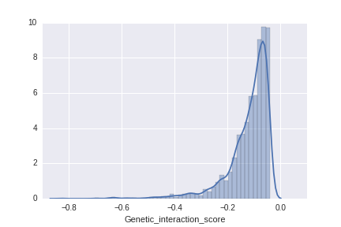
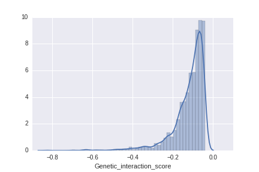
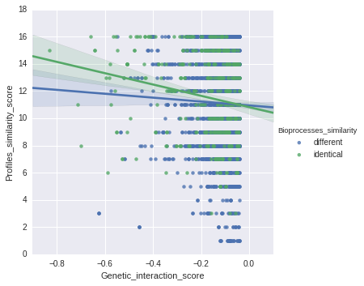
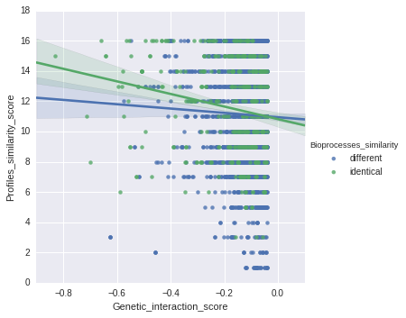

Definitions:
- DMF: Double Mutant Fitness
- SMF: Single Mutant Fitness
- DMF positive: DMF > SMF of query AND array
- DMF negative: DMF < SMF of query AND array
File created: 2016.9.15, 13:10:50
| Category | Actual value | |
|---|---|---|
| DMF positive | 0 | |
| DMF negative | 2054 | Average of 1000 permutations |
| mirror profiles | 0 | 0 |
| similar profiles | 536 | 340 |
| dissimilar | 1518 | 1754 |
| total | 2054 |
 

 

Click to show/hide columns:
Query_ORF Query_gene_name Array_ORF Array_gene_name definition_query definition_array Process_query Process_array Bioprocesses_similarity Query_gene_profile Array_gene_profile Profiles_similarity_score Query_SMF Array_SMF DMF Genetic_interaction_scoreClick to count selected rows:
| Query_ORF | Query_gene_name | Array_ORF | Array_gene_name | definition_query | definition_array | Process_query | Process_array | Bioprocesses_similarity | Query_gene_profile | Array_gene_profile | Profiles_similarity_score | Query_SMF | Array_SMF | DMF | Genetic_interaction_score |
|---|---|---|---|---|---|---|---|---|---|---|---|---|---|---|---|
| YAL021C | CCR4 | YBL078C | ATG8 | CCR4-NOT transcription complex subunit 6 [EC:3... | GABA(A) receptor-associated protein | chromatin/transcription;RNA processing | ER<->Golgi traffic | different | --+-+--+-++--+-+ | --+-+-++-++--+++ | 14 | 0.4261 | 0.8836 | 0.2771 | -0.0994 |
| YAL021C | CCR4 | YBR031W | RPL4A | CCR4-NOT transcription complex subunit 6 [EC:3... | large subunit ribosomal protein L4e | chromatin/transcription;RNA processing | ribosome/translation | different | --+-+--+-++--+-+ | +-+-+-++-++-++++ | 12 | 0.4261 | 0.9519 | 0.3300 | -0.0756 |
| YAL021C | CCR4 | YBR031W | RPL4A | CCR4-NOT transcription complex subunit 6 [EC:3... | large subunit ribosomal protein L4e | chromatin/transcription;RNA processing | ribosome/translation | different | --+-+--+-++--+-+ | +-+-+-++-++-++++ | 12 | 0.4261 | 0.9519 | 0.3300 | -0.0756 |
| YAL021C | CCR4 | YBR164C | ARL1 | CCR4-NOT transcription complex subunit 6 [EC:3... | ADP-ribosylation factor-like protein 1 | chromatin/transcription;RNA processing | Golgi/endosome/vacuole/sorting | different | --+-+--+-++--+-+ | --+-+-++-++--+++ | 14 | 0.4261 | 0.9524 | 0.3059 | -0.0999 |
| YAL021C | CCR4 | YBR289W | SNF5 | CCR4-NOT transcription complex subunit 6 [EC:3... | SWI/SNF-related matrix-associated actin-depend... | chromatin/transcription;RNA processing | chromatin/transcription | different | --+-+--+-++--+-+ | --+-+-++-+---+-- | 13 | 0.4261 | 0.2989 | 0.0609 | -0.0664 |
| YAL021C | CCR4 | YCR009C | RVS161 | CCR4-NOT transcription complex subunit 6 [EC:3... | bridging integrator 3 | chromatin/transcription;RNA processing | cell polarity/morphogenesis | different | --+-+--+-++--+-+ | ---------+------ | 10 | 0.4261 | 0.6955 | 0.2111 | -0.0853 |
| YAL021C | CCR4 | YCR077C | PAT1 | CCR4-NOT transcription complex subunit 6 [EC:3... | DNA topoisomerase 2-associated protein PAT1 | chromatin/transcription;RNA processing | RNA processing | different | --+-+--+-++--+-+ | --+-+--+-+------ | 13 | 0.4261 | 0.9307 | 0.3410 | -0.0556 |
| YAL021C | CCR4 | YDL226C | GCS1 | CCR4-NOT transcription complex subunit 6 [EC:3... | ADP-ribosylation factor GTPase-activating prot... | chromatin/transcription;RNA processing | ER<->Golgi traffic | different | --+-+--+-++--+-+ | --+-+-++-++--+++ | 14 | 0.4261 | 0.9350 | 0.2002 | -0.1982 |
| YAL021C | CCR4 | YDL192W | ARF1 | CCR4-NOT transcription complex subunit 6 [EC:3... | ADP-ribosylation factor 1 | chromatin/transcription;RNA processing | Golgi/endosome/vacuole/sorting | different | --+-+--+-++--+-+ | --+-+-++-++--+-+ | 15 | 0.4261 | 0.7964 | 0.2140 | -0.1254 |
| YAL021C | CCR4 | YDL192W | ARF1 | CCR4-NOT transcription complex subunit 6 [EC:3... | ADP-ribosylation factor 1 | chromatin/transcription;RNA processing | Golgi/endosome/vacuole/sorting | different | --+-+--+-++--+-+ | --+-+-++-++--+-+ | 15 | 0.4261 | 0.7964 | 0.2140 | -0.1254 |
| YAL021C | CCR4 | YFL023W | BUD27 | CCR4-NOT transcription complex subunit 6 [EC:3... | unconventional prefoldin RPB5 interactor 1 | chromatin/transcription;RNA processing | unknown | different | --+-+--+-++--+-+ | --+-+-++-+---+-- | 13 | 0.4261 | 0.7226 | 0.2138 | -0.0941 |
| YAL021C | CCR4 | YGL174W | BUD13 | CCR4-NOT transcription complex subunit 6 [EC:3... | pre-mRNA-splicing factor CWC26 | chromatin/transcription;RNA processing | RNA processing | different | --+-+--+-++--+-+ | --+-+-++-++--+-+ | 15 | 0.4261 | 0.8364 | 0.3015 | -0.0549 |
| YAL021C | CCR4 | YGL124C | MON1 | CCR4-NOT transcription complex subunit 6 [EC:3... | vacuolar fusion protein MON1 | chromatin/transcription;RNA processing | Golgi/endosome/vacuole/sorting | different | --+-+--+-++--+-+ | --+-+-++-++--+++ | 14 | 0.4261 | 0.8361 | 0.2568 | -0.0995 |
| YAL021C | CCR4 | YGR085C | RPL11B | CCR4-NOT transcription complex subunit 6 [EC:3... | large subunit ribosomal protein L11e | chromatin/transcription;RNA processing | ribosome/translation | different | --+-+--+-++--+-+ | --+-+-++-++--+++ | 14 | 0.4261 | 0.8012 | 0.2366 | -0.1048 |
| YAL021C | CCR4 | YGR085C | RPL11B | CCR4-NOT transcription complex subunit 6 [EC:3... | large subunit ribosomal protein L11e | chromatin/transcription;RNA processing | ribosome/translation | different | --+-+--+-++--+-+ | --+-+-++-++--+++ | 14 | 0.4261 | 0.8012 | 0.2366 | -0.1048 |
| YAL021C | CCR4 | YGR292W | MAL12 | CCR4-NOT transcription complex subunit 6 [EC:3... | oligo-1,6-glucosidase [EC:3.2.1.10] | chromatin/transcription;RNA processing | metabolism/mitochondria | different | --+-+--+-++--+-+ | ---+------------ | 8 | 0.4261 | 0.9961 | 0.2850 | -0.1395 |
| YAL021C | CCR4 | YGR292W | MAL12 | CCR4-NOT transcription complex subunit 6 [EC:3... | oligo-1,6-glucosidase [EC:3.2.1.10] | chromatin/transcription;RNA processing | metabolism/mitochondria | different | --+-+--+-++--+-+ | ---+------------ | 8 | 0.4261 | 0.9961 | 0.2850 | -0.1395 |
| YAL021C | CCR4 | YGR292W | MAL12 | CCR4-NOT transcription complex subunit 6 [EC:3... | oligo-1,6-glucosidase [EC:3.2.1.10] | chromatin/transcription;RNA processing | metabolism/mitochondria | different | --+-+--+-++--+-+ | ---+------------ | 8 | 0.4261 | 0.9961 | 0.2850 | -0.1395 |
| YAL021C | CCR4 | YGR292W | MAL12 | CCR4-NOT transcription complex subunit 6 [EC:3... | oligo-1,6-glucosidase [EC:3.2.1.10] | chromatin/transcription;RNA processing | metabolism/mitochondria | different | --+-+--+-++--+-+ | ---+------------ | 8 | 0.4261 | 0.9961 | 0.2850 | -0.1395 |
| YAL021C | CCR4 | YGR292W | MAL12 | CCR4-NOT transcription complex subunit 6 [EC:3... | oligo-1,6-glucosidase [EC:3.2.1.10] | chromatin/transcription;RNA processing | metabolism/mitochondria | different | --+-+--+-++--+-+ | ---+------------ | 8 | 0.4261 | 0.9961 | 0.2850 | -0.1395 |
| YAL021C | CCR4 | YGR292W | MAL12 | CCR4-NOT transcription complex subunit 6 [EC:3... | oligo-1,6-glucosidase [EC:3.2.1.10] | chromatin/transcription;RNA processing | metabolism/mitochondria | different | --+-+--+-++--+-+ | ---+------------ | 8 | 0.4261 | 0.9961 | 0.2850 | -0.1395 |
| YAL021C | CCR4 | YGR292W | MAL12 | CCR4-NOT transcription complex subunit 6 [EC:3... | oligo-1,6-glucosidase [EC:3.2.1.10] | chromatin/transcription;RNA processing | metabolism/mitochondria | different | --+-+--+-++--+-+ | ---+------------ | 8 | 0.4261 | 0.9961 | 0.2850 | -0.1395 |
| YAL021C | CCR4 | YHL033C | RPL8A | CCR4-NOT transcription complex subunit 6 [EC:3... | large subunit ribosomal protein L7Ae | chromatin/transcription;RNA processing | ribosome/translation | different | --+-+--+-++--+-+ | +-+-+-++-++-++++ | 12 | 0.4261 | 0.8604 | 0.2827 | -0.0839 |
| YAL021C | CCR4 | YHL033C | RPL8A | CCR4-NOT transcription complex subunit 6 [EC:3... | large subunit ribosomal protein L7Ae | chromatin/transcription;RNA processing | ribosome/translation | different | --+-+--+-++--+-+ | +-+-+-++-++-++++ | 12 | 0.4261 | 0.8604 | 0.2827 | -0.0839 |
| YAL021C | CCR4 | YHR012W | VPS29 | CCR4-NOT transcription complex subunit 6 [EC:3... | vacuolar protein sorting-associated protein 29 | chromatin/transcription;RNA processing | Golgi/endosome/vacuole/sorting | different | --+-+--+-++--+-+ | --+-+-++-++--+++ | 14 | 0.4261 | 0.8018 | 0.2560 | -0.0856 |
| YAL021C | CCR4 | YHR031C | RRM3 | CCR4-NOT transcription complex subunit 6 [EC:3... | ATP-dependent DNA helicase PIF1 [EC:3.6.4.12] | chromatin/transcription;RNA processing | DNA replication/repair/HR/cohesion | different | --+-+--+-++--+-+ | --+-+-++-+----++ | 12 | 0.4261 | 0.9902 | 0.3796 | -0.0424 |
| YAL021C | CCR4 | YHR031C | RRM3 | CCR4-NOT transcription complex subunit 6 [EC:3... | ATP-dependent DNA helicase PIF1 [EC:3.6.4.12] | chromatin/transcription;RNA processing | DNA replication/repair/HR/cohesion | different | --+-+--+-++--+-+ | --+-+-++-+----++ | 12 | 0.4261 | 0.9902 | 0.3796 | -0.0424 |
| YAL021C | CCR4 | YHR193C | EGD2 | CCR4-NOT transcription complex subunit 6 [EC:3... | nascent polypeptide-associated complex subunit... | chromatin/transcription;RNA processing | unknown | different | --+-+--+-++--+-+ | +-+-+-++-++-++++ | 12 | 0.4261 | 0.9587 | 0.3293 | -0.0792 |
| YAL021C | CCR4 | YIL035C | CKA1 | CCR4-NOT transcription complex subunit 6 [EC:3... | casein kinase II subunit alpha [EC:2.7.11.1] | chromatin/transcription;RNA processing | signaling/stress response | different | --+-+--+-++--+-+ | --+-+-++-++--+++ | 14 | 0.4261 | 0.9705 | 0.3505 | -0.0631 |
| YAL021C | CCR4 | YIL035C | CKA1 | CCR4-NOT transcription complex subunit 6 [EC:3... | casein kinase II subunit alpha [EC:2.7.11.1] | chromatin/transcription;RNA processing | signaling/stress response | different | --+-+--+-++--+-+ | --+-+-++-++--+++ | 14 | 0.4261 | 0.9705 | 0.3505 | -0.0631 |
| YAL021C | CCR4 | YIR005W | IST3 | CCR4-NOT transcription complex subunit 6 [EC:3... | RNA-binding motif protein, X-linked 2 | chromatin/transcription;RNA processing | RNA processing | different | --+-+--+-++--+-+ | --+-+-++-++--+-+ | 15 | 0.4261 | 0.8249 | 0.2824 | -0.0692 |
| YAL021C | CCR4 | YJL154C | VPS35 | CCR4-NOT transcription complex subunit 6 [EC:3... | vacuolar protein sorting-associated protein 35 | chromatin/transcription;RNA processing | Golgi/endosome/vacuole/sorting | different | --+-+--+-++--+-+ | --+-+-++-++--+++ | 14 | 0.4261 | 0.8078 | 0.2652 | -0.0790 |
| YAL021C | CCR4 | YJL136C | RPS21B | CCR4-NOT transcription complex subunit 6 [EC:3... | small subunit ribosomal protein S21e | chromatin/transcription;RNA processing | ribosome/translation | different | --+-+--+-++--+-+ | --+-+-++-++----+ | 14 | 0.4261 | 0.8477 | 0.3146 | -0.0466 |
| YAL021C | CCR4 | YJL136C | RPS21B | CCR4-NOT transcription complex subunit 6 [EC:3... | small subunit ribosomal protein S21e | chromatin/transcription;RNA processing | ribosome/translation | different | --+-+--+-++--+-+ | --+-+-++-++----+ | 14 | 0.4261 | 0.8477 | 0.3146 | -0.0466 |
| YAL021C | CCR4 | YJL124C | LSM1 | CCR4-NOT transcription complex subunit 6 [EC:3... | U6 snRNA-associated Sm-like protein LSm1 | chromatin/transcription;RNA processing | RNA processing | different | --+-+--+-++--+-+ | --+-+-++-++----+ | 14 | 0.4261 | 0.9539 | 0.2834 | -0.1231 |
| YAL021C | CCR4 | YJL053W | PEP8 | CCR4-NOT transcription complex subunit 6 [EC:3... | vacuolar protein sorting-associated protein 26 | chromatin/transcription;RNA processing | Golgi/endosome/vacuole/sorting | different | --+-+--+-++--+-+ | --+-+-++-++--+++ | 14 | 0.4261 | 0.8755 | 0.3032 | -0.0699 |
| YAL021C | CCR4 | YJL024C | APS3 | CCR4-NOT transcription complex subunit 6 [EC:3... | AP-3 complex subunit sigma | chromatin/transcription;RNA processing | Golgi/endosome/vacuole/sorting | different | --+-+--+-++--+-+ | --+-+-++-++--++- | 13 | 0.4261 | 0.9616 | 0.2811 | -0.1287 |
| YAL021C | CCR4 | YJR050W | ISY1 | CCR4-NOT transcription complex subunit 6 [EC:3... | pre-mRNA-splicing factor ISY1 | chromatin/transcription;RNA processing | RNA processing | different | --+-+--+-++--+-+ | --+-+-++-++--+-+ | 15 | 0.4261 | 0.9981 | 0.3598 | -0.0656 |
| YAL021C | CCR4 | YKL156W | RPS27A | CCR4-NOT transcription complex subunit 6 [EC:3... | small subunit ribosomal protein S27e | chromatin/transcription;RNA processing | ribosome/translation | different | --+-+--+-++--+-+ | +-+-+-++-++-++++ | 12 | 0.4261 | 0.9612 | 0.3609 | -0.0487 |
| YAL021C | CCR4 | YKL156W | RPS27A | CCR4-NOT transcription complex subunit 6 [EC:3... | small subunit ribosomal protein S27e | chromatin/transcription;RNA processing | ribosome/translation | different | --+-+--+-++--+-+ | +-+-+-++-++-++++ | 12 | 0.4261 | 0.9612 | 0.3609 | -0.0487 |
| YAL021C | CCR4 | YKL081W | TEF4 | CCR4-NOT transcription complex subunit 6 [EC:3... | elongation factor 1-gamma | chromatin/transcription;RNA processing | ribosome/translation | different | --+-+--+-++--+-+ | --+-+-++-++--++- | 13 | 0.4261 | 0.7803 | 0.2456 | -0.0869 |
| YAL021C | CCR4 | YKL081W | TEF4 | CCR4-NOT transcription complex subunit 6 [EC:3... | elongation factor 1-gamma | chromatin/transcription;RNA processing | ribosome/translation | different | --+-+--+-++--+-+ | --+-+-++-++--++- | 13 | 0.4261 | 0.7803 | 0.2456 | -0.0869 |
| YAL021C | CCR4 | YKL081W | TEF4 | CCR4-NOT transcription complex subunit 6 [EC:3... | elongation factor 1-gamma | chromatin/transcription;RNA processing | ribosome/translation | different | --+-+--+-++--+-+ | --+-+-++-++--++- | 13 | 0.4261 | 0.7803 | 0.2456 | -0.0869 |
| YAL021C | CCR4 | YKL041W | VPS24 | CCR4-NOT transcription complex subunit 6 [EC:3... | charged multivesicular body protein 3 | chromatin/transcription;RNA processing | Golgi/endosome/vacuole/sorting | different | --+-+--+-++--+-+ | --+-+-++-+---+++ | 13 | 0.4261 | 0.6432 | 0.1881 | -0.0860 |
| YAL021C | CCR4 | YKR016W | AIM28 | CCR4-NOT transcription complex subunit 6 [EC:3... | mitofilin | chromatin/transcription;RNA processing | unknown | different | --+-+--+-++--+-+ | --+-+-++-+------ | 12 | 0.4261 | 0.9564 | 0.3637 | -0.0439 |
| YAL021C | CCR4 | YKR035W-A | DID2 | CCR4-NOT transcription complex subunit 6 [EC:3... | charged multivesicular body protein 1 | chromatin/transcription;RNA processing | Golgi/endosome/vacuole/sorting | different | --+-+--+-++--+-+ | --+-+-++-++--+++ | 14 | 0.4261 | 0.9858 | 0.3548 | -0.0653 |
| YAL021C | CCR4 | YKR057W | RPS21A | CCR4-NOT transcription complex subunit 6 [EC:3... | small subunit ribosomal protein S21e | chromatin/transcription;RNA processing | ribosome/translation | different | --+-+--+-++--+-+ | --+-+-++-++----+ | 14 | 0.4261 | 0.7909 | 0.2700 | -0.0670 |
| YAL021C | CCR4 | YKR057W | RPS21A | CCR4-NOT transcription complex subunit 6 [EC:3... | small subunit ribosomal protein S21e | chromatin/transcription;RNA processing | ribosome/translation | different | --+-+--+-++--+-+ | --+-+-++-++----+ | 14 | 0.4261 | 0.7909 | 0.2700 | -0.0670 |
| YAL021C | CCR4 | YKR082W | NUP133 | CCR4-NOT transcription complex subunit 6 [EC:3... | nuclear pore complex protein Nup133 | chromatin/transcription;RNA processing | nuclear-cytoplasic transport | different | --+-+--+-++--+-+ | --+-+-++-+------ | 12 | 0.4261 | 0.7882 | 0.2532 | -0.0827 |
| YAL021C | CCR4 | YLL040C | VPS13 | CCR4-NOT transcription complex subunit 6 [EC:3... | vacuolar protein sorting-associated protein 13A/C | chromatin/transcription;RNA processing | Golgi/endosome/vacuole/sorting | different | --+-+--+-++--+-+ | --+-+-++-++--+++ | 14 | 0.4261 | 0.9455 | 0.3125 | -0.0904 |
| YAL021C | CCR4 | YLR113W | HOG1 | CCR4-NOT transcription complex subunit 6 [EC:3... | p38 MAP kinase [EC:2.7.11.24] | chromatin/transcription;RNA processing | protein folding/protein glycosylation/cell wal... | different | --+-+--+-++--+-+ | ----+--+-+------ | 12 | 0.4261 | 0.9960 | 0.3838 | -0.0406 |
| YAL021C | CCR4 | YLR239C | LIP2 | CCR4-NOT transcription complex subunit 6 [EC:3... | lipoyl(octanoyl) transferase [EC:2.3.1.181] | chromatin/transcription;RNA processing | metabolism/mitochondria | different | --+-+--+-++--+-+ | -++-+--++++---++ | 12 | 0.4261 | 0.7692 | 0.2445 | -0.0833 |
| YAL021C | CCR4 | YLR262C | YPT6 | CCR4-NOT transcription complex subunit 6 [EC:3... | Ras-related protein Rab-6A | chromatin/transcription;RNA processing | Golgi/endosome/vacuole/sorting | different | --+-+--+-++--+-+ | --+-+-++-++--+-+ | 15 | 0.4261 | 0.5888 | 0.1905 | -0.0605 |
| YAL021C | CCR4 | YML103C | NUP188 | CCR4-NOT transcription complex subunit 6 [EC:3... | nuclear pore complex protein Nup188 | chromatin/transcription;RNA processing | nuclear-cytoplasic transport | different | --+-+--+-++--+-+ | --+----+-+------ | 12 | 0.4261 | 0.9036 | 0.3275 | -0.0575 |
| YAL021C | CCR4 | YML102W | CAC2 | CCR4-NOT transcription complex subunit 6 [EC:3... | chromatin assembly factor 1 subunit B | chromatin/transcription;RNA processing | chromatin/transcription | different | --+-+--+-++--+-+ | --+-+-++-++--+++ | 14 | 0.4261 | 0.8721 | 0.2970 | -0.0747 |
| YAL021C | CCR4 | YML008C | ERG6 | CCR4-NOT transcription complex subunit 6 [EC:3... | sterol 24-C-methyltransferase [EC:2.1.1.41] | chromatin/transcription;RNA processing | lipid/sterol/fatty acid biosynth | different | --+-+--+-++--+-+ | --+---+-------+- | 8 | 0.4261 | 0.9589 | 0.3219 | -0.0867 |
| YAL021C | CCR4 | YML001W | YPT7 | CCR4-NOT transcription complex subunit 6 [EC:3... | Ras-related protein Rab-7A | chromatin/transcription;RNA processing | Golgi/endosome/vacuole/sorting | different | --+-+--+-++--+-+ | --+-+-++-++--+++ | 14 | 0.4261 | 0.8085 | 0.2323 | -0.1122 |
| YAL021C | CCR4 | YMR190C | SGS1 | CCR4-NOT transcription complex subunit 6 [EC:3... | bloom syndrome protein [EC:3.6.4.12] | chromatin/transcription;RNA processing | DNA replication/repair/HR/cohesion | different | --+-+--+-++--+-+ | --+-+-++-++--+++ | 14 | 0.4261 | 0.9072 | 0.3432 | -0.0434 |
| YAL021C | CCR4 | YMR304W | UBP15 | CCR4-NOT transcription complex subunit 6 [EC:3... | ubiquitin carboxyl-terminal hydrolase 7 [EC:3.... | chromatin/transcription;RNA processing | unknown | different | --+-+--+-++--+-+ | --+-+-++-++--+++ | 14 | 0.4261 | 0.9094 | 0.3188 | -0.0688 |
| YAL021C | CCR4 | YNL147W | LSM7 | CCR4-NOT transcription complex subunit 6 [EC:3... | U6 snRNA-associated Sm-like protein LSm7 | chromatin/transcription;RNA processing | RNA processing | different | --+-+--+-++--+-+ | --+-+-++-++--+++ | 14 | 0.4261 | 0.8539 | 0.2833 | -0.0806 |
| YAL021C | CCR4 | YNL098C | RAS2 | CCR4-NOT transcription complex subunit 6 [EC:3... | GTPase KRas | chromatin/transcription;RNA processing | signaling/stress response | different | --+-+--+-++--+-+ | ----+-++-+---++- | 11 | 0.4261 | 0.9939 | 0.3807 | -0.0429 |
| YAL021C | CCR4 | YNL098C | RAS2 | CCR4-NOT transcription complex subunit 6 [EC:3... | GTPase KRas | chromatin/transcription;RNA processing | signaling/stress response | different | --+-+--+-++--+-+ | ----+-++-+---++- | 11 | 0.4261 | 0.9939 | 0.3807 | -0.0429 |
| YAL021C | CCR4 | YNL096C | RPS7B | CCR4-NOT transcription complex subunit 6 [EC:3... | small subunit ribosomal protein S7e | chromatin/transcription;RNA processing | ribosome/translation | different | --+-+--+-++--+-+ | --+-+-++-++--+++ | 14 | 0.4261 | 0.8421 | 0.3024 | -0.0564 |
| YAL021C | CCR4 | YNL096C | RPS7B | CCR4-NOT transcription complex subunit 6 [EC:3... | small subunit ribosomal protein S7e | chromatin/transcription;RNA processing | ribosome/translation | different | --+-+--+-++--+-+ | --+-+-++-++--+++ | 14 | 0.4261 | 0.8421 | 0.3024 | -0.0564 |
| YAL021C | CCR4 | YNL016W | PUB1 | CCR4-NOT transcription complex subunit 6 [EC:3... | nucleolysin TIA-1/TIAR | chromatin/transcription;RNA processing | RNA processing | different | --+-+--+-++--+-+ | --+-+--+-+------ | 13 | 0.4261 | 0.8549 | 0.2796 | -0.0847 |
| YAL021C | CCR4 | YNR006W | VPS27 | CCR4-NOT transcription complex subunit 6 [EC:3... | hepatocyte growth factor-regulated tyrosine ki... | chromatin/transcription;RNA processing | Golgi/endosome/vacuole/sorting | different | --+-+--+-++--+-+ | ----+--+-+------ | 12 | 0.4261 | 0.6959 | 0.2002 | -0.0963 |
| YAL021C | CCR4 | YOL006C | TOP1 | CCR4-NOT transcription complex subunit 6 [EC:3... | DNA topoisomerase I [EC:5.99.1.2] | chromatin/transcription;RNA processing | DNA replication/repair/HR/cohesion | different | --+-+--+-++--+-+ | --+-+-++-++--++- | 13 | 0.4261 | 0.8624 | 0.1508 | -0.2166 |
| YAL021C | CCR4 | YOR039W | CKB2 | CCR4-NOT transcription complex subunit 6 [EC:3... | casein kinase II subunit beta | chromatin/transcription;RNA processing | signaling/stress response | different | --+-+--+-++--+-+ | --+-+-++-++--++- | 13 | 0.4261 | 0.8516 | 0.2815 | -0.0814 |
| YAL021C | CCR4 | YOR039W | CKB2 | CCR4-NOT transcription complex subunit 6 [EC:3... | casein kinase II subunit beta | chromatin/transcription;RNA processing | signaling/stress response | different | --+-+--+-++--+-+ | --+-+-++-++--++- | 13 | 0.4261 | 0.8516 | 0.2815 | -0.0814 |
| YAL021C | CCR4 | YPL213W | LEA1 | CCR4-NOT transcription complex subunit 6 [EC:3... | U2 small nuclear ribonucleoprotein A' | chromatin/transcription;RNA processing | RNA processing | different | --+-+--+-++--+-+ | --+-+-++-++--+-+ | 15 | 0.4261 | 0.4689 | 0.1284 | -0.0714 |
| YAL021C | CCR4 | YPL157W | TGS1 | CCR4-NOT transcription complex subunit 6 [EC:3... | trimethylguanosine synthase [EC:2.1.1.-] | chromatin/transcription;RNA processing | RNA processing | different | --+-+--+-++--+-+ | --+-+-++-+---+++ | 13 | 0.4261 | 0.7518 | 0.2526 | -0.0678 |
| YAL021C | CCR4 | YPL120W | VPS30 | CCR4-NOT transcription complex subunit 6 [EC:3... | beclin 1 | chromatin/transcription;RNA processing | Golgi/endosome/vacuole/sorting | different | --+-+--+-++--+-+ | --+-+-++-+---+-+ | 14 | 0.4261 | 0.9152 | 0.2291 | -0.1609 |
| YAL002W | VPS8 | YBR031W | RPL4A | vacuolar protein sorting-associated protein 8 | large subunit ribosomal protein L4e | Golgi/endosome/vacuole/sorting | ribosome/translation | different | --+-+-++-+---++- | +-+-+-++-++-++++ | 12 | 0.6982 | 0.9519 | 0.6225 | -0.0422 |
| YAL002W | VPS8 | YBR031W | RPL4A | vacuolar protein sorting-associated protein 8 | large subunit ribosomal protein L4e | Golgi/endosome/vacuole/sorting | ribosome/translation | different | --+-+-++-+---++- | +-+-+-++-++-++++ | 12 | 0.6982 | 0.9519 | 0.6225 | -0.0422 |
| YAL002W | VPS8 | YBR175W | SWD3 | vacuolar protein sorting-associated protein 8 | COMPASS component SWD3 | Golgi/endosome/vacuole/sorting | chromatin/transcription | different | --+-+-++-+---++- | --+-+-++-+---+-+ | 14 | 0.6982 | 0.8026 | 0.4426 | -0.1178 |
| YAL002W | VPS8 | YCR063W | BUD31 | vacuolar protein sorting-associated protein 8 | bud site selection protein 31 | Golgi/endosome/vacuole/sorting | RNA processing | different | --+-+-++-+---++- | --+-+-++-++--+++ | 14 | 0.6982 | 0.5126 | 0.2545 | -0.1034 |
| YAL002W | VPS8 | YCR068W | ATG15 | vacuolar protein sorting-associated protein 8 | lipase ATG15 [EC:3.1.1.3] | Golgi/endosome/vacuole/sorting | NaN | different | --+-+-++-+---++- | --------------+- | 10 | 0.6982 | 0.9672 | 0.5572 | -0.1181 |
| YAL002W | VPS8 | YDL213C | NOP6 | vacuolar protein sorting-associated protein 8 | nucleolar protein 6 | Golgi/endosome/vacuole/sorting | ribosome/translation;RNA processing | different | --+-+-++-+---++- | -------+-------- | 10 | 0.6982 | 0.9474 | 0.5708 | -0.0907 |
| YAL002W | VPS8 | YDL136W | RPL35B | vacuolar protein sorting-associated protein 8 | large subunit ribosomal protein L35e | Golgi/endosome/vacuole/sorting | ribosome/translation | different | --+-+-++-+---++- | --+-+-++-++--+++ | 14 | 0.6982 | 0.8281 | 0.2671 | -0.3111 |
| YAL002W | VPS8 | YDL136W | RPL35B | vacuolar protein sorting-associated protein 8 | large subunit ribosomal protein L35e | Golgi/endosome/vacuole/sorting | ribosome/translation | different | --+-+-++-+---++- | --+-+-++-++--+++ | 14 | 0.6982 | 0.8281 | 0.2671 | -0.3111 |
| YAL002W | VPS8 | YDL104C | QRI7 | vacuolar protein sorting-associated protein 8 | N6-L-threonylcarbamoyladenine synthase [EC:2.3... | Golgi/endosome/vacuole/sorting | unknown | different | --+-+-++-+---++- | ++++++++++++++++ | 7 | 0.6982 | 0.9254 | 0.5789 | -0.0672 |
| YAL002W | VPS8 | YDL104C | QRI7 | vacuolar protein sorting-associated protein 8 | N6-L-threonylcarbamoyladenine synthase [EC:2.3... | Golgi/endosome/vacuole/sorting | unknown | different | --+-+-++-+---++- | ++++++++++++++++ | 7 | 0.6982 | 0.9254 | 0.5789 | -0.0672 |
| YAL002W | VPS8 | YDL074C | BRE1 | vacuolar protein sorting-associated protein 8 | E3 ubiquitin-protein ligase BRE1 [EC:2.3.2.27] | Golgi/endosome/vacuole/sorting | chromatin/transcription | different | --+-+-++-+---++- | --+-+-++-+-----+ | 13 | 0.6982 | 0.6430 | 0.3106 | -0.1384 |
| YAL002W | VPS8 | YDR080W | VPS41 | vacuolar protein sorting-associated protein 8 | vacuolar protein sorting-associated protein 41 | Golgi/endosome/vacuole/sorting | Golgi/endosome/vacuole/sorting | identical | --+-+-++-+---++- | --+-+-++-+----++ | 14 | 0.6982 | 0.5950 | 0.1382 | -0.2772 |
| YAL002W | VPS8 | YDR289C | RTT103 | vacuolar protein sorting-associated protein 8 | regulator of Ty1 transposition protein 103 | Golgi/endosome/vacuole/sorting | chromatin/transcription | different | --+-+-++-+---++- | --+-+--+-+-----+ | 12 | 0.6982 | 0.9758 | 0.5466 | -0.1348 |
| YAL002W | VPS8 | YDR335W | MSN5 | vacuolar protein sorting-associated protein 8 | exportin-5 | Golgi/endosome/vacuole/sorting | G1/S and G2/M cell cycle progression/meiosis;n... | different | --+-+-++-+---++- | --+---++-+-----+ | 12 | 0.6982 | 0.9371 | 0.5639 | -0.0903 |
| YAL002W | VPS8 | YFL001W | DEG1 | vacuolar protein sorting-associated protein 8 | tRNA pseudouridine38/39 synthase [EC:5.4.99.45] | Golgi/endosome/vacuole/sorting | ribosome/translation | different | --+-+-++-+---++- | --+-+-++-++--+++ | 14 | 0.6982 | 0.7951 | 0.4026 | -0.1525 |
| YAL002W | VPS8 | YGL244W | RTF1 | vacuolar protein sorting-associated protein 8 | RNA polymerase-associated protein RTF1 | Golgi/endosome/vacuole/sorting | chromatin/transcription | different | --+-+-++-+---++- | --+-+-++-+---+-+ | 14 | 0.6982 | 0.6487 | 0.3627 | -0.0903 |
| YAL002W | VPS8 | YGL236C | MTO1 | vacuolar protein sorting-associated protein 8 | tRNA uridine 5-carboxymethylaminomethyl modifi... | Golgi/endosome/vacuole/sorting | ribosome/translation | different | --+-+-++-+---++- | -+++++++++++-+-+ | 8 | 0.6982 | 0.9258 | 0.5754 | -0.0711 |
| YAL002W | VPS8 | YGL019W | CKB1 | vacuolar protein sorting-associated protein 8 | casein kinase II subunit beta | Golgi/endosome/vacuole/sorting | signaling/stress response | different | --+-+-++-+---++- | --+-+-++-++--++- | 15 | 0.6982 | 0.8170 | 0.4492 | -0.1213 |
| YAL002W | VPS8 | YGL019W | CKB1 | vacuolar protein sorting-associated protein 8 | casein kinase II subunit beta | Golgi/endosome/vacuole/sorting | signaling/stress response | different | --+-+-++-+---++- | --+-+-++-++--++- | 15 | 0.6982 | 0.8170 | 0.4492 | -0.1213 |
| YAL002W | VPS8 | YHR030C | SLT2 | vacuolar protein sorting-associated protein 8 | mitogen-activated protein kinase 7 [EC:2.7.11.24] | Golgi/endosome/vacuole/sorting | protein folding/protein glycosylation/cell wal... | different | --+-+-++-+---++- | --+-+----+------ | 12 | 0.6982 | 0.9667 | 0.5598 | -0.1152 |
| YAL002W | VPS8 | YHR200W | RPN10 | vacuolar protein sorting-associated protein 8 | 26S proteasome regulatory subunit N10 | Golgi/endosome/vacuole/sorting | protein degradation/proteosome | different | --+-+-++-+---++- | --+-+-++-++--+++ | 14 | 0.6982 | 0.9326 | 0.5799 | -0.0713 |
| YAL002W | VPS8 | YIL133C | RPL16A | vacuolar protein sorting-associated protein 8 | large subunit ribosomal protein L13Ae | Golgi/endosome/vacuole/sorting | ribosome/translation | different | --+-+-++-+---++- | --+-+-++-++--+++ | 14 | 0.6982 | 0.9297 | 0.5740 | -0.0750 |
| YAL002W | VPS8 | YIL133C | RPL16A | vacuolar protein sorting-associated protein 8 | large subunit ribosomal protein L13Ae | Golgi/endosome/vacuole/sorting | ribosome/translation | different | --+-+-++-+---++- | --+-+-++-++--+++ | 14 | 0.6982 | 0.9297 | 0.5740 | -0.0750 |
| YAL002W | VPS8 | YJL210W | PEX2 | vacuolar protein sorting-associated protein 8 | peroxin-2 | Golgi/endosome/vacuole/sorting | NaN | different | --+-+-++-+---++- | --+-+-++-+---+++ | 15 | 0.6982 | 0.8714 | 0.5147 | -0.0937 |
| YAL002W | VPS8 | YJL004C | SYS1 | vacuolar protein sorting-associated protein 8 | protein SYS1 | Golgi/endosome/vacuole/sorting | Golgi/endosome/vacuole/sorting | identical | --+-+-++-+---++- | ----+-++-+---+++ | 14 | 0.6982 | 0.9637 | 0.5305 | -0.1423 |
| YAL002W | VPS8 | YJR035W | RAD26 | vacuolar protein sorting-associated protein 8 | DNA excision repair protein ERCC-6 | Golgi/endosome/vacuole/sorting | DNA replication/repair/HR/cohesion | different | --+-+-++-+---++- | --+-+-+--+----++ | 13 | 0.6982 | 0.9975 | 0.5555 | -0.1410 |
| YAL002W | VPS8 | YJR043C | POL32 | vacuolar protein sorting-associated protein 8 | DNA polymerase delta subunit 3 | Golgi/endosome/vacuole/sorting | DNA replication/repair/HR/cohesion | different | --+-+-++-+---++- | --+-+-++-+------ | 14 | 0.6982 | 0.9122 | 0.5041 | -0.1328 |
| YAL002W | VPS8 | YJR125C | ENT3 | vacuolar protein sorting-associated protein 8 | epsin | Golgi/endosome/vacuole/sorting | Golgi/endosome/vacuole/sorting | identical | --+-+-++-+---++- | --+-+--+-+---+-+ | 13 | 0.6982 | 0.9876 | 0.5681 | -0.1214 |
| YAL002W | VPS8 | YJR125C | ENT3 | vacuolar protein sorting-associated protein 8 | epsin | Golgi/endosome/vacuole/sorting | Golgi/endosome/vacuole/sorting | identical | --+-+-++-+---++- | --+-+--+-+---+-+ | 13 | 0.6982 | 0.9876 | 0.5681 | -0.1214 |
| YAL002W | VPS8 | YJR125C | ENT3 | vacuolar protein sorting-associated protein 8 | epsin | Golgi/endosome/vacuole/sorting | Golgi/endosome/vacuole/sorting | identical | --+-+-++-+---++- | --+-+--+-+---+-+ | 13 | 0.6982 | 0.9876 | 0.5681 | -0.1214 |
| YAL002W | VPS8 | YKL127W | PGM1 | vacuolar protein sorting-associated protein 8 | phosphoglucomutase [EC:5.4.2.2] | Golgi/endosome/vacuole/sorting | metabolism/mitochondria | different | --+-+-++-+---++- | -++++-++++++-+++ | 10 | 0.6982 | 0.9877 | 0.5482 | -0.1414 |
| YAL002W | VPS8 | YKL127W | PGM1 | vacuolar protein sorting-associated protein 8 | phosphoglucomutase [EC:5.4.2.2] | Golgi/endosome/vacuole/sorting | metabolism/mitochondria | different | --+-+-++-+---++- | -++++-++++++-+++ | 10 | 0.6982 | 0.9877 | 0.5482 | -0.1414 |
| YAL002W | VPS8 | YKL127W | PGM1 | vacuolar protein sorting-associated protein 8 | phosphoglucomutase [EC:5.4.2.2] | Golgi/endosome/vacuole/sorting | metabolism/mitochondria | different | --+-+-++-+---++- | -++++-++++++-+++ | 10 | 0.6982 | 0.9877 | 0.5482 | -0.1414 |
| YAL002W | VPS8 | YKL055C | OAR1 | vacuolar protein sorting-associated protein 8 | 3-oxoacyl-[acyl-carrier protein] reductase [EC... | Golgi/endosome/vacuole/sorting | metabolism/mitochondria | different | --+-+-++-+---++- | ++++++--+-++++++ | 4 | 0.6982 | 0.7618 | 0.3688 | -0.1631 |
| YAL002W | VPS8 | YKL009W | MRT4 | vacuolar protein sorting-associated protein 8 | mRNA turnover protein 4 | Golgi/endosome/vacuole/sorting | ribosome/translation;RNA processing | different | --+-+-++-+---++- | --+-+-++-++--+++ | 14 | 0.6982 | 0.7000 | 0.3751 | -0.1137 |
| YAL002W | VPS8 | YKR059W | TIF1 | vacuolar protein sorting-associated protein 8 | translation initiation factor 4A | Golgi/endosome/vacuole/sorting | ribosome/translation | different | --+-+-++-+---++- | --+-+-++-++--+++ | 14 | 0.6982 | 0.9038 | 0.5627 | -0.0684 |
| YAL002W | VPS8 | YKR059W | TIF1 | vacuolar protein sorting-associated protein 8 | translation initiation factor 4A | Golgi/endosome/vacuole/sorting | ribosome/translation | different | --+-+-++-+---++- | --+-+-++-++--+++ | 14 | 0.6982 | 0.9038 | 0.5627 | -0.0684 |
| YAL002W | VPS8 | YKR082W | NUP133 | vacuolar protein sorting-associated protein 8 | nuclear pore complex protein Nup133 | Golgi/endosome/vacuole/sorting | nuclear-cytoplasic transport | different | --+-+-++-+---++- | --+-+-++-+------ | 14 | 0.6982 | 0.7882 | 0.3530 | -0.1973 |
| YAL002W | VPS8 | YLR387C | REH1 | vacuolar protein sorting-associated protein 8 | pre-60S factor REI1 | Golgi/endosome/vacuole/sorting | unknown | different | --+-+-++-+---++- | --+-+-++-++--+++ | 14 | 0.6982 | 0.9871 | 0.6267 | -0.0625 |
| YAL002W | VPS8 | YLR387C | REH1 | vacuolar protein sorting-associated protein 8 | pre-60S factor REI1 | Golgi/endosome/vacuole/sorting | unknown | different | --+-+-++-+---++- | --+-+-++-++--+++ | 14 | 0.6982 | 0.9871 | 0.6267 | -0.0625 |
| YAL002W | VPS8 | YML097C | VPS9 | vacuolar protein sorting-associated protein 8 | Rab5 GDP/GTP exchange factor | Golgi/endosome/vacuole/sorting | Golgi/endosome/vacuole/sorting | identical | --+-+-++-+---++- | --+-+--+-+---+-+ | 13 | 0.6982 | 0.6966 | 0.3675 | -0.1189 |
| YAL002W | VPS8 | YML071C | COG8 | vacuolar protein sorting-associated protein 8 | conserved oligomeric Golgi complex subunit 8 | Golgi/endosome/vacuole/sorting | Golgi/endosome/vacuole/sorting | identical | --+-+-++-+---++- | --+-+-++-+----++ | 14 | 0.6982 | 0.9855 | 0.6321 | -0.0560 |
| YAL002W | VPS8 | YMR190C | SGS1 | vacuolar protein sorting-associated protein 8 | bloom syndrome protein [EC:3.6.4.12] | Golgi/endosome/vacuole/sorting | DNA replication/repair/HR/cohesion | different | --+-+-++-+---++- | --+-+-++-++--+++ | 14 | 0.6982 | 0.9072 | 0.5458 | -0.0876 |
| YAL002W | VPS8 | YMR224C | MRE11 | vacuolar protein sorting-associated protein 8 | double-strand break repair protein MRE11 | Golgi/endosome/vacuole/sorting | DNA replication/repair/HR/cohesion | different | --+-+-++-+---++- | --+-+-++-+---+++ | 15 | 0.6982 | 0.6750 | 0.2677 | -0.2036 |
| YAL002W | VPS8 | YOL009C | MDM12 | vacuolar protein sorting-associated protein 8 | mitochondrial distribution and morphology prot... | Golgi/endosome/vacuole/sorting | metabolism/mitochondria | different | --+-+-++-+---++- | ------+--------- | 10 | 0.6982 | 0.5116 | 0.1920 | -0.1652 |
| YAL002W | VPS8 | YOR025W | HST3 | vacuolar protein sorting-associated protein 8 | NAD-dependent histone deacetylase SIR2 [EC:3.5... | Golgi/endosome/vacuole/sorting | DNA replication/repair/HR/cohesion | different | --+-+-++-+---++- | -------------++- | 11 | 0.6982 | 0.9526 | 0.5983 | -0.0668 |
| YAL002W | VPS8 | YOR025W | HST3 | vacuolar protein sorting-associated protein 8 | NAD-dependent histone deacetylase SIR2 [EC:3.5... | Golgi/endosome/vacuole/sorting | DNA replication/repair/HR/cohesion | different | --+-+-++-+---++- | -------------++- | 11 | 0.6982 | 0.9526 | 0.5983 | -0.0668 |
| YAL002W | VPS8 | YOR025W | HST3 | vacuolar protein sorting-associated protein 8 | NAD-dependent histone deacetylase SIR2 [EC:3.5... | Golgi/endosome/vacuole/sorting | DNA replication/repair/HR/cohesion | different | --+-+-++-+---++- | -------------++- | 11 | 0.6982 | 0.9526 | 0.5983 | -0.0668 |
| YAL002W | VPS8 | YOR025W | HST3 | vacuolar protein sorting-associated protein 8 | NAD-dependent histone deacetylase SIR2 [EC:3.5... | Golgi/endosome/vacuole/sorting | DNA replication/repair/HR/cohesion | different | --+-+-++-+---++- | -------------++- | 11 | 0.6982 | 0.9526 | 0.5983 | -0.0668 |
| YAL002W | VPS8 | YOR025W | HST3 | vacuolar protein sorting-associated protein 8 | NAD-dependent histone deacetylase SIR2 [EC:3.5... | Golgi/endosome/vacuole/sorting | DNA replication/repair/HR/cohesion | different | --+-+-++-+---++- | -------------++- | 11 | 0.6982 | 0.9526 | 0.5983 | -0.0668 |
| YAL002W | VPS8 | YOR089C | VPS21 | vacuolar protein sorting-associated protein 8 | Ras-related protein Rab-5C | Golgi/endosome/vacuole/sorting | Golgi/endosome/vacuole/sorting | identical | --+-+-++-+---++- | ------++-+---+-+ | 12 | 0.6982 | 0.8329 | 0.2706 | -0.3110 |
| YAL002W | VPS8 | YOR089C | VPS21 | vacuolar protein sorting-associated protein 8 | Ras-related protein Rab-5C | Golgi/endosome/vacuole/sorting | Golgi/endosome/vacuole/sorting | identical | --+-+-++-+---++- | ------++-+---+-+ | 12 | 0.6982 | 0.8329 | 0.2706 | -0.3110 |
| YAL002W | VPS8 | YOR109W | INP53 | vacuolar protein sorting-associated protein 8 | synaptojanin [EC:3.1.3.36] | Golgi/endosome/vacuole/sorting | Golgi/endosome/vacuole/sorting | identical | --+-+-++-+---++- | ----+-++-+---+-- | 14 | 0.6982 | 0.9566 | 0.6173 | -0.0507 |
| YAL002W | VPS8 | YOR109W | INP53 | vacuolar protein sorting-associated protein 8 | synaptojanin [EC:3.1.3.36] | Golgi/endosome/vacuole/sorting | Golgi/endosome/vacuole/sorting | identical | --+-+-++-+---++- | ----+-++-+---+-- | 14 | 0.6982 | 0.9566 | 0.6173 | -0.0507 |
| YAL002W | VPS8 | YOR109W | INP53 | vacuolar protein sorting-associated protein 8 | synaptojanin [EC:3.1.3.36] | Golgi/endosome/vacuole/sorting | Golgi/endosome/vacuole/sorting | identical | --+-+-++-+---++- | ----+-++-+---+-- | 14 | 0.6982 | 0.9566 | 0.6173 | -0.0507 |
| YAL002W | VPS8 | YOR275C | RIM20 | vacuolar protein sorting-associated protein 8 | programmed cell death 6-interacting protein | Golgi/endosome/vacuole/sorting | Golgi/endosome/vacuole/sorting | identical | --+-+-++-+---++- | --+-+-++-+---+++ | 15 | 0.6982 | 0.8266 | 0.4451 | -0.1320 |
| YAL002W | VPS8 | YPR135W | CTF4 | vacuolar protein sorting-associated protein 8 | chromosome transmission fidelity protein 4 | Golgi/endosome/vacuole/sorting | DNA replication/repair/HR/cohesion | different | --+-+-++-+---++- | --+-+-++-+---++- | 16 | 0.6982 | 0.8053 | 0.3212 | -0.2411 |
| YAL002W | VPS8 | YPR167C | MET16 | vacuolar protein sorting-associated protein 8 | phosphoadenosine phosphosulfate reductase [EC:... | Golgi/endosome/vacuole/sorting | metabolism/mitochondria | different | --+-+-++-+---++- | -+-+----+---+--- | 5 | 0.6982 | 0.9802 | 0.6217 | -0.0627 |
| YAR003W | SWD1 | YBL104C | YBL104C | COMPASS component SWD1 | WD repeat-containing protein mio | chromatin/transcription | amino acid biosynth&transport/nitrogen utiliza... | different | --+-+-++-+-----+ | ------++-+---+-- | 12 | 0.8562 | 0.9177 | 0.6887 | -0.0970 |
| YAR003W | SWD1 | YBR019C | GAL10 | COMPASS component SWD1 | UDP-glucose 4-epimerase [EC:5.1.3.2] | chromatin/transcription | metabolism/mitochondria | different | --+-+-++-+-----+ | -++++-++++-+++++ | 9 | 0.8562 | 0.9938 | 0.8065 | -0.0445 |
| YAR003W | SWD1 | YBR019C | GAL10 | COMPASS component SWD1 | aldose 1-epimerase [EC:5.1.3.3] | chromatin/transcription | metabolism/mitochondria | different | --+-+-++-+-----+ | -++++--+++-++-++ | 9 | 0.8562 | 0.9938 | 0.8065 | -0.0445 |
| YAR003W | SWD1 | YBR289W | SNF5 | COMPASS component SWD1 | SWI/SNF-related matrix-associated actin-depend... | chromatin/transcription | chromatin/transcription | identical | --+-+-++-+-----+ | --+-+-++-+---+-- | 14 | 0.8562 | 0.2989 | 0.1895 | -0.0664 |
| YAR003W | SWD1 | YDL190C | UFD2 | COMPASS component SWD1 | ubiquitin conjugation factor E4 B [EC:2.3.2.27] | chromatin/transcription | protein degradation/proteosome | different | --+-+-++-+-----+ | --+-+-++-+---+-+ | 15 | 0.8562 | 0.9119 | 0.6725 | -0.1083 |
| YAR003W | SWD1 | YDL065C | PEX19 | COMPASS component SWD1 | peroxin-19 | chromatin/transcription | NaN | different | --+-+-++-+-----+ | --+-+-++-+---+-- | 14 | 0.8562 | 0.8630 | 0.6896 | -0.0494 |
| YAR003W | SWD1 | YDR108W | GSG1 | COMPASS component SWD1 | trafficking protein particle complex subunit 8 | chromatin/transcription | ER<->Golgi traffic | different | --+-+-++-+-----+ | --+-+-++-++--+++ | 13 | 0.8562 | 0.8814 | 0.6139 | -0.1408 |
| YAR003W | SWD1 | YDR127W | ARO1 | COMPASS component SWD1 | pentafunctional AROM polypeptide [EC:4.2.3.4 4... | chromatin/transcription | amino acid biosynth&transport/nitrogen utiliza... | different | --+-+-++-+-----+ | -------------+-- | 9 | 0.8562 | 0.8302 | 0.5834 | -0.1275 |
| YAR003W | SWD1 | YDR289C | RTT103 | COMPASS component SWD1 | regulator of Ty1 transposition protein 103 | chromatin/transcription | chromatin/transcription | identical | --+-+-++-+-----+ | --+-+--+-+-----+ | 15 | 0.8562 | 0.9758 | 0.6797 | -0.1559 |
| YAR003W | SWD1 | YDR316W | OMS1 | COMPASS component SWD1 | methyltransferase OMS1, mitochondrial [EC:2.1.... | chromatin/transcription | unknown | different | --+-+-++-+-----+ | -------------+++ | 9 | 0.8562 | 0.9112 | 0.6826 | -0.0976 |
| YAR003W | SWD1 | YDR375C | BCS1 | COMPASS component SWD1 | mitochondrial chaperone BCS1 | chromatin/transcription | metabolism/mitochondria | different | --+-+-++-+-----+ | ----+-++-++---+- | 12 | 0.8562 | 0.6483 | 0.3653 | -0.1897 |
| YAR003W | SWD1 | YDR435C | PPM1 | COMPASS component SWD1 | [phosphatase 2A protein]-leucine-carboxy methy... | chromatin/transcription | signaling/stress response | different | --+-+-++-+-----+ | ----+--+-+------ | 13 | 0.8562 | 0.9760 | 0.7850 | -0.0506 |
| YAR003W | SWD1 | YDR485C | VPS72 | COMPASS component SWD1 | vacuolar protein sorting-associated protein 72 | chromatin/transcription | chromatin/transcription | identical | --+-+-++-+-----+ | --+-+--+-+-----+ | 15 | 0.8562 | 0.9555 | 0.6796 | -0.1386 |
| YAR003W | SWD1 | YFL023W | BUD27 | COMPASS component SWD1 | unconventional prefoldin RPB5 interactor 1 | chromatin/transcription | unknown | different | --+-+-++-+-----+ | --+-+-++-+---+-- | 14 | 0.8562 | 0.7226 | 0.5292 | -0.0895 |
| YAR003W | SWD1 | YFL001W | DEG1 | COMPASS component SWD1 | tRNA pseudouridine38/39 synthase [EC:5.4.99.45] | chromatin/transcription | ribosome/translation | different | --+-+-++-+-----+ | --+-+-++-++--+++ | 13 | 0.8562 | 0.7951 | 0.4488 | -0.2321 |
| YAR003W | SWD1 | YGL236C | MTO1 | COMPASS component SWD1 | tRNA uridine 5-carboxymethylaminomethyl modifi... | chromatin/transcription | ribosome/translation | different | --+-+-++-+-----+ | -+++++++++++-+-+ | 9 | 0.8562 | 0.9258 | 0.6290 | -0.1638 |
| YAR003W | SWD1 | YGL148W | ARO2 | COMPASS component SWD1 | chorismate synthase [EC:4.2.3.5] | chromatin/transcription | amino acid biosynth&transport/nitrogen utiliza... | different | --+-+-++-+-----+ | ++++++--+-++++-+ | 4 | 0.8562 | 0.9074 | 0.6847 | -0.0923 |
| YAR003W | SWD1 | YGR135W | PRE9 | COMPASS component SWD1 | 20S proteasome subunit alpha 3 [EC:3.4.25.1] | chromatin/transcription | protein degradation/proteosome | different | --+-+-++-+-----+ | --+-+-++-++--+++ | 13 | 0.8562 | 0.8455 | 0.6103 | -0.1136 |
| YAR003W | SWD1 | YGR200C | ELP2 | COMPASS component SWD1 | elongator complex protein 2 | chromatin/transcription | ribosome/translation | different | --+-+-++-+-----+ | --+-+-++-+---+-- | 14 | 0.8562 | 0.7878 | 0.6259 | -0.0486 |
| YAR003W | SWD1 | YGR286C | BIO2 | COMPASS component SWD1 | biotin synthase [EC:2.8.1.6] | chromatin/transcription | metabolism/mitochondria | different | --+-+-++-+-----+ | -+++++--+--+++-+ | 6 | 0.8562 | 0.9690 | 0.7667 | -0.0630 |
| YAR003W | SWD1 | YHR008C | SOD2 | COMPASS component SWD1 | superoxide dismutase, Fe-Mn family [EC:1.15.1.1] | chromatin/transcription | metabolism/mitochondria | different | --+-+-++-+-----+ | ++++++++++++++++ | 6 | 0.8562 | 0.9974 | 0.6173 | -0.2367 |
| YAR003W | SWD1 | YHR008C | SOD2 | COMPASS component SWD1 | superoxide dismutase, Fe-Mn family [EC:1.15.1.1] | chromatin/transcription | metabolism/mitochondria | different | --+-+-++-+-----+ | ++++++++++++++++ | 6 | 0.8562 | 0.9974 | 0.6173 | -0.2367 |
| YAR003W | SWD1 | YHR008C | SOD2 | COMPASS component SWD1 | superoxide dismutase, Fe-Mn family [EC:1.15.1.1] | chromatin/transcription | metabolism/mitochondria | different | --+-+-++-+-----+ | ++++++++++++++++ | 6 | 0.8562 | 0.9974 | 0.6173 | -0.2367 |
| YAR003W | SWD1 | YHR111W | UBA4 | COMPASS component SWD1 | adenylyltransferase and sulfurtransferase [EC:... | chromatin/transcription | ribosome/translation | different | --+-+-++-+-----+ | --+++-++++++++++ | 9 | 0.8562 | 0.8759 | 0.6632 | -0.0868 |
| YAR003W | SWD1 | YJL101C | GSH1 | COMPASS component SWD1 | glutamate--cysteine ligase catalytic subunit [... | chromatin/transcription | metabolism/mitochondria | different | --+-+-++-+-----+ | ----+-++-++--++- | 11 | 0.8562 | 0.7879 | 0.5758 | -0.0988 |
| YAR003W | SWD1 | YJL053W | PEP8 | COMPASS component SWD1 | vacuolar protein sorting-associated protein 26 | chromatin/transcription | Golgi/endosome/vacuole/sorting | different | --+-+-++-+-----+ | --+-+-++-++--+++ | 13 | 0.8562 | 0.8755 | 0.6775 | -0.0721 |
| YAR003W | SWD1 | YJL036W | SNX4 | COMPASS component SWD1 | sorting nexin-4 | chromatin/transcription | Golgi/endosome/vacuole/sorting | different | --+-+-++-+-----+ | ---------+------ | 11 | 0.8562 | 0.8971 | 0.6624 | -0.1057 |
| YAR003W | SWD1 | YJR050W | ISY1 | COMPASS component SWD1 | pre-mRNA-splicing factor ISY1 | chromatin/transcription | RNA processing | different | --+-+-++-+-----+ | --+-+-++-++--+-+ | 14 | 0.8562 | 0.9981 | 0.8099 | -0.0448 |
| YAR003W | SWD1 | YKL110C | KTI12 | COMPASS component SWD1 | protein KTI12 | chromatin/transcription | ribosome/translation | different | --+-+-++-+-----+ | --+-+-++-+---+-+ | 15 | 0.8562 | 0.8361 | 0.5875 | -0.1284 |
| YAR003W | SWD1 | YKR082W | NUP133 | COMPASS component SWD1 | nuclear pore complex protein Nup133 | chromatin/transcription | nuclear-cytoplasic transport | different | --+-+-++-+-----+ | --+-+-++-+------ | 15 | 0.8562 | 0.7882 | 0.5738 | -0.1010 |
| YAR003W | SWD1 | YLR056W | ERG3 | COMPASS component SWD1 | Delta7-sterol 5-desaturase [EC:1.14.19.20] | chromatin/transcription | lipid/sterol/fatty acid biosynth | different | --+-+-++-+-----+ | --+------+---+++ | 11 | 0.8562 | 0.7482 | 0.5058 | -0.1348 |
| YAR003W | SWD1 | YLR085C | ARP6 | COMPASS component SWD1 | actin-related protein 6 | chromatin/transcription | chromatin/transcription | identical | --+-+-++-+-----+ | --+-+-++-+---+-+ | 15 | 0.8562 | 0.9455 | 0.7470 | -0.0626 |
| YAR003W | SWD1 | YLR218C | YLR218C | COMPASS component SWD1 | cytochrome c oxidase assembly factor 4 | chromatin/transcription | unknown | different | --+-+-++-+-----+ | --+----+-++--+-- | 11 | 0.8562 | 0.7539 | 0.5209 | -0.1246 |
| YAR003W | SWD1 | YLR384C | IKI3 | COMPASS component SWD1 | elongator complex protein 1 | chromatin/transcription | ribosome/translation | different | --+-+-++-+-----+ | --+-+-++-+---+-+ | 15 | 0.8562 | 0.7433 | 0.5540 | -0.0825 |
| YAR003W | SWD1 | YML103C | NUP188 | COMPASS component SWD1 | nuclear pore complex protein Nup188 | chromatin/transcription | nuclear-cytoplasic transport | different | --+-+-++-+-----+ | --+----+-+------ | 13 | 0.8562 | 0.9036 | 0.6467 | -0.1270 |
| YAR003W | SWD1 | YML097C | VPS9 | COMPASS component SWD1 | Rab5 GDP/GTP exchange factor | chromatin/transcription | Golgi/endosome/vacuole/sorting | different | --+-+-++-+-----+ | --+-+--+-+---+-+ | 14 | 0.8562 | 0.6966 | 0.5171 | -0.0793 |
| YAR003W | SWD1 | YML041C | VPS71 | COMPASS component SWD1 | zinc finger HIT domain-containing protein 1 | chromatin/transcription | chromatin/transcription | identical | --+-+-++-+-----+ | --+-+-++-++--++- | 12 | 0.8562 | 0.9405 | 0.5773 | -0.2280 |
| YAR003W | SWD1 | YMR023C | MSS1 | COMPASS component SWD1 | tRNA modification GTPase [EC:3.6.-.-] | chromatin/transcription | ribosome/translation | different | --+-+-++-+-----+ | -+++++++++++-+-+ | 9 | 0.8562 | 0.9180 | 0.5631 | -0.2229 |
| YAR003W | SWD1 | YMR263W | SAP30 | COMPASS component SWD1 | histone deacetylase complex subunit SAP30 | chromatin/transcription | chromatin/transcription | identical | --+-+-++-+-----+ | -------+-+-----+ | 13 | 0.8562 | 0.9590 | 0.6627 | -0.1584 |
| YAR003W | SWD1 | YMR304W | UBP15 | COMPASS component SWD1 | ubiquitin carboxyl-terminal hydrolase 7 [EC:3.... | chromatin/transcription | unknown | different | --+-+-++-+-----+ | --+-+-++-++--+++ | 13 | 0.8562 | 0.9094 | 0.6947 | -0.0840 |
| YAR003W | SWD1 | YNL107W | YAF9 | COMPASS component SWD1 | YEATS domain-containing protein 4 | chromatin/transcription | chromatin/transcription | identical | --+-+-++-+-----+ | --+-+--+-++--+-+ | 13 | 0.8562 | 0.9759 | 0.7755 | -0.0602 |
| YAR003W | SWD1 | YNR006W | VPS27 | COMPASS component SWD1 | hepatocyte growth factor-regulated tyrosine ki... | chromatin/transcription | Golgi/endosome/vacuole/sorting | different | --+-+-++-+-----+ | ----+--+-+------ | 13 | 0.8562 | 0.6959 | 0.4325 | -0.1633 |
| YAR003W | SWD1 | YOR038C | HIR2 | COMPASS component SWD1 | protein HIRA/HIR1 | chromatin/transcription | chromatin/transcription | identical | --+-+-++-+-----+ | --+-+-++-+---+-+ | 15 | 0.8562 | 0.9721 | 0.7390 | -0.0933 |
| YAR003W | SWD1 | YOR038C | HIR2 | COMPASS component SWD1 | protein HIRA/HIR1 | chromatin/transcription | chromatin/transcription | identical | --+-+-++-+-----+ | --+-+-++-+---+-+ | 15 | 0.8562 | 0.9721 | 0.7390 | -0.0933 |
| YAR003W | SWD1 | YOR275C | RIM20 | COMPASS component SWD1 | programmed cell death 6-interacting protein | chromatin/transcription | Golgi/endosome/vacuole/sorting | different | --+-+-++-+-----+ | --+-+-++-+---+++ | 14 | 0.8562 | 0.8266 | 0.6116 | -0.0962 |
| YAR003W | SWD1 | YPL213W | LEA1 | COMPASS component SWD1 | U2 small nuclear ribonucleoprotein A' | chromatin/transcription | RNA processing | different | --+-+-++-+-----+ | --+-+-++-++--+-+ | 14 | 0.8562 | 0.4689 | 0.2813 | -0.1202 |
| YAR003W | SWD1 | YPL178W | CBC2 | COMPASS component SWD1 | nuclear cap-binding protein subunit 2 | chromatin/transcription | RNA processing | different | --+-+-++-+-----+ | --+-+-++-++--+++ | 13 | 0.8562 | 0.4713 | 0.3565 | -0.0470 |
| YAR003W | SWD1 | YPL174C | NIP100 | COMPASS component SWD1 | dynactin 1 | chromatin/transcription | chromosome segregation/kinetochore/spindle/mic... | different | --+-+-++-+-----+ | ----+-++-+---+-- | 13 | 0.8562 | 0.7546 | 0.3801 | -0.2660 |
| YAR003W | SWD1 | YPL101W | ELP4 | COMPASS component SWD1 | elongator complex protein 4 | chromatin/transcription | ribosome/translation | different | --+-+-++-+-----+ | --+-+-++-+-----+ | 16 | 0.8562 | 0.7925 | 0.5057 | -0.1728 |
| YAR003W | SWD1 | YPR024W | YME1 | COMPASS component SWD1 | ATP-dependent metalloprotease [EC:3.4.24.-] | chromatin/transcription | metabolism/mitochondria | different | --+-+-++-+-----+ | ----+-++-+---+++ | 13 | 0.8562 | 0.6749 | 0.4748 | -0.1031 |
| YAR003W | SWD1 | YPR167C | MET16 | COMPASS component SWD1 | phosphoadenosine phosphosulfate reductase [EC:... | chromatin/transcription | metabolism/mitochondria | different | --+-+-++-+-----+ | -+-+----+---+--- | 6 | 0.8562 | 0.9802 | 0.7349 | -0.1044 |
| YBL079W | NUP170 | YDR488C | PAC11 | nuclear pore complex protein Nup155 | dynein intermediate chain, cytosolic | nuclear-cytoplasic transport | chromosome segregation/kinetochore/spindle/mic... | different | --+-+-++-+----++ | ----+-++-++--+-- | 11 | 0.5031 | 0.9809 | 0.4517 | -0.0418 |
| YBL079W | NUP170 | YDR488C | PAC11 | nuclear pore complex protein Nup155 | dynein intermediate chain, cytosolic | nuclear-cytoplasic transport | chromosome segregation/kinetochore/spindle/mic... | different | --+-+-++-+----++ | ----+-++-++--+-- | 11 | 0.5031 | 0.9809 | 0.4517 | -0.0418 |
| YBL079W | NUP170 | YGR135W | PRE9 | nuclear pore complex protein Nup155 | 20S proteasome subunit alpha 3 [EC:3.4.25.1] | nuclear-cytoplasic transport | protein degradation/proteosome | different | --+-+-++-+----++ | --+-+-++-++--+++ | 14 | 0.5031 | 0.8455 | 0.3838 | -0.0416 |
| YBL079W | NUP170 | YGR135W | PRE9 | nuclear pore complex protein Nup155 | 20S proteasome subunit alpha 3 [EC:3.4.25.1] | nuclear-cytoplasic transport | protein degradation/proteosome | different | --+-+-++-+----++ | --+-+-++-++--+++ | 14 | 0.5031 | 0.8455 | 0.3838 | -0.0416 |
| YBL079W | NUP170 | YHR004C | NEM1 | nuclear pore complex protein Nup155 | CTD nuclear envelope phosphatase 1 [EC:3.1.3.16] | nuclear-cytoplasic transport | G1/S and G2/M cell cycle progression/meiosis;l... | different | --+-+-++-+----++ | ----+-++-+------ | 13 | 0.5031 | 0.9408 | 0.3973 | -0.0760 |
| YBL079W | NUP170 | YHR004C | NEM1 | nuclear pore complex protein Nup155 | CTD nuclear envelope phosphatase 1 [EC:3.1.3.16] | nuclear-cytoplasic transport | G1/S and G2/M cell cycle progression/meiosis;l... | different | --+-+-++-+----++ | ----+-++-+------ | 13 | 0.5031 | 0.9408 | 0.3973 | -0.0760 |
| YBL079W | NUP170 | YHR021C | RPS27B | nuclear pore complex protein Nup155 | small subunit ribosomal protein S27e | nuclear-cytoplasic transport | ribosome/translation | different | --+-+-++-+----++ | +-+-+-++-++-++++ | 12 | 0.5031 | 0.4711 | 0.1350 | -0.1020 |
| YBL079W | NUP170 | YHR021C | RPS27B | nuclear pore complex protein Nup155 | small subunit ribosomal protein S27e | nuclear-cytoplasic transport | ribosome/translation | different | --+-+-++-+----++ | +-+-+-++-++-++++ | 12 | 0.5031 | 0.4711 | 0.1350 | -0.1020 |
| YBL079W | NUP170 | YHR021C | RPS27B | nuclear pore complex protein Nup155 | small subunit ribosomal protein S27e | nuclear-cytoplasic transport | ribosome/translation | different | --+-+-++-+----++ | +-+-+-++-++-++++ | 12 | 0.5031 | 0.4711 | 0.1350 | -0.1020 |
| YBL079W | NUP170 | YHR021C | RPS27B | nuclear pore complex protein Nup155 | small subunit ribosomal protein S27e | nuclear-cytoplasic transport | ribosome/translation | different | --+-+-++-+----++ | +-+-+-++-++-++++ | 12 | 0.5031 | 0.4711 | 0.1350 | -0.1020 |
| YBL079W | NUP170 | YHR031C | RRM3 | nuclear pore complex protein Nup155 | ATP-dependent DNA helicase PIF1 [EC:3.6.4.12] | nuclear-cytoplasic transport | DNA replication/repair/HR/cohesion | different | --+-+-++-+----++ | --+-+-++-+----++ | 16 | 0.5031 | 0.9902 | 0.4265 | -0.0717 |
| YBL079W | NUP170 | YHR031C | RRM3 | nuclear pore complex protein Nup155 | ATP-dependent DNA helicase PIF1 [EC:3.6.4.12] | nuclear-cytoplasic transport | DNA replication/repair/HR/cohesion | different | --+-+-++-+----++ | --+-+-++-+----++ | 16 | 0.5031 | 0.9902 | 0.4265 | -0.0717 |
| YBL079W | NUP170 | YHR031C | RRM3 | nuclear pore complex protein Nup155 | ATP-dependent DNA helicase PIF1 [EC:3.6.4.12] | nuclear-cytoplasic transport | DNA replication/repair/HR/cohesion | different | --+-+-++-+----++ | --+-+-++-+----++ | 16 | 0.5031 | 0.9902 | 0.4265 | -0.0717 |
| YBL079W | NUP170 | YHR031C | RRM3 | nuclear pore complex protein Nup155 | ATP-dependent DNA helicase PIF1 [EC:3.6.4.12] | nuclear-cytoplasic transport | DNA replication/repair/HR/cohesion | different | --+-+-++-+----++ | --+-+-++-+----++ | 16 | 0.5031 | 0.9902 | 0.4265 | -0.0717 |
| YBL079W | NUP170 | YHR077C | NMD2 | nuclear pore complex protein Nup155 | regulator of nonsense transcripts 2 | nuclear-cytoplasic transport | RNA processing | different | --+-+-++-+----++ | --+-+-++-++--+++ | 14 | 0.5031 | 0.9946 | 0.4256 | -0.0748 |
| YBL079W | NUP170 | YHR077C | NMD2 | nuclear pore complex protein Nup155 | regulator of nonsense transcripts 2 | nuclear-cytoplasic transport | RNA processing | different | --+-+-++-+----++ | --+-+-++-++--+++ | 14 | 0.5031 | 0.9946 | 0.4256 | -0.0748 |
| YBL079W | NUP170 | YKL191W | DPH2 | nuclear pore complex protein Nup155 | diphthamide biosynthesis protein 2 | nuclear-cytoplasic transport | metabolism/mitochondria;ribosome/translation | different | --+-+-++-+----++ | --+-+-++-+---+-+ | 14 | 0.5031 | 0.9613 | 0.4347 | -0.0490 |
| YBL079W | NUP170 | YKL191W | DPH2 | nuclear pore complex protein Nup155 | diphthamide biosynthesis protein 2 | nuclear-cytoplasic transport | metabolism/mitochondria;ribosome/translation | different | --+-+-++-+----++ | --+-+-++-+---+-+ | 14 | 0.5031 | 0.9613 | 0.4347 | -0.0490 |
| YBL079W | NUP170 | YKL137W | CMC1 | nuclear pore complex protein Nup155 | COX assembly mitochondrial protein 1 | nuclear-cytoplasic transport | unknown | different | --+-+-++-+----++ | --+-+-++-++---+- | 14 | 0.5031 | 0.9332 | 0.4236 | -0.0459 |
| YBL079W | NUP170 | YKL137W | CMC1 | nuclear pore complex protein Nup155 | COX assembly mitochondrial protein 1 | nuclear-cytoplasic transport | unknown | different | --+-+-++-+----++ | --+-+-++-++---+- | 14 | 0.5031 | 0.9332 | 0.4236 | -0.0459 |
| YBL079W | NUP170 | YKL106W | AAT1 | nuclear pore complex protein Nup155 | aspartate aminotransferase, mitochondrial [EC:... | nuclear-cytoplasic transport | metabolism/mitochondria;amino acid biosynth&tr... | different | --+-+-++-+----++ | --+-+-++-++--++- | 13 | 0.5031 | 0.9456 | 0.4296 | -0.0461 |
| YBL079W | NUP170 | YKL106W | AAT1 | nuclear pore complex protein Nup155 | aspartate aminotransferase, mitochondrial [EC:... | nuclear-cytoplasic transport | metabolism/mitochondria;amino acid biosynth&tr... | different | --+-+-++-+----++ | --+-+-++-++--++- | 13 | 0.5031 | 0.9456 | 0.4296 | -0.0461 |
| YBL079W | NUP170 | YKR082W | NUP133 | nuclear pore complex protein Nup155 | nuclear pore complex protein Nup133 | nuclear-cytoplasic transport | nuclear-cytoplasic transport | identical | --+-+-++-+----++ | --+-+-++-+------ | 14 | 0.5031 | 0.7882 | 0.2256 | -0.1710 |
| YBL079W | NUP170 | YKR082W | NUP133 | nuclear pore complex protein Nup155 | nuclear pore complex protein Nup133 | nuclear-cytoplasic transport | nuclear-cytoplasic transport | identical | --+-+-++-+----++ | --+-+-++-+------ | 14 | 0.5031 | 0.7882 | 0.2256 | -0.1710 |
| YBL079W | NUP170 | YLR085C | ARP6 | nuclear pore complex protein Nup155 | actin-related protein 6 | nuclear-cytoplasic transport | chromatin/transcription | different | --+-+-++-+----++ | --+-+-++-+---+-+ | 14 | 0.5031 | 0.9455 | 0.3699 | -0.1058 |
| YBL079W | NUP170 | YLR085C | ARP6 | nuclear pore complex protein Nup155 | actin-related protein 6 | nuclear-cytoplasic transport | chromatin/transcription | different | --+-+-++-+----++ | --+-+-++-+---+-+ | 14 | 0.5031 | 0.9455 | 0.3699 | -0.1058 |
| YBL079W | NUP170 | YLR441C | RPS1A | nuclear pore complex protein Nup155 | small subunit ribosomal protein S3Ae | nuclear-cytoplasic transport | ribosome/translation | different | --+-+-++-+----++ | +-+-+-++-++-++++ | 12 | 0.5031 | 0.7634 | 0.3280 | -0.0561 |
| YBL079W | NUP170 | YLR441C | RPS1A | nuclear pore complex protein Nup155 | small subunit ribosomal protein S3Ae | nuclear-cytoplasic transport | ribosome/translation | different | --+-+-++-+----++ | +-+-+-++-++-++++ | 12 | 0.5031 | 0.7634 | 0.3280 | -0.0561 |
| YBL079W | NUP170 | YLR441C | RPS1A | nuclear pore complex protein Nup155 | small subunit ribosomal protein S3Ae | nuclear-cytoplasic transport | ribosome/translation | different | --+-+-++-+----++ | +-+-+-++-++-++++ | 12 | 0.5031 | 0.7634 | 0.3280 | -0.0561 |
| YBL079W | NUP170 | YLR441C | RPS1A | nuclear pore complex protein Nup155 | small subunit ribosomal protein S3Ae | nuclear-cytoplasic transport | ribosome/translation | different | --+-+-++-+----++ | +-+-+-++-++-++++ | 12 | 0.5031 | 0.7634 | 0.3280 | -0.0561 |
| YBL079W | NUP170 | YML103C | NUP188 | nuclear pore complex protein Nup155 | nuclear pore complex protein Nup188 | nuclear-cytoplasic transport | nuclear-cytoplasic transport | identical | --+-+-++-+----++ | --+----+-+------ | 12 | 0.5031 | 0.9036 | 0.2275 | -0.2272 |
| YBL079W | NUP170 | YML103C | NUP188 | nuclear pore complex protein Nup155 | nuclear pore complex protein Nup188 | nuclear-cytoplasic transport | nuclear-cytoplasic transport | identical | --+-+-++-+----++ | --+----+-+------ | 12 | 0.5031 | 0.9036 | 0.2275 | -0.2272 |
| YBL079W | NUP170 | YML071C | COG8 | nuclear pore complex protein Nup155 | conserved oligomeric Golgi complex subunit 8 | nuclear-cytoplasic transport | Golgi/endosome/vacuole/sorting | different | --+-+-++-+----++ | --+-+-++-+----++ | 16 | 0.5031 | 0.9855 | 0.4121 | -0.0837 |
| YBL079W | NUP170 | YML071C | COG8 | nuclear pore complex protein Nup155 | conserved oligomeric Golgi complex subunit 8 | nuclear-cytoplasic transport | Golgi/endosome/vacuole/sorting | different | --+-+-++-+----++ | --+-+-++-+----++ | 16 | 0.5031 | 0.9855 | 0.4121 | -0.0837 |
| YBL079W | NUP170 | YML063W | RPS1B | nuclear pore complex protein Nup155 | small subunit ribosomal protein S3Ae | nuclear-cytoplasic transport | ribosome/translation | different | --+-+-++-+----++ | +-+-+-++-++-++++ | 12 | 0.5031 | 0.5263 | 0.2014 | -0.0634 |
| YBL079W | NUP170 | YML063W | RPS1B | nuclear pore complex protein Nup155 | small subunit ribosomal protein S3Ae | nuclear-cytoplasic transport | ribosome/translation | different | --+-+-++-+----++ | +-+-+-++-++-++++ | 12 | 0.5031 | 0.5263 | 0.2014 | -0.0634 |
| YBL079W | NUP170 | YML063W | RPS1B | nuclear pore complex protein Nup155 | small subunit ribosomal protein S3Ae | nuclear-cytoplasic transport | ribosome/translation | different | --+-+-++-+----++ | +-+-+-++-++-++++ | 12 | 0.5031 | 0.5263 | 0.2014 | -0.0634 |
| YBL079W | NUP170 | YML063W | RPS1B | nuclear pore complex protein Nup155 | small subunit ribosomal protein S3Ae | nuclear-cytoplasic transport | ribosome/translation | different | --+-+-++-+----++ | +-+-+-++-++-++++ | 12 | 0.5031 | 0.5263 | 0.2014 | -0.0634 |
| YBL079W | NUP170 | YMR207C | HFA1 | nuclear pore complex protein Nup155 | acetyl-CoA carboxylase / biotin carboxylase 1 ... | nuclear-cytoplasic transport | lipid/sterol/fatty acid biosynth | different | --+-+-++-+----++ | --+-+-++-++---++ | 15 | 0.5031 | 0.8716 | 0.3962 | -0.0423 |
| YBL079W | NUP170 | YMR207C | HFA1 | nuclear pore complex protein Nup155 | acetyl-CoA carboxylase / biotin carboxylase 1 ... | nuclear-cytoplasic transport | lipid/sterol/fatty acid biosynth | different | --+-+-++-+----++ | --+-+-++-++---++ | 15 | 0.5031 | 0.8716 | 0.3962 | -0.0423 |
| YBL079W | NUP170 | YMR207C | HFA1 | nuclear pore complex protein Nup155 | acetyl-CoA carboxylase / biotin carboxylase 1 ... | nuclear-cytoplasic transport | lipid/sterol/fatty acid biosynth | different | --+-+-++-+----++ | --+-+-++-++---++ | 15 | 0.5031 | 0.8716 | 0.3962 | -0.0423 |
| YBL079W | NUP170 | YMR207C | HFA1 | nuclear pore complex protein Nup155 | acetyl-CoA carboxylase / biotin carboxylase 1 ... | nuclear-cytoplasic transport | lipid/sterol/fatty acid biosynth | different | --+-+-++-+----++ | --+-+-++-++---++ | 15 | 0.5031 | 0.8716 | 0.3962 | -0.0423 |
| YBL079W | NUP170 | YPL157W | TGS1 | nuclear pore complex protein Nup155 | trimethylguanosine synthase [EC:2.1.1.-] | nuclear-cytoplasic transport | RNA processing | different | --+-+-++-+----++ | --+-+-++-+---+++ | 15 | 0.5031 | 0.7518 | 0.2061 | -0.1721 |
| YBL079W | NUP170 | YPL157W | TGS1 | nuclear pore complex protein Nup155 | trimethylguanosine synthase [EC:2.1.1.-] | nuclear-cytoplasic transport | RNA processing | different | --+-+-++-+----++ | --+-+-++-+---+++ | 15 | 0.5031 | 0.7518 | 0.2061 | -0.1721 |
| YBL079W | NUP170 | YPL022W | RAD1 | nuclear pore complex protein Nup155 | DNA excision repair protein ERCC-4 [EC:3.1.-.-] | nuclear-cytoplasic transport | DNA replication/repair/HR/cohesion | different | --+-+-++-+----++ | +-+-+-++-++-++++ | 12 | 0.5031 | 0.9543 | 0.3966 | -0.0835 |
| YBL079W | NUP170 | YPL022W | RAD1 | nuclear pore complex protein Nup155 | DNA excision repair protein ERCC-4 [EC:3.1.-.-] | nuclear-cytoplasic transport | DNA replication/repair/HR/cohesion | different | --+-+-++-+----++ | +-+-+-++-++-++++ | 12 | 0.5031 | 0.9543 | 0.3966 | -0.0835 |
| YBL079W | NUP170 | YPR141C | KAR3 | nuclear pore complex protein Nup155 | kinesin family member C1 | nuclear-cytoplasic transport | chromosome segregation/kinetochore/spindle/mic... | different | --+-+-++-+----++ | --+---++-+---+-+ | 13 | 0.5031 | 0.6768 | 0.2785 | -0.0620 |
| YBL079W | NUP170 | YPR141C | KAR3 | nuclear pore complex protein Nup155 | kinesin family member C1 | nuclear-cytoplasic transport | chromosome segregation/kinetochore/spindle/mic... | different | --+-+-++-+----++ | --+---++-+---+-+ | 13 | 0.5031 | 0.6768 | 0.2785 | -0.0620 |
| YBL078C | ATG8 | YCL010C | SGF29 | GABA(A) receptor-associated protein | SAGA-associated factor 29 | ER<->Golgi traffic | chromatin/transcription | different | --+-+-++-++--+++ | --+-+-++-+------ | 12 | 0.8836 | 0.8279 | 0.5825 | -0.1490 |
| YBL078C | ATG8 | YCR077C | PAT1 | GABA(A) receptor-associated protein | DNA topoisomerase 2-associated protein PAT1 | ER<->Golgi traffic | RNA processing | different | --+-+-++-++--+++ | --+-+--+-+------ | 11 | 0.8836 | 0.9307 | 0.6386 | -0.1837 |
| YBL078C | ATG8 | YDL142C | CRD1 | GABA(A) receptor-associated protein | cardiolipin synthase (CMP-forming) [EC:2.7.8.41] | ER<->Golgi traffic | drug/ion transport;metabolism/mitochondria;lip... | different | --+-+-++-++--+++ | -++-+--+-+---+-+ | 12 | 0.8836 | 0.8933 | 0.7426 | -0.0467 |
| YBL078C | ATG8 | YDR127W | ARO1 | GABA(A) receptor-associated protein | pentafunctional AROM polypeptide [EC:4.2.3.4 4... | ER<->Golgi traffic | amino acid biosynth&transport/nitrogen utiliza... | different | --+-+-++-++--+++ | -------------+-- | 8 | 0.8836 | 0.8302 | 0.5896 | -0.1440 |
| YBL078C | ATG8 | YDR265W | PEX10 | GABA(A) receptor-associated protein | peroxin-10 | ER<->Golgi traffic | NaN | different | --+-+-++-++--+++ | --+-+-++-+---++- | 14 | 0.8836 | 0.8835 | 0.6596 | -0.1210 |
| YBL078C | ATG8 | YDR378C | LSM6 | GABA(A) receptor-associated protein | U6 snRNA-associated Sm-like protein LSm6 | ER<->Golgi traffic | RNA processing | different | --+-+-++-++--+++ | --+-+-++-++--+-+ | 15 | 0.8836 | 0.7346 | 0.6002 | -0.0489 |
| YBL078C | ATG8 | YDR435C | PPM1 | GABA(A) receptor-associated protein | [phosphatase 2A protein]-leucine-carboxy methy... | ER<->Golgi traffic | signaling/stress response | different | --+-+-++-++--+++ | ----+--+-+------ | 10 | 0.8836 | 0.9760 | 0.7785 | -0.0839 |
| YBL078C | ATG8 | YDR440W | DOT1 | GABA(A) receptor-associated protein | histone-lysine N-methyltransferase, H3 lysine-... | ER<->Golgi traffic | chromatin/transcription | different | --+-+-++-++--+++ | ----+--+-+------ | 10 | 0.8836 | 0.9546 | 0.7519 | -0.0916 |
| YBL078C | ATG8 | YER151C | UBP3 | GABA(A) receptor-associated protein | ubiquitin carboxyl-terminal hydrolase 10 [EC:3... | ER<->Golgi traffic | ER<->Golgi traffic | identical | --+-+-++-++--+++ | --+---++-+----+- | 12 | 0.8836 | 0.6578 | 0.4590 | -0.1223 |
| YBL078C | ATG8 | YGL241W | KAP114 | GABA(A) receptor-associated protein | importin-9 | ER<->Golgi traffic | nuclear-cytoplasic transport | different | --+-+-++-++--+++ | --+---++-+---+-+ | 13 | 0.8836 | 0.9867 | 0.7989 | -0.0730 |
| YBL078C | ATG8 | YGL173C | KEM1 | GABA(A) receptor-associated protein | 5'-3' exoribonuclease 1 [EC:3.1.13.-] | ER<->Golgi traffic | unknown | different | --+-+-++-++--+++ | ----+-++-++--+++ | 15 | 0.8836 | 0.5512 | 0.3726 | -0.1145 |
| YBL078C | ATG8 | YGL148W | ARO2 | GABA(A) receptor-associated protein | chorismate synthase [EC:4.2.3.5] | ER<->Golgi traffic | amino acid biosynth&transport/nitrogen utiliza... | different | --+-+-++-++--+++ | ++++++--+-++++-+ | 5 | 0.8836 | 0.9074 | 0.6611 | -0.1407 |
| YBL078C | ATG8 | YGL043W | DST1 | GABA(A) receptor-associated protein | transcription elongation factor S-II | ER<->Golgi traffic | chromatin/transcription | different | --+-+-++-++--+++ | --+-+-++-++--+++ | 16 | 0.8836 | 0.8101 | 0.4990 | -0.2168 |
| YBL078C | ATG8 | YGR125W | YGR125W | GABA(A) receptor-associated protein | sulfate permease, SulP family | ER<->Golgi traffic | unknown | different | --+-+-++-++--+++ | -+-+++--+----+-+ | 6 | 0.8836 | 0.8663 | 0.5297 | -0.2358 |
| YBL078C | ATG8 | YHR079C | IRE1 | GABA(A) receptor-associated protein | serine/threonine-protein kinase/endoribonuclea... | ER<->Golgi traffic | protein folding/protein glycosylation/cell wal... | different | --+-+-++-++--+++ | --+-+-++-+---+-+ | 14 | 0.8836 | 0.9889 | 0.8085 | -0.0653 |
| YBL078C | ATG8 | YHR193C | EGD2 | GABA(A) receptor-associated protein | nascent polypeptide-associated complex subunit... | ER<->Golgi traffic | unknown | different | --+-+-++-++--+++ | +-+-+-++-++-++++ | 14 | 0.8836 | 0.9587 | 0.6702 | -0.1769 |
| YBL078C | ATG8 | YJL124C | LSM1 | GABA(A) receptor-associated protein | U6 snRNA-associated Sm-like protein LSm1 | ER<->Golgi traffic | RNA processing | different | --+-+-++-++--+++ | --+-+-++-++----+ | 14 | 0.8836 | 0.9539 | 0.6281 | -0.2148 |
| YBL078C | ATG8 | YJL115W | ASF1 | GABA(A) receptor-associated protein | histone chaperone ASF1 | ER<->Golgi traffic | DNA replication/repair/HR/cohesion | different | --+-+-++-++--+++ | --+-+-++-++--+++ | 16 | 0.8836 | 0.7350 | 0.5292 | -0.1203 |
| YBL078C | ATG8 | YJL101C | GSH1 | GABA(A) receptor-associated protein | glutamate--cysteine ligase catalytic subunit [... | ER<->Golgi traffic | metabolism/mitochondria | different | --+-+-++-++--+++ | ----+-++-++--++- | 14 | 0.8836 | 0.7879 | 0.5790 | -0.1172 |
| YBL078C | ATG8 | YKR024C | DBP7 | GABA(A) receptor-associated protein | ATP-dependent RNA helicase DDX31/DBP7 [EC:3.6.... | ER<->Golgi traffic | ribosome/translation | different | --+-+-++-++--+++ | --+---++-++--+++ | 15 | 0.8836 | 0.9637 | 0.7870 | -0.0645 |
| YBL078C | ATG8 | YKR082W | NUP133 | GABA(A) receptor-associated protein | nuclear pore complex protein Nup133 | ER<->Golgi traffic | nuclear-cytoplasic transport | different | --+-+-++-++--+++ | --+-+-++-+------ | 12 | 0.8836 | 0.7882 | 0.5505 | -0.1459 |
| YBL078C | ATG8 | YLL006W | MMM1 | GABA(A) receptor-associated protein | maintenance of mitochondrial morphology protein 1 | ER<->Golgi traffic | metabolism/mitochondria | different | --+-+-++-++--+++ | ------+--------- | 8 | 0.8836 | 0.8178 | 0.5373 | -0.1853 |
| YBL078C | ATG8 | YLR048W | RPS0B | GABA(A) receptor-associated protein | small subunit ribosomal protein SAe | ER<->Golgi traffic | ribosome/translation | different | --+-+-++-++--+++ | --+-+-++-++--+++ | 16 | 0.8836 | 0.5473 | 0.3476 | -0.1359 |
| YBL078C | ATG8 | YLR048W | RPS0B | GABA(A) receptor-associated protein | small subunit ribosomal protein SAe | ER<->Golgi traffic | ribosome/translation | different | --+-+-++-++--+++ | --+-+-++-++--+++ | 16 | 0.8836 | 0.5473 | 0.3476 | -0.1359 |
| YBL078C | ATG8 | YLR262C | YPT6 | GABA(A) receptor-associated protein | Ras-related protein Rab-6A | ER<->Golgi traffic | Golgi/endosome/vacuole/sorting | different | --+-+-++-++--+++ | --+-+-++-++--+-+ | 15 | 0.8836 | 0.5888 | 0.3867 | -0.1336 |
| YBL078C | ATG8 | YML071C | COG8 | GABA(A) receptor-associated protein | conserved oligomeric Golgi complex subunit 8 | ER<->Golgi traffic | Golgi/endosome/vacuole/sorting | different | --+-+-++-++--+++ | --+-+-++-+----++ | 14 | 0.8836 | 0.9855 | 0.8007 | -0.0701 |
| YBL078C | ATG8 | YML063W | RPS1B | GABA(A) receptor-associated protein | small subunit ribosomal protein S3Ae | ER<->Golgi traffic | ribosome/translation | different | --+-+-++-++--+++ | +-+-+-++-++-++++ | 14 | 0.8836 | 0.5263 | 0.3694 | -0.0956 |
| YBL078C | ATG8 | YML063W | RPS1B | GABA(A) receptor-associated protein | small subunit ribosomal protein S3Ae | ER<->Golgi traffic | ribosome/translation | different | --+-+-++-++--+++ | +-+-+-++-++-++++ | 14 | 0.8836 | 0.5263 | 0.3694 | -0.0956 |
| YBL078C | ATG8 | YMR026C | PEX12 | GABA(A) receptor-associated protein | peroxin-12 | ER<->Golgi traffic | NaN | different | --+-+-++-++--+++ | --+-+-++-+---+++ | 15 | 0.8836 | 0.8770 | 0.6873 | -0.0876 |
| YBL078C | ATG8 | YNL098C | RAS2 | GABA(A) receptor-associated protein | GTPase KRas | ER<->Golgi traffic | signaling/stress response | different | --+-+-++-++--+++ | ----+-++-+---++- | 13 | 0.8836 | 0.9939 | 0.7172 | -0.1610 |
| YBL078C | ATG8 | YNL098C | RAS2 | GABA(A) receptor-associated protein | GTPase KRas | ER<->Golgi traffic | signaling/stress response | different | --+-+-++-++--+++ | ----+-++-+---++- | 13 | 0.8836 | 0.9939 | 0.7172 | -0.1610 |
| YBL078C | ATG8 | YOR136W | IDH2 | GABA(A) receptor-associated protein | isocitrate dehydrogenase (NAD+) [EC:1.1.1.41] | ER<->Golgi traffic | metabolism/mitochondria | different | --+-+-++-++--+++ | --+-+-++-+---+-+ | 14 | 0.8836 | 0.8055 | 0.6184 | -0.0933 |
| YBL078C | ATG8 | YOR136W | IDH2 | GABA(A) receptor-associated protein | isocitrate dehydrogenase (NAD+) [EC:1.1.1.41] | ER<->Golgi traffic | metabolism/mitochondria | different | --+-+-++-++--+++ | --+-+-++-+---+-+ | 14 | 0.8836 | 0.8055 | 0.6184 | -0.0933 |
| YBL078C | ATG8 | YOR265W | RBL2 | GABA(A) receptor-associated protein | tubulin-specific chaperone A | ER<->Golgi traffic | chromosome segregation/kinetochore/spindle/mic... | different | --+-+-++-++--+++ | --+-+-++-++--+++ | 16 | 0.8836 | 0.9841 | 0.7937 | -0.0758 |
| YBL078C | ATG8 | YOR275C | RIM20 | GABA(A) receptor-associated protein | programmed cell death 6-interacting protein | ER<->Golgi traffic | Golgi/endosome/vacuole/sorting | different | --+-+-++-++--+++ | --+-+-++-+---+++ | 15 | 0.8836 | 0.8266 | 0.5649 | -0.1655 |
| YBL078C | ATG8 | YPL138C | SPP1 | GABA(A) receptor-associated protein | COMPASS component SPP1 | ER<->Golgi traffic | chromatin/transcription | different | --+-+-++-++--+++ | -------+-+------ | 9 | 0.8836 | 0.9922 | 0.7864 | -0.0903 |
| YBL058W | SHP1 | YBR118W | TEF2 | UBX domain-containing protein 1 | elongation factor 1-alpha | protein folding/protein glycosylation/cell wal... | ribosome/translation | different | --+-+-++-++--+-+ | +-+-+-++-++-++++ | 13 | 0.7320 | 0.9138 | 0.5352 | -0.1337 |
| YBL058W | SHP1 | YBR118W | TEF2 | UBX domain-containing protein 1 | elongation factor 1-alpha | protein folding/protein glycosylation/cell wal... | ribosome/translation | different | --+-+-++-++--+-+ | +-+-+-++-++-++++ | 13 | 0.7320 | 0.9138 | 0.5352 | -0.1337 |
| YBL058W | SHP1 | YCL016C | DCC1 | UBX domain-containing protein 1 | sister chromatid cohesion protein DCC1 | protein folding/protein glycosylation/cell wal... | DNA replication/repair/HR/cohesion | different | --+-+-++-++--+-+ | --+-+-++-+-----+ | 14 | 0.7320 | 0.9483 | 0.3538 | -0.3404 |
| YBL058W | SHP1 | YCL010C | SGF29 | UBX domain-containing protein 1 | SAGA-associated factor 29 | protein folding/protein glycosylation/cell wal... | chromatin/transcription | different | --+-+-++-++--+-+ | --+-+-++-+------ | 13 | 0.7320 | 0.8279 | 0.4520 | -0.1540 |
| YBL058W | SHP1 | YCR009C | RVS161 | UBX domain-containing protein 1 | bridging integrator 3 | protein folding/protein glycosylation/cell wal... | cell polarity/morphogenesis | different | --+-+-++-++--+-+ | ---------+------ | 9 | 0.7320 | 0.6955 | 0.3132 | -0.1959 |
| YBL058W | SHP1 | YDL190C | UFD2 | UBX domain-containing protein 1 | ubiquitin conjugation factor E4 B [EC:2.3.2.27] | protein folding/protein glycosylation/cell wal... | protein degradation/proteosome | different | --+-+-++-++--+-+ | --+-+-++-+---+-+ | 15 | 0.7320 | 0.9119 | 0.5974 | -0.0701 |
| YBL058W | SHP1 | YDL175C | AIR2 | UBX domain-containing protein 1 | protein AIR1/2 | protein folding/protein glycosylation/cell wal... | nuclear-cytoplasic transport;RNA processing | different | --+-+-++-++--+-+ | ---------+---+-- | 10 | 0.7320 | 0.9854 | 0.6636 | -0.0577 |
| YBL058W | SHP1 | YDL175C | AIR2 | UBX domain-containing protein 1 | protein AIR1/2 | protein folding/protein glycosylation/cell wal... | nuclear-cytoplasic transport;RNA processing | different | --+-+-++-++--+-+ | ---------+---+-- | 10 | 0.7320 | 0.9854 | 0.6636 | -0.0577 |
| YBL058W | SHP1 | YDL128W | VCX1 | UBX domain-containing protein 1 | Ca2+:H+ antiporter | protein folding/protein glycosylation/cell wal... | drug/ion transport | different | --+-+-++-++--+-+ | -+++--+-+-+----+ | 9 | 0.7320 | 0.9938 | 0.6825 | -0.0449 |
| YBL058W | SHP1 | YDL128W | VCX1 | UBX domain-containing protein 1 | Ca2+:H+ antiporter | protein folding/protein glycosylation/cell wal... | drug/ion transport | different | --+-+-++-++--+-+ | -+++--+-+-+----+ | 9 | 0.7320 | 0.9938 | 0.6825 | -0.0449 |
| YBL058W | SHP1 | YDR108W | GSG1 | UBX domain-containing protein 1 | trafficking protein particle complex subunit 8 | protein folding/protein glycosylation/cell wal... | ER<->Golgi traffic | different | --+-+-++-++--+-+ | --+-+-++-++--+++ | 15 | 0.7320 | 0.8814 | 0.5953 | -0.0499 |
| YBL058W | SHP1 | YGL216W | KIP3 | UBX domain-containing protein 1 | kinesin family member 18/19 | protein folding/protein glycosylation/cell wal... | chromosome segregation/kinetochore/spindle/mic... | different | --+-+-++-++--+-+ | --+----+-++--+-+ | 14 | 0.7320 | 0.9821 | 0.5663 | -0.1525 |
| YBL058W | SHP1 | YGL173C | KEM1 | UBX domain-containing protein 1 | 5'-3' exoribonuclease 1 [EC:3.1.13.-] | protein folding/protein glycosylation/cell wal... | unknown | different | --+-+-++-++--+-+ | ----+-++-++--+++ | 14 | 0.7320 | 0.5512 | 0.2428 | -0.1607 |
| YBL058W | SHP1 | YGL163C | RAD54 | UBX domain-containing protein 1 | DNA repair and recombination protein RAD54 and... | protein folding/protein glycosylation/cell wal... | DNA replication/repair/HR/cohesion | different | --+-+-++-++--+-+ | --+-+-++-++---++ | 14 | 0.7320 | 0.8934 | 0.5613 | -0.0926 |
| YBL058W | SHP1 | YGL124C | MON1 | UBX domain-containing protein 1 | vacuolar fusion protein MON1 | protein folding/protein glycosylation/cell wal... | Golgi/endosome/vacuole/sorting | different | --+-+-++-++--+-+ | --+-+-++-++--+++ | 15 | 0.7320 | 0.8361 | 0.4274 | -0.1847 |
| YBL058W | SHP1 | YGL019W | CKB1 | UBX domain-containing protein 1 | casein kinase II subunit beta | protein folding/protein glycosylation/cell wal... | signaling/stress response | different | --+-+-++-++--+-+ | --+-+-++-++--++- | 14 | 0.7320 | 0.8170 | 0.3199 | -0.2782 |
| YBL058W | SHP1 | YGL019W | CKB1 | UBX domain-containing protein 1 | casein kinase II subunit beta | protein folding/protein glycosylation/cell wal... | signaling/stress response | different | --+-+-++-++--+-+ | --+-+-++-++--++- | 14 | 0.7320 | 0.8170 | 0.3199 | -0.2782 |
| YBL058W | SHP1 | YGL004C | RPN14 | UBX domain-containing protein 1 | proteasomal ATPase-associated factor 1 | protein folding/protein glycosylation/cell wal... | protein degradation/proteosome | different | --+-+-++-++--+-+ | ------+--+------ | 10 | 0.7320 | 0.9892 | 0.6108 | -0.1132 |
| YBL058W | SHP1 | YGR100W | MDR1 | UBX domain-containing protein 1 | TBC1 domain family member 9 | protein folding/protein glycosylation/cell wal... | Golgi/endosome/vacuole/sorting | different | --+-+-++-++--+-+ | ----+-++-+------ | 12 | 0.7320 | 0.9759 | 0.6296 | -0.0847 |
| YBL058W | SHP1 | YGR135W | PRE9 | UBX domain-containing protein 1 | 20S proteasome subunit alpha 3 [EC:3.4.25.1] | protein folding/protein glycosylation/cell wal... | protein degradation/proteosome | different | --+-+-++-++--+-+ | --+-+-++-++--+++ | 15 | 0.7320 | 0.8455 | 0.3596 | -0.2593 |
| YBL058W | SHP1 | YGR214W | RPS0A | UBX domain-containing protein 1 | small subunit ribosomal protein SAe | protein folding/protein glycosylation/cell wal... | ribosome/translation | different | --+-+-++-++--+-+ | --+-+-++-++--+++ | 15 | 0.7320 | 0.8237 | 0.5045 | -0.0985 |
| YBL058W | SHP1 | YGR214W | RPS0A | UBX domain-containing protein 1 | small subunit ribosomal protein SAe | protein folding/protein glycosylation/cell wal... | ribosome/translation | different | --+-+-++-++--+-+ | --+-+-++-++--+++ | 15 | 0.7320 | 0.8237 | 0.5045 | -0.0985 |
| YBL058W | SHP1 | YHL033C | RPL8A | UBX domain-containing protein 1 | large subunit ribosomal protein L7Ae | protein folding/protein glycosylation/cell wal... | ribosome/translation | different | --+-+-++-++--+-+ | +-+-+-++-++-++++ | 13 | 0.7320 | 0.8604 | 0.4121 | -0.2177 |
| YBL058W | SHP1 | YHL033C | RPL8A | UBX domain-containing protein 1 | large subunit ribosomal protein L7Ae | protein folding/protein glycosylation/cell wal... | ribosome/translation | different | --+-+-++-++--+-+ | +-+-+-++-++-++++ | 13 | 0.7320 | 0.8604 | 0.4121 | -0.2177 |
| YBL058W | SHP1 | YHR004C | NEM1 | UBX domain-containing protein 1 | CTD nuclear envelope phosphatase 1 [EC:3.1.3.16] | protein folding/protein glycosylation/cell wal... | G1/S and G2/M cell cycle progression/meiosis;l... | different | --+-+-++-++--+-+ | ----+-++-+------ | 12 | 0.7320 | 0.9408 | 0.6030 | -0.0857 |
| YBL058W | SHP1 | YHR030C | SLT2 | UBX domain-containing protein 1 | mitogen-activated protein kinase 7 [EC:2.7.11.24] | protein folding/protein glycosylation/cell wal... | protein folding/protein glycosylation/cell wal... | different | --+-+-++-++--+-+ | --+-+----+------ | 11 | 0.7320 | 0.9667 | 0.4265 | -0.2811 |
| YBL058W | SHP1 | YHR081W | LRP1 | UBX domain-containing protein 1 | exosome complex protein LRP1 | protein folding/protein glycosylation/cell wal... | RNA processing | different | --+-+-++-++--+-+ | --+-+--+-++--+-+ | 15 | 0.7320 | 0.6387 | 0.3996 | -0.0680 |
| YBL058W | SHP1 | YHR191C | CTF8 | UBX domain-containing protein 1 | chromosome transmission fidelity protein 8 | protein folding/protein glycosylation/cell wal... | DNA replication/repair/HR/cohesion | different | --+-+-++-++--+-+ | --+-+-++-+---+-+ | 15 | 0.7320 | 0.8832 | 0.3763 | -0.2702 |
| YBL058W | SHP1 | YHR200W | RPN10 | UBX domain-containing protein 1 | 26S proteasome regulatory subunit N10 | protein folding/protein glycosylation/cell wal... | protein degradation/proteosome | different | --+-+-++-++--+-+ | --+-+-++-++--+++ | 15 | 0.7320 | 0.9326 | 0.3016 | -0.3811 |
| YBL058W | SHP1 | YIL038C | NOT3 | UBX domain-containing protein 1 | CCR4-NOT transcription complex subunit 3 | protein folding/protein glycosylation/cell wal... | chromatin/transcription;RNA processing | different | --+-+-++-++--+-+ | --+-+-++-+---+++ | 14 | 0.7320 | 0.8676 | 0.5930 | -0.0421 |
| YBL058W | SHP1 | YIL038C | NOT3 | UBX domain-containing protein 1 | CCR4-NOT transcription complex subunit 3 | protein folding/protein glycosylation/cell wal... | chromatin/transcription;RNA processing | different | --+-+-++-++--+-+ | --+-+-++-+---+++ | 14 | 0.7320 | 0.8676 | 0.5930 | -0.0421 |
| YBL058W | SHP1 | YJL164C | TPK1 | UBX domain-containing protein 1 | protein kinase A [EC:2.7.11.11] | protein folding/protein glycosylation/cell wal... | signaling/stress response | different | --+-+-++-++--+-+ | ----+-++-++--++- | 13 | 0.7320 | 0.9313 | 0.5886 | -0.0931 |
| YBL058W | SHP1 | YJL164C | TPK1 | UBX domain-containing protein 1 | protein kinase A [EC:2.7.11.11] | protein folding/protein glycosylation/cell wal... | signaling/stress response | different | --+-+-++-++--+-+ | ----+-++-++--++- | 13 | 0.7320 | 0.9313 | 0.5886 | -0.0931 |
| YBL058W | SHP1 | YJL164C | TPK1 | UBX domain-containing protein 1 | protein kinase A [EC:2.7.11.11] | protein folding/protein glycosylation/cell wal... | signaling/stress response | different | --+-+-++-++--+-+ | ----+-++-++--++- | 13 | 0.7320 | 0.9313 | 0.5886 | -0.0931 |
| YBL058W | SHP1 | YJL124C | LSM1 | UBX domain-containing protein 1 | U6 snRNA-associated Sm-like protein LSm1 | protein folding/protein glycosylation/cell wal... | RNA processing | different | --+-+-++-++--+-+ | --+-+-++-++----+ | 15 | 0.7320 | 0.9539 | 0.5462 | -0.1520 |
| YBL058W | SHP1 | YJL115W | ASF1 | UBX domain-containing protein 1 | histone chaperone ASF1 | protein folding/protein glycosylation/cell wal... | DNA replication/repair/HR/cohesion | different | --+-+-++-++--+-+ | --+-+-++-++--+++ | 15 | 0.7320 | 0.7350 | 0.4075 | -0.1305 |
| YBL058W | SHP1 | YJL065C | DLS1 | UBX domain-containing protein 1 | DNA polymerase epsilon subunit 4 [EC:2.7.7.7] | protein folding/protein glycosylation/cell wal... | chromatin/transcription | different | --+-+-++-++--+-+ | ----+-++-+------ | 12 | 0.7320 | 0.9881 | 0.6323 | -0.0910 |
| YBL058W | SHP1 | YJL065C | DLS1 | UBX domain-containing protein 1 | DNA polymerase epsilon subunit 4 [EC:2.7.7.7] | protein folding/protein glycosylation/cell wal... | chromatin/transcription | different | --+-+-++-++--+-+ | ----+-++-+------ | 12 | 0.7320 | 0.9881 | 0.6323 | -0.0910 |
| YBL058W | SHP1 | YJL036W | SNX4 | UBX domain-containing protein 1 | sorting nexin-4 | protein folding/protein glycosylation/cell wal... | Golgi/endosome/vacuole/sorting | different | --+-+-++-++--+-+ | ---------+------ | 9 | 0.7320 | 0.8971 | 0.5474 | -0.1092 |
| YBL058W | SHP1 | YJR040W | GEF1 | UBX domain-containing protein 1 | chloride channel 3/4/5 | protein folding/protein glycosylation/cell wal... | drug/ion transport | different | --+-+-++-++--+-+ | ----+--+-+----+- | 10 | 0.7320 | 0.9668 | 0.6012 | -0.1064 |
| YBL058W | SHP1 | YKL010C | UFD4 | UBX domain-containing protein 1 | E3 ubiquitin-protein ligase TRIP12 [EC:2.3.2.26] | protein folding/protein glycosylation/cell wal... | unknown | different | --+-+-++-++--+-+ | --+---+--+----++ | 11 | 0.7320 | 0.9912 | 0.6229 | -0.1026 |
| YBL058W | SHP1 | YKR035W-A | DID2 | UBX domain-containing protein 1 | charged multivesicular body protein 1 | protein folding/protein glycosylation/cell wal... | Golgi/endosome/vacuole/sorting | different | --+-+-++-++--+-+ | --+-+-++-++--+++ | 15 | 0.7320 | 0.9858 | 0.5921 | -0.1295 |
| YBL058W | SHP1 | YKR054C | DYN1 | UBX domain-containing protein 1 | dynein heavy chain 1, cytosolic | protein folding/protein glycosylation/cell wal... | chromosome segregation/kinetochore/spindle/mic... | different | --+-+-++-++--+-+ | ----+-++-++--++- | 13 | 0.7320 | 0.9439 | 0.6116 | -0.0793 |
| YBL058W | SHP1 | YLL040C | VPS13 | UBX domain-containing protein 1 | vacuolar protein sorting-associated protein 13A/C | protein folding/protein glycosylation/cell wal... | Golgi/endosome/vacuole/sorting | different | --+-+-++-++--+-+ | --+-+-++-++--+++ | 15 | 0.7320 | 0.9455 | 0.5211 | -0.1710 |
| YBL058W | SHP1 | YLL039C | UBI4 | UBX domain-containing protein 1 | ubiquitin C | protein folding/protein glycosylation/cell wal... | unknown | different | --+-+-++-++--+-+ | --+-+-++-++--+-+ | 16 | 0.7320 | 0.6612 | 0.3741 | -0.1098 |
| YBL058W | SHP1 | YLR048W | RPS0B | UBX domain-containing protein 1 | small subunit ribosomal protein SAe | protein folding/protein glycosylation/cell wal... | ribosome/translation | different | --+-+-++-++--+-+ | --+-+-++-++--+++ | 15 | 0.7320 | 0.5473 | 0.2433 | -0.1573 |
| YBL058W | SHP1 | YLR048W | RPS0B | UBX domain-containing protein 1 | small subunit ribosomal protein SAe | protein folding/protein glycosylation/cell wal... | ribosome/translation | different | --+-+-++-++--+-+ | --+-+-++-++--+++ | 15 | 0.7320 | 0.5473 | 0.2433 | -0.1573 |
| YBL058W | SHP1 | YLR143W | YLR143W | UBX domain-containing protein 1 | diphthine-ammonia ligase [EC:6.3.1.14] | protein folding/protein glycosylation/cell wal... | unknown | different | --+-+-++-++--+-+ | --+-+-++-++--+++ | 15 | 0.7320 | 0.9565 | 0.5708 | -0.1294 |
| YBL058W | SHP1 | YLR200W | YKE2 | UBX domain-containing protein 1 | prefoldin beta subunit | protein folding/protein glycosylation/cell wal... | chromosome segregation/kinetochore/spindle/mic... | different | --+-+-++-++--+-+ | +-+-+-++-++-+-+- | 11 | 0.7320 | 0.8327 | 0.3418 | -0.2677 |
| YBL058W | SHP1 | YLR337C | VRP1 | UBX domain-containing protein 1 | WAS/WASL-interacting protein | protein folding/protein glycosylation/cell wal... | cell polarity/morphogenesis | different | --+-+-++-++--+-+ | -------+-+-----+ | 11 | 0.7320 | 0.3799 | 0.2010 | -0.0771 |
| YBL058W | SHP1 | YLR342W | FKS1 | UBX domain-containing protein 1 | 1,3-beta-glucan synthase [EC:2.4.1.34] | protein folding/protein glycosylation/cell wal... | protein folding/protein glycosylation/cell wal... | different | --+-+-++-++--+-+ | ---------------+ | 9 | 0.7320 | 0.7393 | 0.3758 | -0.1653 |
| YBL058W | SHP1 | YLR342W | FKS1 | UBX domain-containing protein 1 | 1,3-beta-glucan synthase [EC:2.4.1.34] | protein folding/protein glycosylation/cell wal... | protein folding/protein glycosylation/cell wal... | different | --+-+-++-++--+-+ | ---------------+ | 9 | 0.7320 | 0.7393 | 0.3758 | -0.1653 |
| YBL058W | SHP1 | YLR342W | FKS1 | UBX domain-containing protein 1 | 1,3-beta-glucan synthase [EC:2.4.1.34] | protein folding/protein glycosylation/cell wal... | protein folding/protein glycosylation/cell wal... | different | --+-+-++-++--+-+ | ---------------+ | 9 | 0.7320 | 0.7393 | 0.3758 | -0.1653 |
| YBL058W | SHP1 | YML032C | RAD52 | UBX domain-containing protein 1 | DNA repair and recombination protein RAD52 | protein folding/protein glycosylation/cell wal... | DNA replication/repair/HR/cohesion | different | --+-+-++-++--+-+ | ------+--+------ | 10 | 0.7320 | 0.8229 | 0.4838 | -0.1186 |
| YBL058W | SHP1 | YML008C | ERG6 | UBX domain-containing protein 1 | sterol 24-C-methyltransferase [EC:2.1.1.41] | protein folding/protein glycosylation/cell wal... | lipid/sterol/fatty acid biosynth | different | --+-+-++-++--+-+ | --+---+-------+- | 9 | 0.7320 | 0.9589 | 0.6069 | -0.0950 |
| YBL058W | SHP1 | YMR078C | CTF18 | UBX domain-containing protein 1 | chromosome transmission fidelity protein 18 | protein folding/protein glycosylation/cell wal... | DNA replication/repair/HR/cohesion | different | --+-+-++-++--+-+ | --+-+-++-+---+++ | 14 | 0.7320 | 0.8010 | 0.3498 | -0.2365 |
| YBL058W | SHP1 | YMR201C | RAD14 | UBX domain-containing protein 1 | DNA-repair protein complementing XP-A cells | protein folding/protein glycosylation/cell wal... | DNA replication/repair/HR/cohesion | different | --+-+-++-++--+-+ | ----+--+-++----- | 12 | 0.7320 | 0.9443 | 0.5365 | -0.1547 |
| YBL058W | SHP1 | YMR223W | UBP8 | UBX domain-containing protein 1 | ubiquitin carboxyl-terminal hydrolase 22/27/51... | protein folding/protein glycosylation/cell wal... | chromatin/transcription | different | --+-+-++-++--+-+ | --+-+-++-+-----+ | 14 | 0.7320 | 0.8906 | 0.4299 | -0.2221 |
| YBL058W | SHP1 | YMR224C | MRE11 | UBX domain-containing protein 1 | double-strand break repair protein MRE11 | protein folding/protein glycosylation/cell wal... | DNA replication/repair/HR/cohesion | different | --+-+-++-++--+-+ | --+-+-++-+---+++ | 14 | 0.7320 | 0.6750 | 0.3361 | -0.1580 |
| YBL058W | SHP1 | YMR263W | SAP30 | UBX domain-containing protein 1 | histone deacetylase complex subunit SAP30 | protein folding/protein glycosylation/cell wal... | chromatin/transcription | different | --+-+-++-++--+-+ | -------+-+-----+ | 11 | 0.7320 | 0.9590 | 0.4875 | -0.2145 |
| YBL058W | SHP1 | YNL154C | YCK2 | UBX domain-containing protein 1 | casein kinase 1 [EC:2.7.11.1] | protein folding/protein glycosylation/cell wal... | cell polarity/morphogenesis | different | --+-+-++-++--+-+ | --+-------+--+++ | 11 | 0.7320 | 0.9820 | 0.6741 | -0.0447 |
| YBL058W | SHP1 | YNL154C | YCK2 | UBX domain-containing protein 1 | casein kinase 1 [EC:2.7.11.1] | protein folding/protein glycosylation/cell wal... | cell polarity/morphogenesis | different | --+-+-++-++--+-+ | --+-------+--+++ | 11 | 0.7320 | 0.9820 | 0.6741 | -0.0447 |
| YBL058W | SHP1 | YNL153C | GIM3 | UBX domain-containing protein 1 | prefoldin subunit 4 | protein folding/protein glycosylation/cell wal... | chromosome segregation/kinetochore/spindle/mic... | different | --+-+-++-++--+-+ | --+-+-++-++--++- | 14 | 0.7320 | 0.8642 | 0.4713 | -0.1613 |
| YBL058W | SHP1 | YNL016W | PUB1 | UBX domain-containing protein 1 | nucleolysin TIA-1/TIAR | protein folding/protein glycosylation/cell wal... | RNA processing | different | --+-+-++-++--+-+ | --+-+--+-+------ | 12 | 0.7320 | 0.8549 | 0.4886 | -0.1371 |
| YBL058W | SHP1 | YNR006W | VPS27 | UBX domain-containing protein 1 | hepatocyte growth factor-regulated tyrosine ki... | protein folding/protein glycosylation/cell wal... | Golgi/endosome/vacuole/sorting | different | --+-+-++-++--+-+ | ----+--+-+------ | 11 | 0.7320 | 0.6959 | 0.2489 | -0.2605 |
| YBL058W | SHP1 | YOL004W | SIN3 | UBX domain-containing protein 1 | paired amphipathic helix protein Sin3a | protein folding/protein glycosylation/cell wal... | chromatin/transcription | different | --+-+-++-++--+-+ | --+-+-++-+---+-+ | 15 | 0.7320 | 0.6673 | 0.3052 | -0.1832 |
| YBL058W | SHP1 | YOR026W | BUB3 | UBX domain-containing protein 1 | cell cycle arrest protein BUB3 | protein folding/protein glycosylation/cell wal... | chromosome segregation/kinetochore/spindle/mic... | different | --+-+-++-++--+-+ | --+-+-++-+-----+ | 14 | 0.7320 | 0.6642 | 0.3407 | -0.1455 |
| YBL058W | SHP1 | YOR038C | HIR2 | UBX domain-containing protein 1 | protein HIRA/HIR1 | protein folding/protein glycosylation/cell wal... | chromatin/transcription | different | --+-+-++-++--+-+ | --+-+-++-+---+-+ | 15 | 0.7320 | 0.9721 | 0.5322 | -0.1793 |
| YBL058W | SHP1 | YOR038C | HIR2 | UBX domain-containing protein 1 | protein HIRA/HIR1 | protein folding/protein glycosylation/cell wal... | chromatin/transcription | different | --+-+-++-++--+-+ | --+-+-++-+---+-+ | 15 | 0.7320 | 0.9721 | 0.5322 | -0.1793 |
| YBL058W | SHP1 | YOR039W | CKB2 | UBX domain-containing protein 1 | casein kinase II subunit beta | protein folding/protein glycosylation/cell wal... | signaling/stress response | different | --+-+-++-++--+-+ | --+-+-++-++--++- | 14 | 0.7320 | 0.8516 | 0.2940 | -0.3294 |
| YBL058W | SHP1 | YOR039W | CKB2 | UBX domain-containing protein 1 | casein kinase II subunit beta | protein folding/protein glycosylation/cell wal... | signaling/stress response | different | --+-+-++-++--+-+ | --+-+-++-++--++- | 14 | 0.7320 | 0.8516 | 0.2940 | -0.3294 |
| YBL058W | SHP1 | YOR061W | CKA2 | UBX domain-containing protein 1 | casein kinase II subunit alpha [EC:2.7.11.1] | protein folding/protein glycosylation/cell wal... | signaling/stress response | different | --+-+-++-++--+-+ | --+-+-++-++--+++ | 15 | 0.7320 | 0.9850 | 0.6505 | -0.0704 |
| YBL058W | SHP1 | YOR061W | CKA2 | UBX domain-containing protein 1 | casein kinase II subunit alpha [EC:2.7.11.1] | protein folding/protein glycosylation/cell wal... | signaling/stress response | different | --+-+-++-++--+-+ | --+-+-++-++--+++ | 15 | 0.7320 | 0.9850 | 0.6505 | -0.0704 |
| YBL058W | SHP1 | YOR115C | TRS33 | UBX domain-containing protein 1 | trafficking protein particle complex subunit 6 | protein folding/protein glycosylation/cell wal... | ER<->Golgi traffic | different | --+-+-++-++--+-+ | --+-+-++-++--+++ | 15 | 0.7320 | 0.9968 | 0.6625 | -0.0672 |
| YBL058W | SHP1 | YOR269W | PAC1 | UBX domain-containing protein 1 | platelet-activating factor acetylhydrolase IB ... | protein folding/protein glycosylation/cell wal... | chromosome segregation/kinetochore/spindle/mic... | different | --+-+-++-++--+-+ | ----+-++-+---+-- | 13 | 0.7320 | 0.9368 | 0.5508 | -0.1349 |
| YBL058W | SHP1 | YOR304W | ISW2 | UBX domain-containing protein 1 | SWI/SNF-related matrix-associated actin-depend... | protein folding/protein glycosylation/cell wal... | chromatin/transcription | different | --+-+-++-++--+-+ | --+-+-++-+---+++ | 14 | 0.7320 | 0.9693 | 0.6240 | -0.0855 |
| YBL058W | SHP1 | YOR304W | ISW2 | UBX domain-containing protein 1 | SWI/SNF-related matrix-associated actin-depend... | protein folding/protein glycosylation/cell wal... | chromatin/transcription | different | --+-+-++-++--+-+ | --+-+-++-+---+++ | 14 | 0.7320 | 0.9693 | 0.6240 | -0.0855 |
| YBL058W | SHP1 | YOR334W | MRS2 | UBX domain-containing protein 1 | magnesium transporter | protein folding/protein glycosylation/cell wal... | drug/ion transport;metabolism/mitochondria | different | --+-+-++-++--+-+ | --+---+--++----+ | 13 | 0.7320 | 0.9918 | 0.5737 | -0.1523 |
| YBL058W | SHP1 | YOR334W | MRS2 | UBX domain-containing protein 1 | magnesium transporter | protein folding/protein glycosylation/cell wal... | drug/ion transport;metabolism/mitochondria | different | --+-+-++-++--+-+ | --+---+--++----+ | 13 | 0.7320 | 0.9918 | 0.5737 | -0.1523 |
| YBL058W | SHP1 | YPL226W | NEW1 | UBX domain-containing protein 1 | elongation factor 3 | protein folding/protein glycosylation/cell wal... | unknown | different | --+-+-++-++--+-+ | ---------------+ | 9 | 0.7320 | 0.6200 | 0.2950 | -0.1588 |
| YBL058W | SHP1 | YPL226W | NEW1 | UBX domain-containing protein 1 | elongation factor 3 | protein folding/protein glycosylation/cell wal... | unknown | different | --+-+-++-++--+-+ | ---------------+ | 9 | 0.7320 | 0.6200 | 0.2950 | -0.1588 |
| YBL058W | SHP1 | YPL226W | NEW1 | UBX domain-containing protein 1 | elongation factor 3 | protein folding/protein glycosylation/cell wal... | unknown | different | --+-+-++-++--+-+ | ---------------+ | 9 | 0.7320 | 0.6200 | 0.2950 | -0.1588 |
| YBL058W | SHP1 | YPL178W | CBC2 | UBX domain-containing protein 1 | nuclear cap-binding protein subunit 2 | protein folding/protein glycosylation/cell wal... | RNA processing | different | --+-+-++-++--+-+ | --+-+-++-++--+++ | 15 | 0.7320 | 0.4713 | 0.2512 | -0.0937 |
| YBL058W | SHP1 | YPL174C | NIP100 | UBX domain-containing protein 1 | dynactin 1 | protein folding/protein glycosylation/cell wal... | chromosome segregation/kinetochore/spindle/mic... | different | --+-+-++-++--+-+ | ----+-++-+---+-- | 13 | 0.7320 | 0.7546 | 0.3455 | -0.2069 |
| YBL058W | SHP1 | YPL120W | VPS30 | UBX domain-containing protein 1 | beclin 1 | protein folding/protein glycosylation/cell wal... | Golgi/endosome/vacuole/sorting | different | --+-+-++-++--+-+ | --+-+-++-+---+-+ | 15 | 0.7320 | 0.9152 | 0.5687 | -0.1013 |
| YBL058W | SHP1 | YPL047W | SGF11 | UBX domain-containing protein 1 | SAGA-associated factor 11 | protein folding/protein glycosylation/cell wal... | chromatin/transcription | different | --+-+-++-++--+-+ | --+----+-+------ | 11 | 0.7320 | 0.8580 | 0.4011 | -0.2270 |
| YBL058W | SHP1 | YPL022W | RAD1 | UBX domain-containing protein 1 | DNA excision repair protein ERCC-4 [EC:3.1.-.-] | protein folding/protein glycosylation/cell wal... | DNA replication/repair/HR/cohesion | different | --+-+-++-++--+-+ | +-+-+-++-++-++++ | 13 | 0.7320 | 0.9543 | 0.4826 | -0.2159 |
| YBL058W | SHP1 | YPL003W | ULA1 | UBX domain-containing protein 1 | amyloid beta precursor protein binding protein 1 | protein folding/protein glycosylation/cell wal... | protein degradation/proteosome | different | --+-+-++-++--+-+ | --+-+-++-+---+++ | 14 | 0.7320 | 0.9967 | 0.5485 | -0.1811 |
| YBL058W | SHP1 | YPR023C | EAF3 | UBX domain-containing protein 1 | mortality factor 4-like protein 1 | protein folding/protein glycosylation/cell wal... | chromatin/transcription | different | --+-+-++-++--+-+ | --+-+-++-+-----+ | 14 | 0.7320 | 0.9255 | 0.5524 | -0.1251 |
| YBL058W | SHP1 | YPR066W | UBA3 | UBX domain-containing protein 1 | ubiquitin-activating enzyme E1 C [EC:6.2.1.45] | protein folding/protein glycosylation/cell wal... | protein degradation/proteosome | different | --+-+-++-++--+-+ | --+-+-++-++--+++ | 15 | 0.7320 | 0.8414 | 0.4793 | -0.1366 |
| YBL058W | SHP1 | YPR141C | KAR3 | UBX domain-containing protein 1 | kinesin family member C1 | protein folding/protein glycosylation/cell wal... | chromosome segregation/kinetochore/spindle/mic... | different | --+-+-++-++--+-+ | --+---++-+---+-+ | 14 | 0.7320 | 0.6768 | 0.1114 | -0.3840 |
| YBL047C | EDE1 | YBR103W | SIF2 | epidermal growth factor receptor substrate 15 | transducin (beta)-like 1 | cell polarity/morphogenesis | chromatin/transcription | different | ----+-++-+---+-- | --+---++-+---+-+ | 13 | 0.9425 | 0.9654 | 0.7315 | -0.1784 |
| YBL047C | EDE1 | YCR063W | BUD31 | epidermal growth factor receptor substrate 15 | bud site selection protein 31 | cell polarity/morphogenesis | RNA processing | different | ----+-++-+---+-- | --+-+-++-++--+++ | 12 | 0.9425 | 0.5126 | 0.3809 | -0.1023 |
| YBL047C | EDE1 | YER161C | SPT2 | epidermal growth factor receptor substrate 15 | protein SPT2 | cell polarity/morphogenesis | chromatin/transcription | different | ----+-++-+---+-- | --+-+--+-+------ | 13 | 0.9425 | 0.9304 | 0.8244 | -0.0526 |
| YBL047C | EDE1 | YGL255W | ZRT1 | epidermal growth factor receptor substrate 15 | solute carrier family 39 (zinc transporter), m... | cell polarity/morphogenesis | drug/ion transport | different | ----+-++-+---+-- | --+-+-++-++--+++ | 12 | 0.9425 | 0.8238 | 0.6902 | -0.0863 |
| YBL047C | EDE1 | YGL255W | ZRT1 | epidermal growth factor receptor substrate 15 | solute carrier family 39 (zinc transporter), m... | cell polarity/morphogenesis | drug/ion transport | different | ----+-++-+---+-- | --+-+-++-++--+++ | 12 | 0.9425 | 0.8238 | 0.6902 | -0.0863 |
| YBL047C | EDE1 | YGR133W | PEX4 | epidermal growth factor receptor substrate 15 | peroxin-4 [EC:2.3.2.23] | cell polarity/morphogenesis | NaN | different | ----+-++-+---+-- | --+---+---+--+++ | 9 | 0.9425 | 0.9086 | 0.7771 | -0.0793 |
| YBL047C | EDE1 | YHR030C | SLT2 | epidermal growth factor receptor substrate 15 | mitogen-activated protein kinase 7 [EC:2.7.11.24] | cell polarity/morphogenesis | protein folding/protein glycosylation/cell wal... | different | ----+-++-+---+-- | --+-+----+------ | 12 | 0.9425 | 0.9667 | 0.6551 | -0.2560 |
| YBL047C | EDE1 | YHR066W | SSF1 | epidermal growth factor receptor substrate 15 | ribosome biogenesis protein SSF1/2 | cell polarity/morphogenesis | ribosome/translation | different | ----+-++-+---+-- | --+-+-++-+---+++ | 13 | 0.9425 | 0.8174 | 0.6973 | -0.0731 |
| YBL047C | EDE1 | YHR066W | SSF1 | epidermal growth factor receptor substrate 15 | ribosome biogenesis protein SSF1/2 | cell polarity/morphogenesis | ribosome/translation | different | ----+-++-+---+-- | --+-+-++-+---+++ | 13 | 0.9425 | 0.8174 | 0.6973 | -0.0731 |
| YBL047C | EDE1 | YHR073W | OSH3 | epidermal growth factor receptor substrate 15 | oxysterol-binding protein-related protein 3/6/7 | cell polarity/morphogenesis | lipid/sterol/fatty acid biosynth | different | ----+-++-+---+-- | ---------+---+-- | 13 | 0.9425 | 0.9994 | 0.8820 | -0.0599 |
| YBL047C | EDE1 | YHR079C | IRE1 | epidermal growth factor receptor substrate 15 | serine/threonine-protein kinase/endoribonuclea... | cell polarity/morphogenesis | protein folding/protein glycosylation/cell wal... | different | ----+-++-+---+-- | --+-+-++-+---+-+ | 14 | 0.9425 | 0.9889 | 0.8585 | -0.0735 |
| YBL047C | EDE1 | YHR081W | LRP1 | epidermal growth factor receptor substrate 15 | exosome complex protein LRP1 | cell polarity/morphogenesis | RNA processing | different | ----+-++-+---+-- | --+-+--+-++--+-+ | 12 | 0.9425 | 0.6387 | 0.4822 | -0.1198 |
| YBL047C | EDE1 | YHR135C | YCK1 | epidermal growth factor receptor substrate 15 | casein kinase 1 [EC:2.7.11.1] | cell polarity/morphogenesis | cell polarity/morphogenesis | identical | ----+-++-+---+-- | --+-------+--+++ | 8 | 0.9425 | 0.9976 | 0.8893 | -0.0509 |
| YBL047C | EDE1 | YHR135C | YCK1 | epidermal growth factor receptor substrate 15 | casein kinase 1 [EC:2.7.11.1] | cell polarity/morphogenesis | cell polarity/morphogenesis | identical | ----+-++-+---+-- | --+-------+--+++ | 8 | 0.9425 | 0.9976 | 0.8893 | -0.0509 |
| YBL047C | EDE1 | YIL134W | FLX1 | epidermal growth factor receptor substrate 15 | solute carrier family 25 (mitochondrial folate... | cell polarity/morphogenesis | metabolism/mitochondria | different | ----+-++-+---+-- | --+-+-++-+---+-+ | 14 | 0.9425 | 0.7029 | 0.5504 | -0.1121 |
| YBL047C | EDE1 | YIL134W | FLX1 | epidermal growth factor receptor substrate 15 | solute carrier family 25 (mitochondrial folate... | cell polarity/morphogenesis | metabolism/mitochondria | different | ----+-++-+---+-- | --+-+-++-+---+-+ | 14 | 0.9425 | 0.7029 | 0.5504 | -0.1121 |
| YBL047C | EDE1 | YIL134W | FLX1 | epidermal growth factor receptor substrate 15 | solute carrier family 25 (mitochondrial folate... | cell polarity/morphogenesis | metabolism/mitochondria | different | ----+-++-+---+-- | --+-+-++-+---+-+ | 14 | 0.9425 | 0.7029 | 0.5504 | -0.1121 |
| YBL047C | EDE1 | YKL175W | ZRT3 | epidermal growth factor receptor substrate 15 | zinc transporter, ZIP family | cell polarity/morphogenesis | drug/ion transport | different | ----+-++-+---+-- | +-+-+-+-+---++-+ | 9 | 0.9425 | 0.9844 | 0.8499 | -0.0779 |
| YBL047C | EDE1 | YKL149C | DBR1 | epidermal growth factor receptor substrate 15 | lariat debranching enzyme [EC:3.1.-.-] | cell polarity/morphogenesis | RNA processing | different | ----+-++-+---+-- | --+-+-++-++--+++ | 12 | 0.9425 | 0.9350 | 0.8002 | -0.0810 |
| YBL047C | EDE1 | YKL127W | PGM1 | epidermal growth factor receptor substrate 15 | phosphoglucomutase [EC:5.4.2.2] | cell polarity/morphogenesis | metabolism/mitochondria | different | ----+-++-+---+-- | -++++-++++++-+++ | 8 | 0.9425 | 0.9877 | 0.7734 | -0.1574 |
| YBL047C | EDE1 | YKL127W | PGM1 | epidermal growth factor receptor substrate 15 | phosphoglucomutase [EC:5.4.2.2] | cell polarity/morphogenesis | metabolism/mitochondria | different | ----+-++-+---+-- | -++++-++++++-+++ | 8 | 0.9425 | 0.9877 | 0.7734 | -0.1574 |
| YBL047C | EDE1 | YKL127W | PGM1 | epidermal growth factor receptor substrate 15 | phosphoglucomutase [EC:5.4.2.2] | cell polarity/morphogenesis | metabolism/mitochondria | different | ----+-++-+---+-- | -++++-++++++-+++ | 8 | 0.9425 | 0.9877 | 0.7734 | -0.1574 |
| YBL047C | EDE1 | YKL053C-A | MDM35 | epidermal growth factor receptor substrate 15 | TRIAP1/MDM35 family protein | cell polarity/morphogenesis | metabolism/mitochondria | different | ----+-++-+---+-- | --+----+-++----- | 11 | 0.9425 | 0.8785 | 0.6935 | -0.1345 |
| YBL047C | EDE1 | YKR094C | RPL40B | epidermal growth factor receptor substrate 15 | large subunit ribosomal protein L40e | cell polarity/morphogenesis | ribosome/translation | different | ----+-++-+---+-- | +-+-+-++-++-++-- | 12 | 0.9425 | 0.8106 | 0.6470 | -0.1170 |
| YBL047C | EDE1 | YKR094C | RPL40B | epidermal growth factor receptor substrate 15 | large subunit ribosomal protein L40e | cell polarity/morphogenesis | ribosome/translation | different | ----+-++-+---+-- | +-+-+-++-++-++-- | 12 | 0.9425 | 0.8106 | 0.6470 | -0.1170 |
| YBL047C | EDE1 | YLR113W | HOG1 | epidermal growth factor receptor substrate 15 | p38 MAP kinase [EC:2.7.11.24] | cell polarity/morphogenesis | protein folding/protein glycosylation/cell wal... | different | ----+-++-+---+-- | ----+--+-+------ | 14 | 0.9425 | 0.9960 | 0.8585 | -0.0802 |
| YBL047C | EDE1 | YLR342W | FKS1 | epidermal growth factor receptor substrate 15 | 1,3-beta-glucan synthase [EC:2.4.1.34] | cell polarity/morphogenesis | protein folding/protein glycosylation/cell wal... | different | ----+-++-+---+-- | ---------------+ | 10 | 0.9425 | 0.7393 | 0.5423 | -0.1544 |
| YBL047C | EDE1 | YLR342W | FKS1 | epidermal growth factor receptor substrate 15 | 1,3-beta-glucan synthase [EC:2.4.1.34] | cell polarity/morphogenesis | protein folding/protein glycosylation/cell wal... | different | ----+-++-+---+-- | ---------------+ | 10 | 0.9425 | 0.7393 | 0.5423 | -0.1544 |
| YBL047C | EDE1 | YLR342W | FKS1 | epidermal growth factor receptor substrate 15 | 1,3-beta-glucan synthase [EC:2.4.1.34] | cell polarity/morphogenesis | protein folding/protein glycosylation/cell wal... | different | ----+-++-+---+-- | ---------------+ | 10 | 0.9425 | 0.7393 | 0.5423 | -0.1544 |
| YBL047C | EDE1 | YMR224C | MRE11 | epidermal growth factor receptor substrate 15 | double-strand break repair protein MRE11 | cell polarity/morphogenesis | DNA replication/repair/HR/cohesion | different | ----+-++-+---+-- | --+-+-++-+---+++ | 13 | 0.9425 | 0.6750 | 0.5895 | -0.0468 |
| YBL047C | EDE1 | YNL154C | YCK2 | epidermal growth factor receptor substrate 15 | casein kinase 1 [EC:2.7.11.1] | cell polarity/morphogenesis | cell polarity/morphogenesis | identical | ----+-++-+---+-- | --+-------+--+++ | 8 | 0.9425 | 0.9820 | 0.7778 | -0.1477 |
| YBL047C | EDE1 | YNL154C | YCK2 | epidermal growth factor receptor substrate 15 | casein kinase 1 [EC:2.7.11.1] | cell polarity/morphogenesis | cell polarity/morphogenesis | identical | ----+-++-+---+-- | --+-------+--+++ | 8 | 0.9425 | 0.9820 | 0.7778 | -0.1477 |
| YBL047C | EDE1 | YNR020C | ATP23 | epidermal growth factor receptor substrate 15 | mitochondrial inner membrane protease ATP23 [E... | cell polarity/morphogenesis | drug/ion transport;metabolism/mitochondria | different | ----+-++-+---+-- | --+---++-++--+++ | 11 | 0.9425 | 0.7599 | 0.6046 | -0.1116 |
| YBL047C | EDE1 | YNR032W | PPG1 | epidermal growth factor receptor substrate 15 | serine/threonine-protein phosphatase PPG1 [EC:... | cell polarity/morphogenesis | lipid/sterol/fatty acid biosynth | different | ----+-++-+---+-- | ------+------+-- | 13 | 0.9425 | 0.9323 | 0.7976 | -0.0811 |
| YBL047C | EDE1 | YOL008W | COQ10 | epidermal growth factor receptor substrate 15 | coenzyme Q-binding protein COQ10 | cell polarity/morphogenesis | metabolism/mitochondria | different | ----+-++-+---+-- | -++-+-+--+---+-+ | 12 | 0.9425 | 0.8418 | 0.7199 | -0.0735 |
| YBL047C | EDE1 | YOL006C | TOP1 | epidermal growth factor receptor substrate 15 | DNA topoisomerase I [EC:5.99.1.2] | cell polarity/morphogenesis | DNA replication/repair/HR/cohesion | different | ----+-++-+---+-- | --+-+-++-++--++- | 13 | 0.9425 | 0.8624 | 0.7590 | -0.0538 |
| YBL047C | EDE1 | YOR006C | TSR3 | epidermal growth factor receptor substrate 15 | pre-rRNA-processing protein TSR3 | cell polarity/morphogenesis | unknown | different | ----+-++-+---+-- | --+-+-++-++-++++ | 11 | 0.9425 | 0.9622 | 0.8246 | -0.0823 |
| YBL047C | EDE1 | YOR123C | LEO1 | epidermal growth factor receptor substrate 15 | RNA polymerase-associated protein LEO1 | cell polarity/morphogenesis | chromatin/transcription | different | ----+-++-+---+-- | --+-+-++-+-----+ | 13 | 0.9425 | 0.9252 | 0.8145 | -0.0575 |
| YBL047C | EDE1 | YOR275C | RIM20 | epidermal growth factor receptor substrate 15 | programmed cell death 6-interacting protein | cell polarity/morphogenesis | Golgi/endosome/vacuole/sorting | different | ----+-++-+---+-- | --+-+-++-+---+++ | 13 | 0.9425 | 0.8266 | 0.6728 | -0.1063 |
| YBL047C | EDE1 | YPL157W | TGS1 | epidermal growth factor receptor substrate 15 | trimethylguanosine synthase [EC:2.1.1.-] | cell polarity/morphogenesis | RNA processing | different | ----+-++-+---+-- | --+-+-++-+---+++ | 13 | 0.9425 | 0.7518 | 0.6060 | -0.1025 |
| YBL039C | URA7 | YBR118W | TEF2 | CTP synthase [EC:6.3.4.2] | elongation factor 1-alpha | metabolism/mitochondria | ribosome/translation | different | +++++++-++++++++ | +-+-+-++-++-++++ | 10 | 0.9573 | 0.9138 | 0.7946 | -0.0802 |
| YBL039C | URA7 | YBR118W | TEF2 | CTP synthase [EC:6.3.4.2] | elongation factor 1-alpha | metabolism/mitochondria | ribosome/translation | different | +++++++-++++++++ | +-+-+-++-++-++++ | 10 | 0.9573 | 0.9138 | 0.7946 | -0.0802 |
| YBL039C | URA7 | YBR118W | TEF2 | CTP synthase [EC:6.3.4.2] | elongation factor 1-alpha | metabolism/mitochondria | ribosome/translation | different | +++++++-++++++++ | +-+-+-++-++-++++ | 10 | 0.9573 | 0.9138 | 0.7946 | -0.0802 |
| YBL039C | URA7 | YBR118W | TEF2 | CTP synthase [EC:6.3.4.2] | elongation factor 1-alpha | metabolism/mitochondria | ribosome/translation | different | +++++++-++++++++ | +-+-+-++-++-++++ | 10 | 0.9573 | 0.9138 | 0.7946 | -0.0802 |
| YBL039C | URA7 | YDL074C | BRE1 | CTP synthase [EC:6.3.4.2] | E3 ubiquitin-protein ligase BRE1 [EC:2.3.2.27] | metabolism/mitochondria | chromatin/transcription | different | +++++++-++++++++ | --+-+-++-+-----+ | 5 | 0.9573 | 0.6430 | 0.4564 | -0.1592 |
| YBL039C | URA7 | YDL074C | BRE1 | CTP synthase [EC:6.3.4.2] | E3 ubiquitin-protein ligase BRE1 [EC:2.3.2.27] | metabolism/mitochondria | chromatin/transcription | different | +++++++-++++++++ | --+-+-++-+-----+ | 5 | 0.9573 | 0.6430 | 0.4564 | -0.1592 |
| YBL039C | URA7 | YDR080W | VPS41 | CTP synthase [EC:6.3.4.2] | vacuolar protein sorting-associated protein 41 | metabolism/mitochondria | Golgi/endosome/vacuole/sorting | different | +++++++-++++++++ | --+-+-++-+----++ | 6 | 0.9573 | 0.5950 | 0.4462 | -0.1234 |
| YBL039C | URA7 | YDR080W | VPS41 | CTP synthase [EC:6.3.4.2] | vacuolar protein sorting-associated protein 41 | metabolism/mitochondria | Golgi/endosome/vacuole/sorting | different | +++++++-++++++++ | --+-+-++-+----++ | 6 | 0.9573 | 0.5950 | 0.4462 | -0.1234 |
| YBL039C | URA7 | YDR392W | SPT3 | CTP synthase [EC:6.3.4.2] | transcription initiation protein SPT3 | metabolism/mitochondria | chromatin/transcription | different | +++++++-++++++++ | -------+-+------ | 1 | 0.9573 | 0.7301 | 0.6170 | -0.0819 |
| YBL039C | URA7 | YDR392W | SPT3 | CTP synthase [EC:6.3.4.2] | transcription initiation protein SPT3 | metabolism/mitochondria | chromatin/transcription | different | +++++++-++++++++ | -------+-+------ | 1 | 0.9573 | 0.7301 | 0.6170 | -0.0819 |
| YBL039C | URA7 | YER151C | UBP3 | CTP synthase [EC:6.3.4.2] | ubiquitin carboxyl-terminal hydrolase 10 [EC:3... | metabolism/mitochondria | ER<->Golgi traffic | different | +++++++-++++++++ | --+---++-+----+- | 4 | 0.9573 | 0.6578 | 0.4160 | -0.2138 |
| YBL039C | URA7 | YER151C | UBP3 | CTP synthase [EC:6.3.4.2] | ubiquitin carboxyl-terminal hydrolase 10 [EC:3... | metabolism/mitochondria | ER<->Golgi traffic | different | +++++++-++++++++ | --+---++-+----+- | 4 | 0.9573 | 0.6578 | 0.4160 | -0.2138 |
| YBL039C | URA7 | YFL036W | RPO41 | CTP synthase [EC:6.3.4.2] | DNA-directed RNA polymerase, mitochondrial [EC... | metabolism/mitochondria | metabolism/mitochondria | identical | +++++++-++++++++ | -++-+-++-++--+++ | 9 | 0.9573 | 0.6256 | 0.4997 | -0.0992 |
| YBL039C | URA7 | YFL036W | RPO41 | CTP synthase [EC:6.3.4.2] | DNA-directed RNA polymerase, mitochondrial [EC... | metabolism/mitochondria | metabolism/mitochondria | identical | +++++++-++++++++ | -++-+-++-++--+++ | 9 | 0.9573 | 0.6256 | 0.4997 | -0.0992 |
| YBL039C | URA7 | YGL050W | TYW3 | CTP synthase [EC:6.3.4.2] | tRNA wybutosine-synthesizing protein 3 [EC:2.1... | metabolism/mitochondria | unknown | different | +++++++-++++++++ | +-+------+--+-++ | 7 | 0.9573 | 0.9895 | 0.8904 | -0.0569 |
| YBL039C | URA7 | YGL050W | TYW3 | CTP synthase [EC:6.3.4.2] | tRNA wybutosine-synthesizing protein 3 [EC:2.1... | metabolism/mitochondria | unknown | different | +++++++-++++++++ | +-+------+--+-++ | 7 | 0.9573 | 0.9895 | 0.8904 | -0.0569 |
| YBL039C | URA7 | YGR085C | RPL11B | CTP synthase [EC:6.3.4.2] | large subunit ribosomal protein L11e | metabolism/mitochondria | ribosome/translation | different | +++++++-++++++++ | --+-+-++-++--+++ | 8 | 0.9573 | 0.8012 | 0.7122 | -0.0548 |
| YBL039C | URA7 | YGR085C | RPL11B | CTP synthase [EC:6.3.4.2] | large subunit ribosomal protein L11e | metabolism/mitochondria | ribosome/translation | different | +++++++-++++++++ | --+-+-++-++--+++ | 8 | 0.9573 | 0.8012 | 0.7122 | -0.0548 |
| YBL039C | URA7 | YGR085C | RPL11B | CTP synthase [EC:6.3.4.2] | large subunit ribosomal protein L11e | metabolism/mitochondria | ribosome/translation | different | +++++++-++++++++ | --+-+-++-++--+++ | 8 | 0.9573 | 0.8012 | 0.7122 | -0.0548 |
| YBL039C | URA7 | YGR085C | RPL11B | CTP synthase [EC:6.3.4.2] | large subunit ribosomal protein L11e | metabolism/mitochondria | ribosome/translation | different | +++++++-++++++++ | --+-+-++-++--+++ | 8 | 0.9573 | 0.8012 | 0.7122 | -0.0548 |
| YBL039C | URA7 | YGR231C | PHB2 | CTP synthase [EC:6.3.4.2] | prohibitin 2 | metabolism/mitochondria | metabolism/mitochondria | identical | +++++++-++++++++ | --+-+-++-++--+++ | 8 | 0.9573 | 0.9679 | 0.6768 | -0.2498 |
| YBL039C | URA7 | YGR231C | PHB2 | CTP synthase [EC:6.3.4.2] | prohibitin 2 | metabolism/mitochondria | metabolism/mitochondria | identical | +++++++-++++++++ | --+-+-++-++--+++ | 8 | 0.9573 | 0.9679 | 0.6768 | -0.2498 |
| YBL039C | URA7 | YHL023C | RMD11 | CTP synthase [EC:6.3.4.2] | nitrogen permease regulator 3-like protein | metabolism/mitochondria | unknown | different | +++++++-++++++++ | ----+-++-+------ | 3 | 0.9573 | 0.9106 | 0.6374 | -0.2344 |
| YBL039C | URA7 | YHL023C | RMD11 | CTP synthase [EC:6.3.4.2] | nitrogen permease regulator 3-like protein | metabolism/mitochondria | unknown | different | +++++++-++++++++ | ----+-++-+------ | 3 | 0.9573 | 0.9106 | 0.6374 | -0.2344 |
| YBL039C | URA7 | YHR008C | SOD2 | CTP synthase [EC:6.3.4.2] | superoxide dismutase, Fe-Mn family [EC:1.15.1.1] | metabolism/mitochondria | metabolism/mitochondria | identical | +++++++-++++++++ | ++++++++++++++++ | 15 | 0.9573 | 0.9974 | 0.9052 | -0.0497 |
| YBL039C | URA7 | YHR008C | SOD2 | CTP synthase [EC:6.3.4.2] | superoxide dismutase, Fe-Mn family [EC:1.15.1.1] | metabolism/mitochondria | metabolism/mitochondria | identical | +++++++-++++++++ | ++++++++++++++++ | 15 | 0.9573 | 0.9974 | 0.9052 | -0.0497 |
| YBL039C | URA7 | YHR008C | SOD2 | CTP synthase [EC:6.3.4.2] | superoxide dismutase, Fe-Mn family [EC:1.15.1.1] | metabolism/mitochondria | metabolism/mitochondria | identical | +++++++-++++++++ | ++++++++++++++++ | 15 | 0.9573 | 0.9974 | 0.9052 | -0.0497 |
| YBL039C | URA7 | YHR008C | SOD2 | CTP synthase [EC:6.3.4.2] | superoxide dismutase, Fe-Mn family [EC:1.15.1.1] | metabolism/mitochondria | metabolism/mitochondria | identical | +++++++-++++++++ | ++++++++++++++++ | 15 | 0.9573 | 0.9974 | 0.9052 | -0.0497 |
| YBL039C | URA7 | YHR008C | SOD2 | CTP synthase [EC:6.3.4.2] | superoxide dismutase, Fe-Mn family [EC:1.15.1.1] | metabolism/mitochondria | metabolism/mitochondria | identical | +++++++-++++++++ | ++++++++++++++++ | 15 | 0.9573 | 0.9974 | 0.9052 | -0.0497 |
| YBL039C | URA7 | YHR008C | SOD2 | CTP synthase [EC:6.3.4.2] | superoxide dismutase, Fe-Mn family [EC:1.15.1.1] | metabolism/mitochondria | metabolism/mitochondria | identical | +++++++-++++++++ | ++++++++++++++++ | 15 | 0.9573 | 0.9974 | 0.9052 | -0.0497 |
| YBL039C | URA7 | YHR200W | RPN10 | CTP synthase [EC:6.3.4.2] | 26S proteasome regulatory subunit N10 | metabolism/mitochondria | protein degradation/proteosome | different | +++++++-++++++++ | --+-+-++-++--+++ | 8 | 0.9573 | 0.9326 | 0.8034 | -0.0895 |
| YBL039C | URA7 | YHR200W | RPN10 | CTP synthase [EC:6.3.4.2] | 26S proteasome regulatory subunit N10 | metabolism/mitochondria | protein degradation/proteosome | different | +++++++-++++++++ | --+-+-++-++--+++ | 8 | 0.9573 | 0.9326 | 0.8034 | -0.0895 |
| YBL039C | URA7 | YIL076W | SEC28 | CTP synthase [EC:6.3.4.2] | coatomer subunit epsilon | metabolism/mitochondria | ER<->Golgi traffic | different | +++++++-++++++++ | --+-+-++-++--+++ | 8 | 0.9573 | 0.6339 | 0.4291 | -0.1778 |
| YBL039C | URA7 | YIL076W | SEC28 | CTP synthase [EC:6.3.4.2] | coatomer subunit epsilon | metabolism/mitochondria | ER<->Golgi traffic | different | +++++++-++++++++ | --+-+-++-++--+++ | 8 | 0.9573 | 0.6339 | 0.4291 | -0.1778 |
| YBL039C | URA7 | YJL164C | TPK1 | CTP synthase [EC:6.3.4.2] | protein kinase A [EC:2.7.11.11] | metabolism/mitochondria | signaling/stress response | different | +++++++-++++++++ | ----+-++-++--++- | 6 | 0.9573 | 0.9313 | 0.8447 | -0.0469 |
| YBL039C | URA7 | YJL164C | TPK1 | CTP synthase [EC:6.3.4.2] | protein kinase A [EC:2.7.11.11] | metabolism/mitochondria | signaling/stress response | different | +++++++-++++++++ | ----+-++-++--++- | 6 | 0.9573 | 0.9313 | 0.8447 | -0.0469 |
| YBL039C | URA7 | YJL164C | TPK1 | CTP synthase [EC:6.3.4.2] | protein kinase A [EC:2.7.11.11] | metabolism/mitochondria | signaling/stress response | different | +++++++-++++++++ | ----+-++-++--++- | 6 | 0.9573 | 0.9313 | 0.8447 | -0.0469 |
| YBL039C | URA7 | YJL164C | TPK1 | CTP synthase [EC:6.3.4.2] | protein kinase A [EC:2.7.11.11] | metabolism/mitochondria | signaling/stress response | different | +++++++-++++++++ | ----+-++-++--++- | 6 | 0.9573 | 0.9313 | 0.8447 | -0.0469 |
| YBL039C | URA7 | YJL164C | TPK1 | CTP synthase [EC:6.3.4.2] | protein kinase A [EC:2.7.11.11] | metabolism/mitochondria | signaling/stress response | different | +++++++-++++++++ | ----+-++-++--++- | 6 | 0.9573 | 0.9313 | 0.8447 | -0.0469 |
| YBL039C | URA7 | YJL164C | TPK1 | CTP synthase [EC:6.3.4.2] | protein kinase A [EC:2.7.11.11] | metabolism/mitochondria | signaling/stress response | different | +++++++-++++++++ | ----+-++-++--++- | 6 | 0.9573 | 0.9313 | 0.8447 | -0.0469 |
| YBL039C | URA7 | YJL136C | RPS21B | CTP synthase [EC:6.3.4.2] | small subunit ribosomal protein S21e | metabolism/mitochondria | ribosome/translation | different | +++++++-++++++++ | --+-+-++-++----+ | 6 | 0.9573 | 0.8477 | 0.7266 | -0.0850 |
| YBL039C | URA7 | YJL136C | RPS21B | CTP synthase [EC:6.3.4.2] | small subunit ribosomal protein S21e | metabolism/mitochondria | ribosome/translation | different | +++++++-++++++++ | --+-+-++-++----+ | 6 | 0.9573 | 0.8477 | 0.7266 | -0.0850 |
| YBL039C | URA7 | YJL136C | RPS21B | CTP synthase [EC:6.3.4.2] | small subunit ribosomal protein S21e | metabolism/mitochondria | ribosome/translation | different | +++++++-++++++++ | --+-+-++-++----+ | 6 | 0.9573 | 0.8477 | 0.7266 | -0.0850 |
| YBL039C | URA7 | YJL136C | RPS21B | CTP synthase [EC:6.3.4.2] | small subunit ribosomal protein S21e | metabolism/mitochondria | ribosome/translation | different | +++++++-++++++++ | --+-+-++-++----+ | 6 | 0.9573 | 0.8477 | 0.7266 | -0.0850 |
| YBL039C | URA7 | YKL213C | DOA1 | CTP synthase [EC:6.3.4.2] | phospholipase A-2-activating protein | metabolism/mitochondria | protein folding/protein glycosylation/cell wal... | different | +++++++-++++++++ | --+-+-++-+---+++ | 7 | 0.9573 | 0.8295 | 0.6458 | -0.1483 |
| YBL039C | URA7 | YKL213C | DOA1 | CTP synthase [EC:6.3.4.2] | phospholipase A-2-activating protein | metabolism/mitochondria | protein folding/protein glycosylation/cell wal... | different | +++++++-++++++++ | --+-+-++-+---+++ | 7 | 0.9573 | 0.8295 | 0.6458 | -0.1483 |
| YBL039C | URA7 | YKL197C | PEX1 | CTP synthase [EC:6.3.4.2] | peroxin-1 | metabolism/mitochondria | NaN | different | +++++++-++++++++ | --+---++-+---+-+ | 5 | 0.9573 | 0.8723 | 0.7810 | -0.0541 |
| YBL039C | URA7 | YKL197C | PEX1 | CTP synthase [EC:6.3.4.2] | peroxin-1 | metabolism/mitochondria | NaN | different | +++++++-++++++++ | --+---++-+---+-+ | 5 | 0.9573 | 0.8723 | 0.7810 | -0.0541 |
| YBL039C | URA7 | YLL001W | DNM1 | CTP synthase [EC:6.3.4.2] | dynamin 1-like protein [EC:3.6.5.5] | metabolism/mitochondria | chromosome segregation/kinetochore/spindle/mic... | different | +++++++-++++++++ | --+-+-++-++--+++ | 8 | 0.9573 | 0.9811 | 0.8860 | -0.0533 |
| YBL039C | URA7 | YLL001W | DNM1 | CTP synthase [EC:6.3.4.2] | dynamin 1-like protein [EC:3.6.5.5] | metabolism/mitochondria | chromosome segregation/kinetochore/spindle/mic... | different | +++++++-++++++++ | --+-+-++-++--+++ | 8 | 0.9573 | 0.9811 | 0.8860 | -0.0533 |
| YBL039C | URA7 | YLL001W | DNM1 | CTP synthase [EC:6.3.4.2] | dynamin 1-like protein [EC:3.6.5.5] | metabolism/mitochondria | chromosome segregation/kinetochore/spindle/mic... | different | +++++++-++++++++ | --+-+-++-++--+++ | 8 | 0.9573 | 0.9811 | 0.8860 | -0.0533 |
| YBL039C | URA7 | YLL001W | DNM1 | CTP synthase [EC:6.3.4.2] | dynamin 1-like protein [EC:3.6.5.5] | metabolism/mitochondria | chromosome segregation/kinetochore/spindle/mic... | different | +++++++-++++++++ | --+-+-++-++--+++ | 8 | 0.9573 | 0.9811 | 0.8860 | -0.0533 |
| YBL039C | URA7 | YLR218C | YLR218C | CTP synthase [EC:6.3.4.2] | cytochrome c oxidase assembly factor 4 | metabolism/mitochondria | unknown | different | +++++++-++++++++ | --+----+-++--+-- | 4 | 0.9573 | 0.7539 | 0.6436 | -0.0782 |
| YBL039C | URA7 | YLR218C | YLR218C | CTP synthase [EC:6.3.4.2] | cytochrome c oxidase assembly factor 4 | metabolism/mitochondria | unknown | different | +++++++-++++++++ | --+----+-++--+-- | 4 | 0.9573 | 0.7539 | 0.6436 | -0.0782 |
| YBL039C | URA7 | YLR384C | IKI3 | CTP synthase [EC:6.3.4.2] | elongator complex protein 1 | metabolism/mitochondria | ribosome/translation | different | +++++++-++++++++ | --+-+-++-+---+-+ | 6 | 0.9573 | 0.7433 | 0.6578 | -0.0538 |
| YBL039C | URA7 | YLR384C | IKI3 | CTP synthase [EC:6.3.4.2] | elongator complex protein 1 | metabolism/mitochondria | ribosome/translation | different | +++++++-++++++++ | --+-+-++-+---+-+ | 6 | 0.9573 | 0.7433 | 0.6578 | -0.0538 |
| YBL039C | URA7 | YML026C | RPS18B | CTP synthase [EC:6.3.4.2] | small subunit ribosomal protein S18e | metabolism/mitochondria | ribosome/translation | different | +++++++-++++++++ | --+-+-++-++--+++ | 8 | 0.9573 | 0.7864 | 0.6893 | -0.0636 |
| YBL039C | URA7 | YML026C | RPS18B | CTP synthase [EC:6.3.4.2] | small subunit ribosomal protein S18e | metabolism/mitochondria | ribosome/translation | different | +++++++-++++++++ | --+-+-++-++--+++ | 8 | 0.9573 | 0.7864 | 0.6893 | -0.0636 |
| YBL039C | URA7 | YML026C | RPS18B | CTP synthase [EC:6.3.4.2] | small subunit ribosomal protein S18e | metabolism/mitochondria | ribosome/translation | different | +++++++-++++++++ | --+-+-++-++--+++ | 8 | 0.9573 | 0.7864 | 0.6893 | -0.0636 |
| YBL039C | URA7 | YML026C | RPS18B | CTP synthase [EC:6.3.4.2] | small subunit ribosomal protein S18e | metabolism/mitochondria | ribosome/translation | different | +++++++-++++++++ | --+-+-++-++--+++ | 8 | 0.9573 | 0.7864 | 0.6893 | -0.0636 |
| YBL039C | URA7 | YMR078C | CTF18 | CTP synthase [EC:6.3.4.2] | chromosome transmission fidelity protein 18 | metabolism/mitochondria | DNA replication/repair/HR/cohesion | different | +++++++-++++++++ | --+-+-++-+---+++ | 7 | 0.9573 | 0.8010 | 0.7170 | -0.0499 |
| YBL039C | URA7 | YMR078C | CTF18 | CTP synthase [EC:6.3.4.2] | chromosome transmission fidelity protein 18 | metabolism/mitochondria | DNA replication/repair/HR/cohesion | different | +++++++-++++++++ | --+-+-++-+---+++ | 7 | 0.9573 | 0.8010 | 0.7170 | -0.0499 |
| YBL039C | URA7 | YMR263W | SAP30 | CTP synthase [EC:6.3.4.2] | histone deacetylase complex subunit SAP30 | metabolism/mitochondria | chromatin/transcription | different | +++++++-++++++++ | -------+-+-----+ | 2 | 0.9573 | 0.9590 | 0.8754 | -0.0427 |
| YBL039C | URA7 | YMR263W | SAP30 | CTP synthase [EC:6.3.4.2] | histone deacetylase complex subunit SAP30 | metabolism/mitochondria | chromatin/transcription | different | +++++++-++++++++ | -------+-+-----+ | 2 | 0.9573 | 0.9590 | 0.8754 | -0.0427 |
| YBL039C | URA7 | YNL141W | AAH1 | CTP synthase [EC:6.3.4.2] | adenosine deaminase [EC:3.5.4.4] | metabolism/mitochondria | metabolism/mitochondria | identical | +++++++-++++++++ | -++-+-+++++--+-+ | 9 | 0.9573 | 0.6382 | 0.4832 | -0.1278 |
| YBL039C | URA7 | YNL141W | AAH1 | CTP synthase [EC:6.3.4.2] | adenosine deaminase [EC:3.5.4.4] | metabolism/mitochondria | metabolism/mitochondria | identical | +++++++-++++++++ | -++-+-+++++--+-+ | 9 | 0.9573 | 0.6382 | 0.4832 | -0.1278 |
| YBL039C | URA7 | YNL064C | YDJ1 | CTP synthase [EC:6.3.4.2] | DnaJ homolog subfamily A member 2 | metabolism/mitochondria | unknown | different | +++++++-++++++++ | --+-+-+--++--+++ | 9 | 0.9573 | 0.7297 | 0.5828 | -0.1158 |
| YBL039C | URA7 | YNL064C | YDJ1 | CTP synthase [EC:6.3.4.2] | DnaJ homolog subfamily A member 2 | metabolism/mitochondria | unknown | different | +++++++-++++++++ | --+-+-+--++--+++ | 9 | 0.9573 | 0.7297 | 0.5828 | -0.1158 |
| YBL039C | URA7 | YNL037C | IDH1 | CTP synthase [EC:6.3.4.2] | isocitrate dehydrogenase (NAD+) [EC:1.1.1.41] | metabolism/mitochondria | metabolism/mitochondria | identical | +++++++-++++++++ | --+-+-++-+---+-+ | 6 | 0.9573 | 0.8006 | 0.7152 | -0.0513 |
| YBL039C | URA7 | YNL037C | IDH1 | CTP synthase [EC:6.3.4.2] | isocitrate dehydrogenase (NAD+) [EC:1.1.1.41] | metabolism/mitochondria | metabolism/mitochondria | identical | +++++++-++++++++ | --+-+-++-+---+-+ | 6 | 0.9573 | 0.8006 | 0.7152 | -0.0513 |
| YBL039C | URA7 | YNL037C | IDH1 | CTP synthase [EC:6.3.4.2] | isocitrate dehydrogenase (NAD+) [EC:1.1.1.41] | metabolism/mitochondria | metabolism/mitochondria | identical | +++++++-++++++++ | --+-+-++-+---+-+ | 6 | 0.9573 | 0.8006 | 0.7152 | -0.0513 |
| YBL039C | URA7 | YNL037C | IDH1 | CTP synthase [EC:6.3.4.2] | isocitrate dehydrogenase (NAD+) [EC:1.1.1.41] | metabolism/mitochondria | metabolism/mitochondria | identical | +++++++-++++++++ | --+-+-++-+---+-+ | 6 | 0.9573 | 0.8006 | 0.7152 | -0.0513 |
| YBL039C | URA7 | YNR020C | ATP23 | CTP synthase [EC:6.3.4.2] | mitochondrial inner membrane protease ATP23 [E... | metabolism/mitochondria | drug/ion transport;metabolism/mitochondria | different | +++++++-++++++++ | --+---++-++--+++ | 7 | 0.9573 | 0.7599 | 0.6250 | -0.1025 |
| YBL039C | URA7 | YNR020C | ATP23 | CTP synthase [EC:6.3.4.2] | mitochondrial inner membrane protease ATP23 [E... | metabolism/mitochondria | drug/ion transport;metabolism/mitochondria | different | +++++++-++++++++ | --+---++-++--+++ | 7 | 0.9573 | 0.7599 | 0.6250 | -0.1025 |
| YBL039C | URA7 | YPL048W | CAM1 | CTP synthase [EC:6.3.4.2] | elongation factor 1-gamma | metabolism/mitochondria | signaling/stress response;chromatin/transcription | different | +++++++-++++++++ | --+-+-++-++--++- | 7 | 0.9573 | 0.9984 | 0.8922 | -0.0635 |
| YBL039C | URA7 | YPL048W | CAM1 | CTP synthase [EC:6.3.4.2] | elongation factor 1-gamma | metabolism/mitochondria | signaling/stress response;chromatin/transcription | different | +++++++-++++++++ | --+-+-++-++--++- | 7 | 0.9573 | 0.9984 | 0.8922 | -0.0635 |
| YBL039C | URA7 | YPL048W | CAM1 | CTP synthase [EC:6.3.4.2] | elongation factor 1-gamma | metabolism/mitochondria | signaling/stress response;chromatin/transcription | different | +++++++-++++++++ | --+-+-++-++--++- | 7 | 0.9573 | 0.9984 | 0.8922 | -0.0635 |
| YBL039C | URA7 | YPL048W | CAM1 | CTP synthase [EC:6.3.4.2] | elongation factor 1-gamma | metabolism/mitochondria | signaling/stress response;chromatin/transcription | different | +++++++-++++++++ | --+-+-++-++--++- | 7 | 0.9573 | 0.9984 | 0.8922 | -0.0635 |
| YBL039C | URA7 | YPL048W | CAM1 | CTP synthase [EC:6.3.4.2] | elongation factor 1-gamma | metabolism/mitochondria | signaling/stress response;chromatin/transcription | different | +++++++-++++++++ | --+-+-++-++--++- | 7 | 0.9573 | 0.9984 | 0.8922 | -0.0635 |
| YBL039C | URA7 | YPL048W | CAM1 | CTP synthase [EC:6.3.4.2] | elongation factor 1-gamma | metabolism/mitochondria | signaling/stress response;chromatin/transcription | different | +++++++-++++++++ | --+-+-++-++--++- | 7 | 0.9573 | 0.9984 | 0.8922 | -0.0635 |
| YBL039C | URA7 | YPR023C | EAF3 | CTP synthase [EC:6.3.4.2] | mortality factor 4-like protein 1 | metabolism/mitochondria | chromatin/transcription | different | +++++++-++++++++ | --+-+-++-+-----+ | 5 | 0.9573 | 0.9255 | 0.7096 | -0.1764 |
| YBL039C | URA7 | YPR023C | EAF3 | CTP synthase [EC:6.3.4.2] | mortality factor 4-like protein 1 | metabolism/mitochondria | chromatin/transcription | different | +++++++-++++++++ | --+-+-++-+-----+ | 5 | 0.9573 | 0.9255 | 0.7096 | -0.1764 |
| YBL039C | URA7 | YPR024W | YME1 | CTP synthase [EC:6.3.4.2] | ATP-dependent metalloprotease [EC:3.4.24.-] | metabolism/mitochondria | metabolism/mitochondria | identical | +++++++-++++++++ | ----+-++-+---+++ | 6 | 0.9573 | 0.6749 | 0.5251 | -0.1211 |
| YBL039C | URA7 | YPR024W | YME1 | CTP synthase [EC:6.3.4.2] | ATP-dependent metalloprotease [EC:3.4.24.-] | metabolism/mitochondria | metabolism/mitochondria | identical | +++++++-++++++++ | ----+-++-+---+++ | 6 | 0.9573 | 0.6749 | 0.5251 | -0.1211 |
| YBL037W | APL3 | YDL074C | BRE1 | AP-2 complex subunit alpha | E3 ubiquitin-protein ligase BRE1 [EC:2.3.2.27] | cell polarity/morphogenesis | chromatin/transcription | different | --+-+-++-+---+++ | --+-+-++-+-----+ | 14 | 0.9848 | 0.6430 | 0.5560 | -0.0772 |
| YBL037W | APL3 | YDL065C | PEX19 | AP-2 complex subunit alpha | peroxin-19 | cell polarity/morphogenesis | NaN | different | --+-+-++-+---+++ | --+-+-++-+---+-- | 14 | 0.9848 | 0.8630 | 0.7610 | -0.0890 |
| YBL037W | APL3 | YDR378C | LSM6 | AP-2 complex subunit alpha | U6 snRNA-associated Sm-like protein LSm6 | cell polarity/morphogenesis | RNA processing | different | --+-+-++-+---+++ | --+-+-++-++--+-+ | 14 | 0.9848 | 0.7346 | 0.6692 | -0.0543 |
| YBL037W | APL3 | YGL205W | POX1 | AP-2 complex subunit alpha | acyl-CoA oxidase [EC:1.3.3.6] | cell polarity/morphogenesis | metabolism/mitochondria | different | --+-+-++-+---+++ | --+-+-++-+---+-+ | 15 | 0.9848 | 0.9773 | 0.9170 | -0.0454 |
| YBL037W | APL3 | YGL002W | ERP6 | AP-2 complex subunit alpha | p24 family protein alpha | cell polarity/morphogenesis | ER<->Golgi traffic | different | --+-+-++-+---+++ | ----+-++-++--++- | 13 | 0.9848 | 0.9933 | 0.9302 | -0.0480 |
| YBL037W | APL3 | YGL002W | ERP6 | AP-2 complex subunit alpha | p24 family protein alpha | cell polarity/morphogenesis | ER<->Golgi traffic | different | --+-+-++-+---+++ | ----+-++-++--++- | 13 | 0.9848 | 0.9933 | 0.9302 | -0.0480 |
| YBL037W | APL3 | YGL002W | ERP6 | AP-2 complex subunit alpha | p24 family protein alpha | cell polarity/morphogenesis | ER<->Golgi traffic | different | --+-+-++-+---+++ | ----+-++-++--++- | 13 | 0.9848 | 0.9933 | 0.9302 | -0.0480 |
| YBL037W | APL3 | YJL210W | PEX2 | AP-2 complex subunit alpha | peroxin-2 | cell polarity/morphogenesis | NaN | different | --+-+-++-+---+++ | --+-+-++-+---+++ | 16 | 0.9848 | 0.8714 | 0.7800 | -0.0782 |
| YBL037W | APL3 | YJR050W | ISY1 | AP-2 complex subunit alpha | pre-mRNA-splicing factor ISY1 | cell polarity/morphogenesis | RNA processing | different | --+-+-++-+---+++ | --+-+-++-++--+-+ | 14 | 0.9848 | 0.9981 | 0.9185 | -0.0645 |
| YBL037W | APL3 | YKL081W | TEF4 | AP-2 complex subunit alpha | elongation factor 1-gamma | cell polarity/morphogenesis | ribosome/translation | different | --+-+-++-+---+++ | --+-+-++-++--++- | 14 | 0.9848 | 0.7803 | 0.7022 | -0.0662 |
| YBL037W | APL3 | YKL081W | TEF4 | AP-2 complex subunit alpha | elongation factor 1-gamma | cell polarity/morphogenesis | ribosome/translation | different | --+-+-++-+---+++ | --+-+-++-++--++- | 14 | 0.9848 | 0.7803 | 0.7022 | -0.0662 |
| YBL037W | APL3 | YKL081W | TEF4 | AP-2 complex subunit alpha | elongation factor 1-gamma | cell polarity/morphogenesis | ribosome/translation | different | --+-+-++-+---+++ | --+-+-++-++--++- | 14 | 0.9848 | 0.7803 | 0.7022 | -0.0662 |
| YBL037W | APL3 | YLL006W | MMM1 | AP-2 complex subunit alpha | maintenance of mitochondrial morphology protein 1 | cell polarity/morphogenesis | metabolism/mitochondria | different | --+-+-++-+---+++ | ------+--------- | 9 | 0.9848 | 0.8178 | 0.7394 | -0.0660 |
| YBL037W | APL3 | YLR191W | PEX13 | AP-2 complex subunit alpha | peroxin-13 | cell polarity/morphogenesis | NaN | different | --+-+-++-+---+++ | --+-+-++-+---+-- | 14 | 0.9848 | 0.8954 | 0.8174 | -0.0645 |
| YBL037W | APL3 | YLR418C | CDC73 | AP-2 complex subunit alpha | parafibromin | cell polarity/morphogenesis | chromatin/transcription | different | --+-+-++-+---+++ | --+-+-++-+---+++ | 16 | 0.9848 | 0.7951 | 0.6786 | -0.1044 |
| YBL037W | APL3 | YML001W | YPT7 | AP-2 complex subunit alpha | Ras-related protein Rab-7A | cell polarity/morphogenesis | Golgi/endosome/vacuole/sorting | different | --+-+-++-+---+++ | --+-+-++-++--+++ | 15 | 0.9848 | 0.8085 | 0.7310 | -0.0652 |
| YBL037W | APL3 | YMR099C | YMR099C | AP-2 complex subunit alpha | glucose-6-phosphate 1-epimerase [EC:5.1.3.15] | cell polarity/morphogenesis | metabolism/mitochondria | different | --+-+-++-+---+++ | --+---+++-----++ | 12 | 0.9848 | 0.9950 | 0.9375 | -0.0424 |
| YBL037W | APL3 | YMR243C | ZRC1 | AP-2 complex subunit alpha | solute carrier family 30 (zinc transporter), m... | cell polarity/morphogenesis | drug/ion transport | different | --+-+-++-+---+++ | ----+-++-+------ | 12 | 0.9848 | 0.8795 | 0.6984 | -0.1678 |
| YBL037W | APL3 | YMR243C | ZRC1 | AP-2 complex subunit alpha | solute carrier family 30 (zinc transporter), m... | cell polarity/morphogenesis | drug/ion transport | different | --+-+-++-+---+++ | ----+-++-+------ | 12 | 0.9848 | 0.8795 | 0.6984 | -0.1678 |
| YBL037W | APL3 | YOR275C | RIM20 | AP-2 complex subunit alpha | programmed cell death 6-interacting protein | cell polarity/morphogenesis | Golgi/endosome/vacuole/sorting | different | --+-+-++-+---+++ | --+-+-++-+---+++ | 16 | 0.9848 | 0.8266 | 0.7380 | -0.0761 |
| YBL037W | APL3 | YOR304W | ISW2 | AP-2 complex subunit alpha | SWI/SNF-related matrix-associated actin-depend... | cell polarity/morphogenesis | chromatin/transcription | different | --+-+-++-+---+++ | --+-+-++-+---+++ | 16 | 0.9848 | 0.9693 | 0.8668 | -0.0878 |
| YBL037W | APL3 | YOR304W | ISW2 | AP-2 complex subunit alpha | SWI/SNF-related matrix-associated actin-depend... | cell polarity/morphogenesis | chromatin/transcription | different | --+-+-++-+---+++ | --+-+-++-+---+++ | 16 | 0.9848 | 0.9693 | 0.8668 | -0.0878 |
| YBL037W | APL3 | YPL138C | SPP1 | AP-2 complex subunit alpha | COMPASS component SPP1 | cell polarity/morphogenesis | chromatin/transcription | different | --+-+-++-+---+++ | -------+-+------ | 10 | 0.9848 | 0.9922 | 0.9158 | -0.0613 |
| YBL008W | HIR1 | YAL048C | GEM1 | protein HIRA/HIR1 | Ras homolog gene family, member T1 | chromatin/transcription | metabolism/mitochondria | different | --+-+-++-+---+-+ | --+-+-++-+-----+ | 15 | 0.9847 | 0.9042 | 0.7684 | -0.1221 |
| YBL008W | HIR1 | YAL048C | GEM1 | protein HIRA/HIR1 | Ras homolog gene family, member T1 | chromatin/transcription | metabolism/mitochondria | different | --+-+-++-+---+-+ | --+-+-++-+-----+ | 15 | 0.9847 | 0.9042 | 0.7684 | -0.1221 |
| YBL008W | HIR1 | YCR009C | RVS161 | protein HIRA/HIR1 | bridging integrator 3 | chromatin/transcription | cell polarity/morphogenesis | different | --+-+-++-+---+-+ | ---------+------ | 10 | 0.9847 | 0.6955 | 0.5826 | -0.1023 |
| YBL008W | HIR1 | YCR009C | RVS161 | protein HIRA/HIR1 | bridging integrator 3 | chromatin/transcription | cell polarity/morphogenesis | different | --+-+-++-+---+-+ | ---------+------ | 10 | 0.9847 | 0.6955 | 0.5826 | -0.1023 |
| YBL008W | HIR1 | YCR077C | PAT1 | protein HIRA/HIR1 | DNA topoisomerase 2-associated protein PAT1 | chromatin/transcription | RNA processing | different | --+-+-++-+---+-+ | --+-+--+-+------ | 13 | 0.9847 | 0.9307 | 0.4207 | -0.4958 |
| YBL008W | HIR1 | YCR077C | PAT1 | protein HIRA/HIR1 | DNA topoisomerase 2-associated protein PAT1 | chromatin/transcription | RNA processing | different | --+-+-++-+---+-+ | --+-+--+-+------ | 13 | 0.9847 | 0.9307 | 0.4207 | -0.4958 |
| YBL008W | HIR1 | YDL191W | RPL35A | protein HIRA/HIR1 | large subunit ribosomal protein L35e | chromatin/transcription | ribosome/translation | different | --+-+-++-+---+-+ | --+-+-++-++--+++ | 14 | 0.9847 | 0.8978 | 0.7747 | -0.1094 |
| YBL008W | HIR1 | YDL191W | RPL35A | protein HIRA/HIR1 | large subunit ribosomal protein L35e | chromatin/transcription | ribosome/translation | different | --+-+-++-+---+-+ | --+-+-++-++--+++ | 14 | 0.9847 | 0.8978 | 0.7747 | -0.1094 |
| YBL008W | HIR1 | YDL191W | RPL35A | protein HIRA/HIR1 | large subunit ribosomal protein L35e | chromatin/transcription | ribosome/translation | different | --+-+-++-+---+-+ | --+-+-++-++--+++ | 14 | 0.9847 | 0.8978 | 0.7747 | -0.1094 |
| YBL008W | HIR1 | YDL191W | RPL35A | protein HIRA/HIR1 | large subunit ribosomal protein L35e | chromatin/transcription | ribosome/translation | different | --+-+-++-+---+-+ | --+-+-++-++--+++ | 14 | 0.9847 | 0.8978 | 0.7747 | -0.1094 |
| YBL008W | HIR1 | YDL070W | BDF2 | protein HIRA/HIR1 | bromodomain-containing factor 1 | chromatin/transcription | chromatin/transcription | identical | --+-+-++-+---+-+ | ---------------+ | 10 | 0.9847 | 0.9879 | 0.9155 | -0.0573 |
| YBL008W | HIR1 | YDL070W | BDF2 | protein HIRA/HIR1 | bromodomain-containing factor 1 | chromatin/transcription | chromatin/transcription | identical | --+-+-++-+---+-+ | ---------------+ | 10 | 0.9847 | 0.9879 | 0.9155 | -0.0573 |
| YBL008W | HIR1 | YDL070W | BDF2 | protein HIRA/HIR1 | bromodomain-containing factor 1 | chromatin/transcription | chromatin/transcription | identical | --+-+-++-+---+-+ | ---------------+ | 10 | 0.9847 | 0.9879 | 0.9155 | -0.0573 |
| YBL008W | HIR1 | YDL070W | BDF2 | protein HIRA/HIR1 | bromodomain-containing factor 1 | chromatin/transcription | chromatin/transcription | identical | --+-+-++-+---+-+ | ---------------+ | 10 | 0.9847 | 0.9879 | 0.9155 | -0.0573 |
| YBL008W | HIR1 | YDR225W | HTA1 | protein HIRA/HIR1 | histone H2A | chromatin/transcription | chromatin/transcription | identical | --+-+-++-+---+-+ | --+-+-++-++--+++ | 14 | 0.9847 | 0.9014 | 0.7192 | -0.1684 |
| YBL008W | HIR1 | YDR225W | HTA1 | protein HIRA/HIR1 | histone H2A | chromatin/transcription | chromatin/transcription | identical | --+-+-++-+---+-+ | --+-+-++-++--+++ | 14 | 0.9847 | 0.9014 | 0.7192 | -0.1684 |
| YBL008W | HIR1 | YDR225W | HTA1 | protein HIRA/HIR1 | histone H2A | chromatin/transcription | chromatin/transcription | identical | --+-+-++-+---+-+ | --+-+-++-++--+++ | 14 | 0.9847 | 0.9014 | 0.7192 | -0.1684 |
| YBL008W | HIR1 | YDR225W | HTA1 | protein HIRA/HIR1 | histone H2A | chromatin/transcription | chromatin/transcription | identical | --+-+-++-+---+-+ | --+-+-++-++--+++ | 14 | 0.9847 | 0.9014 | 0.7192 | -0.1684 |
| YBL008W | HIR1 | YDR225W | HTA1 | protein HIRA/HIR1 | histone H2A | chromatin/transcription | chromatin/transcription | identical | --+-+-++-+---+-+ | --+-+-++-++--+++ | 14 | 0.9847 | 0.9014 | 0.7192 | -0.1684 |
| YBL008W | HIR1 | YDR225W | HTA1 | protein HIRA/HIR1 | histone H2A | chromatin/transcription | chromatin/transcription | identical | --+-+-++-+---+-+ | --+-+-++-++--+++ | 14 | 0.9847 | 0.9014 | 0.7192 | -0.1684 |
| YBL008W | HIR1 | YDR378C | LSM6 | protein HIRA/HIR1 | U6 snRNA-associated Sm-like protein LSm6 | chromatin/transcription | RNA processing | different | --+-+-++-+---+-+ | --+-+-++-++--+-+ | 15 | 0.9847 | 0.7346 | 0.3045 | -0.4189 |
| YBL008W | HIR1 | YDR378C | LSM6 | protein HIRA/HIR1 | U6 snRNA-associated Sm-like protein LSm6 | chromatin/transcription | RNA processing | different | --+-+-++-+---+-+ | --+-+-++-++--+-+ | 15 | 0.9847 | 0.7346 | 0.3045 | -0.4189 |
| YBL008W | HIR1 | YER161C | SPT2 | protein HIRA/HIR1 | protein SPT2 | chromatin/transcription | chromatin/transcription | identical | --+-+-++-+---+-+ | --+-+--+-+------ | 13 | 0.9847 | 0.9304 | 0.6457 | -0.2706 |
| YBL008W | HIR1 | YER161C | SPT2 | protein HIRA/HIR1 | protein SPT2 | chromatin/transcription | chromatin/transcription | identical | --+-+-++-+---+-+ | --+-+--+-+------ | 13 | 0.9847 | 0.9304 | 0.6457 | -0.2706 |
| YBL008W | HIR1 | YGL251C | HFM1 | protein HIRA/HIR1 | ATP-dependent DNA helicase HFM1/MER3 [EC:3.6.4... | chromatin/transcription | G1/S and G2/M cell cycle progression/meiosis | different | --+-+-++-+---+-+ | --+------+----+- | 10 | 0.9847 | 0.9102 | 0.7506 | -0.1457 |
| YBL008W | HIR1 | YGL251C | HFM1 | protein HIRA/HIR1 | ATP-dependent DNA helicase HFM1/MER3 [EC:3.6.4... | chromatin/transcription | G1/S and G2/M cell cycle progression/meiosis | different | --+-+-++-+---+-+ | --+------+----+- | 10 | 0.9847 | 0.9102 | 0.7506 | -0.1457 |
| YBL008W | HIR1 | YGL078C | DBP3 | protein HIRA/HIR1 | ATP-dependent RNA helicase DBP3 [EC:3.6.4.13] | chromatin/transcription | ribosome/translation | different | --+-+-++-+---+-+ | --+------------+ | 11 | 0.9847 | 0.6813 | 0.6063 | -0.0646 |
| YBL008W | HIR1 | YGL078C | DBP3 | protein HIRA/HIR1 | ATP-dependent RNA helicase DBP3 [EC:3.6.4.13] | chromatin/transcription | ribosome/translation | different | --+-+-++-+---+-+ | --+------------+ | 11 | 0.9847 | 0.6813 | 0.6063 | -0.0646 |
| YBL008W | HIR1 | YGR040W | KSS1 | protein HIRA/HIR1 | mitogen-activated protein kinase 1/3 [EC:2.7.1... | chromatin/transcription | cell polarity/morphogenesis;signaling/stress r... | different | --+-+-++-+---+-+ | --+-+-++-++--+++ | 14 | 0.9847 | 0.9882 | 0.8134 | -0.1597 |
| YBL008W | HIR1 | YGR040W | KSS1 | protein HIRA/HIR1 | mitogen-activated protein kinase 1/3 [EC:2.7.1... | chromatin/transcription | cell polarity/morphogenesis;signaling/stress r... | different | --+-+-++-+---+-+ | --+-+-++-++--+++ | 14 | 0.9847 | 0.9882 | 0.8134 | -0.1597 |
| YBL008W | HIR1 | YGR040W | KSS1 | protein HIRA/HIR1 | mitogen-activated protein kinase 1/3 [EC:2.7.1... | chromatin/transcription | cell polarity/morphogenesis;signaling/stress r... | different | --+-+-++-+---+-+ | --+-+-++-++--+++ | 14 | 0.9847 | 0.9882 | 0.8134 | -0.1597 |
| YBL008W | HIR1 | YGR040W | KSS1 | protein HIRA/HIR1 | mitogen-activated protein kinase 1/3 [EC:2.7.1... | chromatin/transcription | cell polarity/morphogenesis;signaling/stress r... | different | --+-+-++-+---+-+ | --+-+-++-++--+++ | 14 | 0.9847 | 0.9882 | 0.8134 | -0.1597 |
| YBL008W | HIR1 | YHR004C | NEM1 | protein HIRA/HIR1 | CTD nuclear envelope phosphatase 1 [EC:3.1.3.16] | chromatin/transcription | G1/S and G2/M cell cycle progression/meiosis;l... | different | --+-+-++-+---+-+ | ----+-++-+------ | 13 | 0.9847 | 0.9408 | 0.7902 | -0.1362 |
| YBL008W | HIR1 | YHR004C | NEM1 | protein HIRA/HIR1 | CTD nuclear envelope phosphatase 1 [EC:3.1.3.16] | chromatin/transcription | G1/S and G2/M cell cycle progression/meiosis;l... | different | --+-+-++-+---+-+ | ----+-++-+------ | 13 | 0.9847 | 0.9408 | 0.7902 | -0.1362 |
| YBL008W | HIR1 | YHR079C | IRE1 | protein HIRA/HIR1 | serine/threonine-protein kinase/endoribonuclea... | chromatin/transcription | protein folding/protein glycosylation/cell wal... | different | --+-+-++-+---+-+ | --+-+-++-+---+-+ | 16 | 0.9847 | 0.9889 | 0.8799 | -0.0939 |
| YBL008W | HIR1 | YHR079C | IRE1 | protein HIRA/HIR1 | serine/threonine-protein kinase/endoribonuclea... | chromatin/transcription | protein folding/protein glycosylation/cell wal... | different | --+-+-++-+---+-+ | --+-+-++-+---+-+ | 16 | 0.9847 | 0.9889 | 0.8799 | -0.0939 |
| YBL008W | HIR1 | YHR111W | UBA4 | protein HIRA/HIR1 | adenylyltransferase and sulfurtransferase [EC:... | chromatin/transcription | ribosome/translation | different | --+-+-++-+---+-+ | --+++-++++++++++ | 10 | 0.9847 | 0.8759 | 0.7276 | -0.1348 |
| YBL008W | HIR1 | YHR111W | UBA4 | protein HIRA/HIR1 | adenylyltransferase and sulfurtransferase [EC:... | chromatin/transcription | ribosome/translation | different | --+-+-++-+---+-+ | --+++-++++++++++ | 10 | 0.9847 | 0.8759 | 0.7276 | -0.1348 |
| YBL008W | HIR1 | YHR200W | RPN10 | protein HIRA/HIR1 | 26S proteasome regulatory subunit N10 | chromatin/transcription | protein degradation/proteosome | different | --+-+-++-+---+-+ | --+-+-++-++--+++ | 14 | 0.9847 | 0.9326 | 0.6238 | -0.2946 |
| YBL008W | HIR1 | YHR200W | RPN10 | protein HIRA/HIR1 | 26S proteasome regulatory subunit N10 | chromatin/transcription | protein degradation/proteosome | different | --+-+-++-+---+-+ | --+-+-++-++--+++ | 14 | 0.9847 | 0.9326 | 0.6238 | -0.2946 |
| YBL008W | HIR1 | YIL079C | AIR1 | protein HIRA/HIR1 | protein AIR1/2 | chromatin/transcription | ribosome/translation;RNA processing | different | --+-+-++-+---+-+ | ---------+---+-- | 11 | 0.9847 | 0.9815 | 0.7737 | -0.1928 |
| YBL008W | HIR1 | YIL079C | AIR1 | protein HIRA/HIR1 | protein AIR1/2 | chromatin/transcription | ribosome/translation;RNA processing | different | --+-+-++-+---+-+ | ---------+---+-- | 11 | 0.9847 | 0.9815 | 0.7737 | -0.1928 |
| YBL008W | HIR1 | YIL079C | AIR1 | protein HIRA/HIR1 | protein AIR1/2 | chromatin/transcription | ribosome/translation;RNA processing | different | --+-+-++-+---+-+ | ---------+---+-- | 11 | 0.9847 | 0.9815 | 0.7737 | -0.1928 |
| YBL008W | HIR1 | YIL079C | AIR1 | protein HIRA/HIR1 | protein AIR1/2 | chromatin/transcription | ribosome/translation;RNA processing | different | --+-+-++-+---+-+ | ---------+---+-- | 11 | 0.9847 | 0.9815 | 0.7737 | -0.1928 |
| YBL008W | HIR1 | YIL044C | AGE2 | protein HIRA/HIR1 | stromal membrane-associated protein | chromatin/transcription | ER<->Golgi traffic | different | --+-+-++-+---+-+ | --+-+-++-+---+++ | 15 | 0.9847 | 0.9333 | 0.8358 | -0.0833 |
| YBL008W | HIR1 | YIL044C | AGE2 | protein HIRA/HIR1 | stromal membrane-associated protein | chromatin/transcription | ER<->Golgi traffic | different | --+-+-++-+---+-+ | --+-+-++-+---+++ | 15 | 0.9847 | 0.9333 | 0.8358 | -0.0833 |
| YBL008W | HIR1 | YIL008W | URM1 | protein HIRA/HIR1 | ubiquitin related modifier 1 | chromatin/transcription | ribosome/translation | different | --+-+-++-+---+-+ | --+-+-++-++--+++ | 14 | 0.9847 | 0.8285 | 0.6862 | -0.1296 |
| YBL008W | HIR1 | YIL008W | URM1 | protein HIRA/HIR1 | ubiquitin related modifier 1 | chromatin/transcription | ribosome/translation | different | --+-+-++-+---+-+ | --+-+-++-++--+++ | 14 | 0.9847 | 0.8285 | 0.6862 | -0.1296 |
| YBL008W | HIR1 | YJL164C | TPK1 | protein HIRA/HIR1 | protein kinase A [EC:2.7.11.11] | chromatin/transcription | signaling/stress response | different | --+-+-++-+---+-+ | ----+-++-++--++- | 12 | 0.9847 | 0.9313 | 0.8370 | -0.0800 |
| YBL008W | HIR1 | YJL164C | TPK1 | protein HIRA/HIR1 | protein kinase A [EC:2.7.11.11] | chromatin/transcription | signaling/stress response | different | --+-+-++-+---+-+ | ----+-++-++--++- | 12 | 0.9847 | 0.9313 | 0.8370 | -0.0800 |
| YBL008W | HIR1 | YJL164C | TPK1 | protein HIRA/HIR1 | protein kinase A [EC:2.7.11.11] | chromatin/transcription | signaling/stress response | different | --+-+-++-+---+-+ | ----+-++-++--++- | 12 | 0.9847 | 0.9313 | 0.8370 | -0.0800 |
| YBL008W | HIR1 | YJL164C | TPK1 | protein HIRA/HIR1 | protein kinase A [EC:2.7.11.11] | chromatin/transcription | signaling/stress response | different | --+-+-++-+---+-+ | ----+-++-++--++- | 12 | 0.9847 | 0.9313 | 0.8370 | -0.0800 |
| YBL008W | HIR1 | YJL164C | TPK1 | protein HIRA/HIR1 | protein kinase A [EC:2.7.11.11] | chromatin/transcription | signaling/stress response | different | --+-+-++-+---+-+ | ----+-++-++--++- | 12 | 0.9847 | 0.9313 | 0.8370 | -0.0800 |
| YBL008W | HIR1 | YJL164C | TPK1 | protein HIRA/HIR1 | protein kinase A [EC:2.7.11.11] | chromatin/transcription | signaling/stress response | different | --+-+-++-+---+-+ | ----+-++-++--++- | 12 | 0.9847 | 0.9313 | 0.8370 | -0.0800 |
| YBL008W | HIR1 | YJL124C | LSM1 | protein HIRA/HIR1 | U6 snRNA-associated Sm-like protein LSm1 | chromatin/transcription | RNA processing | different | --+-+-++-+---+-+ | --+-+-++-++----+ | 14 | 0.9847 | 0.9539 | 0.5601 | -0.3792 |
| YBL008W | HIR1 | YJL124C | LSM1 | protein HIRA/HIR1 | U6 snRNA-associated Sm-like protein LSm1 | chromatin/transcription | RNA processing | different | --+-+-++-+---+-+ | --+-+-++-++----+ | 14 | 0.9847 | 0.9539 | 0.5601 | -0.3792 |
| YBL008W | HIR1 | YJL036W | SNX4 | protein HIRA/HIR1 | sorting nexin-4 | chromatin/transcription | Golgi/endosome/vacuole/sorting | different | --+-+-++-+---+-+ | ---------+------ | 10 | 0.9847 | 0.8971 | 0.7711 | -0.1123 |
| YBL008W | HIR1 | YJL036W | SNX4 | protein HIRA/HIR1 | sorting nexin-4 | chromatin/transcription | Golgi/endosome/vacuole/sorting | different | --+-+-++-+---+-+ | ---------+------ | 10 | 0.9847 | 0.8971 | 0.7711 | -0.1123 |
| YBL008W | HIR1 | YKR035W-A | DID2 | protein HIRA/HIR1 | charged multivesicular body protein 1 | chromatin/transcription | Golgi/endosome/vacuole/sorting | different | --+-+-++-+---+-+ | --+-+-++-++--+++ | 14 | 0.9847 | 0.9858 | 0.8568 | -0.1139 |
| YBL008W | HIR1 | YKR035W-A | DID2 | protein HIRA/HIR1 | charged multivesicular body protein 1 | chromatin/transcription | Golgi/endosome/vacuole/sorting | different | --+-+-++-+---+-+ | --+-+-++-++--+++ | 14 | 0.9847 | 0.9858 | 0.8568 | -0.1139 |
| YBL008W | HIR1 | YLL045C | RPL8B | protein HIRA/HIR1 | large subunit ribosomal protein L7Ae | chromatin/transcription | ribosome/translation | different | --+-+-++-+---+-+ | +-+-+-++-++-++++ | 12 | 0.9847 | 0.9048 | 0.6709 | -0.2201 |
| YBL008W | HIR1 | YLL045C | RPL8B | protein HIRA/HIR1 | large subunit ribosomal protein L7Ae | chromatin/transcription | ribosome/translation | different | --+-+-++-+---+-+ | +-+-+-++-++-++++ | 12 | 0.9847 | 0.9048 | 0.6709 | -0.2201 |
| YBL008W | HIR1 | YLL045C | RPL8B | protein HIRA/HIR1 | large subunit ribosomal protein L7Ae | chromatin/transcription | ribosome/translation | different | --+-+-++-+---+-+ | +-+-+-++-++-++++ | 12 | 0.9847 | 0.9048 | 0.6709 | -0.2201 |
| YBL008W | HIR1 | YLL045C | RPL8B | protein HIRA/HIR1 | large subunit ribosomal protein L7Ae | chromatin/transcription | ribosome/translation | different | --+-+-++-+---+-+ | +-+-+-++-++-++++ | 12 | 0.9847 | 0.9048 | 0.6709 | -0.2201 |
| YBL008W | HIR1 | YLR262C | YPT6 | protein HIRA/HIR1 | Ras-related protein Rab-6A | chromatin/transcription | Golgi/endosome/vacuole/sorting | different | --+-+-++-+---+-+ | --+-+-++-++--+-+ | 15 | 0.9847 | 0.5888 | 0.4076 | -0.1723 |
| YBL008W | HIR1 | YLR262C | YPT6 | protein HIRA/HIR1 | Ras-related protein Rab-6A | chromatin/transcription | Golgi/endosome/vacuole/sorting | different | --+-+-++-+---+-+ | --+-+-++-++--+-+ | 15 | 0.9847 | 0.5888 | 0.4076 | -0.1723 |
| YBL008W | HIR1 | YLR418C | CDC73 | protein HIRA/HIR1 | parafibromin | chromatin/transcription | chromatin/transcription | identical | --+-+-++-+---+-+ | --+-+-++-+---+++ | 15 | 0.9847 | 0.7951 | 0.5059 | -0.2770 |
| YBL008W | HIR1 | YLR418C | CDC73 | protein HIRA/HIR1 | parafibromin | chromatin/transcription | chromatin/transcription | identical | --+-+-++-+---+-+ | --+-+-++-+---+++ | 15 | 0.9847 | 0.7951 | 0.5059 | -0.2770 |
| YBL008W | HIR1 | YML103C | NUP188 | protein HIRA/HIR1 | nuclear pore complex protein Nup188 | chromatin/transcription | nuclear-cytoplasic transport | different | --+-+-++-+---+-+ | --+----+-+------ | 12 | 0.9847 | 0.9036 | 0.8063 | -0.0836 |
| YBL008W | HIR1 | YML103C | NUP188 | protein HIRA/HIR1 | nuclear pore complex protein Nup188 | chromatin/transcription | nuclear-cytoplasic transport | different | --+-+-++-+---+-+ | --+----+-+------ | 12 | 0.9847 | 0.9036 | 0.8063 | -0.0836 |
| YBL008W | HIR1 | YML102W | CAC2 | protein HIRA/HIR1 | chromatin assembly factor 1 subunit B | chromatin/transcription | chromatin/transcription | identical | --+-+-++-+---+-+ | --+-+-++-++--+++ | 14 | 0.9847 | 0.8721 | 0.4805 | -0.3782 |
| YBL008W | HIR1 | YML102W | CAC2 | protein HIRA/HIR1 | chromatin assembly factor 1 subunit B | chromatin/transcription | chromatin/transcription | identical | --+-+-++-+---+-+ | --+-+-++-++--+++ | 14 | 0.9847 | 0.8721 | 0.4805 | -0.3782 |
| YBL008W | HIR1 | YML001W | YPT7 | protein HIRA/HIR1 | Ras-related protein Rab-7A | chromatin/transcription | Golgi/endosome/vacuole/sorting | different | --+-+-++-+---+-+ | --+-+-++-++--+++ | 14 | 0.9847 | 0.8085 | 0.7288 | -0.0673 |
| YBL008W | HIR1 | YML001W | YPT7 | protein HIRA/HIR1 | Ras-related protein Rab-7A | chromatin/transcription | Golgi/endosome/vacuole/sorting | different | --+-+-++-+---+-+ | --+-+-++-++--+++ | 14 | 0.9847 | 0.8085 | 0.7288 | -0.0673 |
| YBL008W | HIR1 | YNL147W | LSM7 | protein HIRA/HIR1 | U6 snRNA-associated Sm-like protein LSm7 | chromatin/transcription | RNA processing | different | --+-+-++-+---+-+ | --+-+-++-++--+++ | 14 | 0.9847 | 0.8539 | 0.4864 | -0.3544 |
| YBL008W | HIR1 | YNL147W | LSM7 | protein HIRA/HIR1 | U6 snRNA-associated Sm-like protein LSm7 | chromatin/transcription | RNA processing | different | --+-+-++-+---+-+ | --+-+-++-++--+++ | 14 | 0.9847 | 0.8539 | 0.4864 | -0.3544 |
| YBL008W | HIR1 | YOL071W | EMI5 | protein HIRA/HIR1 | succinate dehydrogenase assembly factor 2 | chromatin/transcription | unknown | different | --+-+-++-+---+-+ | ------++-+------ | 12 | 0.9847 | 0.9598 | 0.8108 | -0.1343 |
| YBL008W | HIR1 | YOL071W | EMI5 | protein HIRA/HIR1 | succinate dehydrogenase assembly factor 2 | chromatin/transcription | unknown | different | --+-+-++-+---+-+ | ------++-+------ | 12 | 0.9847 | 0.9598 | 0.8108 | -0.1343 |
| YBL008W | HIR1 | YOR123C | LEO1 | protein HIRA/HIR1 | RNA polymerase-associated protein LEO1 | chromatin/transcription | chromatin/transcription | identical | --+-+-++-+---+-+ | --+-+-++-+-----+ | 15 | 0.9847 | 0.9252 | 0.4337 | -0.4774 |
| YBL008W | HIR1 | YOR123C | LEO1 | protein HIRA/HIR1 | RNA polymerase-associated protein LEO1 | chromatin/transcription | chromatin/transcription | identical | --+-+-++-+---+-+ | --+-+-++-+-----+ | 15 | 0.9847 | 0.9252 | 0.4337 | -0.4774 |
| YBL008W | HIR1 | YOR299W | BUD7 | protein HIRA/HIR1 | Chs5-Arf1p-binding protein BUD7/BCH1 | chromatin/transcription | protein folding/protein glycosylation/cell wal... | different | --+-+-++-+---+-+ | -------------+-+ | 11 | 0.9847 | 0.9662 | 0.8952 | -0.0562 |
| YBL008W | HIR1 | YOR299W | BUD7 | protein HIRA/HIR1 | Chs5-Arf1p-binding protein BUD7/BCH1 | chromatin/transcription | protein folding/protein glycosylation/cell wal... | different | --+-+-++-+---+-+ | -------------+-+ | 11 | 0.9847 | 0.9662 | 0.8952 | -0.0562 |
| YBL008W | HIR1 | YOR299W | BUD7 | protein HIRA/HIR1 | Chs5-Arf1p-binding protein BUD7/BCH1 | chromatin/transcription | protein folding/protein glycosylation/cell wal... | different | --+-+-++-+---+-+ | -------------+-+ | 11 | 0.9847 | 0.9662 | 0.8952 | -0.0562 |
| YBL008W | HIR1 | YOR299W | BUD7 | protein HIRA/HIR1 | Chs5-Arf1p-binding protein BUD7/BCH1 | chromatin/transcription | protein folding/protein glycosylation/cell wal... | different | --+-+-++-+---+-+ | -------------+-+ | 11 | 0.9847 | 0.9662 | 0.8952 | -0.0562 |
| YBL008W | HIR1 | YPL152W | RRD2 | protein HIRA/HIR1 | serine/threonine-protein phosphatase 2A activator | chromatin/transcription | signaling/stress response | different | --+-+-++-+---+-+ | --+-+-++-++--+++ | 14 | 0.9847 | 0.9777 | 0.9165 | -0.0462 |
| YBL008W | HIR1 | YPL152W | RRD2 | protein HIRA/HIR1 | serine/threonine-protein phosphatase 2A activator | chromatin/transcription | signaling/stress response | different | --+-+-++-+---+-+ | --+-+-++-++--+++ | 14 | 0.9847 | 0.9777 | 0.9165 | -0.0462 |
| YBL008W | HIR1 | YPL152W | RRD2 | protein HIRA/HIR1 | serine/threonine-protein phosphatase 2A activator | chromatin/transcription | signaling/stress response | different | --+-+-++-+---+-+ | --+-+-++-++--+++ | 14 | 0.9847 | 0.9777 | 0.9165 | -0.0462 |
| YBL008W | HIR1 | YPL152W | RRD2 | protein HIRA/HIR1 | serine/threonine-protein phosphatase 2A activator | chromatin/transcription | signaling/stress response | different | --+-+-++-+---+-+ | --+-+-++-++--+++ | 14 | 0.9847 | 0.9777 | 0.9165 | -0.0462 |
| YBL008W | HIR1 | YPR018W | RLF2 | protein HIRA/HIR1 | chromatin assembly factor 1 subunit A | chromatin/transcription | chromatin/transcription | identical | --+-+-++-+---+-+ | --+-+-++-+------ | 14 | 0.9847 | 0.8860 | 0.5923 | -0.2801 |
| YBL008W | HIR1 | YPR018W | RLF2 | protein HIRA/HIR1 | chromatin assembly factor 1 subunit A | chromatin/transcription | chromatin/transcription | identical | --+-+-++-+---+-+ | --+-+-++-+------ | 14 | 0.9847 | 0.8860 | 0.5923 | -0.2801 |
| YBR009C | HHF1 | YCL016C | DCC1 | histone H4 | sister chromatid cohesion protein DCC1 | chromosome segregation/kinetochore/spindle/mic... | DNA replication/repair/HR/cohesion | different | --+-+-++-++--+++ | --+-+-++-+-----+ | 13 | 0.9223 | 0.9483 | 0.8078 | -0.0669 |
| YBR009C | HHF1 | YCL016C | DCC1 | histone H4 | sister chromatid cohesion protein DCC1 | chromosome segregation/kinetochore/spindle/mic... | DNA replication/repair/HR/cohesion | different | --+-+-++-++--+++ | --+-+-++-+-----+ | 13 | 0.9223 | 0.9483 | 0.8078 | -0.0669 |
| YBR009C | HHF1 | YCR077C | PAT1 | histone H4 | DNA topoisomerase 2-associated protein PAT1 | chromosome segregation/kinetochore/spindle/mic... | RNA processing | different | --+-+-++-++--+++ | --+-+--+-+------ | 11 | 0.9223 | 0.9307 | 0.8060 | -0.0523 |
| YBR009C | HHF1 | YCR077C | PAT1 | histone H4 | DNA topoisomerase 2-associated protein PAT1 | chromosome segregation/kinetochore/spindle/mic... | RNA processing | different | --+-+-++-++--+++ | --+-+--+-+------ | 11 | 0.9223 | 0.9307 | 0.8060 | -0.0523 |
| YBR009C | HHF1 | YDL191W | RPL35A | histone H4 | large subunit ribosomal protein L35e | chromosome segregation/kinetochore/spindle/mic... | ribosome/translation | different | --+-+-++-++--+++ | --+-+-++-++--+++ | 16 | 0.9223 | 0.8978 | 0.7359 | -0.0922 |
| YBR009C | HHF1 | YDL191W | RPL35A | histone H4 | large subunit ribosomal protein L35e | chromosome segregation/kinetochore/spindle/mic... | ribosome/translation | different | --+-+-++-++--+++ | --+-+-++-++--+++ | 16 | 0.9223 | 0.8978 | 0.7359 | -0.0922 |
| YBR009C | HHF1 | YDL191W | RPL35A | histone H4 | large subunit ribosomal protein L35e | chromosome segregation/kinetochore/spindle/mic... | ribosome/translation | different | --+-+-++-++--+++ | --+-+-++-++--+++ | 16 | 0.9223 | 0.8978 | 0.7359 | -0.0922 |
| YBR009C | HHF1 | YDL191W | RPL35A | histone H4 | large subunit ribosomal protein L35e | chromosome segregation/kinetochore/spindle/mic... | ribosome/translation | different | --+-+-++-++--+++ | --+-+-++-++--+++ | 16 | 0.9223 | 0.8978 | 0.7359 | -0.0922 |
| YBR009C | HHF1 | YDR083W | RRP8 | histone H4 | ribosomal RNA-processing protein 8 [EC:2.1.1.287] | chromosome segregation/kinetochore/spindle/mic... | ribosome/translation;RNA processing | different | --+-+-++-++--+++ | --+-+-++-++--+++ | 16 | 0.9223 | 0.7222 | 0.5564 | -0.1097 |
| YBR009C | HHF1 | YDR083W | RRP8 | histone H4 | ribosomal RNA-processing protein 8 [EC:2.1.1.287] | chromosome segregation/kinetochore/spindle/mic... | ribosome/translation;RNA processing | different | --+-+-++-++--+++ | --+-+-++-++--+++ | 16 | 0.9223 | 0.7222 | 0.5564 | -0.1097 |
| YBR009C | HHF1 | YDR532C | YDR532C | histone H4 | cytoplasmic FMR1 interacting protein | chromosome segregation/kinetochore/spindle/mic... | chromosome segregation/kinetochore/spindle/mic... | identical | --+-+-++-++--+++ | --+-+-++-+------ | 12 | 0.9223 | 0.4090 | 0.2860 | -0.0912 |
| YBR009C | HHF1 | YDR532C | YDR532C | histone H4 | cytoplasmic FMR1 interacting protein | chromosome segregation/kinetochore/spindle/mic... | chromosome segregation/kinetochore/spindle/mic... | identical | --+-+-++-++--+++ | --+-+-++-+------ | 12 | 0.9223 | 0.4090 | 0.2860 | -0.0912 |
| YBR009C | HHF1 | YER161C | SPT2 | histone H4 | protein SPT2 | chromosome segregation/kinetochore/spindle/mic... | chromatin/transcription | different | --+-+-++-++--+++ | --+-+--+-+------ | 11 | 0.9223 | 0.9304 | 0.7501 | -0.1080 |
| YBR009C | HHF1 | YER161C | SPT2 | histone H4 | protein SPT2 | chromosome segregation/kinetochore/spindle/mic... | chromatin/transcription | different | --+-+-++-++--+++ | --+-+--+-+------ | 11 | 0.9223 | 0.9304 | 0.7501 | -0.1080 |
| YBR009C | HHF1 | YGL019W | CKB1 | histone H4 | casein kinase II subunit beta | chromosome segregation/kinetochore/spindle/mic... | signaling/stress response | different | --+-+-++-++--+++ | --+-+-++-++--++- | 15 | 0.9223 | 0.8170 | 0.6720 | -0.0816 |
| YBR009C | HHF1 | YGL019W | CKB1 | histone H4 | casein kinase II subunit beta | chromosome segregation/kinetochore/spindle/mic... | signaling/stress response | different | --+-+-++-++--+++ | --+-+-++-++--++- | 15 | 0.9223 | 0.8170 | 0.6720 | -0.0816 |
| YBR009C | HHF1 | YGL019W | CKB1 | histone H4 | casein kinase II subunit beta | chromosome segregation/kinetochore/spindle/mic... | signaling/stress response | different | --+-+-++-++--+++ | --+-+-++-++--++- | 15 | 0.9223 | 0.8170 | 0.6720 | -0.0816 |
| YBR009C | HHF1 | YGL019W | CKB1 | histone H4 | casein kinase II subunit beta | chromosome segregation/kinetochore/spindle/mic... | signaling/stress response | different | --+-+-++-++--+++ | --+-+-++-++--++- | 15 | 0.9223 | 0.8170 | 0.6720 | -0.0816 |
| YBR009C | HHF1 | YGR135W | PRE9 | histone H4 | 20S proteasome subunit alpha 3 [EC:3.4.25.1] | chromosome segregation/kinetochore/spindle/mic... | protein degradation/proteosome | different | --+-+-++-++--+++ | --+-+-++-++--+++ | 16 | 0.9223 | 0.8455 | 0.5581 | -0.2217 |
| YBR009C | HHF1 | YGR135W | PRE9 | histone H4 | 20S proteasome subunit alpha 3 [EC:3.4.25.1] | chromosome segregation/kinetochore/spindle/mic... | protein degradation/proteosome | different | --+-+-++-++--+++ | --+-+-++-++--+++ | 16 | 0.9223 | 0.8455 | 0.5581 | -0.2217 |
| YBR009C | HHF1 | YHR111W | UBA4 | histone H4 | adenylyltransferase and sulfurtransferase [EC:... | chromosome segregation/kinetochore/spindle/mic... | ribosome/translation | different | --+-+-++-++--+++ | --+++-++++++++++ | 12 | 0.9223 | 0.8759 | 0.7204 | -0.0875 |
| YBR009C | HHF1 | YHR111W | UBA4 | histone H4 | adenylyltransferase and sulfurtransferase [EC:... | chromosome segregation/kinetochore/spindle/mic... | ribosome/translation | different | --+-+-++-++--+++ | --+++-++++++++++ | 12 | 0.9223 | 0.8759 | 0.7204 | -0.0875 |
| YBR009C | HHF1 | YHR200W | RPN10 | histone H4 | 26S proteasome regulatory subunit N10 | chromosome segregation/kinetochore/spindle/mic... | protein degradation/proteosome | different | --+-+-++-++--+++ | --+-+-++-++--+++ | 16 | 0.9223 | 0.9326 | 0.6583 | -0.2019 |
| YBR009C | HHF1 | YHR200W | RPN10 | histone H4 | 26S proteasome regulatory subunit N10 | chromosome segregation/kinetochore/spindle/mic... | protein degradation/proteosome | different | --+-+-++-++--+++ | --+-+-++-++--+++ | 16 | 0.9223 | 0.9326 | 0.6583 | -0.2019 |
| YBR009C | HHF1 | YJL115W | ASF1 | histone H4 | histone chaperone ASF1 | chromosome segregation/kinetochore/spindle/mic... | DNA replication/repair/HR/cohesion | different | --+-+-++-++--+++ | --+-+-++-++--+++ | 16 | 0.9223 | 0.7350 | 0.4522 | -0.2258 |
| YBR009C | HHF1 | YJL115W | ASF1 | histone H4 | histone chaperone ASF1 | chromosome segregation/kinetochore/spindle/mic... | DNA replication/repair/HR/cohesion | different | --+-+-++-++--+++ | --+-+-++-++--+++ | 16 | 0.9223 | 0.7350 | 0.4522 | -0.2258 |
| YBR009C | HHF1 | YJL046W | AIM22 | histone H4 | lipoate---protein ligase [EC:6.3.1.20] | chromosome segregation/kinetochore/spindle/mic... | unknown | different | --+-+-++-++--+++ | +--++++-+-+++++- | 6 | 0.9223 | 0.8159 | 0.7023 | -0.0503 |
| YBR009C | HHF1 | YJL046W | AIM22 | histone H4 | lipoate---protein ligase [EC:6.3.1.20] | chromosome segregation/kinetochore/spindle/mic... | unknown | different | --+-+-++-++--+++ | +--++++-+-+++++- | 6 | 0.9223 | 0.8159 | 0.7023 | -0.0503 |
| YBR009C | HHF1 | YKL213C | DOA1 | histone H4 | phospholipase A-2-activating protein | chromosome segregation/kinetochore/spindle/mic... | protein folding/protein glycosylation/cell wal... | different | --+-+-++-++--+++ | --+-+-++-+---+++ | 15 | 0.9223 | 0.8295 | 0.6814 | -0.0837 |
| YBR009C | HHF1 | YKL213C | DOA1 | histone H4 | phospholipase A-2-activating protein | chromosome segregation/kinetochore/spindle/mic... | protein folding/protein glycosylation/cell wal... | different | --+-+-++-++--+++ | --+-+-++-+---+++ | 15 | 0.9223 | 0.8295 | 0.6814 | -0.0837 |
| YBR009C | HHF1 | YLR048W | RPS0B | histone H4 | small subunit ribosomal protein SAe | chromosome segregation/kinetochore/spindle/mic... | ribosome/translation | different | --+-+-++-++--+++ | --+-+-++-++--+++ | 16 | 0.9223 | 0.5473 | 0.3940 | -0.1108 |
| YBR009C | HHF1 | YLR048W | RPS0B | histone H4 | small subunit ribosomal protein SAe | chromosome segregation/kinetochore/spindle/mic... | ribosome/translation | different | --+-+-++-++--+++ | --+-+-++-++--+++ | 16 | 0.9223 | 0.5473 | 0.3940 | -0.1108 |
| YBR009C | HHF1 | YLR048W | RPS0B | histone H4 | small subunit ribosomal protein SAe | chromosome segregation/kinetochore/spindle/mic... | ribosome/translation | different | --+-+-++-++--+++ | --+-+-++-++--+++ | 16 | 0.9223 | 0.5473 | 0.3940 | -0.1108 |
| YBR009C | HHF1 | YLR048W | RPS0B | histone H4 | small subunit ribosomal protein SAe | chromosome segregation/kinetochore/spindle/mic... | ribosome/translation | different | --+-+-++-++--+++ | --+-+-++-++--+++ | 16 | 0.9223 | 0.5473 | 0.3940 | -0.1108 |
| YBR009C | HHF1 | YML102W | CAC2 | histone H4 | chromatin assembly factor 1 subunit B | chromosome segregation/kinetochore/spindle/mic... | chromatin/transcription | different | --+-+-++-++--+++ | --+-+-++-++--+++ | 16 | 0.9223 | 0.8721 | 0.5463 | -0.2580 |
| YBR009C | HHF1 | YML102W | CAC2 | histone H4 | chromatin assembly factor 1 subunit B | chromosome segregation/kinetochore/spindle/mic... | chromatin/transcription | different | --+-+-++-++--+++ | --+-+-++-++--+++ | 16 | 0.9223 | 0.8721 | 0.5463 | -0.2580 |
| YBR009C | HHF1 | YOL041C | NOP12 | histone H4 | nucleolar protein 12 | chromosome segregation/kinetochore/spindle/mic... | ribosome/translation;RNA processing | different | --+-+-++-++--+++ | --+-+-++-++--+++ | 16 | 0.9223 | 0.6673 | 0.5590 | -0.0565 |
| YBR009C | HHF1 | YOL041C | NOP12 | histone H4 | nucleolar protein 12 | chromosome segregation/kinetochore/spindle/mic... | ribosome/translation;RNA processing | different | --+-+-++-++--+++ | --+-+-++-++--+++ | 16 | 0.9223 | 0.6673 | 0.5590 | -0.0565 |
| YBR009C | HHF1 | YOR026W | BUB3 | histone H4 | cell cycle arrest protein BUB3 | chromosome segregation/kinetochore/spindle/mic... | chromosome segregation/kinetochore/spindle/mic... | identical | --+-+-++-++--+++ | --+-+-++-+-----+ | 13 | 0.9223 | 0.6642 | 0.5239 | -0.0887 |
| YBR009C | HHF1 | YOR026W | BUB3 | histone H4 | cell cycle arrest protein BUB3 | chromosome segregation/kinetochore/spindle/mic... | chromosome segregation/kinetochore/spindle/mic... | identical | --+-+-++-++--+++ | --+-+-++-+-----+ | 13 | 0.9223 | 0.6642 | 0.5239 | -0.0887 |
| YBR009C | HHF1 | YOR038C | HIR2 | histone H4 | protein HIRA/HIR1 | chromosome segregation/kinetochore/spindle/mic... | chromatin/transcription | different | --+-+-++-++--+++ | --+-+-++-+---+-+ | 14 | 0.9223 | 0.9721 | 0.6745 | -0.2221 |
| YBR009C | HHF1 | YOR038C | HIR2 | histone H4 | protein HIRA/HIR1 | chromosome segregation/kinetochore/spindle/mic... | chromatin/transcription | different | --+-+-++-++--+++ | --+-+-++-+---+-+ | 14 | 0.9223 | 0.9721 | 0.6745 | -0.2221 |
| YBR009C | HHF1 | YOR038C | HIR2 | histone H4 | protein HIRA/HIR1 | chromosome segregation/kinetochore/spindle/mic... | chromatin/transcription | different | --+-+-++-++--+++ | --+-+-++-+---+-+ | 14 | 0.9223 | 0.9721 | 0.6745 | -0.2221 |
| YBR009C | HHF1 | YOR038C | HIR2 | histone H4 | protein HIRA/HIR1 | chromosome segregation/kinetochore/spindle/mic... | chromatin/transcription | different | --+-+-++-++--+++ | --+-+-++-+---+-+ | 14 | 0.9223 | 0.9721 | 0.6745 | -0.2221 |
| YBR009C | HHF1 | YOR123C | LEO1 | histone H4 | RNA polymerase-associated protein LEO1 | chromosome segregation/kinetochore/spindle/mic... | chromatin/transcription | different | --+-+-++-++--+++ | --+-+-++-+-----+ | 13 | 0.9223 | 0.9252 | 0.7883 | -0.0651 |
| YBR009C | HHF1 | YOR123C | LEO1 | histone H4 | RNA polymerase-associated protein LEO1 | chromosome segregation/kinetochore/spindle/mic... | chromatin/transcription | different | --+-+-++-++--+++ | --+-+-++-+-----+ | 13 | 0.9223 | 0.9252 | 0.7883 | -0.0651 |
| YBR009C | HHF1 | YPL047W | SGF11 | histone H4 | SAGA-associated factor 11 | chromosome segregation/kinetochore/spindle/mic... | chromatin/transcription | different | --+-+-++-++--+++ | --+----+-+------ | 10 | 0.9223 | 0.8580 | 0.7118 | -0.0795 |
| YBR009C | HHF1 | YPL047W | SGF11 | histone H4 | SAGA-associated factor 11 | chromosome segregation/kinetochore/spindle/mic... | chromatin/transcription | different | --+-+-++-++--+++ | --+----+-+------ | 10 | 0.9223 | 0.8580 | 0.7118 | -0.0795 |
| YBR009C | HHF1 | YPR018W | RLF2 | histone H4 | chromatin assembly factor 1 subunit A | chromosome segregation/kinetochore/spindle/mic... | chromatin/transcription | different | --+-+-++-++--+++ | --+-+-++-+------ | 12 | 0.9223 | 0.8860 | 0.5717 | -0.2454 |
| YBR009C | HHF1 | YPR018W | RLF2 | histone H4 | chromatin assembly factor 1 subunit A | chromosome segregation/kinetochore/spindle/mic... | chromatin/transcription | different | --+-+-++-++--+++ | --+-+-++-+------ | 12 | 0.9223 | 0.8860 | 0.5717 | -0.2454 |
| YBR010W | HHT1 | YDL226C | GCS1 | histone H3 | ADP-ribosylation factor GTPase-activating prot... | chromatin/transcription | ER<->Golgi traffic | different | --+-+-++-++--+++ | --+-+-++-++--+++ | 16 | 0.9655 | 0.9350 | 0.8251 | -0.0777 |
| YBR010W | HHT1 | YDL226C | GCS1 | histone H3 | ADP-ribosylation factor GTPase-activating prot... | chromatin/transcription | ER<->Golgi traffic | different | --+-+-++-++--+++ | --+-+-++-++--+++ | 16 | 0.9655 | 0.9350 | 0.8251 | -0.0777 |
| YBR010W | HHT1 | YDL190C | UFD2 | histone H3 | ubiquitin conjugation factor E4 B [EC:2.3.2.27] | chromatin/transcription | protein degradation/proteosome | different | --+-+-++-++--+++ | --+-+-++-+---+-+ | 14 | 0.9655 | 0.9119 | 0.8389 | -0.0415 |
| YBR010W | HHT1 | YDL190C | UFD2 | histone H3 | ubiquitin conjugation factor E4 B [EC:2.3.2.27] | chromatin/transcription | protein degradation/proteosome | different | --+-+-++-++--+++ | --+-+-++-+---+-+ | 14 | 0.9655 | 0.9119 | 0.8389 | -0.0415 |
| YBR010W | HHT1 | YDR524C | AGE1 | histone H3 | Arf-GAP with SH3 domain, ANK repeat and PH dom... | chromatin/transcription | ER<->Golgi traffic | different | --+-+-++-++--+++ | ------++-+------ | 10 | 0.9655 | 0.9994 | 0.9152 | -0.0497 |
| YBR010W | HHT1 | YDR524C | AGE1 | histone H3 | Arf-GAP with SH3 domain, ANK repeat and PH dom... | chromatin/transcription | ER<->Golgi traffic | different | --+-+-++-++--+++ | ------++-+------ | 10 | 0.9655 | 0.9994 | 0.9152 | -0.0497 |
| YBR010W | HHT1 | YFR010W | UBP6 | histone H3 | ubiquitin carboxyl-terminal hydrolase 14 [EC:3... | chromatin/transcription | unknown | different | --+-+-++-++--+++ | --+-+-++-++--+++ | 16 | 0.9655 | 0.8078 | 0.7342 | -0.0457 |
| YBR010W | HHT1 | YFR010W | UBP6 | histone H3 | ubiquitin carboxyl-terminal hydrolase 14 [EC:3... | chromatin/transcription | unknown | different | --+-+-++-++--+++ | --+-+-++-++--+++ | 16 | 0.9655 | 0.8078 | 0.7342 | -0.0457 |
| YBR010W | HHT1 | YGR214W | RPS0A | histone H3 | small subunit ribosomal protein SAe | chromatin/transcription | ribosome/translation | different | --+-+-++-++--+++ | --+-+-++-++--+++ | 16 | 0.9655 | 0.8237 | 0.7461 | -0.0493 |
| YBR010W | HHT1 | YGR214W | RPS0A | histone H3 | small subunit ribosomal protein SAe | chromatin/transcription | ribosome/translation | different | --+-+-++-++--+++ | --+-+-++-++--+++ | 16 | 0.9655 | 0.8237 | 0.7461 | -0.0493 |
| YBR010W | HHT1 | YGR214W | RPS0A | histone H3 | small subunit ribosomal protein SAe | chromatin/transcription | ribosome/translation | different | --+-+-++-++--+++ | --+-+-++-++--+++ | 16 | 0.9655 | 0.8237 | 0.7461 | -0.0493 |
| YBR010W | HHT1 | YGR214W | RPS0A | histone H3 | small subunit ribosomal protein SAe | chromatin/transcription | ribosome/translation | different | --+-+-++-++--+++ | --+-+-++-++--+++ | 16 | 0.9655 | 0.8237 | 0.7461 | -0.0493 |
| YBR010W | HHT1 | YHR021C | RPS27B | histone H3 | small subunit ribosomal protein S27e | chromatin/transcription | ribosome/translation | different | --+-+-++-++--+++ | +-+-+-++-++-++++ | 14 | 0.9655 | 0.4711 | 0.4084 | -0.0465 |
| YBR010W | HHT1 | YHR021C | RPS27B | histone H3 | small subunit ribosomal protein S27e | chromatin/transcription | ribosome/translation | different | --+-+-++-++--+++ | +-+-+-++-++-++++ | 14 | 0.9655 | 0.4711 | 0.4084 | -0.0465 |
| YBR010W | HHT1 | YHR021C | RPS27B | histone H3 | small subunit ribosomal protein S27e | chromatin/transcription | ribosome/translation | different | --+-+-++-++--+++ | +-+-+-++-++-++++ | 14 | 0.9655 | 0.4711 | 0.4084 | -0.0465 |
| YBR010W | HHT1 | YHR021C | RPS27B | histone H3 | small subunit ribosomal protein S27e | chromatin/transcription | ribosome/translation | different | --+-+-++-++--+++ | +-+-+-++-++-++++ | 14 | 0.9655 | 0.4711 | 0.4084 | -0.0465 |
| YBR010W | HHT1 | YHR111W | UBA4 | histone H3 | adenylyltransferase and sulfurtransferase [EC:... | chromatin/transcription | ribosome/translation | different | --+-+-++-++--+++ | --+++-++++++++++ | 12 | 0.9655 | 0.8759 | 0.7252 | -0.1205 |
| YBR010W | HHT1 | YHR111W | UBA4 | histone H3 | adenylyltransferase and sulfurtransferase [EC:... | chromatin/transcription | ribosome/translation | different | --+-+-++-++--+++ | --+++-++++++++++ | 12 | 0.9655 | 0.8759 | 0.7252 | -0.1205 |
| YBR010W | HHT1 | YHR191C | CTF8 | histone H3 | chromosome transmission fidelity protein 8 | chromatin/transcription | DNA replication/repair/HR/cohesion | different | --+-+-++-++--+++ | --+-+-++-+---+-+ | 14 | 0.9655 | 0.8832 | 0.7948 | -0.0579 |
| YBR010W | HHT1 | YHR191C | CTF8 | histone H3 | chromosome transmission fidelity protein 8 | chromatin/transcription | DNA replication/repair/HR/cohesion | different | --+-+-++-++--+++ | --+-+-++-+---+-+ | 14 | 0.9655 | 0.8832 | 0.7948 | -0.0579 |
| YBR010W | HHT1 | YHR200W | RPN10 | histone H3 | 26S proteasome regulatory subunit N10 | chromatin/transcription | protein degradation/proteosome | different | --+-+-++-++--+++ | --+-+-++-++--+++ | 16 | 0.9655 | 0.9326 | 0.8212 | -0.0793 |
| YBR010W | HHT1 | YHR200W | RPN10 | histone H3 | 26S proteasome regulatory subunit N10 | chromatin/transcription | protein degradation/proteosome | different | --+-+-++-++--+++ | --+-+-++-++--+++ | 16 | 0.9655 | 0.9326 | 0.8212 | -0.0793 |
| YBR010W | HHT1 | YIL008W | URM1 | histone H3 | ubiquitin related modifier 1 | chromatin/transcription | ribosome/translation | different | --+-+-++-++--+++ | --+-+-++-++--+++ | 16 | 0.9655 | 0.8285 | 0.6520 | -0.1479 |
| YBR010W | HHT1 | YIL008W | URM1 | histone H3 | ubiquitin related modifier 1 | chromatin/transcription | ribosome/translation | different | --+-+-++-++--+++ | --+-+-++-++--+++ | 16 | 0.9655 | 0.8285 | 0.6520 | -0.1479 |
| YBR010W | HHT1 | YJL136C | RPS21B | histone H3 | small subunit ribosomal protein S21e | chromatin/transcription | ribosome/translation | different | --+-+-++-++--+++ | --+-+-++-++----+ | 14 | 0.9655 | 0.8477 | 0.6710 | -0.1475 |
| YBR010W | HHT1 | YJL136C | RPS21B | histone H3 | small subunit ribosomal protein S21e | chromatin/transcription | ribosome/translation | different | --+-+-++-++--+++ | --+-+-++-++----+ | 14 | 0.9655 | 0.8477 | 0.6710 | -0.1475 |
| YBR010W | HHT1 | YJL136C | RPS21B | histone H3 | small subunit ribosomal protein S21e | chromatin/transcription | ribosome/translation | different | --+-+-++-++--+++ | --+-+-++-++----+ | 14 | 0.9655 | 0.8477 | 0.6710 | -0.1475 |
| YBR010W | HHT1 | YJL136C | RPS21B | histone H3 | small subunit ribosomal protein S21e | chromatin/transcription | ribosome/translation | different | --+-+-++-++--+++ | --+-+-++-++----+ | 14 | 0.9655 | 0.8477 | 0.6710 | -0.1475 |
| YBR010W | HHT1 | YJL115W | ASF1 | histone H3 | histone chaperone ASF1 | chromatin/transcription | DNA replication/repair/HR/cohesion | different | --+-+-++-++--+++ | --+-+-++-++--+++ | 16 | 0.9655 | 0.7350 | 0.3136 | -0.3961 |
| YBR010W | HHT1 | YJL115W | ASF1 | histone H3 | histone chaperone ASF1 | chromatin/transcription | DNA replication/repair/HR/cohesion | different | --+-+-++-++--+++ | --+-+-++-++--+++ | 16 | 0.9655 | 0.7350 | 0.3136 | -0.3961 |
| YBR010W | HHT1 | YKL009W | MRT4 | histone H3 | mRNA turnover protein 4 | chromatin/transcription | ribosome/translation;RNA processing | different | --+-+-++-++--+++ | --+-+-++-++--+++ | 16 | 0.9655 | 0.7000 | 0.6145 | -0.0614 |
| YBR010W | HHT1 | YKL009W | MRT4 | histone H3 | mRNA turnover protein 4 | chromatin/transcription | ribosome/translation;RNA processing | different | --+-+-++-++--+++ | --+-+-++-++--+++ | 16 | 0.9655 | 0.7000 | 0.6145 | -0.0614 |
| YBR010W | HHT1 | YLR384C | IKI3 | histone H3 | elongator complex protein 1 | chromatin/transcription | ribosome/translation | different | --+-+-++-++--+++ | --+-+-++-+---+-+ | 14 | 0.9655 | 0.7433 | 0.5825 | -0.1352 |
| YBR010W | HHT1 | YLR384C | IKI3 | histone H3 | elongator complex protein 1 | chromatin/transcription | ribosome/translation | different | --+-+-++-++--+++ | --+-+-++-+---+-+ | 14 | 0.9655 | 0.7433 | 0.5825 | -0.1352 |
| YBR010W | HHT1 | YLR393W | ATP10 | histone H3 | mitochondrial ATPase complex subunit ATP10 | chromatin/transcription | metabolism/mitochondria | different | --+-+-++-++--+++ | --+---+--------- | 9 | 0.9655 | 0.7910 | 0.7138 | -0.0499 |
| YBR010W | HHT1 | YLR393W | ATP10 | histone H3 | mitochondrial ATPase complex subunit ATP10 | chromatin/transcription | metabolism/mitochondria | different | --+-+-++-++--+++ | --+---+--------- | 9 | 0.9655 | 0.7910 | 0.7138 | -0.0499 |
| YBR010W | HHT1 | YML102W | CAC2 | histone H3 | chromatin assembly factor 1 subunit B | chromatin/transcription | chromatin/transcription | identical | --+-+-++-++--+++ | --+-+-++-++--+++ | 16 | 0.9655 | 0.8721 | 0.7020 | -0.1400 |
| YBR010W | HHT1 | YML102W | CAC2 | histone H3 | chromatin assembly factor 1 subunit B | chromatin/transcription | chromatin/transcription | identical | --+-+-++-++--+++ | --+-+-++-++--+++ | 16 | 0.9655 | 0.8721 | 0.7020 | -0.1400 |
| YBR010W | HHT1 | YML063W | RPS1B | histone H3 | small subunit ribosomal protein S3Ae | chromatin/transcription | ribosome/translation | different | --+-+-++-++--+++ | +-+-+-++-++-++++ | 14 | 0.9655 | 0.5263 | 0.4578 | -0.0503 |
| YBR010W | HHT1 | YML063W | RPS1B | histone H3 | small subunit ribosomal protein S3Ae | chromatin/transcription | ribosome/translation | different | --+-+-++-++--+++ | +-+-+-++-++-++++ | 14 | 0.9655 | 0.5263 | 0.4578 | -0.0503 |
| YBR010W | HHT1 | YML063W | RPS1B | histone H3 | small subunit ribosomal protein S3Ae | chromatin/transcription | ribosome/translation | different | --+-+-++-++--+++ | +-+-+-++-++-++++ | 14 | 0.9655 | 0.5263 | 0.4578 | -0.0503 |
| YBR010W | HHT1 | YML063W | RPS1B | histone H3 | small subunit ribosomal protein S3Ae | chromatin/transcription | ribosome/translation | different | --+-+-++-++--+++ | +-+-+-++-++-++++ | 14 | 0.9655 | 0.5263 | 0.4578 | -0.0503 |
| YBR019C | GAL10 | YCR063W | BUD31 | UDP-glucose 4-epimerase [EC:5.1.3.2] | bud site selection protein 31 | metabolism/mitochondria | RNA processing | different | -++++-++++-+++++ | --+-+-++-++--+++ | 10 | 0.9938 | 0.5126 | 0.3859 | -0.1235 |
| YBR019C | GAL10 | YCR063W | BUD31 | aldose 1-epimerase [EC:5.1.3.3] | bud site selection protein 31 | metabolism/mitochondria | RNA processing | different | -++++--+++-++-++ | --+-+-++-++--+++ | 8 | 0.9938 | 0.5126 | 0.3859 | -0.1235 |
| YBR019C | GAL10 | YDR265W | PEX10 | UDP-glucose 4-epimerase [EC:5.1.3.2] | peroxin-10 | metabolism/mitochondria | NaN | different | -++++-++++-+++++ | --+-+-++-+---++- | 10 | 0.9938 | 0.8835 | 0.7918 | -0.0863 |
| YBR019C | GAL10 | YDR265W | PEX10 | aldose 1-epimerase [EC:5.1.3.3] | peroxin-10 | metabolism/mitochondria | NaN | different | -++++--+++-++-++ | --+-+-++-+---++- | 8 | 0.9938 | 0.8835 | 0.7918 | -0.0863 |
| YBR019C | GAL10 | YDR485C | VPS72 | UDP-glucose 4-epimerase [EC:5.1.3.2] | vacuolar protein sorting-associated protein 72 | metabolism/mitochondria | chromatin/transcription | different | -++++-++++-+++++ | --+-+--+-+-----+ | 8 | 0.9938 | 0.9555 | 0.9048 | -0.0448 |
| YBR019C | GAL10 | YDR485C | VPS72 | aldose 1-epimerase [EC:5.1.3.3] | vacuolar protein sorting-associated protein 72 | metabolism/mitochondria | chromatin/transcription | different | -++++--+++-++-++ | --+-+--+-+-----+ | 10 | 0.9938 | 0.9555 | 0.9048 | -0.0448 |
| YBR019C | GAL10 | YGL216W | KIP3 | UDP-glucose 4-epimerase [EC:5.1.3.2] | kinesin family member 18/19 | metabolism/mitochondria | chromosome segregation/kinetochore/spindle/mic... | different | -++++-++++-+++++ | --+----+-++--+-+ | 7 | 0.9938 | 0.9821 | 0.9189 | -0.0572 |
| YBR019C | GAL10 | YGL216W | KIP3 | aldose 1-epimerase [EC:5.1.3.3] | kinesin family member 18/19 | metabolism/mitochondria | chromosome segregation/kinetochore/spindle/mic... | different | -++++--+++-++-++ | --+----+-++--+-+ | 7 | 0.9938 | 0.9821 | 0.9189 | -0.0572 |
| YBR019C | GAL10 | YGL153W | PEX14 | UDP-glucose 4-epimerase [EC:5.1.3.2] | peroxin-14 | metabolism/mitochondria | NaN | different | -++++-++++-+++++ | --+-+--+-+------ | 7 | 0.9938 | 0.8614 | 0.7996 | -0.0565 |
| YBR019C | GAL10 | YGL153W | PEX14 | aldose 1-epimerase [EC:5.1.3.3] | peroxin-14 | metabolism/mitochondria | NaN | different | -++++--+++-++-++ | --+-+--+-+------ | 9 | 0.9938 | 0.8614 | 0.7996 | -0.0565 |
| YBR019C | GAL10 | YHR021C | RPS27B | UDP-glucose 4-epimerase [EC:5.1.3.2] | small subunit ribosomal protein S27e | metabolism/mitochondria | ribosome/translation | different | -++++-++++-+++++ | +-+-+-++-++-++++ | 10 | 0.9938 | 0.4711 | 0.3065 | -0.1617 |
| YBR019C | GAL10 | YHR021C | RPS27B | UDP-glucose 4-epimerase [EC:5.1.3.2] | small subunit ribosomal protein S27e | metabolism/mitochondria | ribosome/translation | different | -++++-++++-+++++ | +-+-+-++-++-++++ | 10 | 0.9938 | 0.4711 | 0.3065 | -0.1617 |
| YBR019C | GAL10 | YHR021C | RPS27B | aldose 1-epimerase [EC:5.1.3.3] | small subunit ribosomal protein S27e | metabolism/mitochondria | ribosome/translation | different | -++++--+++-++-++ | +-+-+-++-++-++++ | 8 | 0.9938 | 0.4711 | 0.3065 | -0.1617 |
| YBR019C | GAL10 | YHR021C | RPS27B | aldose 1-epimerase [EC:5.1.3.3] | small subunit ribosomal protein S27e | metabolism/mitochondria | ribosome/translation | different | -++++--+++-++-++ | +-+-+-++-++-++++ | 8 | 0.9938 | 0.4711 | 0.3065 | -0.1617 |
| YBR019C | GAL10 | YJL115W | ASF1 | UDP-glucose 4-epimerase [EC:5.1.3.2] | histone chaperone ASF1 | metabolism/mitochondria | DNA replication/repair/HR/cohesion | different | -++++-++++-+++++ | --+-+-++-++--+++ | 10 | 0.9938 | 0.7350 | 0.6039 | -0.1266 |
| YBR019C | GAL10 | YJL115W | ASF1 | aldose 1-epimerase [EC:5.1.3.3] | histone chaperone ASF1 | metabolism/mitochondria | DNA replication/repair/HR/cohesion | different | -++++--+++-++-++ | --+-+-++-++--+++ | 8 | 0.9938 | 0.7350 | 0.6039 | -0.1266 |
| YBR019C | GAL10 | YJR025C | BNA1 | UDP-glucose 4-epimerase [EC:5.1.3.2] | 3-hydroxyanthranilate 3,4-dioxygenase [EC:1.13... | metabolism/mitochondria | metabolism/mitochondria | identical | -++++-++++-+++++ | ----+-+--+------ | 6 | 0.9938 | 0.9683 | 0.9089 | -0.0534 |
| YBR019C | GAL10 | YJR025C | BNA1 | aldose 1-epimerase [EC:5.1.3.3] | 3-hydroxyanthranilate 3,4-dioxygenase [EC:1.13... | metabolism/mitochondria | metabolism/mitochondria | identical | -++++--+++-++-++ | ----+-+--+------ | 6 | 0.9938 | 0.9683 | 0.9089 | -0.0534 |
| YBR019C | GAL10 | YLR191W | PEX13 | UDP-glucose 4-epimerase [EC:5.1.3.2] | peroxin-13 | metabolism/mitochondria | NaN | different | -++++-++++-+++++ | --+-+-++-+---+-- | 9 | 0.9938 | 0.8954 | 0.8277 | -0.0622 |
| YBR019C | GAL10 | YLR191W | PEX13 | aldose 1-epimerase [EC:5.1.3.3] | peroxin-13 | metabolism/mitochondria | NaN | different | -++++--+++-++-++ | --+-+-++-+---+-- | 7 | 0.9938 | 0.8954 | 0.8277 | -0.0622 |
| YBR019C | GAL10 | YML071C | COG8 | UDP-glucose 4-epimerase [EC:5.1.3.2] | conserved oligomeric Golgi complex subunit 8 | metabolism/mitochondria | Golgi/endosome/vacuole/sorting | different | -++++-++++-+++++ | --+-+-++-+----++ | 10 | 0.9938 | 0.9855 | 0.9183 | -0.0612 |
| YBR019C | GAL10 | YML071C | COG8 | aldose 1-epimerase [EC:5.1.3.3] | conserved oligomeric Golgi complex subunit 8 | metabolism/mitochondria | Golgi/endosome/vacuole/sorting | different | -++++--+++-++-++ | --+-+-++-+----++ | 10 | 0.9938 | 0.9855 | 0.9183 | -0.0612 |
| YBR019C | GAL10 | YMR026C | PEX12 | UDP-glucose 4-epimerase [EC:5.1.3.2] | peroxin-12 | metabolism/mitochondria | NaN | different | -++++-++++-+++++ | --+-+-++-+---+++ | 11 | 0.9938 | 0.8770 | 0.7635 | -0.1081 |
| YBR019C | GAL10 | YMR026C | PEX12 | aldose 1-epimerase [EC:5.1.3.3] | peroxin-12 | metabolism/mitochondria | NaN | different | -++++--+++-++-++ | --+-+-++-+---+++ | 9 | 0.9938 | 0.8770 | 0.7635 | -0.1081 |
| YBR019C | GAL10 | YMR223W | UBP8 | UDP-glucose 4-epimerase [EC:5.1.3.2] | ubiquitin carboxyl-terminal hydrolase 22/27/51... | metabolism/mitochondria | chromatin/transcription | different | -++++-++++-+++++ | --+-+-++-+-----+ | 9 | 0.9938 | 0.8906 | 0.8446 | -0.0406 |
| YBR019C | GAL10 | YMR223W | UBP8 | aldose 1-epimerase [EC:5.1.3.3] | ubiquitin carboxyl-terminal hydrolase 22/27/51... | metabolism/mitochondria | chromatin/transcription | different | -++++--+++-++-++ | --+-+-++-+-----+ | 9 | 0.9938 | 0.8906 | 0.8446 | -0.0406 |
| YBR019C | GAL10 | YPL036W | PMA2 | UDP-glucose 4-epimerase [EC:5.1.3.2] | H+-transporting ATPase [EC:3.6.3.6] | metabolism/mitochondria | drug/ion transport | different | -++++-++++-+++++ | --+---+-----+-++ | 8 | 0.9938 | 0.8723 | 0.8194 | -0.0475 |
| YBR019C | GAL10 | YPL036W | PMA2 | UDP-glucose 4-epimerase [EC:5.1.3.2] | H+-transporting ATPase [EC:3.6.3.6] | metabolism/mitochondria | drug/ion transport | different | -++++-++++-+++++ | --+---+-----+-++ | 8 | 0.9938 | 0.8723 | 0.8194 | -0.0475 |
| YBR019C | GAL10 | YPL036W | PMA2 | aldose 1-epimerase [EC:5.1.3.3] | H+-transporting ATPase [EC:3.6.3.6] | metabolism/mitochondria | drug/ion transport | different | -++++--+++-++-++ | --+---+-----+-++ | 8 | 0.9938 | 0.8723 | 0.8194 | -0.0475 |
| YBR019C | GAL10 | YPL036W | PMA2 | aldose 1-epimerase [EC:5.1.3.3] | H+-transporting ATPase [EC:3.6.3.6] | metabolism/mitochondria | drug/ion transport | different | -++++--+++-++-++ | --+---+-----+-++ | 8 | 0.9938 | 0.8723 | 0.8194 | -0.0475 |
| YBR019C | GAL10 | YPL008W | CHL1 | UDP-glucose 4-epimerase [EC:5.1.3.2] | chromosome transmission fidelity protein 1 [EC... | metabolism/mitochondria | DNA replication/repair/HR/cohesion | different | -++++-++++-+++++ | --+-+--+-++--+++ | 9 | 0.9938 | 0.9832 | 0.9063 | -0.0709 |
| YBR019C | GAL10 | YPL008W | CHL1 | aldose 1-epimerase [EC:5.1.3.3] | chromosome transmission fidelity protein 1 [EC... | metabolism/mitochondria | DNA replication/repair/HR/cohesion | different | -++++--+++-++-++ | --+-+--+-++--+++ | 9 | 0.9938 | 0.9832 | 0.9063 | -0.0709 |
| YBR019C | GAL10 | YPR018W | RLF2 | UDP-glucose 4-epimerase [EC:5.1.3.2] | chromatin assembly factor 1 subunit A | metabolism/mitochondria | chromatin/transcription | different | -++++-++++-+++++ | --+-+-++-+------ | 8 | 0.9938 | 0.8860 | 0.8143 | -0.0662 |
| YBR019C | GAL10 | YPR018W | RLF2 | aldose 1-epimerase [EC:5.1.3.3] | chromatin assembly factor 1 subunit A | metabolism/mitochondria | chromatin/transcription | different | -++++--+++-++-++ | --+-+-++-+------ | 8 | 0.9938 | 0.8860 | 0.8143 | -0.0662 |
| YBR019C | GAL10 | YPR024W | YME1 | UDP-glucose 4-epimerase [EC:5.1.3.2] | ATP-dependent metalloprotease [EC:3.4.24.-] | metabolism/mitochondria | metabolism/mitochondria | identical | -++++-++++-+++++ | ----+-++-+---+++ | 10 | 0.9938 | 0.6749 | 0.5943 | -0.0765 |
| YBR019C | GAL10 | YPR024W | YME1 | aldose 1-epimerase [EC:5.1.3.3] | ATP-dependent metalloprotease [EC:3.4.24.-] | metabolism/mitochondria | metabolism/mitochondria | identical | -++++--+++-++-++ | ----+-++-+---+++ | 8 | 0.9938 | 0.6749 | 0.5943 | -0.0765 |
| YBR034C | HMT1 | YBR172C | SMY2 | type I protein arginine methyltransferase [EC:... | PERQ amino acid-rich with GYF domain-containin... | ribosome/translation;nuclear-cytoplasic transp... | ER<->Golgi traffic | different | --+-+-++-++--+++ | ----+--+-+------ | 10 | 0.9610 | 0.9955 | 0.9148 | -0.0419 |
| YBR034C | HMT1 | YBR172C | SMY2 | type I protein arginine methyltransferase [EC:... | PERQ amino acid-rich with GYF domain-containin... | ribosome/translation;nuclear-cytoplasic transp... | ER<->Golgi traffic | different | --+-+-++-++--+++ | ----+--+-+------ | 10 | 0.9610 | 0.9955 | 0.9148 | -0.0419 |
| YBR034C | HMT1 | YCR031C | RPS14A | type I protein arginine methyltransferase [EC:... | small subunit ribosomal protein S14e | ribosome/translation;nuclear-cytoplasic transp... | ribosome/translation | different | --+-+-++-++--+++ | --+-+-++-++--+++ | 16 | 0.9610 | 0.9487 | 0.8537 | -0.0580 |
| YBR034C | HMT1 | YCR031C | RPS14A | type I protein arginine methyltransferase [EC:... | small subunit ribosomal protein S14e | ribosome/translation;nuclear-cytoplasic transp... | ribosome/translation | different | --+-+-++-++--+++ | --+-+-++-++--+++ | 16 | 0.9610 | 0.9487 | 0.8537 | -0.0580 |
| YBR034C | HMT1 | YCR068W | ATG15 | type I protein arginine methyltransferase [EC:... | lipase ATG15 [EC:3.1.1.3] | ribosome/translation;nuclear-cytoplasic transp... | NaN | different | --+-+-++-++--+++ | --------------+- | 8 | 0.9610 | 0.9672 | 0.8521 | -0.0774 |
| YBR034C | HMT1 | YDR225W | HTA1 | type I protein arginine methyltransferase [EC:... | histone H2A | ribosome/translation;nuclear-cytoplasic transp... | chromatin/transcription | different | --+-+-++-++--+++ | --+-+-++-++--+++ | 16 | 0.9610 | 0.9014 | 0.8140 | -0.0523 |
| YBR034C | HMT1 | YDR225W | HTA1 | type I protein arginine methyltransferase [EC:... | histone H2A | ribosome/translation;nuclear-cytoplasic transp... | chromatin/transcription | different | --+-+-++-++--+++ | --+-+-++-++--+++ | 16 | 0.9610 | 0.9014 | 0.8140 | -0.0523 |
| YBR034C | HMT1 | YDR225W | HTA1 | type I protein arginine methyltransferase [EC:... | histone H2A | ribosome/translation;nuclear-cytoplasic transp... | chromatin/transcription | different | --+-+-++-++--+++ | --+-+-++-++--+++ | 16 | 0.9610 | 0.9014 | 0.8140 | -0.0523 |
| YBR034C | HMT1 | YDR392W | SPT3 | type I protein arginine methyltransferase [EC:... | transcription initiation protein SPT3 | ribosome/translation;nuclear-cytoplasic transp... | chromatin/transcription | different | --+-+-++-++--+++ | -------+-+------ | 9 | 0.9610 | 0.7301 | 0.6478 | -0.0538 |
| YBR034C | HMT1 | YGL236C | MTO1 | type I protein arginine methyltransferase [EC:... | tRNA uridine 5-carboxymethylaminomethyl modifi... | ribosome/translation;nuclear-cytoplasic transp... | ribosome/translation | different | --+-+-++-++--+++ | -+++++++++++-+-+ | 10 | 0.9610 | 0.9258 | 0.8481 | -0.0416 |
| YBR034C | HMT1 | YGL173C | KEM1 | type I protein arginine methyltransferase [EC:... | 5'-3' exoribonuclease 1 [EC:3.1.13.-] | ribosome/translation;nuclear-cytoplasic transp... | unknown | different | --+-+-++-++--+++ | ----+-++-++--+++ | 15 | 0.9610 | 0.5512 | 0.4196 | -0.1101 |
| YBR034C | HMT1 | YGL163C | RAD54 | type I protein arginine methyltransferase [EC:... | DNA repair and recombination protein RAD54 and... | ribosome/translation;nuclear-cytoplasic transp... | DNA replication/repair/HR/cohesion | different | --+-+-++-++--+++ | --+-+-++-++---++ | 15 | 0.9610 | 0.8934 | 0.7939 | -0.0646 |
| YBR034C | HMT1 | YGL078C | DBP3 | type I protein arginine methyltransferase [EC:... | ATP-dependent RNA helicase DBP3 [EC:3.6.4.13] | ribosome/translation;nuclear-cytoplasic transp... | ribosome/translation | different | --+-+-++-++--+++ | --+------------+ | 9 | 0.9610 | 0.6813 | 0.4497 | -0.2050 |
| YBR034C | HMT1 | YGR135W | PRE9 | type I protein arginine methyltransferase [EC:... | 20S proteasome subunit alpha 3 [EC:3.4.25.1] | ribosome/translation;nuclear-cytoplasic transp... | protein degradation/proteosome | different | --+-+-++-++--+++ | --+-+-++-++--+++ | 16 | 0.9610 | 0.8455 | 0.7419 | -0.0706 |
| YBR034C | HMT1 | YGR214W | RPS0A | type I protein arginine methyltransferase [EC:... | small subunit ribosomal protein SAe | ribosome/translation;nuclear-cytoplasic transp... | ribosome/translation | different | --+-+-++-++--+++ | --+-+-++-++--+++ | 16 | 0.9610 | 0.8237 | 0.7360 | -0.0556 |
| YBR034C | HMT1 | YGR214W | RPS0A | type I protein arginine methyltransferase [EC:... | small subunit ribosomal protein SAe | ribosome/translation;nuclear-cytoplasic transp... | ribosome/translation | different | --+-+-++-++--+++ | --+-+-++-++--+++ | 16 | 0.9610 | 0.8237 | 0.7360 | -0.0556 |
| YBR034C | HMT1 | YHR193C | EGD2 | type I protein arginine methyltransferase [EC:... | nascent polypeptide-associated complex subunit... | ribosome/translation;nuclear-cytoplasic transp... | unknown | different | --+-+-++-++--+++ | +-+-+-++-++-++++ | 14 | 0.9610 | 0.9587 | 0.8774 | -0.0439 |
| YBR034C | HMT1 | YJL138C | TIF2 | type I protein arginine methyltransferase [EC:... | translation initiation factor 4A | ribosome/translation;nuclear-cytoplasic transp... | ribosome/translation | different | --+-+-++-++--+++ | --+-+-++-++--+++ | 16 | 0.9610 | 0.8700 | 0.7526 | -0.0835 |
| YBR034C | HMT1 | YJL138C | TIF2 | type I protein arginine methyltransferase [EC:... | translation initiation factor 4A | ribosome/translation;nuclear-cytoplasic transp... | ribosome/translation | different | --+-+-++-++--+++ | --+-+-++-++--+++ | 16 | 0.9610 | 0.8700 | 0.7526 | -0.0835 |
| YBR034C | HMT1 | YJL124C | LSM1 | type I protein arginine methyltransferase [EC:... | U6 snRNA-associated Sm-like protein LSm1 | ribosome/translation;nuclear-cytoplasic transp... | RNA processing | different | --+-+-++-++--+++ | --+-+-++-++----+ | 14 | 0.9610 | 0.9539 | 0.8325 | -0.0842 |
| YBR034C | HMT1 | YJL036W | SNX4 | type I protein arginine methyltransferase [EC:... | sorting nexin-4 | ribosome/translation;nuclear-cytoplasic transp... | Golgi/endosome/vacuole/sorting | different | --+-+-++-++--+++ | ---------+------ | 8 | 0.9610 | 0.8971 | 0.8179 | -0.0442 |
| YBR034C | HMT1 | YJL024C | APS3 | type I protein arginine methyltransferase [EC:... | AP-3 complex subunit sigma | ribosome/translation;nuclear-cytoplasic transp... | Golgi/endosome/vacuole/sorting | different | --+-+-++-++--+++ | --+-+-++-++--++- | 15 | 0.9610 | 0.9616 | 0.8828 | -0.0413 |
| YBR034C | HMT1 | YJR050W | ISY1 | type I protein arginine methyltransferase [EC:... | pre-mRNA-splicing factor ISY1 | ribosome/translation;nuclear-cytoplasic transp... | RNA processing | different | --+-+-++-++--+++ | --+-+-++-++--+-+ | 15 | 0.9610 | 0.9981 | 0.8862 | -0.0730 |
| YBR034C | HMT1 | YKL074C | MUD2 | type I protein arginine methyltransferase [EC:... | splicing factor U2AF 65 kDa subunit | ribosome/translation;nuclear-cytoplasic transp... | RNA processing | different | --+-+-++-++--+++ | --+-+-++-++--+-+ | 15 | 0.9610 | 0.9172 | 0.4754 | -0.4060 |
| YBR034C | HMT1 | YKR094C | RPL40B | type I protein arginine methyltransferase [EC:... | large subunit ribosomal protein L40e | ribosome/translation;nuclear-cytoplasic transp... | ribosome/translation | different | --+-+-++-++--+++ | +-+-+-++-++-++-- | 12 | 0.9610 | 0.8106 | 0.6070 | -0.1720 |
| YBR034C | HMT1 | YKR094C | RPL40B | type I protein arginine methyltransferase [EC:... | large subunit ribosomal protein L40e | ribosome/translation;nuclear-cytoplasic transp... | ribosome/translation | different | --+-+-++-++--+++ | +-+-+-++-++-++-- | 12 | 0.9610 | 0.8106 | 0.6070 | -0.1720 |
| YBR034C | HMT1 | YMR201C | RAD14 | type I protein arginine methyltransferase [EC:... | DNA-repair protein complementing XP-A cells | ribosome/translation;nuclear-cytoplasic transp... | DNA replication/repair/HR/cohesion | different | --+-+-++-++--+++ | ----+--+-++----- | 11 | 0.9610 | 0.9443 | 0.8452 | -0.0623 |
| YBR034C | HMT1 | YMR304W | UBP15 | type I protein arginine methyltransferase [EC:... | ubiquitin carboxyl-terminal hydrolase 7 [EC:3.... | ribosome/translation;nuclear-cytoplasic transp... | unknown | different | --+-+-++-++--+++ | --+-+-++-++--+++ | 16 | 0.9610 | 0.9094 | 0.8237 | -0.0502 |
| YBR034C | HMT1 | YOL009C | MDM12 | type I protein arginine methyltransferase [EC:... | mitochondrial distribution and morphology prot... | ribosome/translation;nuclear-cytoplasic transp... | metabolism/mitochondria | different | --+-+-++-++--+++ | ------+--------- | 8 | 0.9610 | 0.5116 | 0.4122 | -0.0794 |
| YBR034C | HMT1 | YOR136W | IDH2 | type I protein arginine methyltransferase [EC:... | isocitrate dehydrogenase (NAD+) [EC:1.1.1.41] | ribosome/translation;nuclear-cytoplasic transp... | metabolism/mitochondria | different | --+-+-++-++--+++ | --+-+-++-+---+-+ | 14 | 0.9610 | 0.8055 | 0.6975 | -0.0766 |
| YBR034C | HMT1 | YOR136W | IDH2 | type I protein arginine methyltransferase [EC:... | isocitrate dehydrogenase (NAD+) [EC:1.1.1.41] | ribosome/translation;nuclear-cytoplasic transp... | metabolism/mitochondria | different | --+-+-++-++--+++ | --+-+-++-+---+-+ | 14 | 0.9610 | 0.8055 | 0.6975 | -0.0766 |
| YBR034C | HMT1 | YOR179C | SYC1 | type I protein arginine methyltransferase [EC:... | cleavage and polyadenylation specificity facto... | ribosome/translation;nuclear-cytoplasic transp... | RNA processing | different | --+-+-++-++--+++ | --+-+-++-++--+++ | 16 | 0.9610 | 0.9650 | 0.8703 | -0.0571 |
| YBR034C | HMT1 | YOR179C | SYC1 | type I protein arginine methyltransferase [EC:... | cleavage and polyadenylation specificity facto... | ribosome/translation;nuclear-cytoplasic transp... | RNA processing | different | --+-+-++-++--+++ | --+-+-++-++--+++ | 16 | 0.9610 | 0.9650 | 0.8703 | -0.0571 |
| YBR034C | HMT1 | YPL213W | LEA1 | type I protein arginine methyltransferase [EC:... | U2 small nuclear ribonucleoprotein A' | ribosome/translation;nuclear-cytoplasic transp... | RNA processing | different | --+-+-++-++--+++ | --+-+-++-++--+-+ | 15 | 0.9610 | 0.4689 | 0.3560 | -0.0947 |
| YBR034C | HMT1 | YPL178W | CBC2 | type I protein arginine methyltransferase [EC:... | nuclear cap-binding protein subunit 2 | ribosome/translation;nuclear-cytoplasic transp... | RNA processing | different | --+-+-++-++--+++ | --+-+-++-++--+++ | 16 | 0.9610 | 0.4713 | 0.0422 | -0.4107 |
| YBR034C | HMT1 | YPL157W | TGS1 | type I protein arginine methyltransferase [EC:... | trimethylguanosine synthase [EC:2.1.1.-] | ribosome/translation;nuclear-cytoplasic transp... | RNA processing | different | --+-+-++-++--+++ | --+-+-++-+---+++ | 15 | 0.9610 | 0.7518 | 0.5299 | -0.1926 |
| YBR082C | UBC4 | YAL048C | GEM1 | ubiquitin-conjugating enzyme E2 D [EC:2.3.2.23] | Ras homolog gene family, member T1 | protein degradation/proteosome | metabolism/mitochondria | different | --+-+-++-++--+++ | --+-+-++-+-----+ | 13 | 0.8477 | 0.9042 | 0.7161 | -0.0505 |
| YBR082C | UBC4 | YAL048C | GEM1 | ubiquitin-conjugating enzyme E2 D [EC:2.3.2.23] | Ras homolog gene family, member T1 | protein degradation/proteosome | metabolism/mitochondria | different | --+-+-++-++--+++ | --+-+-++-+-----+ | 13 | 0.8477 | 0.9042 | 0.7161 | -0.0505 |
| YBR082C | UBC4 | YAR042W | SWH1 | ubiquitin-conjugating enzyme E2 D [EC:2.3.2.23] | oxysterol-binding protein 1 | protein degradation/proteosome | lipid/sterol/fatty acid biosynth | different | --+-+-++-++--+++ | --+-+--+-+---+-- | 12 | 0.8477 | 0.9850 | 0.7802 | -0.0549 |
| YBR082C | UBC4 | YAR042W | SWH1 | ubiquitin-conjugating enzyme E2 D [EC:2.3.2.23] | oxysterol-binding protein 1 | protein degradation/proteosome | lipid/sterol/fatty acid biosynth | different | --+-+-++-++--+++ | --+-+--+-+---+-- | 12 | 0.8477 | 0.9850 | 0.7802 | -0.0549 |
| YBR082C | UBC4 | YAR042W | SWH1 | ubiquitin-conjugating enzyme E2 D [EC:2.3.2.23] | oxysterol-binding protein 1 | protein degradation/proteosome | lipid/sterol/fatty acid biosynth | different | --+-+-++-++--+++ | --+-+--+-+---+-- | 12 | 0.8477 | 0.9850 | 0.7802 | -0.0549 |
| YBR082C | UBC4 | YAR042W | SWH1 | ubiquitin-conjugating enzyme E2 D [EC:2.3.2.23] | oxysterol-binding protein 1 | protein degradation/proteosome | lipid/sterol/fatty acid biosynth | different | --+-+-++-++--+++ | --+-+--+-+---+-- | 12 | 0.8477 | 0.9850 | 0.7802 | -0.0549 |
| YBR082C | UBC4 | YBR210W | ERV15 | ubiquitin-conjugating enzyme E2 D [EC:2.3.2.23] | protein cornichon | protein degradation/proteosome | ER<->Golgi traffic | different | --+-+-++-++--+++ | --+-+-++-+----++ | 14 | 0.8477 | 0.9787 | 0.6223 | -0.2074 |
| YBR082C | UBC4 | YBR210W | ERV15 | ubiquitin-conjugating enzyme E2 D [EC:2.3.2.23] | protein cornichon | protein degradation/proteosome | ER<->Golgi traffic | different | --+-+-++-++--+++ | --+-+-++-+----++ | 14 | 0.8477 | 0.9787 | 0.6223 | -0.2074 |
| YBR082C | UBC4 | YBR210W | ERV15 | ubiquitin-conjugating enzyme E2 D [EC:2.3.2.23] | protein cornichon | protein degradation/proteosome | ER<->Golgi traffic | different | --+-+-++-++--+++ | --+-+-++-+----++ | 14 | 0.8477 | 0.9787 | 0.6223 | -0.2074 |
| YBR082C | UBC4 | YBR210W | ERV15 | ubiquitin-conjugating enzyme E2 D [EC:2.3.2.23] | protein cornichon | protein degradation/proteosome | ER<->Golgi traffic | different | --+-+-++-++--+++ | --+-+-++-+----++ | 14 | 0.8477 | 0.9787 | 0.6223 | -0.2074 |
| YBR082C | UBC4 | YBR267W | REI1 | ubiquitin-conjugating enzyme E2 D [EC:2.3.2.23] | pre-60S factor REI1 | protein degradation/proteosome | ribosome/translation | different | --+-+-++-++--+++ | --+-+-++-++--+++ | 16 | 0.8477 | 0.5261 | 0.3245 | -0.1215 |
| YBR082C | UBC4 | YBR267W | REI1 | ubiquitin-conjugating enzyme E2 D [EC:2.3.2.23] | pre-60S factor REI1 | protein degradation/proteosome | ribosome/translation | different | --+-+-++-++--+++ | --+-+-++-++--+++ | 16 | 0.8477 | 0.5261 | 0.3245 | -0.1215 |
| YBR082C | UBC4 | YBR267W | REI1 | ubiquitin-conjugating enzyme E2 D [EC:2.3.2.23] | pre-60S factor REI1 | protein degradation/proteosome | ribosome/translation | different | --+-+-++-++--+++ | --+-+-++-++--+++ | 16 | 0.8477 | 0.5261 | 0.3245 | -0.1215 |
| YBR082C | UBC4 | YBR267W | REI1 | ubiquitin-conjugating enzyme E2 D [EC:2.3.2.23] | pre-60S factor REI1 | protein degradation/proteosome | ribosome/translation | different | --+-+-++-++--+++ | --+-+-++-++--+++ | 16 | 0.8477 | 0.5261 | 0.3245 | -0.1215 |
| YBR082C | UBC4 | YCL016C | DCC1 | ubiquitin-conjugating enzyme E2 D [EC:2.3.2.23] | sister chromatid cohesion protein DCC1 | protein degradation/proteosome | DNA replication/repair/HR/cohesion | different | --+-+-++-++--+++ | --+-+-++-+-----+ | 13 | 0.8477 | 0.9483 | 0.6635 | -0.1404 |
| YBR082C | UBC4 | YCL016C | DCC1 | ubiquitin-conjugating enzyme E2 D [EC:2.3.2.23] | sister chromatid cohesion protein DCC1 | protein degradation/proteosome | DNA replication/repair/HR/cohesion | different | --+-+-++-++--+++ | --+-+-++-+-----+ | 13 | 0.8477 | 0.9483 | 0.6635 | -0.1404 |
| YBR082C | UBC4 | YDL226C | GCS1 | ubiquitin-conjugating enzyme E2 D [EC:2.3.2.23] | ADP-ribosylation factor GTPase-activating prot... | protein degradation/proteosome | ER<->Golgi traffic | different | --+-+-++-++--+++ | --+-+-++-++--+++ | 16 | 0.8477 | 0.9350 | 0.6774 | -0.1152 |
| YBR082C | UBC4 | YDL226C | GCS1 | ubiquitin-conjugating enzyme E2 D [EC:2.3.2.23] | ADP-ribosylation factor GTPase-activating prot... | protein degradation/proteosome | ER<->Golgi traffic | different | --+-+-++-++--+++ | --+-+-++-++--+++ | 16 | 0.8477 | 0.9350 | 0.6774 | -0.1152 |
| YBR082C | UBC4 | YDL191W | RPL35A | ubiquitin-conjugating enzyme E2 D [EC:2.3.2.23] | large subunit ribosomal protein L35e | protein degradation/proteosome | ribosome/translation | different | --+-+-++-++--+++ | --+-+-++-++--+++ | 16 | 0.8477 | 0.8978 | 0.6046 | -0.1565 |
| YBR082C | UBC4 | YDL191W | RPL35A | ubiquitin-conjugating enzyme E2 D [EC:2.3.2.23] | large subunit ribosomal protein L35e | protein degradation/proteosome | ribosome/translation | different | --+-+-++-++--+++ | --+-+-++-++--+++ | 16 | 0.8477 | 0.8978 | 0.6046 | -0.1565 |
| YBR082C | UBC4 | YDL191W | RPL35A | ubiquitin-conjugating enzyme E2 D [EC:2.3.2.23] | large subunit ribosomal protein L35e | protein degradation/proteosome | ribosome/translation | different | --+-+-++-++--+++ | --+-+-++-++--+++ | 16 | 0.8477 | 0.8978 | 0.6046 | -0.1565 |
| YBR082C | UBC4 | YDL191W | RPL35A | ubiquitin-conjugating enzyme E2 D [EC:2.3.2.23] | large subunit ribosomal protein L35e | protein degradation/proteosome | ribosome/translation | different | --+-+-++-++--+++ | --+-+-++-++--+++ | 16 | 0.8477 | 0.8978 | 0.6046 | -0.1565 |
| YBR082C | UBC4 | YDL136W | RPL35B | ubiquitin-conjugating enzyme E2 D [EC:2.3.2.23] | large subunit ribosomal protein L35e | protein degradation/proteosome | ribosome/translation | different | --+-+-++-++--+++ | --+-+-++-++--+++ | 16 | 0.8477 | 0.8281 | 0.5900 | -0.1121 |
| YBR082C | UBC4 | YDL136W | RPL35B | ubiquitin-conjugating enzyme E2 D [EC:2.3.2.23] | large subunit ribosomal protein L35e | protein degradation/proteosome | ribosome/translation | different | --+-+-++-++--+++ | --+-+-++-++--+++ | 16 | 0.8477 | 0.8281 | 0.5900 | -0.1121 |
| YBR082C | UBC4 | YDL136W | RPL35B | ubiquitin-conjugating enzyme E2 D [EC:2.3.2.23] | large subunit ribosomal protein L35e | protein degradation/proteosome | ribosome/translation | different | --+-+-++-++--+++ | --+-+-++-++--+++ | 16 | 0.8477 | 0.8281 | 0.5900 | -0.1121 |
| YBR082C | UBC4 | YDL136W | RPL35B | ubiquitin-conjugating enzyme E2 D [EC:2.3.2.23] | large subunit ribosomal protein L35e | protein degradation/proteosome | ribosome/translation | different | --+-+-++-++--+++ | --+-+-++-++--+++ | 16 | 0.8477 | 0.8281 | 0.5900 | -0.1121 |
| YBR082C | UBC4 | YDR435C | PPM1 | ubiquitin-conjugating enzyme E2 D [EC:2.3.2.23] | [phosphatase 2A protein]-leucine-carboxy methy... | protein degradation/proteosome | signaling/stress response | different | --+-+-++-++--+++ | ----+--+-+------ | 10 | 0.8477 | 0.9760 | 0.7542 | -0.0732 |
| YBR082C | UBC4 | YDR435C | PPM1 | ubiquitin-conjugating enzyme E2 D [EC:2.3.2.23] | [phosphatase 2A protein]-leucine-carboxy methy... | protein degradation/proteosome | signaling/stress response | different | --+-+-++-++--+++ | ----+--+-+------ | 10 | 0.8477 | 0.9760 | 0.7542 | -0.0732 |
| YBR082C | UBC4 | YER074W | RPS24A | ubiquitin-conjugating enzyme E2 D [EC:2.3.2.23] | small subunit ribosomal protein S24e | protein degradation/proteosome | ribosome/translation | different | --+-+-++-++--+++ | +-+-+-++-++-++++ | 14 | 0.8477 | 0.6357 | 0.4564 | -0.0825 |
| YBR082C | UBC4 | YER074W | RPS24A | ubiquitin-conjugating enzyme E2 D [EC:2.3.2.23] | small subunit ribosomal protein S24e | protein degradation/proteosome | ribosome/translation | different | --+-+-++-++--+++ | +-+-+-++-++-++++ | 14 | 0.8477 | 0.6357 | 0.4564 | -0.0825 |
| YBR082C | UBC4 | YER074W | RPS24A | ubiquitin-conjugating enzyme E2 D [EC:2.3.2.23] | small subunit ribosomal protein S24e | protein degradation/proteosome | ribosome/translation | different | --+-+-++-++--+++ | +-+-+-++-++-++++ | 14 | 0.8477 | 0.6357 | 0.4564 | -0.0825 |
| YBR082C | UBC4 | YER074W | RPS24A | ubiquitin-conjugating enzyme E2 D [EC:2.3.2.23] | small subunit ribosomal protein S24e | protein degradation/proteosome | ribosome/translation | different | --+-+-++-++--+++ | +-+-+-++-++-++++ | 14 | 0.8477 | 0.6357 | 0.4564 | -0.0825 |
| YBR082C | UBC4 | YGL087C | MMS2 | ubiquitin-conjugating enzyme E2 D [EC:2.3.2.23] | ubiquitin-conjugating enzyme E2 variant | protein degradation/proteosome | DNA replication/repair/HR/cohesion | different | --+-+-++-++--+++ | --+-+-++-++--+++ | 16 | 0.8477 | 0.9975 | 0.7809 | -0.0648 |
| YBR082C | UBC4 | YGL087C | MMS2 | ubiquitin-conjugating enzyme E2 D [EC:2.3.2.23] | ubiquitin-conjugating enzyme E2 variant | protein degradation/proteosome | DNA replication/repair/HR/cohesion | different | --+-+-++-++--+++ | --+-+-++-++--+++ | 16 | 0.8477 | 0.9975 | 0.7809 | -0.0648 |
| YBR082C | UBC4 | YGL050W | TYW3 | ubiquitin-conjugating enzyme E2 D [EC:2.3.2.23] | tRNA wybutosine-synthesizing protein 3 [EC:2.1... | protein degradation/proteosome | unknown | different | --+-+-++-++--+++ | +-+------+--+-++ | 9 | 0.8477 | 0.9895 | 0.7735 | -0.0654 |
| YBR082C | UBC4 | YGL050W | TYW3 | ubiquitin-conjugating enzyme E2 D [EC:2.3.2.23] | tRNA wybutosine-synthesizing protein 3 [EC:2.1... | protein degradation/proteosome | unknown | different | --+-+-++-++--+++ | +-+------+--+-++ | 9 | 0.8477 | 0.9895 | 0.7735 | -0.0654 |
| YBR082C | UBC4 | YGR085C | RPL11B | ubiquitin-conjugating enzyme E2 D [EC:2.3.2.23] | large subunit ribosomal protein L11e | protein degradation/proteosome | ribosome/translation | different | --+-+-++-++--+++ | --+-+-++-++--+++ | 16 | 0.8477 | 0.8012 | 0.6211 | -0.0581 |
| YBR082C | UBC4 | YGR085C | RPL11B | ubiquitin-conjugating enzyme E2 D [EC:2.3.2.23] | large subunit ribosomal protein L11e | protein degradation/proteosome | ribosome/translation | different | --+-+-++-++--+++ | --+-+-++-++--+++ | 16 | 0.8477 | 0.8012 | 0.6211 | -0.0581 |
| YBR082C | UBC4 | YGR085C | RPL11B | ubiquitin-conjugating enzyme E2 D [EC:2.3.2.23] | large subunit ribosomal protein L11e | protein degradation/proteosome | ribosome/translation | different | --+-+-++-++--+++ | --+-+-++-++--+++ | 16 | 0.8477 | 0.8012 | 0.6211 | -0.0581 |
| YBR082C | UBC4 | YGR085C | RPL11B | ubiquitin-conjugating enzyme E2 D [EC:2.3.2.23] | large subunit ribosomal protein L11e | protein degradation/proteosome | ribosome/translation | different | --+-+-++-++--+++ | --+-+-++-++--+++ | 16 | 0.8477 | 0.8012 | 0.6211 | -0.0581 |
| YBR082C | UBC4 | YGR125W | YGR125W | ubiquitin-conjugating enzyme E2 D [EC:2.3.2.23] | sulfate permease, SulP family | protein degradation/proteosome | unknown | different | --+-+-++-++--+++ | -+-+++--+----+-+ | 6 | 0.8477 | 0.8663 | 0.6900 | -0.0444 |
| YBR082C | UBC4 | YGR125W | YGR125W | ubiquitin-conjugating enzyme E2 D [EC:2.3.2.23] | sulfate permease, SulP family | protein degradation/proteosome | unknown | different | --+-+-++-++--+++ | -+-+++--+----+-+ | 6 | 0.8477 | 0.8663 | 0.6900 | -0.0444 |
| YBR082C | UBC4 | YGR148C | RPL24B | ubiquitin-conjugating enzyme E2 D [EC:2.3.2.23] | large subunit ribosomal protein L24e | protein degradation/proteosome | ribosome/translation | different | --+-+-++-++--+++ | +-+-+-++-++-++++ | 14 | 0.8477 | 0.8756 | 0.6764 | -0.0659 |
| YBR082C | UBC4 | YGR148C | RPL24B | ubiquitin-conjugating enzyme E2 D [EC:2.3.2.23] | large subunit ribosomal protein L24e | protein degradation/proteosome | ribosome/translation | different | --+-+-++-++--+++ | +-+-+-++-++-++++ | 14 | 0.8477 | 0.8756 | 0.6764 | -0.0659 |
| YBR082C | UBC4 | YGR148C | RPL24B | ubiquitin-conjugating enzyme E2 D [EC:2.3.2.23] | large subunit ribosomal protein L24e | protein degradation/proteosome | ribosome/translation | different | --+-+-++-++--+++ | +-+-+-++-++-++++ | 14 | 0.8477 | 0.8756 | 0.6764 | -0.0659 |
| YBR082C | UBC4 | YGR148C | RPL24B | ubiquitin-conjugating enzyme E2 D [EC:2.3.2.23] | large subunit ribosomal protein L24e | protein degradation/proteosome | ribosome/translation | different | --+-+-++-++--+++ | +-+-+-++-++-++++ | 14 | 0.8477 | 0.8756 | 0.6764 | -0.0659 |
| YBR082C | UBC4 | YGR148C | RPL24B | ubiquitin-conjugating enzyme E2 D [EC:2.3.2.23] | large subunit ribosomal protein L24e | protein degradation/proteosome | ribosome/translation | different | --+-+-++-++--+++ | +-+-+-++-++-++++ | 14 | 0.8477 | 0.8756 | 0.6764 | -0.0659 |
| YBR082C | UBC4 | YGR148C | RPL24B | ubiquitin-conjugating enzyme E2 D [EC:2.3.2.23] | large subunit ribosomal protein L24e | protein degradation/proteosome | ribosome/translation | different | --+-+-++-++--+++ | +-+-+-++-++-++++ | 14 | 0.8477 | 0.8756 | 0.6764 | -0.0659 |
| YBR082C | UBC4 | YGR214W | RPS0A | ubiquitin-conjugating enzyme E2 D [EC:2.3.2.23] | small subunit ribosomal protein SAe | protein degradation/proteosome | ribosome/translation | different | --+-+-++-++--+++ | --+-+-++-++--+++ | 16 | 0.8477 | 0.8237 | 0.6351 | -0.0632 |
| YBR082C | UBC4 | YGR214W | RPS0A | ubiquitin-conjugating enzyme E2 D [EC:2.3.2.23] | small subunit ribosomal protein SAe | protein degradation/proteosome | ribosome/translation | different | --+-+-++-++--+++ | --+-+-++-++--+++ | 16 | 0.8477 | 0.8237 | 0.6351 | -0.0632 |
| YBR082C | UBC4 | YGR214W | RPS0A | ubiquitin-conjugating enzyme E2 D [EC:2.3.2.23] | small subunit ribosomal protein SAe | protein degradation/proteosome | ribosome/translation | different | --+-+-++-++--+++ | --+-+-++-++--+++ | 16 | 0.8477 | 0.8237 | 0.6351 | -0.0632 |
| YBR082C | UBC4 | YGR214W | RPS0A | ubiquitin-conjugating enzyme E2 D [EC:2.3.2.23] | small subunit ribosomal protein SAe | protein degradation/proteosome | ribosome/translation | different | --+-+-++-++--+++ | --+-+-++-++--+++ | 16 | 0.8477 | 0.8237 | 0.6351 | -0.0632 |
| YBR082C | UBC4 | YGR231C | PHB2 | ubiquitin-conjugating enzyme E2 D [EC:2.3.2.23] | prohibitin 2 | protein degradation/proteosome | metabolism/mitochondria | different | --+-+-++-++--+++ | --+-+-++-++--+++ | 16 | 0.8477 | 0.9679 | 0.7054 | -0.1151 |
| YBR082C | UBC4 | YGR231C | PHB2 | ubiquitin-conjugating enzyme E2 D [EC:2.3.2.23] | prohibitin 2 | protein degradation/proteosome | metabolism/mitochondria | different | --+-+-++-++--+++ | --+-+-++-++--+++ | 16 | 0.8477 | 0.9679 | 0.7054 | -0.1151 |
| YBR082C | UBC4 | YHL033C | RPL8A | ubiquitin-conjugating enzyme E2 D [EC:2.3.2.23] | large subunit ribosomal protein L7Ae | protein degradation/proteosome | ribosome/translation | different | --+-+-++-++--+++ | +-+-+-++-++-++++ | 14 | 0.8477 | 0.8604 | 0.5926 | -0.1368 |
| YBR082C | UBC4 | YHL033C | RPL8A | ubiquitin-conjugating enzyme E2 D [EC:2.3.2.23] | large subunit ribosomal protein L7Ae | protein degradation/proteosome | ribosome/translation | different | --+-+-++-++--+++ | +-+-+-++-++-++++ | 14 | 0.8477 | 0.8604 | 0.5926 | -0.1368 |
| YBR082C | UBC4 | YHL033C | RPL8A | ubiquitin-conjugating enzyme E2 D [EC:2.3.2.23] | large subunit ribosomal protein L7Ae | protein degradation/proteosome | ribosome/translation | different | --+-+-++-++--+++ | +-+-+-++-++-++++ | 14 | 0.8477 | 0.8604 | 0.5926 | -0.1368 |
| YBR082C | UBC4 | YHL033C | RPL8A | ubiquitin-conjugating enzyme E2 D [EC:2.3.2.23] | large subunit ribosomal protein L7Ae | protein degradation/proteosome | ribosome/translation | different | --+-+-++-++--+++ | +-+-+-++-++-++++ | 14 | 0.8477 | 0.8604 | 0.5926 | -0.1368 |
| YBR082C | UBC4 | YHR021C | RPS27B | ubiquitin-conjugating enzyme E2 D [EC:2.3.2.23] | small subunit ribosomal protein S27e | protein degradation/proteosome | ribosome/translation | different | --+-+-++-++--+++ | +-+-+-++-++-++++ | 14 | 0.8477 | 0.4711 | 0.2578 | -0.1416 |
| YBR082C | UBC4 | YHR021C | RPS27B | ubiquitin-conjugating enzyme E2 D [EC:2.3.2.23] | small subunit ribosomal protein S27e | protein degradation/proteosome | ribosome/translation | different | --+-+-++-++--+++ | +-+-+-++-++-++++ | 14 | 0.8477 | 0.4711 | 0.2578 | -0.1416 |
| YBR082C | UBC4 | YHR021C | RPS27B | ubiquitin-conjugating enzyme E2 D [EC:2.3.2.23] | small subunit ribosomal protein S27e | protein degradation/proteosome | ribosome/translation | different | --+-+-++-++--+++ | +-+-+-++-++-++++ | 14 | 0.8477 | 0.4711 | 0.2578 | -0.1416 |
| YBR082C | UBC4 | YHR021C | RPS27B | ubiquitin-conjugating enzyme E2 D [EC:2.3.2.23] | small subunit ribosomal protein S27e | protein degradation/proteosome | ribosome/translation | different | --+-+-++-++--+++ | +-+-+-++-++-++++ | 14 | 0.8477 | 0.4711 | 0.2578 | -0.1416 |
| YBR082C | UBC4 | YHR079C | IRE1 | ubiquitin-conjugating enzyme E2 D [EC:2.3.2.23] | serine/threonine-protein kinase/endoribonuclea... | protein degradation/proteosome | protein folding/protein glycosylation/cell wal... | different | --+-+-++-++--+++ | --+-+-++-+---+-+ | 14 | 0.8477 | 0.9889 | 0.7215 | -0.1168 |
| YBR082C | UBC4 | YHR079C | IRE1 | ubiquitin-conjugating enzyme E2 D [EC:2.3.2.23] | serine/threonine-protein kinase/endoribonuclea... | protein degradation/proteosome | protein folding/protein glycosylation/cell wal... | different | --+-+-++-++--+++ | --+-+-++-+---+-+ | 14 | 0.8477 | 0.9889 | 0.7215 | -0.1168 |
| YBR082C | UBC4 | YHR191C | CTF8 | ubiquitin-conjugating enzyme E2 D [EC:2.3.2.23] | chromosome transmission fidelity protein 8 | protein degradation/proteosome | DNA replication/repair/HR/cohesion | different | --+-+-++-++--+++ | --+-+-++-+---+-+ | 14 | 0.8477 | 0.8832 | 0.6539 | -0.0948 |
| YBR082C | UBC4 | YHR191C | CTF8 | ubiquitin-conjugating enzyme E2 D [EC:2.3.2.23] | chromosome transmission fidelity protein 8 | protein degradation/proteosome | DNA replication/repair/HR/cohesion | different | --+-+-++-++--+++ | --+-+-++-+---+-+ | 14 | 0.8477 | 0.8832 | 0.6539 | -0.0948 |
| YBR082C | UBC4 | YIL134W | FLX1 | ubiquitin-conjugating enzyme E2 D [EC:2.3.2.23] | solute carrier family 25 (mitochondrial folate... | protein degradation/proteosome | metabolism/mitochondria | different | --+-+-++-++--+++ | --+-+-++-+---+-+ | 14 | 0.8477 | 0.7029 | 0.5000 | -0.0958 |
| YBR082C | UBC4 | YIL134W | FLX1 | ubiquitin-conjugating enzyme E2 D [EC:2.3.2.23] | solute carrier family 25 (mitochondrial folate... | protein degradation/proteosome | metabolism/mitochondria | different | --+-+-++-++--+++ | --+-+-++-+---+-+ | 14 | 0.8477 | 0.7029 | 0.5000 | -0.0958 |
| YBR082C | UBC4 | YIL134W | FLX1 | ubiquitin-conjugating enzyme E2 D [EC:2.3.2.23] | solute carrier family 25 (mitochondrial folate... | protein degradation/proteosome | metabolism/mitochondria | different | --+-+-++-++--+++ | --+-+-++-+---+-+ | 14 | 0.8477 | 0.7029 | 0.5000 | -0.0958 |
| YBR082C | UBC4 | YIL134W | FLX1 | ubiquitin-conjugating enzyme E2 D [EC:2.3.2.23] | solute carrier family 25 (mitochondrial folate... | protein degradation/proteosome | metabolism/mitochondria | different | --+-+-++-++--+++ | --+-+-++-+---+-+ | 14 | 0.8477 | 0.7029 | 0.5000 | -0.0958 |
| YBR082C | UBC4 | YIL134W | FLX1 | ubiquitin-conjugating enzyme E2 D [EC:2.3.2.23] | solute carrier family 25 (mitochondrial folate... | protein degradation/proteosome | metabolism/mitochondria | different | --+-+-++-++--+++ | --+-+-++-+---+-+ | 14 | 0.8477 | 0.7029 | 0.5000 | -0.0958 |
| YBR082C | UBC4 | YIL134W | FLX1 | ubiquitin-conjugating enzyme E2 D [EC:2.3.2.23] | solute carrier family 25 (mitochondrial folate... | protein degradation/proteosome | metabolism/mitochondria | different | --+-+-++-++--+++ | --+-+-++-+---+-+ | 14 | 0.8477 | 0.7029 | 0.5000 | -0.0958 |
| YBR082C | UBC4 | YIL133C | RPL16A | ubiquitin-conjugating enzyme E2 D [EC:2.3.2.23] | large subunit ribosomal protein L13Ae | protein degradation/proteosome | ribosome/translation | different | --+-+-++-++--+++ | --+-+-++-++--+++ | 16 | 0.8477 | 0.9297 | 0.6082 | -0.1799 |
| YBR082C | UBC4 | YIL133C | RPL16A | ubiquitin-conjugating enzyme E2 D [EC:2.3.2.23] | large subunit ribosomal protein L13Ae | protein degradation/proteosome | ribosome/translation | different | --+-+-++-++--+++ | --+-+-++-++--+++ | 16 | 0.8477 | 0.9297 | 0.6082 | -0.1799 |
| YBR082C | UBC4 | YIL133C | RPL16A | ubiquitin-conjugating enzyme E2 D [EC:2.3.2.23] | large subunit ribosomal protein L13Ae | protein degradation/proteosome | ribosome/translation | different | --+-+-++-++--+++ | --+-+-++-++--+++ | 16 | 0.8477 | 0.9297 | 0.6082 | -0.1799 |
| YBR082C | UBC4 | YIL133C | RPL16A | ubiquitin-conjugating enzyme E2 D [EC:2.3.2.23] | large subunit ribosomal protein L13Ae | protein degradation/proteosome | ribosome/translation | different | --+-+-++-++--+++ | --+-+-++-++--+++ | 16 | 0.8477 | 0.9297 | 0.6082 | -0.1799 |
| YBR082C | UBC4 | YJL168C | SET2 | ubiquitin-conjugating enzyme E2 D [EC:2.3.2.23] | histone-lysine N-methyltransferase SETD2 [EC:2... | protein degradation/proteosome | chromatin/transcription | different | --+-+-++-++--+++ | --+---++-+-----+ | 12 | 0.8477 | 0.9241 | 0.6918 | -0.0916 |
| YBR082C | UBC4 | YJL168C | SET2 | ubiquitin-conjugating enzyme E2 D [EC:2.3.2.23] | histone-lysine N-methyltransferase SETD2 [EC:2... | protein degradation/proteosome | chromatin/transcription | different | --+-+-++-++--+++ | --+---++-+-----+ | 12 | 0.8477 | 0.9241 | 0.6918 | -0.0916 |
| YBR082C | UBC4 | YJL124C | LSM1 | ubiquitin-conjugating enzyme E2 D [EC:2.3.2.23] | U6 snRNA-associated Sm-like protein LSm1 | protein degradation/proteosome | RNA processing | different | --+-+-++-++--+++ | --+-+-++-++----+ | 14 | 0.8477 | 0.9539 | 0.7367 | -0.0720 |
| YBR082C | UBC4 | YJL124C | LSM1 | ubiquitin-conjugating enzyme E2 D [EC:2.3.2.23] | U6 snRNA-associated Sm-like protein LSm1 | protein degradation/proteosome | RNA processing | different | --+-+-++-++--+++ | --+-+-++-++----+ | 14 | 0.8477 | 0.9539 | 0.7367 | -0.0720 |
| YBR082C | UBC4 | YJL115W | ASF1 | ubiquitin-conjugating enzyme E2 D [EC:2.3.2.23] | histone chaperone ASF1 | protein degradation/proteosome | DNA replication/repair/HR/cohesion | different | --+-+-++-++--+++ | --+-+-++-++--+++ | 16 | 0.8477 | 0.7350 | 0.3973 | -0.2259 |
| YBR082C | UBC4 | YJL115W | ASF1 | ubiquitin-conjugating enzyme E2 D [EC:2.3.2.23] | histone chaperone ASF1 | protein degradation/proteosome | DNA replication/repair/HR/cohesion | different | --+-+-++-++--+++ | --+-+-++-++--+++ | 16 | 0.8477 | 0.7350 | 0.3973 | -0.2259 |
| YBR082C | UBC4 | YJL101C | GSH1 | ubiquitin-conjugating enzyme E2 D [EC:2.3.2.23] | glutamate--cysteine ligase catalytic subunit [... | protein degradation/proteosome | metabolism/mitochondria | different | --+-+-++-++--+++ | ----+-++-++--++- | 14 | 0.8477 | 0.7879 | 0.6090 | -0.0589 |
| YBR082C | UBC4 | YJL101C | GSH1 | ubiquitin-conjugating enzyme E2 D [EC:2.3.2.23] | glutamate--cysteine ligase catalytic subunit [... | protein degradation/proteosome | metabolism/mitochondria | different | --+-+-++-++--+++ | ----+-++-++--++- | 14 | 0.8477 | 0.7879 | 0.6090 | -0.0589 |
| YBR082C | UBC4 | YLR085C | ARP6 | ubiquitin-conjugating enzyme E2 D [EC:2.3.2.23] | actin-related protein 6 | protein degradation/proteosome | chromatin/transcription | different | --+-+-++-++--+++ | --+-+-++-+---+-+ | 14 | 0.8477 | 0.9455 | 0.7215 | -0.0801 |
| YBR082C | UBC4 | YLR085C | ARP6 | ubiquitin-conjugating enzyme E2 D [EC:2.3.2.23] | actin-related protein 6 | protein degradation/proteosome | chromatin/transcription | different | --+-+-++-++--+++ | --+-+-++-+---+-+ | 14 | 0.8477 | 0.9455 | 0.7215 | -0.0801 |
| YBR082C | UBC4 | YML008C | ERG6 | ubiquitin-conjugating enzyme E2 D [EC:2.3.2.23] | sterol 24-C-methyltransferase [EC:2.1.1.41] | protein degradation/proteosome | lipid/sterol/fatty acid biosynth | different | --+-+-++-++--+++ | --+---+-------+- | 10 | 0.8477 | 0.9589 | 0.7273 | -0.0856 |
| YBR082C | UBC4 | YML008C | ERG6 | ubiquitin-conjugating enzyme E2 D [EC:2.3.2.23] | sterol 24-C-methyltransferase [EC:2.1.1.41] | protein degradation/proteosome | lipid/sterol/fatty acid biosynth | different | --+-+-++-++--+++ | --+---+-------+- | 10 | 0.8477 | 0.9589 | 0.7273 | -0.0856 |
| YBR082C | UBC4 | YMR078C | CTF18 | ubiquitin-conjugating enzyme E2 D [EC:2.3.2.23] | chromosome transmission fidelity protein 18 | protein degradation/proteosome | DNA replication/repair/HR/cohesion | different | --+-+-++-++--+++ | --+-+-++-+---+++ | 15 | 0.8477 | 0.8010 | 0.5164 | -0.1626 |
| YBR082C | UBC4 | YMR078C | CTF18 | ubiquitin-conjugating enzyme E2 D [EC:2.3.2.23] | chromosome transmission fidelity protein 18 | protein degradation/proteosome | DNA replication/repair/HR/cohesion | different | --+-+-++-++--+++ | --+-+-++-+---+++ | 15 | 0.8477 | 0.8010 | 0.5164 | -0.1626 |
| YBR082C | UBC4 | YMR116C | ASC1 | ubiquitin-conjugating enzyme E2 D [EC:2.3.2.23] | guanine nucleotide-binding protein subunit bet... | protein degradation/proteosome | ribosome/translation;signaling/stress response | different | --+-+-++-++--+++ | --+-+-++-++--+++ | 16 | 0.8477 | 0.6529 | 0.1499 | -0.4035 |
| YBR082C | UBC4 | YMR116C | ASC1 | ubiquitin-conjugating enzyme E2 D [EC:2.3.2.23] | guanine nucleotide-binding protein subunit bet... | protein degradation/proteosome | ribosome/translation;signaling/stress response | different | --+-+-++-++--+++ | --+-+-++-++--+++ | 16 | 0.8477 | 0.6529 | 0.1499 | -0.4035 |
| YBR082C | UBC4 | YMR167W | MLH1 | ubiquitin-conjugating enzyme E2 D [EC:2.3.2.23] | DNA mismatch repair protein MLH1 | protein degradation/proteosome | DNA replication/repair/HR/cohesion | different | --+-+-++-++--+++ | --+-+-++-++--+++ | 16 | 0.8477 | 0.9522 | 0.6472 | -0.1601 |
| YBR082C | UBC4 | YMR167W | MLH1 | ubiquitin-conjugating enzyme E2 D [EC:2.3.2.23] | DNA mismatch repair protein MLH1 | protein degradation/proteosome | DNA replication/repair/HR/cohesion | different | --+-+-++-++--+++ | --+-+-++-++--+++ | 16 | 0.8477 | 0.9522 | 0.6472 | -0.1601 |
| YBR082C | UBC4 | YMR190C | SGS1 | ubiquitin-conjugating enzyme E2 D [EC:2.3.2.23] | bloom syndrome protein [EC:3.6.4.12] | protein degradation/proteosome | DNA replication/repair/HR/cohesion | different | --+-+-++-++--+++ | --+-+-++-++--+++ | 16 | 0.8477 | 0.9072 | 0.5747 | -0.1944 |
| YBR082C | UBC4 | YMR190C | SGS1 | ubiquitin-conjugating enzyme E2 D [EC:2.3.2.23] | bloom syndrome protein [EC:3.6.4.12] | protein degradation/proteosome | DNA replication/repair/HR/cohesion | different | --+-+-++-++--+++ | --+-+-++-++--+++ | 16 | 0.8477 | 0.9072 | 0.5747 | -0.1944 |
| YBR082C | UBC4 | YMR223W | UBP8 | ubiquitin-conjugating enzyme E2 D [EC:2.3.2.23] | ubiquitin carboxyl-terminal hydrolase 22/27/51... | protein degradation/proteosome | chromatin/transcription | different | --+-+-++-++--+++ | --+-+-++-+-----+ | 13 | 0.8477 | 0.8906 | 0.6064 | -0.1486 |
| YBR082C | UBC4 | YMR223W | UBP8 | ubiquitin-conjugating enzyme E2 D [EC:2.3.2.23] | ubiquitin carboxyl-terminal hydrolase 22/27/51... | protein degradation/proteosome | chromatin/transcription | different | --+-+-++-++--+++ | --+-+-++-+-----+ | 13 | 0.8477 | 0.8906 | 0.6064 | -0.1486 |
| YBR082C | UBC4 | YMR224C | MRE11 | ubiquitin-conjugating enzyme E2 D [EC:2.3.2.23] | double-strand break repair protein MRE11 | protein degradation/proteosome | DNA replication/repair/HR/cohesion | different | --+-+-++-++--+++ | --+-+-++-+---+++ | 15 | 0.8477 | 0.6750 | 0.5150 | -0.0573 |
| YBR082C | UBC4 | YMR224C | MRE11 | ubiquitin-conjugating enzyme E2 D [EC:2.3.2.23] | double-strand break repair protein MRE11 | protein degradation/proteosome | DNA replication/repair/HR/cohesion | different | --+-+-++-++--+++ | --+-+-++-+---+++ | 15 | 0.8477 | 0.6750 | 0.5150 | -0.0573 |
| YBR082C | UBC4 | YNL082W | PMS1 | ubiquitin-conjugating enzyme E2 D [EC:2.3.2.23] | DNA mismatch repair protein PMS2 | protein degradation/proteosome | DNA replication/repair/HR/cohesion | different | --+-+-++-++--+++ | --+-+-++-++--+++ | 16 | 0.8477 | 0.9212 | 0.6796 | -0.1013 |
| YBR082C | UBC4 | YNL082W | PMS1 | ubiquitin-conjugating enzyme E2 D [EC:2.3.2.23] | DNA mismatch repair protein PMS2 | protein degradation/proteosome | DNA replication/repair/HR/cohesion | different | --+-+-++-++--+++ | --+-+-++-++--+++ | 16 | 0.8477 | 0.9212 | 0.6796 | -0.1013 |
| YBR082C | UBC4 | YOL006C | TOP1 | ubiquitin-conjugating enzyme E2 D [EC:2.3.2.23] | DNA topoisomerase I [EC:5.99.1.2] | protein degradation/proteosome | DNA replication/repair/HR/cohesion | different | --+-+-++-++--+++ | --+-+-++-++--++- | 15 | 0.8477 | 0.8624 | 0.6538 | -0.0772 |
| YBR082C | UBC4 | YOL006C | TOP1 | ubiquitin-conjugating enzyme E2 D [EC:2.3.2.23] | DNA topoisomerase I [EC:5.99.1.2] | protein degradation/proteosome | DNA replication/repair/HR/cohesion | different | --+-+-++-++--+++ | --+-+-++-++--++- | 15 | 0.8477 | 0.8624 | 0.6538 | -0.0772 |
| YBR082C | UBC4 | YOR038C | HIR2 | ubiquitin-conjugating enzyme E2 D [EC:2.3.2.23] | protein HIRA/HIR1 | protein degradation/proteosome | chromatin/transcription | different | --+-+-++-++--+++ | --+-+-++-+---+-+ | 14 | 0.8477 | 0.9721 | 0.7740 | -0.0501 |
| YBR082C | UBC4 | YOR038C | HIR2 | ubiquitin-conjugating enzyme E2 D [EC:2.3.2.23] | protein HIRA/HIR1 | protein degradation/proteosome | chromatin/transcription | different | --+-+-++-++--+++ | --+-+-++-+---+-+ | 14 | 0.8477 | 0.9721 | 0.7740 | -0.0501 |
| YBR082C | UBC4 | YOR038C | HIR2 | ubiquitin-conjugating enzyme E2 D [EC:2.3.2.23] | protein HIRA/HIR1 | protein degradation/proteosome | chromatin/transcription | different | --+-+-++-++--+++ | --+-+-++-+---+-+ | 14 | 0.8477 | 0.9721 | 0.7740 | -0.0501 |
| YBR082C | UBC4 | YOR038C | HIR2 | ubiquitin-conjugating enzyme E2 D [EC:2.3.2.23] | protein HIRA/HIR1 | protein degradation/proteosome | chromatin/transcription | different | --+-+-++-++--+++ | --+-+-++-+---+-+ | 14 | 0.8477 | 0.9721 | 0.7740 | -0.0501 |
| YBR082C | UBC4 | YOR039W | CKB2 | ubiquitin-conjugating enzyme E2 D [EC:2.3.2.23] | casein kinase II subunit beta | protein degradation/proteosome | signaling/stress response | different | --+-+-++-++--+++ | --+-+-++-++--++- | 15 | 0.8477 | 0.8516 | 0.6715 | -0.0504 |
| YBR082C | UBC4 | YOR039W | CKB2 | ubiquitin-conjugating enzyme E2 D [EC:2.3.2.23] | casein kinase II subunit beta | protein degradation/proteosome | signaling/stress response | different | --+-+-++-++--+++ | --+-+-++-++--++- | 15 | 0.8477 | 0.8516 | 0.6715 | -0.0504 |
| YBR082C | UBC4 | YOR039W | CKB2 | ubiquitin-conjugating enzyme E2 D [EC:2.3.2.23] | casein kinase II subunit beta | protein degradation/proteosome | signaling/stress response | different | --+-+-++-++--+++ | --+-+-++-++--++- | 15 | 0.8477 | 0.8516 | 0.6715 | -0.0504 |
| YBR082C | UBC4 | YOR039W | CKB2 | ubiquitin-conjugating enzyme E2 D [EC:2.3.2.23] | casein kinase II subunit beta | protein degradation/proteosome | signaling/stress response | different | --+-+-++-++--+++ | --+-+-++-++--++- | 15 | 0.8477 | 0.8516 | 0.6715 | -0.0504 |
| YBR082C | UBC4 | YOR069W | VPS5 | ubiquitin-conjugating enzyme E2 D [EC:2.3.2.23] | sorting nexin-1/2 | protein degradation/proteosome | Golgi/endosome/vacuole/sorting | different | --+-+-++-++--+++ | --+-+-++-+---+-+ | 14 | 0.8477 | 0.6690 | 0.5262 | -0.0409 |
| YBR082C | UBC4 | YOR069W | VPS5 | ubiquitin-conjugating enzyme E2 D [EC:2.3.2.23] | sorting nexin-1/2 | protein degradation/proteosome | Golgi/endosome/vacuole/sorting | different | --+-+-++-++--+++ | --+-+-++-+---+-+ | 14 | 0.8477 | 0.6690 | 0.5262 | -0.0409 |
| YBR082C | UBC4 | YOR085W | OST3 | ubiquitin-conjugating enzyme E2 D [EC:2.3.2.23] | oligosaccharyltransferase complex subunit gamma | protein degradation/proteosome | protein folding/protein glycosylation/cell wal... | different | --+-+-++-++--+++ | --+-+-++-+---+-+ | 14 | 0.8477 | 0.9013 | 0.7100 | -0.0540 |
| YBR082C | UBC4 | YOR085W | OST3 | ubiquitin-conjugating enzyme E2 D [EC:2.3.2.23] | oligosaccharyltransferase complex subunit gamma | protein degradation/proteosome | protein folding/protein glycosylation/cell wal... | different | --+-+-++-++--+++ | --+-+-++-+---+-+ | 14 | 0.8477 | 0.9013 | 0.7100 | -0.0540 |
| YBR082C | UBC4 | YOR085W | OST3 | ubiquitin-conjugating enzyme E2 D [EC:2.3.2.23] | oligosaccharyltransferase complex subunit gamma | protein degradation/proteosome | protein folding/protein glycosylation/cell wal... | different | --+-+-++-++--+++ | --+-+-++-+---+-+ | 14 | 0.8477 | 0.9013 | 0.7100 | -0.0540 |
| YBR082C | UBC4 | YOR085W | OST3 | ubiquitin-conjugating enzyme E2 D [EC:2.3.2.23] | oligosaccharyltransferase complex subunit gamma | protein degradation/proteosome | protein folding/protein glycosylation/cell wal... | different | --+-+-++-++--+++ | --+-+-++-+---+-+ | 14 | 0.8477 | 0.9013 | 0.7100 | -0.0540 |
| YBR082C | UBC4 | YOR196C | LIP5 | ubiquitin-conjugating enzyme E2 D [EC:2.3.2.23] | lipoyl synthase [EC:2.8.1.8] | protein degradation/proteosome | metabolism/mitochondria | different | --+-+-++-++--+++ | ++++++-++++++-++ | 7 | 0.8477 | 0.7506 | 0.5466 | -0.0897 |
| YBR082C | UBC4 | YOR196C | LIP5 | ubiquitin-conjugating enzyme E2 D [EC:2.3.2.23] | lipoyl synthase [EC:2.8.1.8] | protein degradation/proteosome | metabolism/mitochondria | different | --+-+-++-++--+++ | ++++++-++++++-++ | 7 | 0.8477 | 0.7506 | 0.5466 | -0.0897 |
| YBR082C | UBC4 | YOR311C | DGK1 | ubiquitin-conjugating enzyme E2 D [EC:2.3.2.23] | diacylglycerol kinase (CTP) [EC:2.7.1.174] | protein degradation/proteosome | lipid/sterol/fatty acid biosynth | different | --+-+-++-++--+++ | -------------+-- | 8 | 0.8477 | 0.9472 | 0.6153 | -0.1876 |
| YBR082C | UBC4 | YOR311C | DGK1 | ubiquitin-conjugating enzyme E2 D [EC:2.3.2.23] | diacylglycerol kinase (CTP) [EC:2.7.1.174] | protein degradation/proteosome | lipid/sterol/fatty acid biosynth | different | --+-+-++-++--+++ | -------------+-- | 8 | 0.8477 | 0.9472 | 0.6153 | -0.1876 |
| YBR082C | UBC4 | YPL213W | LEA1 | ubiquitin-conjugating enzyme E2 D [EC:2.3.2.23] | U2 small nuclear ribonucleoprotein A' | protein degradation/proteosome | RNA processing | different | --+-+-++-++--+++ | --+-+-++-++--+-+ | 15 | 0.8477 | 0.4689 | 0.2305 | -0.1671 |
| YBR082C | UBC4 | YPL213W | LEA1 | ubiquitin-conjugating enzyme E2 D [EC:2.3.2.23] | U2 small nuclear ribonucleoprotein A' | protein degradation/proteosome | RNA processing | different | --+-+-++-++--+++ | --+-+-++-++--+-+ | 15 | 0.8477 | 0.4689 | 0.2305 | -0.1671 |
| YBR082C | UBC4 | YPL157W | TGS1 | ubiquitin-conjugating enzyme E2 D [EC:2.3.2.23] | trimethylguanosine synthase [EC:2.1.1.-] | protein degradation/proteosome | RNA processing | different | --+-+-++-++--+++ | --+-+-++-+---+++ | 15 | 0.8477 | 0.7518 | 0.4118 | -0.2255 |
| YBR082C | UBC4 | YPL157W | TGS1 | ubiquitin-conjugating enzyme E2 D [EC:2.3.2.23] | trimethylguanosine synthase [EC:2.1.1.-] | protein degradation/proteosome | RNA processing | different | --+-+-++-++--+++ | --+-+-++-+---+++ | 15 | 0.8477 | 0.7518 | 0.4118 | -0.2255 |
| YBR082C | UBC4 | YPL047W | SGF11 | ubiquitin-conjugating enzyme E2 D [EC:2.3.2.23] | SAGA-associated factor 11 | protein degradation/proteosome | chromatin/transcription | different | --+-+-++-++--+++ | --+----+-+------ | 10 | 0.8477 | 0.8580 | 0.5559 | -0.1714 |
| YBR082C | UBC4 | YPL047W | SGF11 | ubiquitin-conjugating enzyme E2 D [EC:2.3.2.23] | SAGA-associated factor 11 | protein degradation/proteosome | chromatin/transcription | different | --+-+-++-++--+++ | --+----+-+------ | 10 | 0.8477 | 0.8580 | 0.5559 | -0.1714 |
| YBR082C | UBC4 | YPR023C | EAF3 | ubiquitin-conjugating enzyme E2 D [EC:2.3.2.23] | mortality factor 4-like protein 1 | protein degradation/proteosome | chromatin/transcription | different | --+-+-++-++--+++ | --+-+-++-+-----+ | 13 | 0.8477 | 0.9255 | 0.5465 | -0.2381 |
| YBR082C | UBC4 | YPR023C | EAF3 | ubiquitin-conjugating enzyme E2 D [EC:2.3.2.23] | mortality factor 4-like protein 1 | protein degradation/proteosome | chromatin/transcription | different | --+-+-++-++--+++ | --+-+-++-+-----+ | 13 | 0.8477 | 0.9255 | 0.5465 | -0.2381 |
| YBR082C | UBC4 | YPR141C | KAR3 | ubiquitin-conjugating enzyme E2 D [EC:2.3.2.23] | kinesin family member C1 | protein degradation/proteosome | chromosome segregation/kinetochore/spindle/mic... | different | --+-+-++-++--+++ | --+---++-+---+-+ | 13 | 0.8477 | 0.6768 | 0.2174 | -0.3564 |
| YBR082C | UBC4 | YPR141C | KAR3 | ubiquitin-conjugating enzyme E2 D [EC:2.3.2.23] | kinesin family member C1 | protein degradation/proteosome | chromosome segregation/kinetochore/spindle/mic... | different | --+-+-++-++--+++ | --+---++-+---+-+ | 13 | 0.8477 | 0.6768 | 0.2174 | -0.3564 |
| YBR111W-A | SUS1 | YBL047C | EDE1 | enhancer of yellow 2 transcription factor | epidermal growth factor receptor substrate 15 | nuclear-cytoplasic transport;chromatin/transcr... | cell polarity/morphogenesis | different | --+-+-++-+---+++ | ----+-++-+---+-- | 13 | 0.9154 | 0.9425 | 0.7538 | -0.1090 |
| YBR111W-A | SUS1 | YBR267W | REI1 | enhancer of yellow 2 transcription factor | pre-60S factor REI1 | nuclear-cytoplasic transport;chromatin/transcr... | ribosome/translation | different | --+-+-++-+---+++ | --+-+-++-++--+++ | 15 | 0.9154 | 0.5261 | 0.3688 | -0.1129 |
| YBR111W-A | SUS1 | YBR267W | REI1 | enhancer of yellow 2 transcription factor | pre-60S factor REI1 | nuclear-cytoplasic transport;chromatin/transcr... | ribosome/translation | different | --+-+-++-+---+++ | --+-+-++-++--+++ | 15 | 0.9154 | 0.5261 | 0.3688 | -0.1129 |
| YBR111W-A | SUS1 | YBR289W | SNF5 | enhancer of yellow 2 transcription factor | SWI/SNF-related matrix-associated actin-depend... | nuclear-cytoplasic transport;chromatin/transcr... | chromatin/transcription | different | --+-+-++-+---+++ | --+-+-++-+---+-- | 14 | 0.9154 | 0.2989 | 0.1553 | -0.1183 |
| YBR111W-A | SUS1 | YCL016C | DCC1 | enhancer of yellow 2 transcription factor | sister chromatid cohesion protein DCC1 | nuclear-cytoplasic transport;chromatin/transcr... | DNA replication/repair/HR/cohesion | different | --+-+-++-+---+++ | --+-+-++-+-----+ | 14 | 0.9154 | 0.9483 | 0.6904 | -0.1777 |
| YBR111W-A | SUS1 | YCL010C | SGF29 | enhancer of yellow 2 transcription factor | SAGA-associated factor 29 | nuclear-cytoplasic transport;chromatin/transcr... | chromatin/transcription | different | --+-+-++-+---+++ | --+-+-++-+------ | 13 | 0.9154 | 0.8279 | 0.6373 | -0.1205 |
| YBR111W-A | SUS1 | YCR077C | PAT1 | enhancer of yellow 2 transcription factor | DNA topoisomerase 2-associated protein PAT1 | nuclear-cytoplasic transport;chromatin/transcr... | RNA processing | different | --+-+-++-+---+++ | --+-+--+-+------ | 12 | 0.9154 | 0.9307 | 0.5142 | -0.3378 |
| YBR111W-A | SUS1 | YDL191W | RPL35A | enhancer of yellow 2 transcription factor | large subunit ribosomal protein L35e | nuclear-cytoplasic transport;chromatin/transcr... | ribosome/translation | different | --+-+-++-+---+++ | --+-+-++-++--+++ | 15 | 0.9154 | 0.8978 | 0.6962 | -0.1257 |
| YBR111W-A | SUS1 | YDL191W | RPL35A | enhancer of yellow 2 transcription factor | large subunit ribosomal protein L35e | nuclear-cytoplasic transport;chromatin/transcr... | ribosome/translation | different | --+-+-++-+---+++ | --+-+-++-++--+++ | 15 | 0.9154 | 0.8978 | 0.6962 | -0.1257 |
| YBR111W-A | SUS1 | YDL065C | PEX19 | enhancer of yellow 2 transcription factor | peroxin-19 | nuclear-cytoplasic transport;chromatin/transcr... | NaN | different | --+-+-++-+---+++ | --+-+-++-+---+-- | 14 | 0.9154 | 0.8630 | 0.6738 | -0.1162 |
| YBR111W-A | SUS1 | YDL006W | PTC1 | enhancer of yellow 2 transcription factor | protein phosphatase PTC1 [EC:3.1.3.16] | nuclear-cytoplasic transport;chromatin/transcr... | signaling/stress response | different | --+-+-++-+---+++ | ------+--------+ | 10 | 0.9154 | 0.5528 | 0.3578 | -0.1482 |
| YBR111W-A | SUS1 | YDR128W | MTC5 | enhancer of yellow 2 transcription factor | WD repeat-containing protein 59 | nuclear-cytoplasic transport;chromatin/transcr... | amino acid biosynth&transport/nitrogen utiliza... | different | --+-+-++-+---+++ | ------++-+------ | 11 | 0.9154 | 0.7790 | 0.6160 | -0.0972 |
| YBR111W-A | SUS1 | YDR375C | BCS1 | enhancer of yellow 2 transcription factor | mitochondrial chaperone BCS1 | nuclear-cytoplasic transport;chromatin/transcr... | metabolism/mitochondria | different | --+-+-++-+---+++ | ----+-++-++---+- | 12 | 0.9154 | 0.6483 | 0.3456 | -0.2478 |
| YBR111W-A | SUS1 | YDR378C | LSM6 | enhancer of yellow 2 transcription factor | U6 snRNA-associated Sm-like protein LSm6 | nuclear-cytoplasic transport;chromatin/transcr... | RNA processing | different | --+-+-++-+---+++ | --+-+-++-++--+-+ | 14 | 0.9154 | 0.7346 | 0.4139 | -0.2586 |
| YBR111W-A | SUS1 | YDR385W | EFT2 | enhancer of yellow 2 transcription factor | elongation factor 2 | nuclear-cytoplasic transport;chromatin/transcr... | ribosome/translation | different | --+-+-++-+---+++ | +-+-+-++-++-++++ | 13 | 0.9154 | 0.9273 | 0.7271 | -0.1217 |
| YBR111W-A | SUS1 | YDR385W | EFT2 | enhancer of yellow 2 transcription factor | elongation factor 2 | nuclear-cytoplasic transport;chromatin/transcr... | ribosome/translation | different | --+-+-++-+---+++ | +-+-+-++-++-++++ | 13 | 0.9154 | 0.9273 | 0.7271 | -0.1217 |
| YBR111W-A | SUS1 | YDR424C | DYN2 | enhancer of yellow 2 transcription factor | dynein light chain LC8-type | nuclear-cytoplasic transport;chromatin/transcr... | chromosome segregation/kinetochore/spindle/mic... | different | --+-+-++-+---+++ | --+-+-++-++--+++ | 15 | 0.9154 | 0.9924 | 0.8188 | -0.0897 |
| YBR111W-A | SUS1 | YDR488C | PAC11 | enhancer of yellow 2 transcription factor | dynein intermediate chain, cytosolic | nuclear-cytoplasic transport;chromatin/transcr... | chromosome segregation/kinetochore/spindle/mic... | different | --+-+-++-+---+++ | ----+-++-++--+-- | 12 | 0.9154 | 0.9809 | 0.7792 | -0.1187 |
| YBR111W-A | SUS1 | YER074W | RPS24A | enhancer of yellow 2 transcription factor | small subunit ribosomal protein S24e | nuclear-cytoplasic transport;chromatin/transcr... | ribosome/translation | different | --+-+-++-+---+++ | +-+-+-++-++-++++ | 13 | 0.9154 | 0.6357 | 0.4514 | -0.1304 |
| YBR111W-A | SUS1 | YER074W | RPS24A | enhancer of yellow 2 transcription factor | small subunit ribosomal protein S24e | nuclear-cytoplasic transport;chromatin/transcr... | ribosome/translation | different | --+-+-++-+---+++ | +-+-+-++-++-++++ | 13 | 0.9154 | 0.6357 | 0.4514 | -0.1304 |
| YBR111W-A | SUS1 | YGL255W | ZRT1 | enhancer of yellow 2 transcription factor | solute carrier family 39 (zinc transporter), m... | nuclear-cytoplasic transport;chromatin/transcr... | drug/ion transport | different | --+-+-++-+---+++ | --+-+-++-++--+++ | 15 | 0.9154 | 0.8238 | 0.6478 | -0.1064 |
| YBR111W-A | SUS1 | YGL255W | ZRT1 | enhancer of yellow 2 transcription factor | solute carrier family 39 (zinc transporter), m... | nuclear-cytoplasic transport;chromatin/transcr... | drug/ion transport | different | --+-+-++-+---+++ | --+-+-++-++--+++ | 15 | 0.9154 | 0.8238 | 0.6478 | -0.1064 |
| YBR111W-A | SUS1 | YGL163C | RAD54 | enhancer of yellow 2 transcription factor | DNA repair and recombination protein RAD54 and... | nuclear-cytoplasic transport;chromatin/transcr... | DNA replication/repair/HR/cohesion | different | --+-+-++-+---+++ | --+-+-++-++---++ | 14 | 0.9154 | 0.8934 | 0.7275 | -0.0903 |
| YBR111W-A | SUS1 | YGL043W | DST1 | enhancer of yellow 2 transcription factor | transcription elongation factor S-II | nuclear-cytoplasic transport;chromatin/transcr... | chromatin/transcription | different | --+-+-++-+---+++ | --+-+-++-++--+++ | 15 | 0.9154 | 0.8101 | 0.4972 | -0.2444 |
| YBR111W-A | SUS1 | YGR085C | RPL11B | enhancer of yellow 2 transcription factor | large subunit ribosomal protein L11e | nuclear-cytoplasic transport;chromatin/transcr... | ribosome/translation | different | --+-+-++-+---+++ | --+-+-++-++--+++ | 15 | 0.9154 | 0.8012 | 0.5812 | -0.1523 |
| YBR111W-A | SUS1 | YGR085C | RPL11B | enhancer of yellow 2 transcription factor | large subunit ribosomal protein L11e | nuclear-cytoplasic transport;chromatin/transcr... | ribosome/translation | different | --+-+-++-+---+++ | --+-+-++-++--+++ | 15 | 0.9154 | 0.8012 | 0.5812 | -0.1523 |
| YBR111W-A | SUS1 | YGR100W | MDR1 | enhancer of yellow 2 transcription factor | TBC1 domain family member 9 | nuclear-cytoplasic transport;chromatin/transcr... | Golgi/endosome/vacuole/sorting | different | --+-+-++-+---+++ | ----+-++-+------ | 12 | 0.9154 | 0.9759 | 0.8486 | -0.0447 |
| YBR111W-A | SUS1 | YGR148C | RPL24B | enhancer of yellow 2 transcription factor | large subunit ribosomal protein L24e | nuclear-cytoplasic transport;chromatin/transcr... | ribosome/translation | different | --+-+-++-+---+++ | +-+-+-++-++-++++ | 13 | 0.9154 | 0.8756 | 0.6405 | -0.1610 |
| YBR111W-A | SUS1 | YGR148C | RPL24B | enhancer of yellow 2 transcription factor | large subunit ribosomal protein L24e | nuclear-cytoplasic transport;chromatin/transcr... | ribosome/translation | different | --+-+-++-+---+++ | +-+-+-++-++-++++ | 13 | 0.9154 | 0.8756 | 0.6405 | -0.1610 |
| YBR111W-A | SUS1 | YGR148C | RPL24B | enhancer of yellow 2 transcription factor | large subunit ribosomal protein L24e | nuclear-cytoplasic transport;chromatin/transcr... | ribosome/translation | different | --+-+-++-+---+++ | +-+-+-++-++-++++ | 13 | 0.9154 | 0.8756 | 0.6405 | -0.1610 |
| YBR111W-A | SUS1 | YHR021C | RPS27B | enhancer of yellow 2 transcription factor | small subunit ribosomal protein S27e | nuclear-cytoplasic transport;chromatin/transcr... | ribosome/translation | different | --+-+-++-+---+++ | +-+-+-++-++-++++ | 13 | 0.9154 | 0.4711 | 0.2786 | -0.1527 |
| YBR111W-A | SUS1 | YHR021C | RPS27B | enhancer of yellow 2 transcription factor | small subunit ribosomal protein S27e | nuclear-cytoplasic transport;chromatin/transcr... | ribosome/translation | different | --+-+-++-+---+++ | +-+-+-++-++-++++ | 13 | 0.9154 | 0.4711 | 0.2786 | -0.1527 |
| YBR111W-A | SUS1 | YHR081W | LRP1 | enhancer of yellow 2 transcription factor | exosome complex protein LRP1 | nuclear-cytoplasic transport;chromatin/transcr... | RNA processing | different | --+-+-++-+---+++ | --+-+--+-++--+-+ | 13 | 0.9154 | 0.6387 | 0.4017 | -0.1830 |
| YBR111W-A | SUS1 | YHR129C | ARP1 | enhancer of yellow 2 transcription factor | centractin | nuclear-cytoplasic transport;chromatin/transcr... | chromosome segregation/kinetochore/spindle/mic... | different | --+-+-++-+---+++ | ----+-++-++--+-- | 12 | 0.9154 | 0.9020 | 0.7129 | -0.1129 |
| YBR111W-A | SUS1 | YHR191C | CTF8 | enhancer of yellow 2 transcription factor | chromosome transmission fidelity protein 8 | nuclear-cytoplasic transport;chromatin/transcr... | DNA replication/repair/HR/cohesion | different | --+-+-++-+---+++ | --+-+-++-+---+-+ | 15 | 0.9154 | 0.8832 | 0.5562 | -0.2522 |
| YBR111W-A | SUS1 | YIL149C | MLP2 | enhancer of yellow 2 transcription factor | nucleoprotein TPR | nuclear-cytoplasic transport;chromatin/transcr... | RNA processing | different | --+-+-++-+---+++ | --+-+-++-+-----+ | 14 | 0.9154 | 0.9985 | 0.8082 | -0.1058 |
| YBR111W-A | SUS1 | YIL149C | MLP2 | enhancer of yellow 2 transcription factor | nucleoprotein TPR | nuclear-cytoplasic transport;chromatin/transcr... | RNA processing | different | --+-+-++-+---+++ | --+-+-++-+-----+ | 14 | 0.9154 | 0.9985 | 0.8082 | -0.1058 |
| YBR111W-A | SUS1 | YIL133C | RPL16A | enhancer of yellow 2 transcription factor | large subunit ribosomal protein L13Ae | nuclear-cytoplasic transport;chromatin/transcr... | ribosome/translation | different | --+-+-++-+---+++ | --+-+-++-++--+++ | 15 | 0.9154 | 0.9297 | 0.7027 | -0.1483 |
| YBR111W-A | SUS1 | YIL133C | RPL16A | enhancer of yellow 2 transcription factor | large subunit ribosomal protein L13Ae | nuclear-cytoplasic transport;chromatin/transcr... | ribosome/translation | different | --+-+-++-+---+++ | --+-+-++-++--+++ | 15 | 0.9154 | 0.9297 | 0.7027 | -0.1483 |
| YBR111W-A | SUS1 | YIL103W | DPH1 | enhancer of yellow 2 transcription factor | 2-(3-amino-3-carboxypropyl)histidine synthase ... | nuclear-cytoplasic transport;chromatin/transcr... | metabolism/mitochondria;ribosome/translation | different | --+-+-++-+---+++ | +-+-+-++-++-++++ | 13 | 0.9154 | 0.9820 | 0.8151 | -0.0839 |
| YBR111W-A | SUS1 | YJL138C | TIF2 | enhancer of yellow 2 transcription factor | translation initiation factor 4A | nuclear-cytoplasic transport;chromatin/transcr... | ribosome/translation | different | --+-+-++-+---+++ | --+-+-++-++--+++ | 15 | 0.9154 | 0.8700 | 0.6599 | -0.1365 |
| YBR111W-A | SUS1 | YJL138C | TIF2 | enhancer of yellow 2 transcription factor | translation initiation factor 4A | nuclear-cytoplasic transport;chromatin/transcr... | ribosome/translation | different | --+-+-++-+---+++ | --+-+-++-++--+++ | 15 | 0.9154 | 0.8700 | 0.6599 | -0.1365 |
| YBR111W-A | SUS1 | YJL136C | RPS21B | enhancer of yellow 2 transcription factor | small subunit ribosomal protein S21e | nuclear-cytoplasic transport;chromatin/transcr... | ribosome/translation | different | --+-+-++-+---+++ | --+-+-++-++----+ | 13 | 0.9154 | 0.8477 | 0.5983 | -0.1777 |
| YBR111W-A | SUS1 | YJL136C | RPS21B | enhancer of yellow 2 transcription factor | small subunit ribosomal protein S21e | nuclear-cytoplasic transport;chromatin/transcr... | ribosome/translation | different | --+-+-++-+---+++ | --+-+-++-++----+ | 13 | 0.9154 | 0.8477 | 0.5983 | -0.1777 |
| YBR111W-A | SUS1 | YJL124C | LSM1 | enhancer of yellow 2 transcription factor | U6 snRNA-associated Sm-like protein LSm1 | nuclear-cytoplasic transport;chromatin/transcr... | RNA processing | different | --+-+-++-+---+++ | --+-+-++-++----+ | 13 | 0.9154 | 0.9539 | 0.5304 | -0.3428 |
| YBR111W-A | SUS1 | YJR066W | TOR1 | enhancer of yellow 2 transcription factor | serine/threonine-protein kinase mTOR [EC:2.7.1... | nuclear-cytoplasic transport;chromatin/transcr... | signaling/stress response | different | --+-+-++-+---+++ | --+-+-++-+---+++ | 16 | 0.9154 | 0.9964 | 0.7589 | -0.1533 |
| YBR111W-A | SUS1 | YJR066W | TOR1 | enhancer of yellow 2 transcription factor | serine/threonine-protein kinase mTOR [EC:2.7.1... | nuclear-cytoplasic transport;chromatin/transcr... | signaling/stress response | different | --+-+-++-+---+++ | --+-+-++-+---+++ | 16 | 0.9154 | 0.9964 | 0.7589 | -0.1533 |
| YBR111W-A | SUS1 | YKL113C | RAD27 | enhancer of yellow 2 transcription factor | flap endonuclease-1 [EC:3.-.-.-] | nuclear-cytoplasic transport;chromatin/transcr... | DNA replication/repair/HR/cohesion | different | --+-+-++-+---+++ | +-+-+-++-++--+++ | 14 | 0.9154 | 0.8108 | 0.3536 | -0.3886 |
| YBR111W-A | SUS1 | YKL081W | TEF4 | enhancer of yellow 2 transcription factor | elongation factor 1-gamma | nuclear-cytoplasic transport;chromatin/transcr... | ribosome/translation | different | --+-+-++-+---+++ | --+-+-++-++--++- | 14 | 0.9154 | 0.7803 | 0.6456 | -0.0686 |
| YBR111W-A | SUS1 | YKL081W | TEF4 | enhancer of yellow 2 transcription factor | elongation factor 1-gamma | nuclear-cytoplasic transport;chromatin/transcr... | ribosome/translation | different | --+-+-++-+---+++ | --+-+-++-++--++- | 14 | 0.9154 | 0.7803 | 0.6456 | -0.0686 |
| YBR111W-A | SUS1 | YKL081W | TEF4 | enhancer of yellow 2 transcription factor | elongation factor 1-gamma | nuclear-cytoplasic transport;chromatin/transcr... | ribosome/translation | different | --+-+-++-+---+++ | --+-+-++-++--++- | 14 | 0.9154 | 0.7803 | 0.6456 | -0.0686 |
| YBR111W-A | SUS1 | YKL068W | NUP100 | enhancer of yellow 2 transcription factor | nuclear pore complex protein Nup98-Nup96 | nuclear-cytoplasic transport;chromatin/transcr... | nuclear-cytoplasic transport | different | --+-+-++-+---+++ | --+-+-++-+---+-+ | 15 | 0.9154 | 0.9796 | 0.7824 | -0.1143 |
| YBR111W-A | SUS1 | YKL068W | NUP100 | enhancer of yellow 2 transcription factor | nuclear pore complex protein Nup98-Nup96 | nuclear-cytoplasic transport;chromatin/transcr... | nuclear-cytoplasic transport | different | --+-+-++-+---+++ | --+-+-++-+---+-+ | 15 | 0.9154 | 0.9796 | 0.7824 | -0.1143 |
| YBR111W-A | SUS1 | YKL053C-A | MDM35 | enhancer of yellow 2 transcription factor | TRIAP1/MDM35 family protein | nuclear-cytoplasic transport;chromatin/transcr... | metabolism/mitochondria | different | --+-+-++-+---+++ | --+----+-++----- | 10 | 0.9154 | 0.8785 | 0.6948 | -0.1094 |
| YBR111W-A | SUS1 | YKR016W | AIM28 | enhancer of yellow 2 transcription factor | mitofilin | nuclear-cytoplasic transport;chromatin/transcr... | unknown | different | --+-+-++-+---+++ | --+-+-++-+------ | 13 | 0.9154 | 0.9564 | 0.7428 | -0.1327 |
| YBR111W-A | SUS1 | YKR024C | DBP7 | enhancer of yellow 2 transcription factor | ATP-dependent RNA helicase DDX31/DBP7 [EC:3.6.... | nuclear-cytoplasic transport;chromatin/transcr... | ribosome/translation | different | --+-+-++-+---+++ | --+---++-++--+++ | 14 | 0.9154 | 0.9637 | 0.7190 | -0.1632 |
| YBR111W-A | SUS1 | YKR082W | NUP133 | enhancer of yellow 2 transcription factor | nuclear pore complex protein Nup133 | nuclear-cytoplasic transport;chromatin/transcr... | nuclear-cytoplasic transport | different | --+-+-++-+---+++ | --+-+-++-+------ | 13 | 0.9154 | 0.7882 | 0.2431 | -0.4784 |
| YBR111W-A | SUS1 | YLR038C | COX12 | enhancer of yellow 2 transcription factor | cytochrome c oxidase subunit 6b | nuclear-cytoplasic transport;chromatin/transcr... | metabolism/mitochondria | different | --+-+-++-+---+++ | --+-+-++-++---++ | 14 | 0.9154 | 0.7061 | 0.5156 | -0.1308 |
| YBR111W-A | SUS1 | YLR218C | YLR218C | enhancer of yellow 2 transcription factor | cytochrome c oxidase assembly factor 4 | nuclear-cytoplasic transport;chromatin/transcr... | unknown | different | --+-+-++-+---+++ | --+----+-++--+-- | 11 | 0.9154 | 0.7539 | 0.5703 | -0.1199 |
| YBR111W-A | SUS1 | YLR384C | IKI3 | enhancer of yellow 2 transcription factor | elongator complex protein 1 | nuclear-cytoplasic transport;chromatin/transcr... | ribosome/translation | different | --+-+-++-+---+++ | --+-+-++-+---+-+ | 15 | 0.9154 | 0.7433 | 0.6181 | -0.0623 |
| YBR111W-A | SUS1 | YLR441C | RPS1A | enhancer of yellow 2 transcription factor | small subunit ribosomal protein S3Ae | nuclear-cytoplasic transport;chromatin/transcr... | ribosome/translation | different | --+-+-++-+---+++ | +-+-+-++-++-++++ | 13 | 0.9154 | 0.7634 | 0.5783 | -0.1206 |
| YBR111W-A | SUS1 | YLR441C | RPS1A | enhancer of yellow 2 transcription factor | small subunit ribosomal protein S3Ae | nuclear-cytoplasic transport;chromatin/transcr... | ribosome/translation | different | --+-+-++-+---+++ | +-+-+-++-++-++++ | 13 | 0.9154 | 0.7634 | 0.5783 | -0.1206 |
| YBR111W-A | SUS1 | YML103C | NUP188 | enhancer of yellow 2 transcription factor | nuclear pore complex protein Nup188 | nuclear-cytoplasic transport;chromatin/transcr... | nuclear-cytoplasic transport | different | --+-+-++-+---+++ | --+----+-+------ | 11 | 0.9154 | 0.9036 | 0.5606 | -0.2665 |
| YBR111W-A | SUS1 | YMR023C | MSS1 | enhancer of yellow 2 transcription factor | tRNA modification GTPase [EC:3.6.-.-] | nuclear-cytoplasic transport;chromatin/transcr... | ribosome/translation | different | --+-+-++-+---+++ | -+++++++++++-+-+ | 9 | 0.9154 | 0.9180 | 0.6572 | -0.1831 |
| YBR111W-A | SUS1 | YMR078C | CTF18 | enhancer of yellow 2 transcription factor | chromosome transmission fidelity protein 18 | nuclear-cytoplasic transport;chromatin/transcr... | DNA replication/repair/HR/cohesion | different | --+-+-++-+---+++ | --+-+-++-+---+++ | 16 | 0.9154 | 0.8010 | 0.5873 | -0.1460 |
| YBR111W-A | SUS1 | YMR190C | SGS1 | enhancer of yellow 2 transcription factor | bloom syndrome protein [EC:3.6.4.12] | nuclear-cytoplasic transport;chromatin/transcr... | DNA replication/repair/HR/cohesion | different | --+-+-++-+---+++ | --+-+-++-++--+++ | 15 | 0.9154 | 0.9072 | 0.7848 | -0.0457 |
| YBR111W-A | SUS1 | YNR041C | COQ2 | enhancer of yellow 2 transcription factor | 4-hydroxybenzoate polyprenyltransferase [EC:2.... | nuclear-cytoplasic transport;chromatin/transcr... | metabolism/mitochondria | different | --+-+-++-+---+++ | --+-+-++-++--+-+ | 14 | 0.9154 | 0.8092 | 0.6374 | -0.1034 |
| YBR111W-A | SUS1 | YOL071W | EMI5 | enhancer of yellow 2 transcription factor | succinate dehydrogenase assembly factor 2 | nuclear-cytoplasic transport;chromatin/transcr... | unknown | different | --+-+-++-+---+++ | ------++-+------ | 11 | 0.9154 | 0.9598 | 0.8318 | -0.0468 |
| YBR111W-A | SUS1 | YOL009C | MDM12 | enhancer of yellow 2 transcription factor | mitochondrial distribution and morphology prot... | nuclear-cytoplasic transport;chromatin/transcr... | metabolism/mitochondria | different | --+-+-++-+---+++ | ------+--------- | 9 | 0.9154 | 0.5116 | 0.2249 | -0.2434 |
| YBR111W-A | SUS1 | YOL008W | COQ10 | enhancer of yellow 2 transcription factor | coenzyme Q-binding protein COQ10 | nuclear-cytoplasic transport;chromatin/transcr... | metabolism/mitochondria | different | --+-+-++-+---+++ | -++-+-+--+---+-+ | 13 | 0.9154 | 0.8418 | 0.6597 | -0.1109 |
| YBR111W-A | SUS1 | YOR025W | HST3 | enhancer of yellow 2 transcription factor | NAD-dependent histone deacetylase SIR2 [EC:3.5... | nuclear-cytoplasic transport;chromatin/transcr... | DNA replication/repair/HR/cohesion | different | --+-+-++-+---+++ | -------------++- | 10 | 0.9154 | 0.9526 | 0.6789 | -0.1931 |
| YBR111W-A | SUS1 | YOR025W | HST3 | enhancer of yellow 2 transcription factor | NAD-dependent histone deacetylase SIR2 [EC:3.5... | nuclear-cytoplasic transport;chromatin/transcr... | DNA replication/repair/HR/cohesion | different | --+-+-++-+---+++ | -------------++- | 10 | 0.9154 | 0.9526 | 0.6789 | -0.1931 |
| YBR111W-A | SUS1 | YOR025W | HST3 | enhancer of yellow 2 transcription factor | NAD-dependent histone deacetylase SIR2 [EC:3.5... | nuclear-cytoplasic transport;chromatin/transcr... | DNA replication/repair/HR/cohesion | different | --+-+-++-+---+++ | -------------++- | 10 | 0.9154 | 0.9526 | 0.6789 | -0.1931 |
| YBR111W-A | SUS1 | YOR025W | HST3 | enhancer of yellow 2 transcription factor | NAD-dependent histone deacetylase SIR2 [EC:3.5... | nuclear-cytoplasic transport;chromatin/transcr... | DNA replication/repair/HR/cohesion | different | --+-+-++-+---+++ | -------------++- | 10 | 0.9154 | 0.9526 | 0.6789 | -0.1931 |
| YBR111W-A | SUS1 | YOR025W | HST3 | enhancer of yellow 2 transcription factor | NAD-dependent histone deacetylase SIR2 [EC:3.5... | nuclear-cytoplasic transport;chromatin/transcr... | DNA replication/repair/HR/cohesion | different | --+-+-++-+---+++ | -------------++- | 10 | 0.9154 | 0.9526 | 0.6789 | -0.1931 |
| YBR111W-A | SUS1 | YOR038C | HIR2 | enhancer of yellow 2 transcription factor | protein HIRA/HIR1 | nuclear-cytoplasic transport;chromatin/transcr... | chromatin/transcription | different | --+-+-++-+---+++ | --+-+-++-+---+-+ | 15 | 0.9154 | 0.9721 | 0.7697 | -0.1202 |
| YBR111W-A | SUS1 | YOR038C | HIR2 | enhancer of yellow 2 transcription factor | protein HIRA/HIR1 | nuclear-cytoplasic transport;chromatin/transcr... | chromatin/transcription | different | --+-+-++-+---+++ | --+-+-++-+---+-+ | 15 | 0.9154 | 0.9721 | 0.7697 | -0.1202 |
| YBR111W-A | SUS1 | YOR179C | SYC1 | enhancer of yellow 2 transcription factor | cleavage and polyadenylation specificity facto... | nuclear-cytoplasic transport;chromatin/transcr... | RNA processing | different | --+-+-++-+---+++ | --+-+-++-++--+++ | 15 | 0.9154 | 0.9650 | 0.7651 | -0.1183 |
| YBR111W-A | SUS1 | YOR179C | SYC1 | enhancer of yellow 2 transcription factor | cleavage and polyadenylation specificity facto... | nuclear-cytoplasic transport;chromatin/transcr... | RNA processing | different | --+-+-++-+---+++ | --+-+-++-++--+++ | 15 | 0.9154 | 0.9650 | 0.7651 | -0.1183 |
| YBR111W-A | SUS1 | YOR269W | PAC1 | enhancer of yellow 2 transcription factor | platelet-activating factor acetylhydrolase IB ... | nuclear-cytoplasic transport;chromatin/transcr... | chromosome segregation/kinetochore/spindle/mic... | different | --+-+-++-+---+++ | ----+-++-+---+-- | 13 | 0.9154 | 0.9368 | 0.6498 | -0.2078 |
| YBR111W-A | SUS1 | YOR270C | VPH1 | enhancer of yellow 2 transcription factor | V-type H+-transporting ATPase subunit a | nuclear-cytoplasic transport;chromatin/transcr... | Golgi/endosome/vacuole/sorting | different | --+-+-++-+---+++ | --+-+-++-++--+++ | 15 | 0.9154 | 0.5920 | 0.4022 | -0.1397 |
| YBR111W-A | SUS1 | YOR270C | VPH1 | enhancer of yellow 2 transcription factor | V-type H+-transporting ATPase subunit a | nuclear-cytoplasic transport;chromatin/transcr... | Golgi/endosome/vacuole/sorting | different | --+-+-++-+---+++ | --+-+-++-++--+++ | 15 | 0.9154 | 0.5920 | 0.4022 | -0.1397 |
| YBR111W-A | SUS1 | YOR275C | RIM20 | enhancer of yellow 2 transcription factor | programmed cell death 6-interacting protein | nuclear-cytoplasic transport;chromatin/transcr... | Golgi/endosome/vacuole/sorting | different | --+-+-++-+---+++ | --+-+-++-+---+++ | 16 | 0.9154 | 0.8266 | 0.6549 | -0.1018 |
| YBR111W-A | SUS1 | YOR334W | MRS2 | enhancer of yellow 2 transcription factor | magnesium transporter | nuclear-cytoplasic transport;chromatin/transcr... | drug/ion transport;metabolism/mitochondria | different | --+-+-++-+---+++ | --+---+--++----+ | 11 | 0.9154 | 0.9918 | 0.8423 | -0.0657 |
| YBR111W-A | SUS1 | YOR334W | MRS2 | enhancer of yellow 2 transcription factor | magnesium transporter | nuclear-cytoplasic transport;chromatin/transcr... | drug/ion transport;metabolism/mitochondria | different | --+-+-++-+---+++ | --+---+--++----+ | 11 | 0.9154 | 0.9918 | 0.8423 | -0.0657 |
| YBR111W-A | SUS1 | YPL259C | APM1 | enhancer of yellow 2 transcription factor | AP-1 complex subunit mu | nuclear-cytoplasic transport;chromatin/transcr... | cell polarity/morphogenesis | different | --+-+-++-+---+++ | --+-+-++-++--+++ | 15 | 0.9154 | 0.9758 | 0.8255 | -0.0678 |
| YBR111W-A | SUS1 | YPL183W-A | RTC6 | enhancer of yellow 2 transcription factor | large subunit ribosomal protein L36 | nuclear-cytoplasic transport;chromatin/transcr... | ribosome/translation | different | --+-+-++-+---+++ | -+++++++++-+-+-+ | 10 | 0.9154 | 0.8269 | 0.6254 | -0.1315 |
| YBR111W-A | SUS1 | YPL178W | CBC2 | enhancer of yellow 2 transcription factor | nuclear cap-binding protein subunit 2 | nuclear-cytoplasic transport;chromatin/transcr... | RNA processing | different | --+-+-++-+---+++ | --+-+-++-++--+++ | 15 | 0.9154 | 0.4713 | 0.3169 | -0.1145 |
| YBR111W-A | SUS1 | YPL174C | NIP100 | enhancer of yellow 2 transcription factor | dynactin 1 | nuclear-cytoplasic transport;chromatin/transcr... | chromosome segregation/kinetochore/spindle/mic... | different | --+-+-++-+---+++ | ----+-++-+---+-- | 13 | 0.9154 | 0.7546 | 0.4281 | -0.2627 |
| YBR111W-A | SUS1 | YPL157W | TGS1 | enhancer of yellow 2 transcription factor | trimethylguanosine synthase [EC:2.1.1.-] | nuclear-cytoplasic transport;chromatin/transcr... | RNA processing | different | --+-+-++-+---+++ | --+-+-++-+---+++ | 16 | 0.9154 | 0.7518 | 0.5829 | -0.1052 |
| YBR111W-A | SUS1 | YPL022W | RAD1 | enhancer of yellow 2 transcription factor | DNA excision repair protein ERCC-4 [EC:3.1.-.-] | nuclear-cytoplasic transport;chromatin/transcr... | DNA replication/repair/HR/cohesion | different | --+-+-++-+---+++ | +-+-+-++-++-++++ | 13 | 0.9154 | 0.9543 | 0.7756 | -0.0979 |
| YBR111W-A | SUS1 | YPR167C | MET16 | enhancer of yellow 2 transcription factor | phosphoadenosine phosphosulfate reductase [EC:... | nuclear-cytoplasic transport;chromatin/transcr... | metabolism/mitochondria | different | --+-+-++-+---+++ | -+-+----+---+--- | 4 | 0.9154 | 0.9802 | 0.7873 | -0.1100 |
| YBR164C | ARL1 | YBR086C | IST2 | ADP-ribosylation factor-like protein 1 | anoctamin-10 | Golgi/endosome/vacuole/sorting | unknown | different | --+-+-++-++--+++ | --+----+-+---+-- | 11 | 0.9524 | 0.9648 | 0.8485 | -0.0704 |
| YBR164C | ARL1 | YDL192W | ARF1 | ADP-ribosylation factor-like protein 1 | ADP-ribosylation factor 1 | Golgi/endosome/vacuole/sorting | Golgi/endosome/vacuole/sorting | identical | --+-+-++-++--+++ | --+-+-++-++--+-+ | 15 | 0.9524 | 0.7964 | 0.6092 | -0.1493 |
| YBR164C | ARL1 | YDL192W | ARF1 | ADP-ribosylation factor-like protein 1 | ADP-ribosylation factor 1 | Golgi/endosome/vacuole/sorting | Golgi/endosome/vacuole/sorting | identical | --+-+-++-++--+++ | --+-+-++-++--+-+ | 15 | 0.9524 | 0.7964 | 0.6092 | -0.1493 |
| YBR164C | ARL1 | YDR080W | VPS41 | ADP-ribosylation factor-like protein 1 | vacuolar protein sorting-associated protein 41 | Golgi/endosome/vacuole/sorting | Golgi/endosome/vacuole/sorting | identical | --+-+-++-++--+++ | --+-+-++-+----++ | 14 | 0.9524 | 0.5950 | 0.3443 | -0.2223 |
| YBR164C | ARL1 | YDR108W | GSG1 | ADP-ribosylation factor-like protein 1 | trafficking protein particle complex subunit 8 | Golgi/endosome/vacuole/sorting | ER<->Golgi traffic | different | --+-+-++-++--+++ | --+-+-++-++--+++ | 16 | 0.9524 | 0.8814 | 0.4359 | -0.4036 |
| YBR164C | ARL1 | YDR126W | SWF1 | ADP-ribosylation factor-like protein 1 | palmitoyltransferase ZDHHC4 [EC:2.3.1.225] | Golgi/endosome/vacuole/sorting | Golgi/endosome/vacuole/sorting | identical | --+-+-++-++--+++ | --+---+--++--+-+ | 13 | 0.9524 | 0.8851 | 0.4131 | -0.4299 |
| YBR164C | ARL1 | YGL173C | KEM1 | ADP-ribosylation factor-like protein 1 | 5'-3' exoribonuclease 1 [EC:3.1.13.-] | Golgi/endosome/vacuole/sorting | unknown | different | --+-+-++-++--+++ | ----+-++-++--+++ | 15 | 0.9524 | 0.5512 | 0.4346 | -0.0904 |
| YBR164C | ARL1 | YGL019W | CKB1 | ADP-ribosylation factor-like protein 1 | casein kinase II subunit beta | Golgi/endosome/vacuole/sorting | signaling/stress response | different | --+-+-++-++--+++ | --+-+-++-++--++- | 15 | 0.9524 | 0.8170 | 0.7261 | -0.0520 |
| YBR164C | ARL1 | YGL019W | CKB1 | ADP-ribosylation factor-like protein 1 | casein kinase II subunit beta | Golgi/endosome/vacuole/sorting | signaling/stress response | different | --+-+-++-++--+++ | --+-+-++-++--++- | 15 | 0.9524 | 0.8170 | 0.7261 | -0.0520 |
| YBR164C | ARL1 | YJL154C | VPS35 | ADP-ribosylation factor-like protein 1 | vacuolar protein sorting-associated protein 35 | Golgi/endosome/vacuole/sorting | Golgi/endosome/vacuole/sorting | identical | --+-+-++-++--+++ | --+-+-++-++--+++ | 16 | 0.9524 | 0.8078 | 0.5286 | -0.2407 |
| YBR164C | ARL1 | YJL053W | PEP8 | ADP-ribosylation factor-like protein 1 | vacuolar protein sorting-associated protein 26 | Golgi/endosome/vacuole/sorting | Golgi/endosome/vacuole/sorting | identical | --+-+-++-++--+++ | --+-+-++-++--+++ | 16 | 0.9524 | 0.8755 | 0.6817 | -0.1521 |
| YBR164C | ARL1 | YJL046W | AIM22 | ADP-ribosylation factor-like protein 1 | lipoate---protein ligase [EC:6.3.1.20] | Golgi/endosome/vacuole/sorting | unknown | different | --+-+-++-++--+++ | +--++++-+-+++++- | 6 | 0.9524 | 0.8159 | 0.7041 | -0.0731 |
| YBR164C | ARL1 | YJL036W | SNX4 | ADP-ribosylation factor-like protein 1 | sorting nexin-4 | Golgi/endosome/vacuole/sorting | Golgi/endosome/vacuole/sorting | identical | --+-+-++-++--+++ | ---------+------ | 8 | 0.9524 | 0.8971 | 0.5649 | -0.2895 |
| YBR164C | ARL1 | YKL213C | DOA1 | ADP-ribosylation factor-like protein 1 | phospholipase A-2-activating protein | Golgi/endosome/vacuole/sorting | protein folding/protein glycosylation/cell wal... | different | --+-+-++-++--+++ | --+-+-++-+---+++ | 15 | 0.9524 | 0.8295 | 0.6607 | -0.1293 |
| YBR164C | ARL1 | YKL053C-A | MDM35 | ADP-ribosylation factor-like protein 1 | TRIAP1/MDM35 family protein | Golgi/endosome/vacuole/sorting | metabolism/mitochondria | different | --+-+-++-++--+++ | --+----+-++----- | 11 | 0.9524 | 0.8785 | 0.7351 | -0.1017 |
| YBR164C | ARL1 | YKR094C | RPL40B | ADP-ribosylation factor-like protein 1 | large subunit ribosomal protein L40e | Golgi/endosome/vacuole/sorting | ribosome/translation | different | --+-+-++-++--+++ | +-+-+-++-++-++-- | 12 | 0.9524 | 0.8106 | 0.7170 | -0.0551 |
| YBR164C | ARL1 | YKR094C | RPL40B | ADP-ribosylation factor-like protein 1 | large subunit ribosomal protein L40e | Golgi/endosome/vacuole/sorting | ribosome/translation | different | --+-+-++-++--+++ | +-+-+-++-++-++-- | 12 | 0.9524 | 0.8106 | 0.7170 | -0.0551 |
| YBR164C | ARL1 | YLL039C | UBI4 | ADP-ribosylation factor-like protein 1 | ubiquitin C | Golgi/endosome/vacuole/sorting | unknown | different | --+-+-++-++--+++ | --+-+-++-++--+-+ | 15 | 0.9524 | 0.6612 | 0.4642 | -0.1655 |
| YBR164C | ARL1 | YLR039C | RIC1 | ADP-ribosylation factor-like protein 1 | RAB6A-GEF complex partner protein 1 | Golgi/endosome/vacuole/sorting | Golgi/endosome/vacuole/sorting | identical | --+-+-++-++--+++ | --+-+-++-+----+- | 13 | 0.9524 | 0.5832 | 0.1227 | -0.4327 |
| YBR164C | ARL1 | YLR056W | ERG3 | ADP-ribosylation factor-like protein 1 | Delta7-sterol 5-desaturase [EC:1.14.19.20] | Golgi/endosome/vacuole/sorting | lipid/sterol/fatty acid biosynth | different | --+-+-++-++--+++ | --+------+---+++ | 12 | 0.9524 | 0.7482 | 0.5431 | -0.1694 |
| YBR164C | ARL1 | YML121W | GTR1 | ADP-ribosylation factor-like protein 1 | Ras-related GTP-binding protein A/B | Golgi/endosome/vacuole/sorting | amino acid biosynth&transport/nitrogen utiliza... | different | --+-+-++-++--+++ | ----+-++-+---++- | 13 | 0.9524 | 0.7784 | 0.5568 | -0.1845 |
| YBR164C | ARL1 | YML071C | COG8 | ADP-ribosylation factor-like protein 1 | conserved oligomeric Golgi complex subunit 8 | Golgi/endosome/vacuole/sorting | Golgi/endosome/vacuole/sorting | identical | --+-+-++-++--+++ | --+-+-++-+----++ | 14 | 0.9524 | 0.9855 | 0.3606 | -0.5780 |
| YBR164C | ARL1 | YML038C | YMD8 | ADP-ribosylation factor-like protein 1 | solute carrier family 35, member C2 | Golgi/endosome/vacuole/sorting | drug/ion transport | different | --+-+-++-++--+++ | --+-+--+-+------ | 11 | 0.9524 | 0.9639 | 0.8196 | -0.0984 |
| YBR164C | ARL1 | YML008C | ERG6 | ADP-ribosylation factor-like protein 1 | sterol 24-C-methyltransferase [EC:2.1.1.41] | Golgi/endosome/vacuole/sorting | lipid/sterol/fatty acid biosynth | different | --+-+-++-++--+++ | --+---+-------+- | 10 | 0.9524 | 0.9589 | 0.7272 | -0.1860 |
| YBR164C | ARL1 | YMR004W | MVP1 | ADP-ribosylation factor-like protein 1 | sorting nexin-8 | Golgi/endosome/vacuole/sorting | Golgi/endosome/vacuole/sorting | identical | --+-+-++-++--+++ | ---------+------ | 8 | 0.9524 | 0.9535 | 0.5611 | -0.3470 |
| YBR164C | ARL1 | YMR116C | ASC1 | ADP-ribosylation factor-like protein 1 | guanine nucleotide-binding protein subunit bet... | Golgi/endosome/vacuole/sorting | ribosome/translation;signaling/stress response | different | --+-+-++-++--+++ | --+-+-++-++--+++ | 16 | 0.9524 | 0.6529 | 0.4340 | -0.1878 |
| YBR164C | ARL1 | YNL041C | COG6 | ADP-ribosylation factor-like protein 1 | conserved oligomeric Golgi complex subunit 6 | Golgi/endosome/vacuole/sorting | Golgi/endosome/vacuole/sorting | identical | --+-+-++-++--+++ | --+-+-++-+----++ | 14 | 0.9524 | 0.9618 | 0.4770 | -0.4390 |
| YBR164C | ARL1 | YNL037C | IDH1 | ADP-ribosylation factor-like protein 1 | isocitrate dehydrogenase (NAD+) [EC:1.1.1.41] | Golgi/endosome/vacuole/sorting | metabolism/mitochondria | different | --+-+-++-++--+++ | --+-+-++-+---+-+ | 14 | 0.9524 | 0.8006 | 0.6837 | -0.0788 |
| YBR164C | ARL1 | YNL037C | IDH1 | ADP-ribosylation factor-like protein 1 | isocitrate dehydrogenase (NAD+) [EC:1.1.1.41] | Golgi/endosome/vacuole/sorting | metabolism/mitochondria | different | --+-+-++-++--+++ | --+-+-++-+---+-+ | 14 | 0.9524 | 0.8006 | 0.6837 | -0.0788 |
| YBR164C | ARL1 | YOL009C | MDM12 | ADP-ribosylation factor-like protein 1 | mitochondrial distribution and morphology prot... | Golgi/endosome/vacuole/sorting | metabolism/mitochondria | different | --+-+-++-++--+++ | ------+--------- | 8 | 0.9524 | 0.5116 | 0.2697 | -0.2175 |
| YBR164C | ARL1 | YOR069W | VPS5 | ADP-ribosylation factor-like protein 1 | sorting nexin-1/2 | Golgi/endosome/vacuole/sorting | Golgi/endosome/vacuole/sorting | identical | --+-+-++-++--+++ | --+-+-++-+---+-+ | 14 | 0.9524 | 0.6690 | 0.4881 | -0.1490 |
| YBR164C | ARL1 | YOR070C | GYP1 | ADP-ribosylation factor-like protein 1 | TBC1 domain family member 2 | Golgi/endosome/vacuole/sorting | Golgi/endosome/vacuole/sorting | identical | --+-+-++-++--+++ | --+-+-++-++--+++ | 16 | 0.9524 | 0.8767 | 0.3406 | -0.4944 |
| YBR164C | ARL1 | YOR115C | TRS33 | ADP-ribosylation factor-like protein 1 | trafficking protein particle complex subunit 6 | Golgi/endosome/vacuole/sorting | ER<->Golgi traffic | different | --+-+-++-++--+++ | --+-+-++-++--+++ | 16 | 0.9524 | 0.9968 | 0.6892 | -0.2602 |
| YBR164C | ARL1 | YOR123C | LEO1 | ADP-ribosylation factor-like protein 1 | RNA polymerase-associated protein LEO1 | Golgi/endosome/vacuole/sorting | chromatin/transcription | different | --+-+-++-++--+++ | --+-+-++-+-----+ | 13 | 0.9524 | 0.9252 | 0.7886 | -0.0926 |
| YBR164C | ARL1 | YOR196C | LIP5 | ADP-ribosylation factor-like protein 1 | lipoyl synthase [EC:2.8.1.8] | Golgi/endosome/vacuole/sorting | metabolism/mitochondria | different | --+-+-++-++--+++ | ++++++-++++++-++ | 7 | 0.9524 | 0.7506 | 0.5955 | -0.1193 |
| YBR164C | ARL1 | YOR275C | RIM20 | ADP-ribosylation factor-like protein 1 | programmed cell death 6-interacting protein | Golgi/endosome/vacuole/sorting | Golgi/endosome/vacuole/sorting | identical | --+-+-++-++--+++ | --+-+-++-+---+++ | 15 | 0.9524 | 0.8266 | 0.6224 | -0.1649 |
| YBR164C | ARL1 | YPL120W | VPS30 | ADP-ribosylation factor-like protein 1 | beclin 1 | Golgi/endosome/vacuole/sorting | Golgi/endosome/vacuole/sorting | identical | --+-+-++-++--+++ | --+-+-++-+---+-+ | 14 | 0.9524 | 0.9152 | 0.6226 | -0.2491 |
| YBR164C | ARL1 | YPR032W | SRO7 | ADP-ribosylation factor-like protein 1 | syntaxin-binding protein 5 | Golgi/endosome/vacuole/sorting | Golgi/endosome/vacuole/sorting | identical | --+-+-++-++--+++ | --+-+--+-+------ | 11 | 0.9524 | 0.8159 | 0.6609 | -0.1162 |
| YBR164C | ARL1 | YPR032W | SRO7 | ADP-ribosylation factor-like protein 1 | syntaxin-binding protein 5 | Golgi/endosome/vacuole/sorting | Golgi/endosome/vacuole/sorting | identical | --+-+-++-++--+++ | --+-+--+-+------ | 11 | 0.9524 | 0.8159 | 0.6609 | -0.1162 |
| YBR181C | RPS6B | YBR009C | HHF1 | small subunit ribosomal protein S6e | histone H4 | ribosome/translation | chromosome segregation/kinetochore/spindle/mic... | different | +-+-+-++-++-++++ | --+-+-++-++--+++ | 14 | 0.6674 | 0.9223 | 0.5380 | -0.0776 |
| YBR181C | RPS6B | YBR009C | HHF1 | small subunit ribosomal protein S6e | histone H4 | ribosome/translation | chromosome segregation/kinetochore/spindle/mic... | different | +-+-+-++-++-++++ | --+-+-++-++--+++ | 14 | 0.6674 | 0.9223 | 0.5380 | -0.0776 |
| YBR181C | RPS6B | YBR009C | HHF1 | small subunit ribosomal protein S6e | histone H4 | ribosome/translation | chromosome segregation/kinetochore/spindle/mic... | different | +-+-+-++-++-++++ | --+-+-++-++--+++ | 14 | 0.6674 | 0.9223 | 0.5380 | -0.0776 |
| YBR181C | RPS6B | YBR009C | HHF1 | small subunit ribosomal protein S6e | histone H4 | ribosome/translation | chromosome segregation/kinetochore/spindle/mic... | different | +-+-+-++-++-++++ | --+-+-++-++--+++ | 14 | 0.6674 | 0.9223 | 0.5380 | -0.0776 |
| YBR181C | RPS6B | YBR086C | IST2 | small subunit ribosomal protein S6e | anoctamin-10 | ribosome/translation | unknown | different | +-+-+-++-++-++++ | --+----+-+---+-- | 9 | 0.6674 | 0.9648 | 0.5706 | -0.0733 |
| YBR181C | RPS6B | YBR086C | IST2 | small subunit ribosomal protein S6e | anoctamin-10 | ribosome/translation | unknown | different | +-+-+-++-++-++++ | --+----+-+---+-- | 9 | 0.6674 | 0.9648 | 0.5706 | -0.0733 |
| YBR181C | RPS6B | YDL006W | PTC1 | small subunit ribosomal protein S6e | protein phosphatase PTC1 [EC:3.1.3.16] | ribosome/translation | signaling/stress response | different | +-+-+-++-++-++++ | ------+--------+ | 7 | 0.6674 | 0.5528 | 0.3256 | -0.0433 |
| YBR181C | RPS6B | YDL006W | PTC1 | small subunit ribosomal protein S6e | protein phosphatase PTC1 [EC:3.1.3.16] | ribosome/translation | signaling/stress response | different | +-+-+-++-++-++++ | ------+--------+ | 7 | 0.6674 | 0.5528 | 0.3256 | -0.0433 |
| YBR181C | RPS6B | YDR375C | BCS1 | small subunit ribosomal protein S6e | mitochondrial chaperone BCS1 | ribosome/translation | metabolism/mitochondria | different | +-+-+-++-++-++++ | ----+-++-++---+- | 11 | 0.6674 | 0.6483 | 0.3680 | -0.0646 |
| YBR181C | RPS6B | YDR375C | BCS1 | small subunit ribosomal protein S6e | mitochondrial chaperone BCS1 | ribosome/translation | metabolism/mitochondria | different | +-+-+-++-++-++++ | ----+-++-++---+- | 11 | 0.6674 | 0.6483 | 0.3680 | -0.0646 |
| YBR181C | RPS6B | YDR378C | LSM6 | small subunit ribosomal protein S6e | U6 snRNA-associated Sm-like protein LSm6 | ribosome/translation | RNA processing | different | +-+-+-++-++-++++ | --+-+-++-++--+-+ | 13 | 0.6674 | 0.7346 | 0.3643 | -0.1260 |
| YBR181C | RPS6B | YDR378C | LSM6 | small subunit ribosomal protein S6e | U6 snRNA-associated Sm-like protein LSm6 | ribosome/translation | RNA processing | different | +-+-+-++-++-++++ | --+-+-++-++--+-+ | 13 | 0.6674 | 0.7346 | 0.3643 | -0.1260 |
| YBR181C | RPS6B | YDR393W | SHE9 | small subunit ribosomal protein S6e | sensitive to high expression protein 9, mitoch... | ribosome/translation | metabolism/mitochondria | different | +-+-+-++-++-++++ | ---------------+ | 6 | 0.6674 | 0.7803 | 0.4432 | -0.0775 |
| YBR181C | RPS6B | YDR393W | SHE9 | small subunit ribosomal protein S6e | sensitive to high expression protein 9, mitoch... | ribosome/translation | metabolism/mitochondria | different | +-+-+-++-++-++++ | ---------------+ | 6 | 0.6674 | 0.7803 | 0.4432 | -0.0775 |
| YBR181C | RPS6B | YJL036W | SNX4 | small subunit ribosomal protein S6e | sorting nexin-4 | ribosome/translation | Golgi/endosome/vacuole/sorting | different | +-+-+-++-++-++++ | ---------+------ | 6 | 0.6674 | 0.8971 | 0.5450 | -0.0537 |
| YBR181C | RPS6B | YJL036W | SNX4 | small subunit ribosomal protein S6e | sorting nexin-4 | ribosome/translation | Golgi/endosome/vacuole/sorting | different | +-+-+-++-++-++++ | ---------+------ | 6 | 0.6674 | 0.8971 | 0.5450 | -0.0537 |
| YBR181C | RPS6B | YKR084C | HBS1 | small subunit ribosomal protein S6e | elongation factor 1 alpha-like protein | ribosome/translation | RNA processing | different | +-+-+-++-++-++++ | --+-+-++-+---+-+ | 12 | 0.6674 | 0.9529 | 0.5156 | -0.1203 |
| YBR181C | RPS6B | YKR084C | HBS1 | small subunit ribosomal protein S6e | elongation factor 1 alpha-like protein | ribosome/translation | RNA processing | different | +-+-+-++-++-++++ | --+-+-++-+---+-+ | 12 | 0.6674 | 0.9529 | 0.5156 | -0.1203 |
| YBR181C | RPS6B | YLR038C | COX12 | small subunit ribosomal protein S6e | cytochrome c oxidase subunit 6b | ribosome/translation | metabolism/mitochondria | different | +-+-+-++-++-++++ | --+-+-++-++---++ | 13 | 0.6674 | 0.7061 | 0.2712 | -0.2001 |
| YBR181C | RPS6B | YLR038C | COX12 | small subunit ribosomal protein S6e | cytochrome c oxidase subunit 6b | ribosome/translation | metabolism/mitochondria | different | +-+-+-++-++-++++ | --+-+-++-++---++ | 13 | 0.6674 | 0.7061 | 0.2712 | -0.2001 |
| YBR181C | RPS6B | YLR080W | EMP46 | small subunit ribosomal protein S6e | lectin, mannose-binding 1 | ribosome/translation | ER<->Golgi traffic | different | +-+-+-++-++-++++ | ----+-++-+----+- | 10 | 0.6674 | 0.9836 | 0.5754 | -0.0810 |
| YBR181C | RPS6B | YLR080W | EMP46 | small subunit ribosomal protein S6e | lectin, mannose-binding 1 | ribosome/translation | ER<->Golgi traffic | different | +-+-+-++-++-++++ | ----+-++-+----+- | 10 | 0.6674 | 0.9836 | 0.5754 | -0.0810 |
| YBR181C | RPS6B | YLR080W | EMP46 | small subunit ribosomal protein S6e | lectin, mannose-binding 1 | ribosome/translation | ER<->Golgi traffic | different | +-+-+-++-++-++++ | ----+-++-+----+- | 10 | 0.6674 | 0.9836 | 0.5754 | -0.0810 |
| YBR181C | RPS6B | YLR080W | EMP46 | small subunit ribosomal protein S6e | lectin, mannose-binding 1 | ribosome/translation | ER<->Golgi traffic | different | +-+-+-++-++-++++ | ----+-++-+----+- | 10 | 0.6674 | 0.9836 | 0.5754 | -0.0810 |
| YBR181C | RPS6B | YLR143W | YLR143W | small subunit ribosomal protein S6e | diphthine-ammonia ligase [EC:6.3.1.14] | ribosome/translation | unknown | different | +-+-+-++-++-++++ | --+-+-++-++--+++ | 14 | 0.6674 | 0.9565 | 0.5717 | -0.0667 |
| YBR181C | RPS6B | YLR143W | YLR143W | small subunit ribosomal protein S6e | diphthine-ammonia ligase [EC:6.3.1.14] | ribosome/translation | unknown | different | +-+-+-++-++-++++ | --+-+-++-++--+++ | 14 | 0.6674 | 0.9565 | 0.5717 | -0.0667 |
| YBR181C | RPS6B | YML123C | PHO84 | small subunit ribosomal protein S6e | MFS transporter, PHS family, inorganic phospha... | ribosome/translation | drug/ion transport | different | +-+-+-++-++-++++ | --+---+--------- | 7 | 0.6674 | 0.9487 | 0.5762 | -0.0569 |
| YBR181C | RPS6B | YML123C | PHO84 | small subunit ribosomal protein S6e | MFS transporter, PHS family, inorganic phospha... | ribosome/translation | drug/ion transport | different | +-+-+-++-++-++++ | --+---+--------- | 7 | 0.6674 | 0.9487 | 0.5762 | -0.0569 |
| YBR181C | RPS6B | YML121W | GTR1 | small subunit ribosomal protein S6e | Ras-related GTP-binding protein A/B | ribosome/translation | amino acid biosynth&transport/nitrogen utiliza... | different | +-+-+-++-++-++++ | ----+-++-+---++- | 11 | 0.6674 | 0.7784 | 0.4370 | -0.0825 |
| YBR181C | RPS6B | YML121W | GTR1 | small subunit ribosomal protein S6e | Ras-related GTP-binding protein A/B | ribosome/translation | amino acid biosynth&transport/nitrogen utiliza... | different | +-+-+-++-++-++++ | ----+-++-+---++- | 11 | 0.6674 | 0.7784 | 0.4370 | -0.0825 |
| YBR181C | RPS6B | YML038C | YMD8 | small subunit ribosomal protein S6e | solute carrier family 35, member C2 | ribosome/translation | drug/ion transport | different | +-+-+-++-++-++++ | --+-+--+-+------ | 9 | 0.6674 | 0.9639 | 0.5864 | -0.0569 |
| YBR181C | RPS6B | YML038C | YMD8 | small subunit ribosomal protein S6e | solute carrier family 35, member C2 | ribosome/translation | drug/ion transport | different | +-+-+-++-++-++++ | --+-+--+-+------ | 9 | 0.6674 | 0.9639 | 0.5864 | -0.0569 |
| YBR181C | RPS6B | YNL021W | HDA1 | small subunit ribosomal protein S6e | histone deacetylase 6 [EC:3.5.1.98] | ribosome/translation | chromatin/transcription | different | +-+-+-++-++-++++ | --+-+--+-+---+-+ | 11 | 0.6674 | 0.7709 | 0.4718 | -0.0427 |
| YBR181C | RPS6B | YNL021W | HDA1 | small subunit ribosomal protein S6e | histone deacetylase 6 [EC:3.5.1.98] | ribosome/translation | chromatin/transcription | different | +-+-+-++-++-++++ | --+-+--+-+---+-+ | 11 | 0.6674 | 0.7709 | 0.4718 | -0.0427 |
| YBR181C | RPS6B | YNL001W | DOM34 | small subunit ribosomal protein S6e | protein pelota | ribosome/translation | RNA processing | different | +-+-+-++-++-++++ | +-+-+-++-++-++++ | 16 | 0.6674 | 0.9003 | 0.2658 | -0.3350 |
| YBR181C | RPS6B | YNL001W | DOM34 | small subunit ribosomal protein S6e | protein pelota | ribosome/translation | RNA processing | different | +-+-+-++-++-++++ | +-+-+-++-++-++++ | 16 | 0.6674 | 0.9003 | 0.2658 | -0.3350 |
| YBR181C | RPS6B | YOL006C | TOP1 | small subunit ribosomal protein S6e | DNA topoisomerase I [EC:5.99.1.2] | ribosome/translation | DNA replication/repair/HR/cohesion | different | +-+-+-++-++-++++ | --+-+-++-++--++- | 13 | 0.6674 | 0.8624 | 0.5307 | -0.0448 |
| YBR181C | RPS6B | YOL006C | TOP1 | small subunit ribosomal protein S6e | DNA topoisomerase I [EC:5.99.1.2] | ribosome/translation | DNA replication/repair/HR/cohesion | different | +-+-+-++-++-++++ | --+-+-++-++--++- | 13 | 0.6674 | 0.8624 | 0.5307 | -0.0448 |
| YBR181C | RPS6B | YOR196C | LIP5 | small subunit ribosomal protein S6e | lipoyl synthase [EC:2.8.1.8] | ribosome/translation | metabolism/mitochondria | different | +-+-+-++-++-++++ | ++++++-++++++-++ | 9 | 0.6674 | 0.7506 | 0.4064 | -0.0945 |
| YBR181C | RPS6B | YOR196C | LIP5 | small subunit ribosomal protein S6e | lipoyl synthase [EC:2.8.1.8] | ribosome/translation | metabolism/mitochondria | different | +-+-+-++-++-++++ | ++++++-++++++-++ | 9 | 0.6674 | 0.7506 | 0.4064 | -0.0945 |
| YBR210W | ERV15 | YBR082C | UBC4 | protein cornichon | ubiquitin-conjugating enzyme E2 D [EC:2.3.2.23] | ER<->Golgi traffic | protein degradation/proteosome | different | --+-+-++-+----++ | --+-+-++-++--+++ | 14 | 0.9787 | 0.8477 | 0.6663 | -0.1634 |
| YBR210W | ERV15 | YBR082C | UBC4 | protein cornichon | ubiquitin-conjugating enzyme E2 D [EC:2.3.2.23] | ER<->Golgi traffic | protein degradation/proteosome | different | --+-+-++-+----++ | --+-+-++-++--+++ | 14 | 0.9787 | 0.8477 | 0.6663 | -0.1634 |
| YBR210W | ERV15 | YBR082C | UBC4 | protein cornichon | ubiquitin-conjugating enzyme E2 D [EC:2.3.2.23] | ER<->Golgi traffic | protein degradation/proteosome | different | --+-+-++-+----++ | --+-+-++-++--+++ | 14 | 0.9787 | 0.8477 | 0.6663 | -0.1634 |
| YBR210W | ERV15 | YBR082C | UBC4 | protein cornichon | ubiquitin-conjugating enzyme E2 D [EC:2.3.2.23] | ER<->Golgi traffic | protein degradation/proteosome | different | --+-+-++-+----++ | --+-+-++-++--+++ | 14 | 0.9787 | 0.8477 | 0.6663 | -0.1634 |
| YBR210W | ERV15 | YBR086C | IST2 | protein cornichon | anoctamin-10 | ER<->Golgi traffic | unknown | different | --+-+-++-+----++ | --+----+-+---+-- | 11 | 0.9787 | 0.9648 | 0.8400 | -0.1043 |
| YBR210W | ERV15 | YBR086C | IST2 | protein cornichon | anoctamin-10 | ER<->Golgi traffic | unknown | different | --+-+-++-+----++ | --+----+-+---+-- | 11 | 0.9787 | 0.9648 | 0.8400 | -0.1043 |
| YBR210W | ERV15 | YCL010C | SGF29 | protein cornichon | SAGA-associated factor 29 | ER<->Golgi traffic | chromatin/transcription | different | --+-+-++-+----++ | --+-+-++-+------ | 14 | 0.9787 | 0.8279 | 0.7016 | -0.1087 |
| YBR210W | ERV15 | YCL010C | SGF29 | protein cornichon | SAGA-associated factor 29 | ER<->Golgi traffic | chromatin/transcription | different | --+-+-++-+----++ | --+-+-++-+------ | 14 | 0.9787 | 0.8279 | 0.7016 | -0.1087 |
| YBR210W | ERV15 | YCR009C | RVS161 | protein cornichon | bridging integrator 3 | ER<->Golgi traffic | cell polarity/morphogenesis | different | --+-+-++-+----++ | ---------+------ | 10 | 0.9787 | 0.6955 | 0.5308 | -0.1499 |
| YBR210W | ERV15 | YCR009C | RVS161 | protein cornichon | bridging integrator 3 | ER<->Golgi traffic | cell polarity/morphogenesis | different | --+-+-++-+----++ | ---------+------ | 10 | 0.9787 | 0.6955 | 0.5308 | -0.1499 |
| YBR210W | ERV15 | YDR092W | UBC13 | protein cornichon | ubiquitin-conjugating enzyme E2 N [EC:2.3.2.23] | ER<->Golgi traffic | DNA replication/repair/HR/cohesion | different | --+-+-++-+----++ | --+-+-++-++--+++ | 14 | 0.9787 | 0.9915 | 0.7830 | -0.1874 |
| YBR210W | ERV15 | YDR092W | UBC13 | protein cornichon | ubiquitin-conjugating enzyme E2 N [EC:2.3.2.23] | ER<->Golgi traffic | DNA replication/repair/HR/cohesion | different | --+-+-++-+----++ | --+-+-++-++--+++ | 14 | 0.9787 | 0.9915 | 0.7830 | -0.1874 |
| YBR210W | ERV15 | YDR244W | PEX5 | protein cornichon | peroxin-5 | ER<->Golgi traffic | NaN | different | --+-+-++-+----++ | --+-+-++-+---+++ | 15 | 0.9787 | 0.8230 | 0.7394 | -0.0661 |
| YBR210W | ERV15 | YDR244W | PEX5 | protein cornichon | peroxin-5 | ER<->Golgi traffic | NaN | different | --+-+-++-+----++ | --+-+-++-+---+++ | 15 | 0.9787 | 0.8230 | 0.7394 | -0.0661 |
| YBR210W | ERV15 | YDR378C | LSM6 | protein cornichon | U6 snRNA-associated Sm-like protein LSm6 | ER<->Golgi traffic | RNA processing | different | --+-+-++-+----++ | --+-+-++-++--+-+ | 13 | 0.9787 | 0.7346 | 0.5785 | -0.1405 |
| YBR210W | ERV15 | YDR378C | LSM6 | protein cornichon | U6 snRNA-associated Sm-like protein LSm6 | ER<->Golgi traffic | RNA processing | different | --+-+-++-+----++ | --+-+-++-++--+-+ | 13 | 0.9787 | 0.7346 | 0.5785 | -0.1405 |
| YBR210W | ERV15 | YER164W | CHD1 | protein cornichon | chromodomain-helicase-DNA-binding protein 1 [E... | ER<->Golgi traffic | chromatin/transcription | different | --+-+-++-+----++ | --+-+-++-++----+ | 14 | 0.9787 | 0.9617 | 0.8296 | -0.1116 |
| YBR210W | ERV15 | YER164W | CHD1 | protein cornichon | chromodomain-helicase-DNA-binding protein 1 [E... | ER<->Golgi traffic | chromatin/transcription | different | --+-+-++-+----++ | --+-+-++-++----+ | 14 | 0.9787 | 0.9617 | 0.8296 | -0.1116 |
| YBR210W | ERV15 | YGL153W | PEX14 | protein cornichon | peroxin-14 | ER<->Golgi traffic | NaN | different | --+-+-++-+----++ | --+-+--+-+------ | 13 | 0.9787 | 0.8614 | 0.7645 | -0.0786 |
| YBR210W | ERV15 | YGL153W | PEX14 | protein cornichon | peroxin-14 | ER<->Golgi traffic | NaN | different | --+-+-++-+----++ | --+-+--+-+------ | 13 | 0.9787 | 0.8614 | 0.7645 | -0.0786 |
| YBR210W | ERV15 | YGR214W | RPS0A | protein cornichon | small subunit ribosomal protein SAe | ER<->Golgi traffic | ribosome/translation | different | --+-+-++-+----++ | --+-+-++-++--+++ | 14 | 0.9787 | 0.8237 | 0.6818 | -0.1244 |
| YBR210W | ERV15 | YGR214W | RPS0A | protein cornichon | small subunit ribosomal protein SAe | ER<->Golgi traffic | ribosome/translation | different | --+-+-++-+----++ | --+-+-++-++--+++ | 14 | 0.9787 | 0.8237 | 0.6818 | -0.1244 |
| YBR210W | ERV15 | YGR214W | RPS0A | protein cornichon | small subunit ribosomal protein SAe | ER<->Golgi traffic | ribosome/translation | different | --+-+-++-+----++ | --+-+-++-++--+++ | 14 | 0.9787 | 0.8237 | 0.6818 | -0.1244 |
| YBR210W | ERV15 | YGR214W | RPS0A | protein cornichon | small subunit ribosomal protein SAe | ER<->Golgi traffic | ribosome/translation | different | --+-+-++-+----++ | --+-+-++-++--+++ | 14 | 0.9787 | 0.8237 | 0.6818 | -0.1244 |
| YBR210W | ERV15 | YHL013C | OTU2 | protein cornichon | OTU domain-containing protein 6 [EC:3.4.19.12] | ER<->Golgi traffic | unknown | different | --+-+-++-+----++ | --+-+-++-+-----+ | 15 | 0.9787 | 0.9362 | 0.7905 | -0.1258 |
| YBR210W | ERV15 | YHL013C | OTU2 | protein cornichon | OTU domain-containing protein 6 [EC:3.4.19.12] | ER<->Golgi traffic | unknown | different | --+-+-++-+----++ | --+-+-++-+-----+ | 15 | 0.9787 | 0.9362 | 0.7905 | -0.1258 |
| YBR210W | ERV15 | YIL149C | MLP2 | protein cornichon | nucleoprotein TPR | ER<->Golgi traffic | RNA processing | different | --+-+-++-+----++ | --+-+-++-+-----+ | 15 | 0.9787 | 0.9985 | 0.9010 | -0.0763 |
| YBR210W | ERV15 | YIL149C | MLP2 | protein cornichon | nucleoprotein TPR | ER<->Golgi traffic | RNA processing | different | --+-+-++-+----++ | --+-+-++-+-----+ | 15 | 0.9787 | 0.9985 | 0.9010 | -0.0763 |
| YBR210W | ERV15 | YIL149C | MLP2 | protein cornichon | nucleoprotein TPR | ER<->Golgi traffic | RNA processing | different | --+-+-++-+----++ | --+-+-++-+-----+ | 15 | 0.9787 | 0.9985 | 0.9010 | -0.0763 |
| YBR210W | ERV15 | YIL149C | MLP2 | protein cornichon | nucleoprotein TPR | ER<->Golgi traffic | RNA processing | different | --+-+-++-+----++ | --+-+-++-+-----+ | 15 | 0.9787 | 0.9985 | 0.9010 | -0.0763 |
| YBR210W | ERV15 | YIL133C | RPL16A | protein cornichon | large subunit ribosomal protein L13Ae | ER<->Golgi traffic | ribosome/translation | different | --+-+-++-+----++ | --+-+-++-++--+++ | 14 | 0.9787 | 0.9297 | 0.7966 | -0.1133 |
| YBR210W | ERV15 | YIL133C | RPL16A | protein cornichon | large subunit ribosomal protein L13Ae | ER<->Golgi traffic | ribosome/translation | different | --+-+-++-+----++ | --+-+-++-++--+++ | 14 | 0.9787 | 0.9297 | 0.7966 | -0.1133 |
| YBR210W | ERV15 | YIL133C | RPL16A | protein cornichon | large subunit ribosomal protein L13Ae | ER<->Golgi traffic | ribosome/translation | different | --+-+-++-+----++ | --+-+-++-++--+++ | 14 | 0.9787 | 0.9297 | 0.7966 | -0.1133 |
| YBR210W | ERV15 | YIL133C | RPL16A | protein cornichon | large subunit ribosomal protein L13Ae | ER<->Golgi traffic | ribosome/translation | different | --+-+-++-+----++ | --+-+-++-++--+++ | 14 | 0.9787 | 0.9297 | 0.7966 | -0.1133 |
| YBR210W | ERV15 | YIL035C | CKA1 | protein cornichon | casein kinase II subunit alpha [EC:2.7.11.1] | ER<->Golgi traffic | signaling/stress response | different | --+-+-++-+----++ | --+-+-++-++--+++ | 14 | 0.9787 | 0.9705 | 0.9038 | -0.0460 |
| YBR210W | ERV15 | YIL035C | CKA1 | protein cornichon | casein kinase II subunit alpha [EC:2.7.11.1] | ER<->Golgi traffic | signaling/stress response | different | --+-+-++-+----++ | --+-+-++-++--+++ | 14 | 0.9787 | 0.9705 | 0.9038 | -0.0460 |
| YBR210W | ERV15 | YIL035C | CKA1 | protein cornichon | casein kinase II subunit alpha [EC:2.7.11.1] | ER<->Golgi traffic | signaling/stress response | different | --+-+-++-+----++ | --+-+-++-++--+++ | 14 | 0.9787 | 0.9705 | 0.9038 | -0.0460 |
| YBR210W | ERV15 | YIL035C | CKA1 | protein cornichon | casein kinase II subunit alpha [EC:2.7.11.1] | ER<->Golgi traffic | signaling/stress response | different | --+-+-++-+----++ | --+-+-++-++--+++ | 14 | 0.9787 | 0.9705 | 0.9038 | -0.0460 |
| YBR210W | ERV15 | YJL068C | YJL068C | protein cornichon | S-formylglutathione hydrolase [EC:3.1.2.12] | ER<->Golgi traffic | metabolism/mitochondria | different | --+-+-++-+----++ | -++-+-++++---+-+ | 12 | 0.9787 | 0.9961 | 0.9265 | -0.0484 |
| YBR210W | ERV15 | YJL068C | YJL068C | protein cornichon | S-formylglutathione hydrolase [EC:3.1.2.12] | ER<->Golgi traffic | metabolism/mitochondria | different | --+-+-++-+----++ | -++-+-++++---+-+ | 12 | 0.9787 | 0.9961 | 0.9265 | -0.0484 |
| YBR210W | ERV15 | YJR082C | EAF6 | protein cornichon | chromatin modification-related protein EAF6 | ER<->Golgi traffic | chromatin/transcription | different | --+-+-++-+----++ | --+-+-++-+-----+ | 15 | 0.9787 | 0.9378 | 0.8541 | -0.0637 |
| YBR210W | ERV15 | YJR082C | EAF6 | protein cornichon | chromatin modification-related protein EAF6 | ER<->Golgi traffic | chromatin/transcription | different | --+-+-++-+----++ | --+-+-++-+-----+ | 15 | 0.9787 | 0.9378 | 0.8541 | -0.0637 |
| YBR210W | ERV15 | YKL179C | COY1 | protein cornichon | homeobox protein cut-like | ER<->Golgi traffic | Golgi/endosome/vacuole/sorting | different | --+-+-++-+----++ | --+-+-++-+----++ | 16 | 0.9787 | 0.8447 | 0.7524 | -0.0743 |
| YBR210W | ERV15 | YKL179C | COY1 | protein cornichon | homeobox protein cut-like | ER<->Golgi traffic | Golgi/endosome/vacuole/sorting | different | --+-+-++-+----++ | --+-+-++-+----++ | 16 | 0.9787 | 0.8447 | 0.7524 | -0.0743 |
| YBR210W | ERV15 | YKL127W | PGM1 | protein cornichon | phosphoglucomutase [EC:5.4.2.2] | ER<->Golgi traffic | metabolism/mitochondria | different | --+-+-++-+----++ | -++++-++++++-+++ | 10 | 0.9787 | 0.9877 | 0.8232 | -0.1434 |
| YBR210W | ERV15 | YKL127W | PGM1 | protein cornichon | phosphoglucomutase [EC:5.4.2.2] | ER<->Golgi traffic | metabolism/mitochondria | different | --+-+-++-+----++ | -++++-++++++-+++ | 10 | 0.9787 | 0.9877 | 0.8232 | -0.1434 |
| YBR210W | ERV15 | YKL127W | PGM1 | protein cornichon | phosphoglucomutase [EC:5.4.2.2] | ER<->Golgi traffic | metabolism/mitochondria | different | --+-+-++-+----++ | -++++-++++++-+++ | 10 | 0.9787 | 0.9877 | 0.8232 | -0.1434 |
| YBR210W | ERV15 | YKL127W | PGM1 | protein cornichon | phosphoglucomutase [EC:5.4.2.2] | ER<->Golgi traffic | metabolism/mitochondria | different | --+-+-++-+----++ | -++++-++++++-+++ | 10 | 0.9787 | 0.9877 | 0.8232 | -0.1434 |
| YBR210W | ERV15 | YKL127W | PGM1 | protein cornichon | phosphoglucomutase [EC:5.4.2.2] | ER<->Golgi traffic | metabolism/mitochondria | different | --+-+-++-+----++ | -++++-++++++-+++ | 10 | 0.9787 | 0.9877 | 0.8232 | -0.1434 |
| YBR210W | ERV15 | YKL127W | PGM1 | protein cornichon | phosphoglucomutase [EC:5.4.2.2] | ER<->Golgi traffic | metabolism/mitochondria | different | --+-+-++-+----++ | -++++-++++++-+++ | 10 | 0.9787 | 0.9877 | 0.8232 | -0.1434 |
| YBR210W | ERV15 | YLR218C | YLR218C | protein cornichon | cytochrome c oxidase assembly factor 4 | ER<->Golgi traffic | unknown | different | --+-+-++-+----++ | --+----+-++--+-- | 10 | 0.9787 | 0.7539 | 0.5788 | -0.1591 |
| YBR210W | ERV15 | YLR218C | YLR218C | protein cornichon | cytochrome c oxidase assembly factor 4 | ER<->Golgi traffic | unknown | different | --+-+-++-+----++ | --+----+-++--+-- | 10 | 0.9787 | 0.7539 | 0.5788 | -0.1591 |
| YBR210W | ERV15 | YLR239C | LIP2 | protein cornichon | lipoyl(octanoyl) transferase [EC:2.3.1.181] | ER<->Golgi traffic | metabolism/mitochondria | different | --+-+-++-+----++ | -++-+--++++---++ | 12 | 0.9787 | 0.7692 | 0.5927 | -0.1601 |
| YBR210W | ERV15 | YLR239C | LIP2 | protein cornichon | lipoyl(octanoyl) transferase [EC:2.3.1.181] | ER<->Golgi traffic | metabolism/mitochondria | different | --+-+-++-+----++ | -++-+--++++---++ | 12 | 0.9787 | 0.7692 | 0.5927 | -0.1601 |
| YBR210W | ERV15 | YLR384C | IKI3 | protein cornichon | elongator complex protein 1 | ER<->Golgi traffic | ribosome/translation | different | --+-+-++-+----++ | --+-+-++-+---+-+ | 14 | 0.9787 | 0.7433 | 0.4065 | -0.3210 |
| YBR210W | ERV15 | YLR384C | IKI3 | protein cornichon | elongator complex protein 1 | ER<->Golgi traffic | ribosome/translation | different | --+-+-++-+----++ | --+-+-++-+---+-+ | 14 | 0.9787 | 0.7433 | 0.4065 | -0.3210 |
| YBR210W | ERV15 | YLR395C | COX8 | protein cornichon | cytochrome c oxidase subunit 7c | ER<->Golgi traffic | metabolism/mitochondria | different | --+-+-++-+----++ | ----+--+-+------ | 12 | 0.9787 | 0.9669 | 0.8441 | -0.1022 |
| YBR210W | ERV15 | YLR395C | COX8 | protein cornichon | cytochrome c oxidase subunit 7c | ER<->Golgi traffic | metabolism/mitochondria | different | --+-+-++-+----++ | ----+--+-+------ | 12 | 0.9787 | 0.9669 | 0.8441 | -0.1022 |
| YBR210W | ERV15 | YML071C | COG8 | protein cornichon | conserved oligomeric Golgi complex subunit 8 | ER<->Golgi traffic | Golgi/endosome/vacuole/sorting | different | --+-+-++-+----++ | --+-+-++-+----++ | 16 | 0.9787 | 0.9855 | 0.9055 | -0.0590 |
| YBR210W | ERV15 | YML071C | COG8 | protein cornichon | conserved oligomeric Golgi complex subunit 8 | ER<->Golgi traffic | Golgi/endosome/vacuole/sorting | different | --+-+-++-+----++ | --+-+-++-+----++ | 16 | 0.9787 | 0.9855 | 0.9055 | -0.0590 |
| YBR210W | ERV15 | YOR124C | UBP2 | protein cornichon | ubiquitin carboxyl-terminal hydrolase 25/28 [E... | ER<->Golgi traffic | unknown | different | --+-+-++-+----++ | ----+----+---+-- | 10 | 0.9787 | 0.9240 | 0.7942 | -0.1101 |
| YBR210W | ERV15 | YOR124C | UBP2 | protein cornichon | ubiquitin carboxyl-terminal hydrolase 25/28 [E... | ER<->Golgi traffic | unknown | different | --+-+-++-+----++ | ----+----+---+-- | 10 | 0.9787 | 0.9240 | 0.7942 | -0.1101 |
| YBR210W | ERV15 | YOR136W | IDH2 | protein cornichon | isocitrate dehydrogenase (NAD+) [EC:1.1.1.41] | ER<->Golgi traffic | metabolism/mitochondria | different | --+-+-++-+----++ | --+-+-++-+---+-+ | 14 | 0.9787 | 0.8055 | 0.7210 | -0.0674 |
| YBR210W | ERV15 | YOR136W | IDH2 | protein cornichon | isocitrate dehydrogenase (NAD+) [EC:1.1.1.41] | ER<->Golgi traffic | metabolism/mitochondria | different | --+-+-++-+----++ | --+-+-++-+---+-+ | 14 | 0.9787 | 0.8055 | 0.7210 | -0.0674 |
| YBR210W | ERV15 | YOR136W | IDH2 | protein cornichon | isocitrate dehydrogenase (NAD+) [EC:1.1.1.41] | ER<->Golgi traffic | metabolism/mitochondria | different | --+-+-++-+----++ | --+-+-++-+---+-+ | 14 | 0.9787 | 0.8055 | 0.7210 | -0.0674 |
| YBR210W | ERV15 | YOR136W | IDH2 | protein cornichon | isocitrate dehydrogenase (NAD+) [EC:1.1.1.41] | ER<->Golgi traffic | metabolism/mitochondria | different | --+-+-++-+----++ | --+-+-++-+---+-+ | 14 | 0.9787 | 0.8055 | 0.7210 | -0.0674 |
| YBR210W | ERV15 | YOR275C | RIM20 | protein cornichon | programmed cell death 6-interacting protein | ER<->Golgi traffic | Golgi/endosome/vacuole/sorting | different | --+-+-++-+----++ | --+-+-++-+---+++ | 15 | 0.9787 | 0.8266 | 0.5507 | -0.2583 |
| YBR210W | ERV15 | YOR275C | RIM20 | protein cornichon | programmed cell death 6-interacting protein | ER<->Golgi traffic | Golgi/endosome/vacuole/sorting | different | --+-+-++-+----++ | --+-+-++-+---+++ | 15 | 0.9787 | 0.8266 | 0.5507 | -0.2583 |
| YBR210W | ERV15 | YOR304W | ISW2 | protein cornichon | SWI/SNF-related matrix-associated actin-depend... | ER<->Golgi traffic | chromatin/transcription | different | --+-+-++-+----++ | --+-+-++-+---+++ | 15 | 0.9787 | 0.9693 | 0.8697 | -0.0790 |
| YBR210W | ERV15 | YOR304W | ISW2 | protein cornichon | SWI/SNF-related matrix-associated actin-depend... | ER<->Golgi traffic | chromatin/transcription | different | --+-+-++-+----++ | --+-+-++-+---+++ | 15 | 0.9787 | 0.9693 | 0.8697 | -0.0790 |
| YBR210W | ERV15 | YOR304W | ISW2 | protein cornichon | SWI/SNF-related matrix-associated actin-depend... | ER<->Golgi traffic | chromatin/transcription | different | --+-+-++-+----++ | --+-+-++-+---+++ | 15 | 0.9787 | 0.9693 | 0.8697 | -0.0790 |
| YBR210W | ERV15 | YOR304W | ISW2 | protein cornichon | SWI/SNF-related matrix-associated actin-depend... | ER<->Golgi traffic | chromatin/transcription | different | --+-+-++-+----++ | --+-+-++-+---+++ | 15 | 0.9787 | 0.9693 | 0.8697 | -0.0790 |
| YBR210W | ERV15 | YPL101W | ELP4 | protein cornichon | elongator complex protein 4 | ER<->Golgi traffic | ribosome/translation | different | --+-+-++-+----++ | --+-+-++-+-----+ | 15 | 0.9787 | 0.7925 | 0.6757 | -0.0999 |
| YBR210W | ERV15 | YPL101W | ELP4 | protein cornichon | elongator complex protein 4 | ER<->Golgi traffic | ribosome/translation | different | --+-+-++-+----++ | --+-+-++-+-----+ | 15 | 0.9787 | 0.7925 | 0.6757 | -0.0999 |
| YBR267W | REI1 | YAL002W | VPS8 | pre-60S factor REI1 | vacuolar protein sorting-associated protein 8 | ribosome/translation | Golgi/endosome/vacuole/sorting | different | --+-+-++-++--+++ | --+-+-++-+---++- | 14 | 0.5261 | 0.6982 | 0.2687 | -0.0987 |
| YBR267W | REI1 | YAL002W | VPS8 | pre-60S factor REI1 | vacuolar protein sorting-associated protein 8 | ribosome/translation | Golgi/endosome/vacuole/sorting | different | --+-+-++-++--+++ | --+-+-++-+---++- | 14 | 0.5261 | 0.6982 | 0.2687 | -0.0987 |
| YBR267W | REI1 | YDL006W | PTC1 | pre-60S factor REI1 | protein phosphatase PTC1 [EC:3.1.3.16] | ribosome/translation | signaling/stress response | different | --+-+-++-++--+++ | ------+--------+ | 9 | 0.5261 | 0.5528 | 0.2493 | -0.0416 |
| YBR267W | REI1 | YDL006W | PTC1 | pre-60S factor REI1 | protein phosphatase PTC1 [EC:3.1.3.16] | ribosome/translation | signaling/stress response | different | --+-+-++-++--+++ | ------+--------+ | 9 | 0.5261 | 0.5528 | 0.2493 | -0.0416 |
| YBR267W | REI1 | YDR083W | RRP8 | pre-60S factor REI1 | ribosomal RNA-processing protein 8 [EC:2.1.1.287] | ribosome/translation | ribosome/translation;RNA processing | different | --+-+-++-++--+++ | --+-+-++-++--+++ | 16 | 0.5261 | 0.7222 | 0.1792 | -0.2008 |
| YBR267W | REI1 | YDR083W | RRP8 | pre-60S factor REI1 | ribosomal RNA-processing protein 8 [EC:2.1.1.287] | ribosome/translation | ribosome/translation;RNA processing | different | --+-+-++-++--+++ | --+-+-++-++--+++ | 16 | 0.5261 | 0.7222 | 0.1792 | -0.2008 |
| YBR267W | REI1 | YDR335W | MSN5 | pre-60S factor REI1 | exportin-5 | ribosome/translation | G1/S and G2/M cell cycle progression/meiosis;n... | different | --+-+-++-++--+++ | --+---++-+-----+ | 12 | 0.5261 | 0.9371 | 0.4139 | -0.0791 |
| YBR267W | REI1 | YDR335W | MSN5 | pre-60S factor REI1 | exportin-5 | ribosome/translation | G1/S and G2/M cell cycle progression/meiosis;n... | different | --+-+-++-++--+++ | --+---++-+-----+ | 12 | 0.5261 | 0.9371 | 0.4139 | -0.0791 |
| YBR267W | REI1 | YER162C | RAD4 | pre-60S factor REI1 | xeroderma pigmentosum group C-complementing pr... | ribosome/translation | DNA replication/repair/HR/cohesion | different | --+-+-++-++--+++ | --+-+-++-+---+++ | 15 | 0.5261 | 0.8526 | 0.3303 | -0.1183 |
| YBR267W | REI1 | YER162C | RAD4 | pre-60S factor REI1 | xeroderma pigmentosum group C-complementing pr... | ribosome/translation | DNA replication/repair/HR/cohesion | different | --+-+-++-++--+++ | --+-+-++-+---+++ | 15 | 0.5261 | 0.8526 | 0.3303 | -0.1183 |
| YBR267W | REI1 | YGL078C | DBP3 | pre-60S factor REI1 | ATP-dependent RNA helicase DBP3 [EC:3.6.4.13] | ribosome/translation | ribosome/translation | identical | --+-+-++-++--+++ | --+------------+ | 9 | 0.5261 | 0.6813 | 0.2633 | -0.0952 |
| YBR267W | REI1 | YGL078C | DBP3 | pre-60S factor REI1 | ATP-dependent RNA helicase DBP3 [EC:3.6.4.13] | ribosome/translation | ribosome/translation | identical | --+-+-++-++--+++ | --+------------+ | 9 | 0.5261 | 0.6813 | 0.2633 | -0.0952 |
| YBR267W | REI1 | YGL043W | DST1 | pre-60S factor REI1 | transcription elongation factor S-II | ribosome/translation | chromatin/transcription | different | --+-+-++-++--+++ | --+-+-++-++--+++ | 16 | 0.5261 | 0.8101 | 0.3411 | -0.0852 |
| YBR267W | REI1 | YGL043W | DST1 | pre-60S factor REI1 | transcription elongation factor S-II | ribosome/translation | chromatin/transcription | different | --+-+-++-++--+++ | --+-+-++-++--+++ | 16 | 0.5261 | 0.8101 | 0.3411 | -0.0852 |
| YBR267W | REI1 | YGL019W | CKB1 | pre-60S factor REI1 | casein kinase II subunit beta | ribosome/translation | signaling/stress response | different | --+-+-++-++--+++ | --+-+-++-++--++- | 15 | 0.5261 | 0.8170 | 0.2706 | -0.1593 |
| YBR267W | REI1 | YGL019W | CKB1 | pre-60S factor REI1 | casein kinase II subunit beta | ribosome/translation | signaling/stress response | different | --+-+-++-++--+++ | --+-+-++-++--++- | 15 | 0.5261 | 0.8170 | 0.2706 | -0.1593 |
| YBR267W | REI1 | YGL019W | CKB1 | pre-60S factor REI1 | casein kinase II subunit beta | ribosome/translation | signaling/stress response | different | --+-+-++-++--+++ | --+-+-++-++--++- | 15 | 0.5261 | 0.8170 | 0.2706 | -0.1593 |
| YBR267W | REI1 | YGL019W | CKB1 | pre-60S factor REI1 | casein kinase II subunit beta | ribosome/translation | signaling/stress response | different | --+-+-++-++--+++ | --+-+-++-++--++- | 15 | 0.5261 | 0.8170 | 0.2706 | -0.1593 |
| YBR267W | REI1 | YJR066W | TOR1 | pre-60S factor REI1 | serine/threonine-protein kinase mTOR [EC:2.7.1... | ribosome/translation | signaling/stress response | different | --+-+-++-++--+++ | --+-+-++-+---+++ | 15 | 0.5261 | 0.9964 | 0.4618 | -0.0624 |
| YBR267W | REI1 | YJR066W | TOR1 | pre-60S factor REI1 | serine/threonine-protein kinase mTOR [EC:2.7.1... | ribosome/translation | signaling/stress response | different | --+-+-++-++--+++ | --+-+-++-+---+++ | 15 | 0.5261 | 0.9964 | 0.4618 | -0.0624 |
| YBR267W | REI1 | YJR066W | TOR1 | pre-60S factor REI1 | serine/threonine-protein kinase mTOR [EC:2.7.1... | ribosome/translation | signaling/stress response | different | --+-+-++-++--+++ | --+-+-++-+---+++ | 15 | 0.5261 | 0.9964 | 0.4618 | -0.0624 |
| YBR267W | REI1 | YJR066W | TOR1 | pre-60S factor REI1 | serine/threonine-protein kinase mTOR [EC:2.7.1... | ribosome/translation | signaling/stress response | different | --+-+-++-++--+++ | --+-+-++-+---+++ | 15 | 0.5261 | 0.9964 | 0.4618 | -0.0624 |
| YBR267W | REI1 | YKL191W | DPH2 | pre-60S factor REI1 | diphthamide biosynthesis protein 2 | ribosome/translation | metabolism/mitochondria;ribosome/translation | different | --+-+-++-++--+++ | --+-+-++-+---+-+ | 14 | 0.5261 | 0.9613 | 0.4564 | -0.0494 |
| YBR267W | REI1 | YKL191W | DPH2 | pre-60S factor REI1 | diphthamide biosynthesis protein 2 | ribosome/translation | metabolism/mitochondria;ribosome/translation | different | --+-+-++-++--+++ | --+-+-++-+---+-+ | 14 | 0.5261 | 0.9613 | 0.4564 | -0.0494 |
| YBR267W | REI1 | YKL081W | TEF4 | pre-60S factor REI1 | elongation factor 1-gamma | ribosome/translation | ribosome/translation | identical | --+-+-++-++--+++ | --+-+-++-++--++- | 15 | 0.5261 | 0.7803 | 0.2850 | -0.1256 |
| YBR267W | REI1 | YKL081W | TEF4 | pre-60S factor REI1 | elongation factor 1-gamma | ribosome/translation | ribosome/translation | identical | --+-+-++-++--+++ | --+-+-++-++--++- | 15 | 0.5261 | 0.7803 | 0.2850 | -0.1256 |
| YBR267W | REI1 | YKL081W | TEF4 | pre-60S factor REI1 | elongation factor 1-gamma | ribosome/translation | ribosome/translation | identical | --+-+-++-++--+++ | --+-+-++-++--++- | 15 | 0.5261 | 0.7803 | 0.2850 | -0.1256 |
| YBR267W | REI1 | YKL081W | TEF4 | pre-60S factor REI1 | elongation factor 1-gamma | ribosome/translation | ribosome/translation | identical | --+-+-++-++--+++ | --+-+-++-++--++- | 15 | 0.5261 | 0.7803 | 0.2850 | -0.1256 |
| YBR267W | REI1 | YKL081W | TEF4 | pre-60S factor REI1 | elongation factor 1-gamma | ribosome/translation | ribosome/translation | identical | --+-+-++-++--+++ | --+-+-++-++--++- | 15 | 0.5261 | 0.7803 | 0.2850 | -0.1256 |
| YBR267W | REI1 | YKL081W | TEF4 | pre-60S factor REI1 | elongation factor 1-gamma | ribosome/translation | ribosome/translation | identical | --+-+-++-++--+++ | --+-+-++-++--++- | 15 | 0.5261 | 0.7803 | 0.2850 | -0.1256 |
| YBR267W | REI1 | YKR024C | DBP7 | pre-60S factor REI1 | ATP-dependent RNA helicase DDX31/DBP7 [EC:3.6.... | ribosome/translation | ribosome/translation | identical | --+-+-++-++--+++ | --+---++-++--+++ | 15 | 0.5261 | 0.9637 | 0.3986 | -0.1084 |
| YBR267W | REI1 | YKR024C | DBP7 | pre-60S factor REI1 | ATP-dependent RNA helicase DDX31/DBP7 [EC:3.6.... | ribosome/translation | ribosome/translation | identical | --+-+-++-++--+++ | --+---++-++--+++ | 15 | 0.5261 | 0.9637 | 0.3986 | -0.1084 |
| YBR267W | REI1 | YLR387C | REH1 | pre-60S factor REI1 | pre-60S factor REI1 | ribosome/translation | unknown | different | --+-+-++-++--+++ | --+-+-++-++--+++ | 16 | 0.5261 | 0.9871 | 0.3396 | -0.1797 |
| YBR267W | REI1 | YLR387C | REH1 | pre-60S factor REI1 | pre-60S factor REI1 | ribosome/translation | unknown | different | --+-+-++-++--+++ | --+-+-++-++--+++ | 16 | 0.5261 | 0.9871 | 0.3396 | -0.1797 |
| YBR267W | REI1 | YLR387C | REH1 | pre-60S factor REI1 | pre-60S factor REI1 | ribosome/translation | unknown | different | --+-+-++-++--+++ | --+-+-++-++--+++ | 16 | 0.5261 | 0.9871 | 0.3396 | -0.1797 |
| YBR267W | REI1 | YLR387C | REH1 | pre-60S factor REI1 | pre-60S factor REI1 | ribosome/translation | unknown | different | --+-+-++-++--+++ | --+-+-++-++--+++ | 16 | 0.5261 | 0.9871 | 0.3396 | -0.1797 |
| YBR267W | REI1 | YMR116C | ASC1 | pre-60S factor REI1 | guanine nucleotide-binding protein subunit bet... | ribosome/translation | ribosome/translation;signaling/stress response | different | --+-+-++-++--+++ | --+-+-++-++--+++ | 16 | 0.5261 | 0.6529 | 0.1878 | -0.1557 |
| YBR267W | REI1 | YMR116C | ASC1 | pre-60S factor REI1 | guanine nucleotide-binding protein subunit bet... | ribosome/translation | ribosome/translation;signaling/stress response | different | --+-+-++-++--+++ | --+-+-++-++--+++ | 16 | 0.5261 | 0.6529 | 0.1878 | -0.1557 |
| YBR267W | REI1 | YOR039W | CKB2 | pre-60S factor REI1 | casein kinase II subunit beta | ribosome/translation | signaling/stress response | different | --+-+-++-++--+++ | --+-+-++-++--++- | 15 | 0.5261 | 0.8516 | 0.3431 | -0.1049 |
| YBR267W | REI1 | YOR039W | CKB2 | pre-60S factor REI1 | casein kinase II subunit beta | ribosome/translation | signaling/stress response | different | --+-+-++-++--+++ | --+-+-++-++--++- | 15 | 0.5261 | 0.8516 | 0.3431 | -0.1049 |
| YBR267W | REI1 | YOR039W | CKB2 | pre-60S factor REI1 | casein kinase II subunit beta | ribosome/translation | signaling/stress response | different | --+-+-++-++--+++ | --+-+-++-++--++- | 15 | 0.5261 | 0.8516 | 0.3431 | -0.1049 |
| YBR267W | REI1 | YOR039W | CKB2 | pre-60S factor REI1 | casein kinase II subunit beta | ribosome/translation | signaling/stress response | different | --+-+-++-++--+++ | --+-+-++-++--++- | 15 | 0.5261 | 0.8516 | 0.3431 | -0.1049 |
| YBR267W | REI1 | YOR061W | CKA2 | pre-60S factor REI1 | casein kinase II subunit alpha [EC:2.7.11.1] | ribosome/translation | signaling/stress response | different | --+-+-++-++--+++ | --+-+-++-++--+++ | 16 | 0.5261 | 0.9850 | 0.4302 | -0.0880 |
| YBR267W | REI1 | YOR061W | CKA2 | pre-60S factor REI1 | casein kinase II subunit alpha [EC:2.7.11.1] | ribosome/translation | signaling/stress response | different | --+-+-++-++--+++ | --+-+-++-++--+++ | 16 | 0.5261 | 0.9850 | 0.4302 | -0.0880 |
| YBR267W | REI1 | YOR061W | CKA2 | pre-60S factor REI1 | casein kinase II subunit alpha [EC:2.7.11.1] | ribosome/translation | signaling/stress response | different | --+-+-++-++--+++ | --+-+-++-++--+++ | 16 | 0.5261 | 0.9850 | 0.4302 | -0.0880 |
| YBR267W | REI1 | YOR061W | CKA2 | pre-60S factor REI1 | casein kinase II subunit alpha [EC:2.7.11.1] | ribosome/translation | signaling/stress response | different | --+-+-++-++--+++ | --+-+-++-++--+++ | 16 | 0.5261 | 0.9850 | 0.4302 | -0.0880 |
| YBR289W | SNF5 | YAR003W | SWD1 | SWI/SNF-related matrix-associated actin-depend... | COMPASS component SWD1 | chromatin/transcription | chromatin/transcription | identical | --+-+-++-+---+-- | --+-+-++-+-----+ | 14 | 0.2989 | 0.8562 | 0.2007 | -0.0552 |
| YBR289W | SNF5 | YBR103W | SIF2 | SWI/SNF-related matrix-associated actin-depend... | transducin (beta)-like 1 | chromatin/transcription | chromatin/transcription | identical | --+-+-++-+---+-- | --+---++-+---+-+ | 14 | 0.2989 | 0.9654 | 0.1932 | -0.0954 |
| YBR289W | SNF5 | YBR175W | SWD3 | SWI/SNF-related matrix-associated actin-depend... | COMPASS component SWD3 | chromatin/transcription | chromatin/transcription | identical | --+-+-++-+---+-- | --+-+-++-+---+-+ | 15 | 0.2989 | 0.8026 | 0.1693 | -0.0706 |
| YBR289W | SNF5 | YCR063W | BUD31 | SWI/SNF-related matrix-associated actin-depend... | bud site selection protein 31 | chromatin/transcription | RNA processing | different | --+-+-++-+---+-- | --+-+-++-++--+++ | 13 | 0.2989 | 0.5126 | 0.0985 | -0.0547 |
| YBR289W | SNF5 | YCR077C | PAT1 | SWI/SNF-related matrix-associated actin-depend... | DNA topoisomerase 2-associated protein PAT1 | chromatin/transcription | RNA processing | different | --+-+-++-+---+-- | --+-+--+-+------ | 14 | 0.2989 | 0.9307 | 0.2361 | -0.0420 |
| YBR289W | SNF5 | YDL070W | BDF2 | SWI/SNF-related matrix-associated actin-depend... | bromodomain-containing factor 1 | chromatin/transcription | chromatin/transcription | identical | --+-+-++-+---+-- | ---------------+ | 9 | 0.2989 | 0.9879 | 0.2513 | -0.0440 |
| YBR289W | SNF5 | YDL070W | BDF2 | SWI/SNF-related matrix-associated actin-depend... | bromodomain-containing factor 1 | chromatin/transcription | chromatin/transcription | identical | --+-+-++-+---+-- | ---------------+ | 9 | 0.2989 | 0.9879 | 0.2513 | -0.0440 |
| YBR289W | SNF5 | YDR127W | ARO1 | SWI/SNF-related matrix-associated actin-depend... | pentafunctional AROM polypeptide [EC:4.2.3.4 4... | chromatin/transcription | amino acid biosynth&transport/nitrogen utiliza... | different | --+-+-++-+---+-- | -------------+-- | 11 | 0.2989 | 0.8302 | 0.1247 | -0.1235 |
| YBR289W | SNF5 | YDR244W | PEX5 | SWI/SNF-related matrix-associated actin-depend... | peroxin-5 | chromatin/transcription | NaN | different | --+-+-++-+---+-- | --+-+-++-+---+++ | 14 | 0.2989 | 0.8230 | 0.1807 | -0.0653 |
| YBR289W | SNF5 | YDR265W | PEX10 | SWI/SNF-related matrix-associated actin-depend... | peroxin-10 | chromatin/transcription | NaN | different | --+-+-++-+---+-- | --+-+-++-+---++- | 15 | 0.2989 | 0.8835 | 0.1965 | -0.0676 |
| YBR289W | SNF5 | YDR392W | SPT3 | SWI/SNF-related matrix-associated actin-depend... | transcription initiation protein SPT3 | chromatin/transcription | chromatin/transcription | identical | --+-+-++-+---+-- | -------+-+------ | 12 | 0.2989 | 0.7301 | 0.0587 | -0.1595 |
| YBR289W | SNF5 | YDR435C | PPM1 | SWI/SNF-related matrix-associated actin-depend... | [phosphatase 2A protein]-leucine-carboxy methy... | chromatin/transcription | signaling/stress response | different | --+-+-++-+---+-- | ----+--+-+------ | 13 | 0.2989 | 0.9760 | 0.2508 | -0.0410 |
| YBR289W | SNF5 | YGL210W | YPT32 | SWI/SNF-related matrix-associated actin-depend... | Ras-related protein Rab-11B | chromatin/transcription | cell polarity/morphogenesis | different | --+-+-++-+---+-- | ------+--+---+-- | 13 | 0.2989 | 0.9643 | 0.2240 | -0.0643 |
| YBR289W | SNF5 | YGL210W | YPT32 | SWI/SNF-related matrix-associated actin-depend... | Ras-related protein Rab-11B | chromatin/transcription | cell polarity/morphogenesis | different | --+-+-++-+---+-- | ------+--+---+-- | 13 | 0.2989 | 0.9643 | 0.2240 | -0.0643 |
| YBR289W | SNF5 | YGL173C | KEM1 | SWI/SNF-related matrix-associated actin-depend... | 5'-3' exoribonuclease 1 [EC:3.1.13.-] | chromatin/transcription | unknown | different | --+-+-++-+---+-- | ----+-++-++--+++ | 12 | 0.2989 | 0.5512 | 0.0781 | -0.0867 |
| YBR289W | SNF5 | YGL153W | PEX14 | SWI/SNF-related matrix-associated actin-depend... | peroxin-14 | chromatin/transcription | NaN | different | --+-+-++-+---+-- | --+-+--+-+------ | 14 | 0.2989 | 0.8614 | 0.2118 | -0.0457 |
| YBR289W | SNF5 | YGR135W | PRE9 | SWI/SNF-related matrix-associated actin-depend... | 20S proteasome subunit alpha 3 [EC:3.4.25.1] | chromatin/transcription | protein degradation/proteosome | different | --+-+-++-+---+-- | --+-+-++-++--+++ | 13 | 0.2989 | 0.8455 | 0.1177 | -0.1350 |
| YBR289W | SNF5 | YGR200C | ELP2 | SWI/SNF-related matrix-associated actin-depend... | elongator complex protein 2 | chromatin/transcription | ribosome/translation | different | --+-+-++-+---+-- | --+-+-++-+---+-- | 16 | 0.2989 | 0.7878 | 0.1786 | -0.0569 |
| YBR289W | SNF5 | YHR081W | LRP1 | SWI/SNF-related matrix-associated actin-depend... | exosome complex protein LRP1 | chromatin/transcription | RNA processing | different | --+-+-++-+---+-- | --+-+--+-++--+-+ | 13 | 0.2989 | 0.6387 | 0.1207 | -0.0703 |
| YBR289W | SNF5 | YKR082W | NUP133 | SWI/SNF-related matrix-associated actin-depend... | nuclear pore complex protein Nup133 | chromatin/transcription | nuclear-cytoplasic transport | different | --+-+-++-+---+-- | --+-+-++-+------ | 15 | 0.2989 | 0.7882 | 0.1635 | -0.0720 |
| YBR289W | SNF5 | YKR094C | RPL40B | SWI/SNF-related matrix-associated actin-depend... | large subunit ribosomal protein L40e | chromatin/transcription | ribosome/translation | different | --+-+-++-+---+-- | +-+-+-++-++-++-- | 13 | 0.2989 | 0.8106 | 0.1940 | -0.0482 |
| YBR289W | SNF5 | YKR094C | RPL40B | SWI/SNF-related matrix-associated actin-depend... | large subunit ribosomal protein L40e | chromatin/transcription | ribosome/translation | different | --+-+-++-+---+-- | +-+-+-++-++-++-- | 13 | 0.2989 | 0.8106 | 0.1940 | -0.0482 |
| YBR289W | SNF5 | YLR080W | EMP46 | SWI/SNF-related matrix-associated actin-depend... | lectin, mannose-binding 1 | chromatin/transcription | ER<->Golgi traffic | different | --+-+-++-+---+-- | ----+-++-+----+- | 13 | 0.2989 | 0.9836 | 0.2371 | -0.0569 |
| YBR289W | SNF5 | YLR080W | EMP46 | SWI/SNF-related matrix-associated actin-depend... | lectin, mannose-binding 1 | chromatin/transcription | ER<->Golgi traffic | different | --+-+-++-+---+-- | ----+-++-+----+- | 13 | 0.2989 | 0.9836 | 0.2371 | -0.0569 |
| YBR289W | SNF5 | YLR113W | HOG1 | SWI/SNF-related matrix-associated actin-depend... | p38 MAP kinase [EC:2.7.11.24] | chromatin/transcription | protein folding/protein glycosylation/cell wal... | different | --+-+-++-+---+-- | ----+--+-+------ | 13 | 0.2989 | 0.9960 | 0.2334 | -0.0643 |
| YBR289W | SNF5 | YLR191W | PEX13 | SWI/SNF-related matrix-associated actin-depend... | peroxin-13 | chromatin/transcription | NaN | different | --+-+-++-+---+-- | --+-+-++-+---+-- | 16 | 0.2989 | 0.8954 | 0.2185 | -0.0491 |
| YBR289W | SNF5 | YLR342W | FKS1 | SWI/SNF-related matrix-associated actin-depend... | 1,3-beta-glucan synthase [EC:2.4.1.34] | chromatin/transcription | protein folding/protein glycosylation/cell wal... | different | --+-+-++-+---+-- | ---------------+ | 9 | 0.2989 | 0.7393 | 0.0994 | -0.1216 |
| YBR289W | SNF5 | YLR342W | FKS1 | SWI/SNF-related matrix-associated actin-depend... | 1,3-beta-glucan synthase [EC:2.4.1.34] | chromatin/transcription | protein folding/protein glycosylation/cell wal... | different | --+-+-++-+---+-- | ---------------+ | 9 | 0.2989 | 0.7393 | 0.0994 | -0.1216 |
| YBR289W | SNF5 | YLR342W | FKS1 | SWI/SNF-related matrix-associated actin-depend... | 1,3-beta-glucan synthase [EC:2.4.1.34] | chromatin/transcription | protein folding/protein glycosylation/cell wal... | different | --+-+-++-+---+-- | ---------------+ | 9 | 0.2989 | 0.7393 | 0.0994 | -0.1216 |
| YBR289W | SNF5 | YLR384C | IKI3 | SWI/SNF-related matrix-associated actin-depend... | elongator complex protein 1 | chromatin/transcription | ribosome/translation | different | --+-+-++-+---+-- | --+-+-++-+---+-+ | 15 | 0.2989 | 0.7433 | 0.1532 | -0.0689 |
| YBR289W | SNF5 | YMR263W | SAP30 | SWI/SNF-related matrix-associated actin-depend... | histone deacetylase complex subunit SAP30 | chromatin/transcription | chromatin/transcription | identical | --+-+-++-+---+-- | -------+-+-----+ | 11 | 0.2989 | 0.9590 | 0.1909 | -0.0958 |
| YBR289W | SNF5 | YNL037C | IDH1 | SWI/SNF-related matrix-associated actin-depend... | isocitrate dehydrogenase (NAD+) [EC:1.1.1.41] | chromatin/transcription | metabolism/mitochondria | different | --+-+-++-+---+-- | --+-+-++-+---+-+ | 15 | 0.2989 | 0.8006 | 0.1595 | -0.0798 |
| YBR289W | SNF5 | YNL037C | IDH1 | SWI/SNF-related matrix-associated actin-depend... | isocitrate dehydrogenase (NAD+) [EC:1.1.1.41] | chromatin/transcription | metabolism/mitochondria | different | --+-+-++-+---+-- | --+-+-++-+---+-+ | 15 | 0.2989 | 0.8006 | 0.1595 | -0.0798 |
| YBR289W | SNF5 | YOL004W | SIN3 | SWI/SNF-related matrix-associated actin-depend... | paired amphipathic helix protein Sin3a | chromatin/transcription | chromatin/transcription | identical | --+-+-++-+---+-- | --+-+-++-+---+-+ | 15 | 0.2989 | 0.6673 | 0.1394 | -0.0600 |
| YBR289W | SNF5 | YOR136W | IDH2 | SWI/SNF-related matrix-associated actin-depend... | isocitrate dehydrogenase (NAD+) [EC:1.1.1.41] | chromatin/transcription | metabolism/mitochondria | different | --+-+-++-+---+-- | --+-+-++-+---+-+ | 15 | 0.2989 | 0.8055 | 0.1440 | -0.0968 |
| YBR289W | SNF5 | YOR136W | IDH2 | SWI/SNF-related matrix-associated actin-depend... | isocitrate dehydrogenase (NAD+) [EC:1.1.1.41] | chromatin/transcription | metabolism/mitochondria | different | --+-+-++-+---+-- | --+-+-++-+---+-+ | 15 | 0.2989 | 0.8055 | 0.1440 | -0.0968 |
| YBR289W | SNF5 | YPL157W | TGS1 | SWI/SNF-related matrix-associated actin-depend... | trimethylguanosine synthase [EC:2.1.1.-] | chromatin/transcription | RNA processing | different | --+-+-++-+---+-- | --+-+-++-+---+++ | 14 | 0.2989 | 0.7518 | 0.1809 | -0.0438 |
| YCL016C | DCC1 | YAL019W | FUN30 | sister chromatid cohesion protein DCC1 | SWI/SNF-related matrix-associated actin-depend... | DNA replication/repair/HR/cohesion | unknown | different | --+-+-++-+-----+ | --+-+-++-+-----+ | 16 | 0.9483 | 0.9416 | 0.8389 | -0.0540 |
| YCL016C | DCC1 | YAL002W | VPS8 | sister chromatid cohesion protein DCC1 | vacuolar protein sorting-associated protein 8 | DNA replication/repair/HR/cohesion | Golgi/endosome/vacuole/sorting | different | --+-+-++-+-----+ | --+-+-++-+---++- | 13 | 0.9483 | 0.6982 | 0.5966 | -0.0656 |
| YCL016C | DCC1 | YBL008W | HIR1 | sister chromatid cohesion protein DCC1 | protein HIRA/HIR1 | DNA replication/repair/HR/cohesion | chromatin/transcription | different | --+-+-++-+-----+ | --+-+-++-+---+-+ | 15 | 0.9483 | 0.9847 | 0.8707 | -0.0631 |
| YCL016C | DCC1 | YBL008W | HIR1 | sister chromatid cohesion protein DCC1 | protein HIRA/HIR1 | DNA replication/repair/HR/cohesion | chromatin/transcription | different | --+-+-++-+-----+ | --+-+-++-+---+-+ | 15 | 0.9483 | 0.9847 | 0.8707 | -0.0631 |
| YCL016C | DCC1 | YBR009C | HHF1 | sister chromatid cohesion protein DCC1 | histone H4 | DNA replication/repair/HR/cohesion | chromosome segregation/kinetochore/spindle/mic... | different | --+-+-++-+-----+ | --+-+-++-++--+++ | 13 | 0.9483 | 0.9223 | 0.7215 | -0.1532 |
| YCL016C | DCC1 | YBR009C | HHF1 | sister chromatid cohesion protein DCC1 | histone H4 | DNA replication/repair/HR/cohesion | chromosome segregation/kinetochore/spindle/mic... | different | --+-+-++-+-----+ | --+-+-++-++--+++ | 13 | 0.9483 | 0.9223 | 0.7215 | -0.1532 |
| YCL016C | DCC1 | YDR092W | UBC13 | sister chromatid cohesion protein DCC1 | ubiquitin-conjugating enzyme E2 N [EC:2.3.2.23] | DNA replication/repair/HR/cohesion | DNA replication/repair/HR/cohesion | identical | --+-+-++-+-----+ | --+-+-++-++--+++ | 13 | 0.9483 | 0.9915 | 0.7947 | -0.1456 |
| YCL016C | DCC1 | YDR225W | HTA1 | sister chromatid cohesion protein DCC1 | histone H2A | DNA replication/repair/HR/cohesion | chromatin/transcription | different | --+-+-++-+-----+ | --+-+-++-++--+++ | 13 | 0.9483 | 0.9014 | 0.6193 | -0.2356 |
| YCL016C | DCC1 | YDR225W | HTA1 | sister chromatid cohesion protein DCC1 | histone H2A | DNA replication/repair/HR/cohesion | chromatin/transcription | different | --+-+-++-+-----+ | --+-+-++-++--+++ | 13 | 0.9483 | 0.9014 | 0.6193 | -0.2356 |
| YCL016C | DCC1 | YDR225W | HTA1 | sister chromatid cohesion protein DCC1 | histone H2A | DNA replication/repair/HR/cohesion | chromatin/transcription | different | --+-+-++-+-----+ | --+-+-++-++--+++ | 13 | 0.9483 | 0.9014 | 0.6193 | -0.2356 |
| YCL016C | DCC1 | YDR316W | OMS1 | sister chromatid cohesion protein DCC1 | methyltransferase OMS1, mitochondrial [EC:2.1.... | DNA replication/repair/HR/cohesion | unknown | different | --+-+-++-+-----+ | -------------+++ | 9 | 0.9483 | 0.9112 | 0.8054 | -0.0587 |
| YCL016C | DCC1 | YDR485C | VPS72 | sister chromatid cohesion protein DCC1 | vacuolar protein sorting-associated protein 72 | DNA replication/repair/HR/cohesion | chromatin/transcription | different | --+-+-++-+-----+ | --+-+--+-+-----+ | 15 | 0.9483 | 0.9555 | 0.8507 | -0.0555 |
| YCL016C | DCC1 | YDR532C | YDR532C | sister chromatid cohesion protein DCC1 | cytoplasmic FMR1 interacting protein | DNA replication/repair/HR/cohesion | chromosome segregation/kinetochore/spindle/mic... | different | --+-+-++-+-----+ | --+-+-++-+------ | 15 | 0.9483 | 0.4090 | 0.2198 | -0.1681 |
| YCL016C | DCC1 | YER144C | UBP5 | sister chromatid cohesion protein DCC1 | ubiquitin carboxyl-terminal hydrolase 8 [EC:3.... | DNA replication/repair/HR/cohesion | unknown | different | --+-+-++-+-----+ | ----+--+-+---+-- | 12 | 0.9483 | 0.9753 | 0.7957 | -0.1293 |
| YCL016C | DCC1 | YER144C | UBP5 | sister chromatid cohesion protein DCC1 | ubiquitin carboxyl-terminal hydrolase 8 [EC:3.... | DNA replication/repair/HR/cohesion | unknown | different | --+-+-++-+-----+ | ----+--+-+---+-- | 12 | 0.9483 | 0.9753 | 0.7957 | -0.1293 |
| YCL016C | DCC1 | YER164W | CHD1 | sister chromatid cohesion protein DCC1 | chromodomain-helicase-DNA-binding protein 1 [E... | DNA replication/repair/HR/cohesion | chromatin/transcription | different | --+-+-++-+-----+ | --+-+-++-++----+ | 15 | 0.9483 | 0.9617 | 0.7637 | -0.1483 |
| YCL016C | DCC1 | YGL210W | YPT32 | sister chromatid cohesion protein DCC1 | Ras-related protein Rab-11B | DNA replication/repair/HR/cohesion | cell polarity/morphogenesis | different | --+-+-++-+-----+ | ------+--+---+-- | 11 | 0.9483 | 0.9643 | 0.8216 | -0.0929 |
| YCL016C | DCC1 | YGL210W | YPT32 | sister chromatid cohesion protein DCC1 | Ras-related protein Rab-11B | DNA replication/repair/HR/cohesion | cell polarity/morphogenesis | different | --+-+-++-+-----+ | ------+--+---+-- | 11 | 0.9483 | 0.9643 | 0.8216 | -0.0929 |
| YCL016C | DCC1 | YGL163C | RAD54 | sister chromatid cohesion protein DCC1 | DNA repair and recombination protein RAD54 and... | DNA replication/repair/HR/cohesion | DNA replication/repair/HR/cohesion | identical | --+-+-++-+-----+ | --+-+-++-++---++ | 14 | 0.9483 | 0.8934 | 0.7399 | -0.1073 |
| YCL016C | DCC1 | YGL043W | DST1 | sister chromatid cohesion protein DCC1 | transcription elongation factor S-II | DNA replication/repair/HR/cohesion | chromatin/transcription | different | --+-+-++-+-----+ | --+-+-++-++--+++ | 13 | 0.9483 | 0.8101 | 0.6772 | -0.0911 |
| YCL016C | DCC1 | YGL029W | CGR1 | sister chromatid cohesion protein DCC1 | rRNA-processing protein CGR1 | DNA replication/repair/HR/cohesion | ribosome/translation | different | --+-+-++-+-----+ | ----+--+-+---+++ | 12 | 0.9483 | 0.7245 | 0.4501 | -0.2369 |
| YCL016C | DCC1 | YGR284C | ERV29 | sister chromatid cohesion protein DCC1 | ER-derived vesicles protein | DNA replication/repair/HR/cohesion | ER<->Golgi traffic | different | --+-+-++-+-----+ | ----+--+-+------ | 13 | 0.9483 | 0.9994 | 0.8636 | -0.0841 |
| YCL016C | DCC1 | YHR200W | RPN10 | sister chromatid cohesion protein DCC1 | 26S proteasome regulatory subunit N10 | DNA replication/repair/HR/cohesion | protein degradation/proteosome | different | --+-+-++-+-----+ | --+-+-++-++--+++ | 13 | 0.9483 | 0.9326 | 0.5017 | -0.3827 |
| YCL016C | DCC1 | YJL168C | SET2 | sister chromatid cohesion protein DCC1 | histone-lysine N-methyltransferase SETD2 [EC:2... | DNA replication/repair/HR/cohesion | chromatin/transcription | different | --+-+-++-+-----+ | --+---++-+-----+ | 15 | 0.9483 | 0.9241 | 0.7798 | -0.0966 |
| YCL016C | DCC1 | YJL164C | TPK1 | sister chromatid cohesion protein DCC1 | protein kinase A [EC:2.7.11.11] | DNA replication/repair/HR/cohesion | signaling/stress response | different | --+-+-++-+-----+ | ----+-++-++--++- | 11 | 0.9483 | 0.9313 | 0.7582 | -0.1250 |
| YCL016C | DCC1 | YJL164C | TPK1 | sister chromatid cohesion protein DCC1 | protein kinase A [EC:2.7.11.11] | DNA replication/repair/HR/cohesion | signaling/stress response | different | --+-+-++-+-----+ | ----+-++-++--++- | 11 | 0.9483 | 0.9313 | 0.7582 | -0.1250 |
| YCL016C | DCC1 | YJL164C | TPK1 | sister chromatid cohesion protein DCC1 | protein kinase A [EC:2.7.11.11] | DNA replication/repair/HR/cohesion | signaling/stress response | different | --+-+-++-+-----+ | ----+-++-++--++- | 11 | 0.9483 | 0.9313 | 0.7582 | -0.1250 |
| YCL016C | DCC1 | YJL138C | TIF2 | sister chromatid cohesion protein DCC1 | translation initiation factor 4A | DNA replication/repair/HR/cohesion | ribosome/translation | different | --+-+-++-+-----+ | --+-+-++-++--+++ | 13 | 0.9483 | 0.8700 | 0.7578 | -0.0672 |
| YCL016C | DCC1 | YJL138C | TIF2 | sister chromatid cohesion protein DCC1 | translation initiation factor 4A | DNA replication/repair/HR/cohesion | ribosome/translation | different | --+-+-++-+-----+ | --+-+-++-++--+++ | 13 | 0.9483 | 0.8700 | 0.7578 | -0.0672 |
| YCL016C | DCC1 | YJL124C | LSM1 | sister chromatid cohesion protein DCC1 | U6 snRNA-associated Sm-like protein LSm1 | DNA replication/repair/HR/cohesion | RNA processing | different | --+-+-++-+-----+ | --+-+-++-++----+ | 15 | 0.9483 | 0.9539 | 0.8182 | -0.0864 |
| YCL016C | DCC1 | YJL046W | AIM22 | sister chromatid cohesion protein DCC1 | lipoate---protein ligase [EC:6.3.1.20] | DNA replication/repair/HR/cohesion | unknown | different | --+-+-++-+-----+ | +--++++-+-+++++- | 3 | 0.9483 | 0.8159 | 0.6356 | -0.1382 |
| YCL016C | DCC1 | YKL053C-A | MDM35 | sister chromatid cohesion protein DCC1 | TRIAP1/MDM35 family protein | DNA replication/repair/HR/cohesion | metabolism/mitochondria | different | --+-+-++-+-----+ | --+----+-++----- | 12 | 0.9483 | 0.8785 | 0.7250 | -0.1081 |
| YCL016C | DCC1 | YLR032W | RAD5 | sister chromatid cohesion protein DCC1 | DNA repair protein RAD5 [EC:3.6.4.-] | DNA replication/repair/HR/cohesion | DNA replication/repair/HR/cohesion | identical | --+-+-++-+-----+ | --+-------+--+-- | 9 | 0.9483 | 0.9299 | 0.7877 | -0.0942 |
| YCL016C | DCC1 | YLR200W | YKE2 | sister chromatid cohesion protein DCC1 | prefoldin beta subunit | DNA replication/repair/HR/cohesion | chromosome segregation/kinetochore/spindle/mic... | different | --+-+-++-+-----+ | +-+-+-++-++-+-+- | 11 | 0.9483 | 0.8327 | 0.5067 | -0.2829 |
| YCL016C | DCC1 | YLR398C | SKI2 | sister chromatid cohesion protein DCC1 | antiviral helicase SKI2 [EC:3.6.4.-] | DNA replication/repair/HR/cohesion | RNA processing | different | --+-+-++-+-----+ | --+-+-++-++--+-+ | 14 | 0.9483 | 0.9564 | 0.8386 | -0.0684 |
| YCL016C | DCC1 | YML028W | TSA1 | sister chromatid cohesion protein DCC1 | peroxiredoxin (alkyl hydroperoxide reductase s... | DNA replication/repair/HR/cohesion | signaling/stress response | different | --+-+-++-+-----+ | +-++++++++++++-+ | 8 | 0.9483 | 0.8827 | 0.7740 | -0.0631 |
| YCL016C | DCC1 | YML028W | TSA1 | sister chromatid cohesion protein DCC1 | peroxiredoxin (alkyl hydroperoxide reductase s... | DNA replication/repair/HR/cohesion | signaling/stress response | different | --+-+-++-+-----+ | +-++++++++++++-+ | 8 | 0.9483 | 0.8827 | 0.7740 | -0.0631 |
| YCL016C | DCC1 | YML028W | TSA1 | sister chromatid cohesion protein DCC1 | peroxiredoxin (alkyl hydroperoxide reductase s... | DNA replication/repair/HR/cohesion | signaling/stress response | different | --+-+-++-+-----+ | +-++++++++++++-+ | 8 | 0.9483 | 0.8827 | 0.7740 | -0.0631 |
| YCL016C | DCC1 | YMR223W | UBP8 | sister chromatid cohesion protein DCC1 | ubiquitin carboxyl-terminal hydrolase 22/27/51... | DNA replication/repair/HR/cohesion | chromatin/transcription | different | --+-+-++-+-----+ | --+-+-++-+-----+ | 16 | 0.9483 | 0.8906 | 0.7144 | -0.1302 |
| YCL016C | DCC1 | YMR224C | MRE11 | sister chromatid cohesion protein DCC1 | double-strand break repair protein MRE11 | DNA replication/repair/HR/cohesion | DNA replication/repair/HR/cohesion | identical | --+-+-++-+-----+ | --+-+-++-+---+++ | 14 | 0.9483 | 0.6750 | 0.5974 | -0.0427 |
| YCL016C | DCC1 | YNL153C | GIM3 | sister chromatid cohesion protein DCC1 | prefoldin subunit 4 | DNA replication/repair/HR/cohesion | chromosome segregation/kinetochore/spindle/mic... | different | --+-+-++-+-----+ | --+-+-++-++--++- | 12 | 0.9483 | 0.8642 | 0.5584 | -0.2612 |
| YCL016C | DCC1 | YNL064C | YDJ1 | sister chromatid cohesion protein DCC1 | DnaJ homolog subfamily A member 2 | DNA replication/repair/HR/cohesion | unknown | different | --+-+-++-+-----+ | --+-+-+--++--+++ | 12 | 0.9483 | 0.7297 | 0.6087 | -0.0833 |
| YCL016C | DCC1 | YOL041C | NOP12 | sister chromatid cohesion protein DCC1 | nucleolar protein 12 | DNA replication/repair/HR/cohesion | ribosome/translation;RNA processing | different | --+-+-++-+-----+ | --+-+-++-++--+++ | 13 | 0.9483 | 0.6673 | 0.5702 | -0.0627 |
| YCL016C | DCC1 | YOL004W | SIN3 | sister chromatid cohesion protein DCC1 | paired amphipathic helix protein Sin3a | DNA replication/repair/HR/cohesion | chromatin/transcription | different | --+-+-++-+-----+ | --+-+-++-+---+-+ | 15 | 0.9483 | 0.6673 | 0.5814 | -0.0514 |
| YCL016C | DCC1 | YOR368W | RAD17 | sister chromatid cohesion protein DCC1 | cell cycle checkpoint protein [EC:3.1.11.2] | DNA replication/repair/HR/cohesion | DNA replication/repair/HR/cohesion | identical | --+-+-++-+-----+ | --+-+-++-+----+- | 14 | 0.9483 | 0.9977 | 0.8792 | -0.0669 |
| YCL016C | DCC1 | YPL048W | CAM1 | sister chromatid cohesion protein DCC1 | elongation factor 1-gamma | DNA replication/repair/HR/cohesion | signaling/stress response;chromatin/transcription | different | --+-+-++-+-----+ | --+-+-++-++--++- | 12 | 0.9483 | 0.9984 | 0.8755 | -0.0712 |
| YCL016C | DCC1 | YPL048W | CAM1 | sister chromatid cohesion protein DCC1 | elongation factor 1-gamma | DNA replication/repair/HR/cohesion | signaling/stress response;chromatin/transcription | different | --+-+-++-+-----+ | --+-+-++-++--++- | 12 | 0.9483 | 0.9984 | 0.8755 | -0.0712 |
| YCL016C | DCC1 | YPL048W | CAM1 | sister chromatid cohesion protein DCC1 | elongation factor 1-gamma | DNA replication/repair/HR/cohesion | signaling/stress response;chromatin/transcription | different | --+-+-++-+-----+ | --+-+-++-++--++- | 12 | 0.9483 | 0.9984 | 0.8755 | -0.0712 |
| YCL016C | DCC1 | YPL047W | SGF11 | sister chromatid cohesion protein DCC1 | SAGA-associated factor 11 | DNA replication/repair/HR/cohesion | chromatin/transcription | different | --+-+-++-+-----+ | --+----+-+------ | 13 | 0.9483 | 0.8580 | 0.5929 | -0.2208 |
| YCL016C | DCC1 | YPL036W | PMA2 | sister chromatid cohesion protein DCC1 | H+-transporting ATPase [EC:3.6.3.6] | DNA replication/repair/HR/cohesion | drug/ion transport | different | --+-+-++-+-----+ | --+---+-----+-++ | 11 | 0.9483 | 0.8723 | 0.7841 | -0.0431 |
| YCL016C | DCC1 | YPL036W | PMA2 | sister chromatid cohesion protein DCC1 | H+-transporting ATPase [EC:3.6.3.6] | DNA replication/repair/HR/cohesion | drug/ion transport | different | --+-+-++-+-----+ | --+---+-----+-++ | 11 | 0.9483 | 0.8723 | 0.7841 | -0.0431 |
| YCL016C | DCC1 | YPL008W | CHL1 | sister chromatid cohesion protein DCC1 | chromosome transmission fidelity protein 1 [EC... | DNA replication/repair/HR/cohesion | DNA replication/repair/HR/cohesion | identical | --+-+-++-+-----+ | --+-+--+-++--+++ | 12 | 0.9483 | 0.9832 | 0.6002 | -0.3322 |
| YCL016C | DCC1 | YPR023C | EAF3 | sister chromatid cohesion protein DCC1 | mortality factor 4-like protein 1 | DNA replication/repair/HR/cohesion | chromatin/transcription | different | --+-+-++-+-----+ | --+-+-++-+-----+ | 16 | 0.9483 | 0.9255 | 0.7986 | -0.0790 |
| YCL016C | DCC1 | YPR135W | CTF4 | sister chromatid cohesion protein DCC1 | chromosome transmission fidelity protein 4 | DNA replication/repair/HR/cohesion | DNA replication/repair/HR/cohesion | identical | --+-+-++-+-----+ | --+-+-++-+---++- | 13 | 0.9483 | 0.8053 | 0.3967 | -0.3670 |
| YCL016C | DCC1 | YPR141C | KAR3 | sister chromatid cohesion protein DCC1 | kinesin family member C1 | DNA replication/repair/HR/cohesion | chromosome segregation/kinetochore/spindle/mic... | different | --+-+-++-+-----+ | --+---++-+---+-+ | 14 | 0.9483 | 0.6768 | 0.3533 | -0.2885 |
| YCL016C | DCC1 | YPR167C | MET16 | sister chromatid cohesion protein DCC1 | phosphoadenosine phosphosulfate reductase [EC:... | DNA replication/repair/HR/cohesion | metabolism/mitochondria | different | --+-+-++-+-----+ | -+-+----+---+--- | 6 | 0.9483 | 0.9802 | 0.8883 | -0.0412 |
| YCL008C | STP22 | YAL002W | VPS8 | ESCRT-I complex subunit TSG101 | vacuolar protein sorting-associated protein 8 | Golgi/endosome/vacuole/sorting | Golgi/endosome/vacuole/sorting | identical | --+-+-++-+---+-- | --+-+-++-+---++- | 15 | 0.3979 | 0.6982 | 0.1745 | -0.1033 |
| YCL008C | STP22 | YAR042W | SWH1 | ESCRT-I complex subunit TSG101 | oxysterol-binding protein 1 | Golgi/endosome/vacuole/sorting | lipid/sterol/fatty acid biosynth | different | --+-+-++-+---+-- | --+-+--+-+---+-- | 15 | 0.3979 | 0.9850 | 0.3248 | -0.0672 |
| YCL008C | STP22 | YAR042W | SWH1 | ESCRT-I complex subunit TSG101 | oxysterol-binding protein 1 | Golgi/endosome/vacuole/sorting | lipid/sterol/fatty acid biosynth | different | --+-+-++-+---+-- | --+-+--+-+---+-- | 15 | 0.3979 | 0.9850 | 0.3248 | -0.0672 |
| YCL008C | STP22 | YBR267W | REI1 | ESCRT-I complex subunit TSG101 | pre-60S factor REI1 | Golgi/endosome/vacuole/sorting | ribosome/translation | different | --+-+-++-+---+-- | --+-+-++-++--+++ | 13 | 0.3979 | 0.5261 | 0.1382 | -0.0712 |
| YCL008C | STP22 | YBR267W | REI1 | ESCRT-I complex subunit TSG101 | pre-60S factor REI1 | Golgi/endosome/vacuole/sorting | ribosome/translation | different | --+-+-++-+---+-- | --+-+-++-++--+++ | 13 | 0.3979 | 0.5261 | 0.1382 | -0.0712 |
| YCL008C | STP22 | YCR063W | BUD31 | ESCRT-I complex subunit TSG101 | bud site selection protein 31 | Golgi/endosome/vacuole/sorting | RNA processing | different | --+-+-++-+---+-- | --+-+-++-++--+++ | 13 | 0.3979 | 0.5126 | 0.1471 | -0.0569 |
| YCL008C | STP22 | YDL104C | QRI7 | ESCRT-I complex subunit TSG101 | N6-L-threonylcarbamoyladenine synthase [EC:2.3... | Golgi/endosome/vacuole/sorting | unknown | different | --+-+-++-+---+-- | ++++++++++++++++ | 6 | 0.3979 | 0.9254 | 0.3028 | -0.0654 |
| YCL008C | STP22 | YDL104C | QRI7 | ESCRT-I complex subunit TSG101 | N6-L-threonylcarbamoyladenine synthase [EC:2.3... | Golgi/endosome/vacuole/sorting | unknown | different | --+-+-++-+---+-- | ++++++++++++++++ | 6 | 0.3979 | 0.9254 | 0.3028 | -0.0654 |
| YCL008C | STP22 | YDL070W | BDF2 | ESCRT-I complex subunit TSG101 | bromodomain-containing factor 1 | Golgi/endosome/vacuole/sorting | chromatin/transcription | different | --+-+-++-+---+-- | ---------------+ | 9 | 0.3979 | 0.9879 | 0.3235 | -0.0696 |
| YCL008C | STP22 | YDL070W | BDF2 | ESCRT-I complex subunit TSG101 | bromodomain-containing factor 1 | Golgi/endosome/vacuole/sorting | chromatin/transcription | different | --+-+-++-+---+-- | ---------------+ | 9 | 0.3979 | 0.9879 | 0.3235 | -0.0696 |
| YCL008C | STP22 | YDR083W | RRP8 | ESCRT-I complex subunit TSG101 | ribosomal RNA-processing protein 8 [EC:2.1.1.287] | Golgi/endosome/vacuole/sorting | ribosome/translation;RNA processing | different | --+-+-++-+---+-- | --+-+-++-++--+++ | 13 | 0.3979 | 0.7222 | 0.2359 | -0.0515 |
| YCL008C | STP22 | YDR316W | OMS1 | ESCRT-I complex subunit TSG101 | methyltransferase OMS1, mitochondrial [EC:2.1.... | Golgi/endosome/vacuole/sorting | unknown | different | --+-+-++-+---+-- | -------------+++ | 9 | 0.3979 | 0.9112 | 0.3096 | -0.0530 |
| YCL008C | STP22 | YGL124C | MON1 | ESCRT-I complex subunit TSG101 | vacuolar fusion protein MON1 | Golgi/endosome/vacuole/sorting | Golgi/endosome/vacuole/sorting | identical | --+-+-++-+---+-- | --+-+-++-++--+++ | 13 | 0.3979 | 0.8361 | 0.2665 | -0.0662 |
| YCL008C | STP22 | YGL043W | DST1 | ESCRT-I complex subunit TSG101 | transcription elongation factor S-II | Golgi/endosome/vacuole/sorting | chromatin/transcription | different | --+-+-++-+---+-- | --+-+-++-++--+++ | 13 | 0.3979 | 0.8101 | 0.2741 | -0.0482 |
| YCL008C | STP22 | YGL029W | CGR1 | ESCRT-I complex subunit TSG101 | rRNA-processing protein CGR1 | Golgi/endosome/vacuole/sorting | ribosome/translation | different | --+-+-++-+---+-- | ----+--+-+---+++ | 12 | 0.3979 | 0.7245 | 0.2442 | -0.0441 |
| YCL008C | STP22 | YGR200C | ELP2 | ESCRT-I complex subunit TSG101 | elongator complex protein 2 | Golgi/endosome/vacuole/sorting | ribosome/translation | different | --+-+-++-+---+-- | --+-+-++-+---+-- | 16 | 0.3979 | 0.7878 | 0.2434 | -0.0701 |
| YCL008C | STP22 | YGR231C | PHB2 | ESCRT-I complex subunit TSG101 | prohibitin 2 | Golgi/endosome/vacuole/sorting | metabolism/mitochondria | different | --+-+-++-+---+-- | --+-+-++-++--+++ | 13 | 0.3979 | 0.9679 | 0.3234 | -0.0618 |
| YCL008C | STP22 | YHR081W | LRP1 | ESCRT-I complex subunit TSG101 | exosome complex protein LRP1 | Golgi/endosome/vacuole/sorting | RNA processing | different | --+-+-++-+---+-- | --+-+--+-++--+-+ | 13 | 0.3979 | 0.6387 | 0.2050 | -0.0491 |
| YCL008C | STP22 | YHR111W | UBA4 | ESCRT-I complex subunit TSG101 | adenylyltransferase and sulfurtransferase [EC:... | Golgi/endosome/vacuole/sorting | ribosome/translation | different | --+-+-++-+---+-- | --+++-++++++++++ | 9 | 0.3979 | 0.8759 | 0.2712 | -0.0773 |
| YCL008C | STP22 | YIL065C | FIS1 | ESCRT-I complex subunit TSG101 | mitochondrial fission 1 protein | Golgi/endosome/vacuole/sorting | chromosome segregation/kinetochore/spindle/mic... | different | --+-+-++-+---+-- | --+-+--+-++----+ | 12 | 0.3979 | 0.8907 | 0.2650 | -0.0894 |
| YCL008C | STP22 | YIL008W | URM1 | ESCRT-I complex subunit TSG101 | ubiquitin related modifier 1 | Golgi/endosome/vacuole/sorting | ribosome/translation | different | --+-+-++-+---+-- | --+-+-++-++--+++ | 13 | 0.3979 | 0.8285 | 0.2328 | -0.0968 |
| YCL008C | STP22 | YJL115W | ASF1 | ESCRT-I complex subunit TSG101 | histone chaperone ASF1 | Golgi/endosome/vacuole/sorting | DNA replication/repair/HR/cohesion | different | --+-+-++-+---+-- | --+-+-++-++--+++ | 13 | 0.3979 | 0.7350 | 0.2215 | -0.0710 |
| YCL008C | STP22 | YJR043C | POL32 | ESCRT-I complex subunit TSG101 | DNA polymerase delta subunit 3 | Golgi/endosome/vacuole/sorting | DNA replication/repair/HR/cohesion | different | --+-+-++-+---+-- | --+-+-++-+------ | 15 | 0.3979 | 0.9122 | 0.3084 | -0.0546 |
| YCL008C | STP22 | YKL127W | PGM1 | ESCRT-I complex subunit TSG101 | phosphoglucomutase [EC:5.4.2.2] | Golgi/endosome/vacuole/sorting | metabolism/mitochondria | different | --+-+-++-+---+-- | -++++-++++++-+++ | 9 | 0.3979 | 0.9877 | 0.3143 | -0.0787 |
| YCL008C | STP22 | YKL127W | PGM1 | ESCRT-I complex subunit TSG101 | phosphoglucomutase [EC:5.4.2.2] | Golgi/endosome/vacuole/sorting | metabolism/mitochondria | different | --+-+-++-+---+-- | -++++-++++++-+++ | 9 | 0.3979 | 0.9877 | 0.3143 | -0.0787 |
| YCL008C | STP22 | YKL127W | PGM1 | ESCRT-I complex subunit TSG101 | phosphoglucomutase [EC:5.4.2.2] | Golgi/endosome/vacuole/sorting | metabolism/mitochondria | different | --+-+-++-+---+-- | -++++-++++++-+++ | 9 | 0.3979 | 0.9877 | 0.3143 | -0.0787 |
| YCL008C | STP22 | YKL081W | TEF4 | ESCRT-I complex subunit TSG101 | elongation factor 1-gamma | Golgi/endosome/vacuole/sorting | ribosome/translation | different | --+-+-++-+---+-- | --+-+-++-++--++- | 14 | 0.3979 | 0.7803 | 0.1761 | -0.1344 |
| YCL008C | STP22 | YKL081W | TEF4 | ESCRT-I complex subunit TSG101 | elongation factor 1-gamma | Golgi/endosome/vacuole/sorting | ribosome/translation | different | --+-+-++-+---+-- | --+-+-++-++--++- | 14 | 0.3979 | 0.7803 | 0.1761 | -0.1344 |
| YCL008C | STP22 | YKL081W | TEF4 | ESCRT-I complex subunit TSG101 | elongation factor 1-gamma | Golgi/endosome/vacuole/sorting | ribosome/translation | different | --+-+-++-+---+-- | --+-+-++-++--++- | 14 | 0.3979 | 0.7803 | 0.1761 | -0.1344 |
| YCL008C | STP22 | YLL040C | VPS13 | ESCRT-I complex subunit TSG101 | vacuolar protein sorting-associated protein 13A/C | Golgi/endosome/vacuole/sorting | Golgi/endosome/vacuole/sorting | identical | --+-+-++-+---+-- | --+-+-++-++--+++ | 13 | 0.3979 | 0.9455 | 0.2586 | -0.1177 |
| YCL008C | STP22 | YLL039C | UBI4 | ESCRT-I complex subunit TSG101 | ubiquitin C | Golgi/endosome/vacuole/sorting | unknown | different | --+-+-++-+---+-- | --+-+-++-++--+-+ | 14 | 0.3979 | 0.6612 | 0.1796 | -0.0834 |
| YCL008C | STP22 | YLR038C | COX12 | ESCRT-I complex subunit TSG101 | cytochrome c oxidase subunit 6b | Golgi/endosome/vacuole/sorting | metabolism/mitochondria | different | --+-+-++-+---+-- | --+-+-++-++---++ | 12 | 0.3979 | 0.7061 | 0.2237 | -0.0573 |
| YCL008C | STP22 | YLR048W | RPS0B | ESCRT-I complex subunit TSG101 | small subunit ribosomal protein SAe | Golgi/endosome/vacuole/sorting | ribosome/translation | different | --+-+-++-+---+-- | --+-+-++-++--+++ | 13 | 0.3979 | 0.5473 | 0.1295 | -0.0883 |
| YCL008C | STP22 | YLR048W | RPS0B | ESCRT-I complex subunit TSG101 | small subunit ribosomal protein SAe | Golgi/endosome/vacuole/sorting | ribosome/translation | different | --+-+-++-+---+-- | --+-+-++-++--+++ | 13 | 0.3979 | 0.5473 | 0.1295 | -0.0883 |
| YCL008C | STP22 | YML097C | VPS9 | ESCRT-I complex subunit TSG101 | Rab5 GDP/GTP exchange factor | Golgi/endosome/vacuole/sorting | Golgi/endosome/vacuole/sorting | identical | --+-+-++-+---+-- | --+-+--+-+---+-+ | 14 | 0.3979 | 0.6966 | 0.1834 | -0.0938 |
| YCL008C | STP22 | YML095C | RAD10 | ESCRT-I complex subunit TSG101 | DNA excision repair protein ERCC-1 | Golgi/endosome/vacuole/sorting | DNA replication/repair/HR/cohesion | different | --+-+-++-+---+-- | --+-+-++-++--+++ | 13 | 0.3979 | 0.9926 | 0.2991 | -0.0959 |
| YCL008C | STP22 | YML041C | VPS71 | ESCRT-I complex subunit TSG101 | zinc finger HIT domain-containing protein 1 | Golgi/endosome/vacuole/sorting | chromatin/transcription | different | --+-+-++-+---+-- | --+-+-++-++--++- | 14 | 0.3979 | 0.9405 | 0.3176 | -0.0567 |
| YCL008C | STP22 | YMR167W | MLH1 | ESCRT-I complex subunit TSG101 | DNA mismatch repair protein MLH1 | Golgi/endosome/vacuole/sorting | DNA replication/repair/HR/cohesion | different | --+-+-++-+---+-- | --+-+-++-++--+++ | 13 | 0.3979 | 0.9522 | 0.3188 | -0.0601 |
| YCL008C | STP22 | YMR201C | RAD14 | ESCRT-I complex subunit TSG101 | DNA-repair protein complementing XP-A cells | Golgi/endosome/vacuole/sorting | DNA replication/repair/HR/cohesion | different | --+-+-++-+---+-- | ----+--+-++----- | 12 | 0.3979 | 0.9443 | 0.2902 | -0.0856 |
| YCL008C | STP22 | YNL153C | GIM3 | ESCRT-I complex subunit TSG101 | prefoldin subunit 4 | Golgi/endosome/vacuole/sorting | chromosome segregation/kinetochore/spindle/mic... | different | --+-+-++-+---+-- | --+-+-++-++--++- | 14 | 0.3979 | 0.8642 | 0.2710 | -0.0729 |
| YCL008C | STP22 | YNL121C | TOM70 | ESCRT-I complex subunit TSG101 | mitochondrial import receptor subunit TOM70 | Golgi/endosome/vacuole/sorting | metabolism/mitochondria | different | --+-+-++-+---+-- | -------+-+------ | 12 | 0.3979 | 0.9797 | 0.3468 | -0.0431 |
| YCL008C | STP22 | YOR069W | VPS5 | ESCRT-I complex subunit TSG101 | sorting nexin-1/2 | Golgi/endosome/vacuole/sorting | Golgi/endosome/vacuole/sorting | identical | --+-+-++-+---+-- | --+-+-++-+---+-+ | 15 | 0.3979 | 0.6690 | 0.2177 | -0.0484 |
| YCL008C | STP22 | YOR085W | OST3 | ESCRT-I complex subunit TSG101 | oligosaccharyltransferase complex subunit gamma | Golgi/endosome/vacuole/sorting | protein folding/protein glycosylation/cell wal... | different | --+-+-++-+---+-- | --+-+-++-+---+-+ | 15 | 0.3979 | 0.9013 | 0.2854 | -0.0732 |
| YCL008C | STP22 | YOR085W | OST3 | ESCRT-I complex subunit TSG101 | oligosaccharyltransferase complex subunit gamma | Golgi/endosome/vacuole/sorting | protein folding/protein glycosylation/cell wal... | different | --+-+-++-+---+-- | --+-+-++-+---+-+ | 15 | 0.3979 | 0.9013 | 0.2854 | -0.0732 |
| YCL008C | STP22 | YOR089C | VPS21 | ESCRT-I complex subunit TSG101 | Ras-related protein Rab-5C | Golgi/endosome/vacuole/sorting | Golgi/endosome/vacuole/sorting | identical | --+-+-++-+---+-- | ------++-+---+-+ | 13 | 0.3979 | 0.8329 | 0.2231 | -0.1084 |
| YCL008C | STP22 | YOR089C | VPS21 | ESCRT-I complex subunit TSG101 | Ras-related protein Rab-5C | Golgi/endosome/vacuole/sorting | Golgi/endosome/vacuole/sorting | identical | --+-+-++-+---+-- | ------++-+---+-+ | 13 | 0.3979 | 0.8329 | 0.2231 | -0.1084 |
| YCL008C | STP22 | YOR179C | SYC1 | ESCRT-I complex subunit TSG101 | cleavage and polyadenylation specificity facto... | Golgi/endosome/vacuole/sorting | RNA processing | different | --+-+-++-+---+-- | --+-+-++-++--+++ | 13 | 0.3979 | 0.9650 | 0.3412 | -0.0428 |
| YCL008C | STP22 | YOR179C | SYC1 | ESCRT-I complex subunit TSG101 | cleavage and polyadenylation specificity facto... | Golgi/endosome/vacuole/sorting | RNA processing | different | --+-+-++-+---+-- | --+-+-++-++--+++ | 13 | 0.3979 | 0.9650 | 0.3412 | -0.0428 |
| YCL008C | STP22 | YOR270C | VPH1 | ESCRT-I complex subunit TSG101 | V-type H+-transporting ATPase subunit a | Golgi/endosome/vacuole/sorting | Golgi/endosome/vacuole/sorting | identical | --+-+-++-+---+-- | --+-+-++-++--+++ | 13 | 0.3979 | 0.5920 | 0.1866 | -0.0490 |
| YCL008C | STP22 | YOR270C | VPH1 | ESCRT-I complex subunit TSG101 | V-type H+-transporting ATPase subunit a | Golgi/endosome/vacuole/sorting | Golgi/endosome/vacuole/sorting | identical | --+-+-++-+---+-- | --+-+-++-++--+++ | 13 | 0.3979 | 0.5920 | 0.1866 | -0.0490 |
| YCL008C | STP22 | YPL259C | APM1 | ESCRT-I complex subunit TSG101 | AP-1 complex subunit mu | Golgi/endosome/vacuole/sorting | cell polarity/morphogenesis | different | --+-+-++-+---+-- | --+-+-++-++--+++ | 13 | 0.3979 | 0.9758 | 0.3446 | -0.0437 |
| YCL008C | STP22 | YPL178W | CBC2 | ESCRT-I complex subunit TSG101 | nuclear cap-binding protein subunit 2 | Golgi/endosome/vacuole/sorting | RNA processing | different | --+-+-++-+---+-- | --+-+-++-++--+++ | 13 | 0.3979 | 0.4713 | 0.1306 | -0.0569 |
| YCL008C | STP22 | YPL037C | EGD1 | ESCRT-I complex subunit TSG101 | nascent polypeptide-associated complex subunit... | Golgi/endosome/vacuole/sorting | unknown | different | --+-+-++-+---+-- | --+-+-++-++--+++ | 13 | 0.3979 | 0.9195 | 0.3062 | -0.0596 |
| YCL008C | STP22 | YPL036W | PMA2 | ESCRT-I complex subunit TSG101 | H+-transporting ATPase [EC:3.6.3.6] | Golgi/endosome/vacuole/sorting | drug/ion transport | different | --+-+-++-+---+-- | --+---+-----+-++ | 9 | 0.3979 | 0.8723 | 0.2682 | -0.0789 |
| YCL008C | STP22 | YPL036W | PMA2 | ESCRT-I complex subunit TSG101 | H+-transporting ATPase [EC:3.6.3.6] | Golgi/endosome/vacuole/sorting | drug/ion transport | different | --+-+-++-+---+-- | --+---+-----+-++ | 9 | 0.3979 | 0.8723 | 0.2682 | -0.0789 |
| YCL008C | STP22 | YPL023C | MET12 | ESCRT-I complex subunit TSG101 | methylenetetrahydrofolate reductase (NADPH) [E... | Golgi/endosome/vacuole/sorting | metabolism/mitochondria | different | --+-+-++-+---+-- | -++++-++++-+---+ | 10 | 0.3979 | 0.9728 | 0.3310 | -0.0561 |
| YCL008C | STP22 | YPL023C | MET12 | ESCRT-I complex subunit TSG101 | methylenetetrahydrofolate reductase (NADPH) [E... | Golgi/endosome/vacuole/sorting | metabolism/mitochondria | different | --+-+-++-+---+-- | -++++-++++-+---+ | 10 | 0.3979 | 0.9728 | 0.3310 | -0.0561 |
| YCL008C | STP22 | YPR018W | RLF2 | ESCRT-I complex subunit TSG101 | chromatin assembly factor 1 subunit A | Golgi/endosome/vacuole/sorting | chromatin/transcription | different | --+-+-++-+---+-- | --+-+-++-+------ | 15 | 0.3979 | 0.8860 | 0.2999 | -0.0526 |
| YCL008C | STP22 | YPR023C | EAF3 | ESCRT-I complex subunit TSG101 | mortality factor 4-like protein 1 | Golgi/endosome/vacuole/sorting | chromatin/transcription | different | --+-+-++-+---+-- | --+-+-++-+-----+ | 14 | 0.3979 | 0.9255 | 0.3240 | -0.0443 |
| YCL008C | STP22 | YPR079W | MRL1 | ESCRT-I complex subunit TSG101 | cation-dependent mannose-6-phosphate receptor | Golgi/endosome/vacuole/sorting | Golgi/endosome/vacuole/sorting | identical | --+-+-++-+---+-- | ---------+------ | 11 | 0.3979 | 0.9848 | 0.3080 | -0.0839 |
| YCR066W | RAD18 | YAR003W | SWD1 | E3 ubiquitin-protein ligase RAD18 [EC:2.3.2.27] | COMPASS component SWD1 | DNA replication/repair/HR/cohesion | chromatin/transcription | different | ---------+------ | --+-+-++-+-----+ | 11 | 0.9520 | 0.8562 | 0.7527 | -0.0624 |
| YCR066W | RAD18 | YBR019C | GAL10 | E3 ubiquitin-protein ligase RAD18 [EC:2.3.2.27] | UDP-glucose 4-epimerase [EC:5.1.3.2] | DNA replication/repair/HR/cohesion | metabolism/mitochondria | different | ---------+------ | -++++-++++-+++++ | 4 | 0.9520 | 0.9938 | 0.7818 | -0.1643 |
| YCR066W | RAD18 | YBR019C | GAL10 | E3 ubiquitin-protein ligase RAD18 [EC:2.3.2.27] | aldose 1-epimerase [EC:5.1.3.3] | DNA replication/repair/HR/cohesion | metabolism/mitochondria | different | ---------+------ | -++++--+++-++-++ | 6 | 0.9520 | 0.9938 | 0.7818 | -0.1643 |
| YCR066W | RAD18 | YBR103W | SIF2 | E3 ubiquitin-protein ligase RAD18 [EC:2.3.2.27] | transducin (beta)-like 1 | DNA replication/repair/HR/cohesion | chromatin/transcription | different | ---------+------ | --+---++-+---+-+ | 11 | 0.9520 | 0.9654 | 0.8233 | -0.0958 |
| YCR066W | RAD18 | YBR114W | RAD16 | E3 ubiquitin-protein ligase RAD18 [EC:2.3.2.27] | DNA repair protein RAD16 | DNA replication/repair/HR/cohesion | DNA replication/repair/HR/cohesion | identical | ---------+------ | --+-------+---++ | 11 | 0.9520 | 0.9776 | 0.7095 | -0.2211 |
| YCR066W | RAD18 | YBR289W | SNF5 | E3 ubiquitin-protein ligase RAD18 [EC:2.3.2.27] | SWI/SNF-related matrix-associated actin-depend... | DNA replication/repair/HR/cohesion | chromatin/transcription | different | ---------+------ | --+-+-++-+---+-- | 11 | 0.9520 | 0.2989 | 0.1665 | -0.1180 |
| YCR066W | RAD18 | YDL142C | CRD1 | E3 ubiquitin-protein ligase RAD18 [EC:2.3.2.27] | cardiolipin synthase (CMP-forming) [EC:2.7.8.41] | DNA replication/repair/HR/cohesion | drug/ion transport;metabolism/mitochondria;lip... | different | ---------+------ | -++-+--+-+---+-+ | 10 | 0.9520 | 0.8933 | 0.7653 | -0.0851 |
| YCR066W | RAD18 | YDL137W | ARF2 | E3 ubiquitin-protein ligase RAD18 [EC:2.3.2.27] | ADP-ribosylation factor 1 | DNA replication/repair/HR/cohesion | Golgi/endosome/vacuole/sorting | different | ---------+------ | --+-+-++-++--+-+ | 9 | 0.9520 | 0.9790 | 0.8495 | -0.0825 |
| YCR066W | RAD18 | YDL137W | ARF2 | E3 ubiquitin-protein ligase RAD18 [EC:2.3.2.27] | ADP-ribosylation factor 1 | DNA replication/repair/HR/cohesion | Golgi/endosome/vacuole/sorting | different | ---------+------ | --+-+-++-++--+-+ | 9 | 0.9520 | 0.9790 | 0.8495 | -0.0825 |
| YCR066W | RAD18 | YDL065C | PEX19 | E3 ubiquitin-protein ligase RAD18 [EC:2.3.2.27] | peroxin-19 | DNA replication/repair/HR/cohesion | NaN | different | ---------+------ | --+-+-++-+---+-- | 11 | 0.9520 | 0.8630 | 0.7652 | -0.0563 |
| YCR066W | RAD18 | YDR435C | PPM1 | E3 ubiquitin-protein ligase RAD18 [EC:2.3.2.27] | [phosphatase 2A protein]-leucine-carboxy methy... | DNA replication/repair/HR/cohesion | signaling/stress response | different | ---------+------ | ----+--+-+------ | 14 | 0.9520 | 0.9760 | 0.8300 | -0.0990 |
| YCR066W | RAD18 | YER095W | RAD51 | E3 ubiquitin-protein ligase RAD18 [EC:2.3.2.27] | DNA repair protein RAD51 | DNA replication/repair/HR/cohesion | DNA replication/repair/HR/cohesion | identical | ---------+------ | --+-+-++-++--++- | 9 | 0.9520 | 0.8350 | 0.6584 | -0.1365 |
| YCR066W | RAD18 | YER162C | RAD4 | E3 ubiquitin-protein ligase RAD18 [EC:2.3.2.27] | xeroderma pigmentosum group C-complementing pr... | DNA replication/repair/HR/cohesion | DNA replication/repair/HR/cohesion | identical | ---------+------ | --+-+-++-+---+++ | 9 | 0.9520 | 0.8526 | 0.6902 | -0.1214 |
| YCR066W | RAD18 | YER164W | CHD1 | E3 ubiquitin-protein ligase RAD18 [EC:2.3.2.27] | chromodomain-helicase-DNA-binding protein 1 [E... | DNA replication/repair/HR/cohesion | chromatin/transcription | different | ---------+------ | --+-+-++-++----+ | 10 | 0.9520 | 0.9617 | 0.8668 | -0.0487 |
| YCR066W | RAD18 | YGL244W | RTF1 | E3 ubiquitin-protein ligase RAD18 [EC:2.3.2.27] | RNA polymerase-associated protein RTF1 | DNA replication/repair/HR/cohesion | chromatin/transcription | different | ---------+------ | --+-+-++-+---+-+ | 10 | 0.9520 | 0.6487 | 0.5550 | -0.0625 |
| YCR066W | RAD18 | YGL236C | MTO1 | E3 ubiquitin-protein ligase RAD18 [EC:2.3.2.27] | tRNA uridine 5-carboxymethylaminomethyl modifi... | DNA replication/repair/HR/cohesion | ribosome/translation | different | ---------+------ | -+++++++++++-+-+ | 4 | 0.9520 | 0.9258 | 0.7843 | -0.0971 |
| YCR066W | RAD18 | YGL163C | RAD54 | E3 ubiquitin-protein ligase RAD18 [EC:2.3.2.27] | DNA repair and recombination protein RAD54 and... | DNA replication/repair/HR/cohesion | DNA replication/repair/HR/cohesion | identical | ---------+------ | --+-+-++-++---++ | 9 | 0.9520 | 0.8934 | 0.7426 | -0.1078 |
| YCR066W | RAD18 | YGR003W | CUL3 | E3 ubiquitin-protein ligase RAD18 [EC:2.3.2.27] | cullin 3 | DNA replication/repair/HR/cohesion | protein degradation/proteosome | different | ---------+------ | --+-+-++-+---+-+ | 10 | 0.9520 | 0.9862 | 0.8843 | -0.0545 |
| YCR066W | RAD18 | YGR125W | YGR125W | E3 ubiquitin-protein ligase RAD18 [EC:2.3.2.27] | sulfate permease, SulP family | DNA replication/repair/HR/cohesion | unknown | different | ---------+------ | -+-+++--+----+-+ | 8 | 0.9520 | 0.8663 | 0.5181 | -0.3066 |
| YCR066W | RAD18 | YHR075C | PPE1 | E3 ubiquitin-protein ligase RAD18 [EC:2.3.2.27] | protein phosphatase methylesterase 1 [EC:3.1.1... | DNA replication/repair/HR/cohesion | unknown | different | ---------+------ | --+-+-++-+---+++ | 9 | 0.9520 | 0.9959 | 0.9054 | -0.0427 |
| YCR066W | RAD18 | YHR200W | RPN10 | E3 ubiquitin-protein ligase RAD18 [EC:2.3.2.27] | 26S proteasome regulatory subunit N10 | DNA replication/repair/HR/cohesion | protein degradation/proteosome | different | ---------+------ | --+-+-++-++--+++ | 8 | 0.9520 | 0.9326 | 0.8040 | -0.0838 |
| YCR066W | RAD18 | YJL164C | TPK1 | E3 ubiquitin-protein ligase RAD18 [EC:2.3.2.27] | protein kinase A [EC:2.7.11.11] | DNA replication/repair/HR/cohesion | signaling/stress response | different | ---------+------ | ----+-++-++--++- | 10 | 0.9520 | 0.9313 | 0.7762 | -0.1103 |
| YCR066W | RAD18 | YJL164C | TPK1 | E3 ubiquitin-protein ligase RAD18 [EC:2.3.2.27] | protein kinase A [EC:2.7.11.11] | DNA replication/repair/HR/cohesion | signaling/stress response | different | ---------+------ | ----+-++-++--++- | 10 | 0.9520 | 0.9313 | 0.7762 | -0.1103 |
| YCR066W | RAD18 | YJL164C | TPK1 | E3 ubiquitin-protein ligase RAD18 [EC:2.3.2.27] | protein kinase A [EC:2.7.11.11] | DNA replication/repair/HR/cohesion | signaling/stress response | different | ---------+------ | ----+-++-++--++- | 10 | 0.9520 | 0.9313 | 0.7762 | -0.1103 |
| YCR066W | RAD18 | YJR035W | RAD26 | E3 ubiquitin-protein ligase RAD18 [EC:2.3.2.27] | DNA excision repair protein ERCC-6 | DNA replication/repair/HR/cohesion | DNA replication/repair/HR/cohesion | identical | ---------+------ | --+-+-+--+----++ | 11 | 0.9520 | 0.9975 | 0.8718 | -0.0778 |
| YCR066W | RAD18 | YJR043C | POL32 | E3 ubiquitin-protein ligase RAD18 [EC:2.3.2.27] | DNA polymerase delta subunit 3 | DNA replication/repair/HR/cohesion | DNA replication/repair/HR/cohesion | identical | ---------+------ | --+-+-++-+------ | 12 | 0.9520 | 0.9122 | 0.8089 | -0.0594 |
| YCR066W | RAD18 | YKL113C | RAD27 | E3 ubiquitin-protein ligase RAD18 [EC:2.3.2.27] | flap endonuclease-1 [EC:3.-.-.-] | DNA replication/repair/HR/cohesion | DNA replication/repair/HR/cohesion | identical | ---------+------ | +-+-+-++-++--+++ | 7 | 0.9520 | 0.8108 | 0.6602 | -0.1116 |
| YCR066W | RAD18 | YKL081W | TEF4 | E3 ubiquitin-protein ligase RAD18 [EC:2.3.2.27] | elongation factor 1-gamma | DNA replication/repair/HR/cohesion | ribosome/translation | different | ---------+------ | --+-+-++-++--++- | 9 | 0.9520 | 0.7803 | 0.6842 | -0.0586 |
| YCR066W | RAD18 | YKL081W | TEF4 | E3 ubiquitin-protein ligase RAD18 [EC:2.3.2.27] | elongation factor 1-gamma | DNA replication/repair/HR/cohesion | ribosome/translation | different | ---------+------ | --+-+-++-++--++- | 9 | 0.9520 | 0.7803 | 0.6842 | -0.0586 |
| YCR066W | RAD18 | YKL081W | TEF4 | E3 ubiquitin-protein ligase RAD18 [EC:2.3.2.27] | elongation factor 1-gamma | DNA replication/repair/HR/cohesion | ribosome/translation | different | ---------+------ | --+-+-++-++--++- | 9 | 0.9520 | 0.7803 | 0.6842 | -0.0586 |
| YCR066W | RAD18 | YLL045C | RPL8B | E3 ubiquitin-protein ligase RAD18 [EC:2.3.2.27] | large subunit ribosomal protein L7Ae | DNA replication/repair/HR/cohesion | ribosome/translation | different | ---------+------ | +-+-+-++-++-++++ | 6 | 0.9520 | 0.9048 | 0.7472 | -0.1142 |
| YCR066W | RAD18 | YLL045C | RPL8B | E3 ubiquitin-protein ligase RAD18 [EC:2.3.2.27] | large subunit ribosomal protein L7Ae | DNA replication/repair/HR/cohesion | ribosome/translation | different | ---------+------ | +-+-+-++-++-++++ | 6 | 0.9520 | 0.9048 | 0.7472 | -0.1142 |
| YCR066W | RAD18 | YLR032W | RAD5 | E3 ubiquitin-protein ligase RAD18 [EC:2.3.2.27] | DNA repair protein RAD5 [EC:3.6.4.-] | DNA replication/repair/HR/cohesion | DNA replication/repair/HR/cohesion | identical | ---------+------ | --+-------+--+-- | 12 | 0.9520 | 0.9299 | 0.8036 | -0.0815 |
| YCR066W | RAD18 | YLR038C | COX12 | E3 ubiquitin-protein ligase RAD18 [EC:2.3.2.27] | cytochrome c oxidase subunit 6b | DNA replication/repair/HR/cohesion | metabolism/mitochondria | different | ---------+------ | --+-+-++-++---++ | 9 | 0.9520 | 0.7061 | 0.5292 | -0.1430 |
| YCR066W | RAD18 | YLR056W | ERG3 | E3 ubiquitin-protein ligase RAD18 [EC:2.3.2.27] | Delta7-sterol 5-desaturase [EC:1.14.19.20] | DNA replication/repair/HR/cohesion | lipid/sterol/fatty acid biosynth | different | ---------+------ | --+------+---+++ | 12 | 0.9520 | 0.7482 | 0.6079 | -0.1044 |
| YCR066W | RAD18 | YLR113W | HOG1 | E3 ubiquitin-protein ligase RAD18 [EC:2.3.2.27] | p38 MAP kinase [EC:2.7.11.24] | DNA replication/repair/HR/cohesion | protein folding/protein glycosylation/cell wal... | different | ---------+------ | ----+--+-+------ | 14 | 0.9520 | 0.9960 | 0.8814 | -0.0667 |
| YCR066W | RAD18 | YML102W | CAC2 | E3 ubiquitin-protein ligase RAD18 [EC:2.3.2.27] | chromatin assembly factor 1 subunit B | DNA replication/repair/HR/cohesion | chromatin/transcription | different | ---------+------ | --+-+-++-++--+++ | 8 | 0.9520 | 0.8721 | 0.7450 | -0.0852 |
| YCR066W | RAD18 | YML095C | RAD10 | E3 ubiquitin-protein ligase RAD18 [EC:2.3.2.27] | DNA excision repair protein ERCC-1 | DNA replication/repair/HR/cohesion | DNA replication/repair/HR/cohesion | identical | ---------+------ | --+-+-++-++--+++ | 8 | 0.9520 | 0.9926 | 0.2465 | -0.6984 |
| YCR066W | RAD18 | YML032C | RAD52 | E3 ubiquitin-protein ligase RAD18 [EC:2.3.2.27] | DNA repair and recombination protein RAD52 | DNA replication/repair/HR/cohesion | DNA replication/repair/HR/cohesion | identical | ---------+------ | ------+--+------ | 15 | 0.9520 | 0.8229 | 0.5601 | -0.2233 |
| YCR066W | RAD18 | YML028W | TSA1 | E3 ubiquitin-protein ligase RAD18 [EC:2.3.2.27] | peroxiredoxin (alkyl hydroperoxide reductase s... | DNA replication/repair/HR/cohesion | signaling/stress response | different | ---------+------ | +-++++++++++++-+ | 3 | 0.9520 | 0.8827 | 0.2143 | -0.6260 |
| YCR066W | RAD18 | YML028W | TSA1 | E3 ubiquitin-protein ligase RAD18 [EC:2.3.2.27] | peroxiredoxin (alkyl hydroperoxide reductase s... | DNA replication/repair/HR/cohesion | signaling/stress response | different | ---------+------ | +-++++++++++++-+ | 3 | 0.9520 | 0.8827 | 0.2143 | -0.6260 |
| YCR066W | RAD18 | YML028W | TSA1 | E3 ubiquitin-protein ligase RAD18 [EC:2.3.2.27] | peroxiredoxin (alkyl hydroperoxide reductase s... | DNA replication/repair/HR/cohesion | signaling/stress response | different | ---------+------ | +-++++++++++++-+ | 3 | 0.9520 | 0.8827 | 0.2143 | -0.6260 |
| YCR066W | RAD18 | YML008C | ERG6 | E3 ubiquitin-protein ligase RAD18 [EC:2.3.2.27] | sterol 24-C-methyltransferase [EC:2.1.1.41] | DNA replication/repair/HR/cohesion | lipid/sterol/fatty acid biosynth | different | ---------+------ | --+---+-------+- | 12 | 0.9520 | 0.9589 | 0.8213 | -0.0915 |
| YCR066W | RAD18 | YMR026C | PEX12 | E3 ubiquitin-protein ligase RAD18 [EC:2.3.2.27] | peroxin-12 | DNA replication/repair/HR/cohesion | NaN | different | ---------+------ | --+-+-++-+---+++ | 9 | 0.9520 | 0.8770 | 0.7363 | -0.0985 |
| YCR066W | RAD18 | YMR201C | RAD14 | E3 ubiquitin-protein ligase RAD18 [EC:2.3.2.27] | DNA-repair protein complementing XP-A cells | DNA replication/repair/HR/cohesion | DNA replication/repair/HR/cohesion | identical | ---------+------ | ----+--+-++----- | 13 | 0.9520 | 0.9443 | 0.3155 | -0.5835 |
| YCR066W | RAD18 | YMR224C | MRE11 | E3 ubiquitin-protein ligase RAD18 [EC:2.3.2.27] | double-strand break repair protein MRE11 | DNA replication/repair/HR/cohesion | DNA replication/repair/HR/cohesion | identical | ---------+------ | --+-+-++-+---+++ | 9 | 0.9520 | 0.6750 | 0.4910 | -0.1516 |
| YCR066W | RAD18 | YMR263W | SAP30 | E3 ubiquitin-protein ligase RAD18 [EC:2.3.2.27] | histone deacetylase complex subunit SAP30 | DNA replication/repair/HR/cohesion | chromatin/transcription | different | ---------+------ | -------+-+-----+ | 14 | 0.9520 | 0.9590 | 0.8298 | -0.0831 |
| YCR066W | RAD18 | YNL098C | RAS2 | E3 ubiquitin-protein ligase RAD18 [EC:2.3.2.27] | GTPase KRas | DNA replication/repair/HR/cohesion | signaling/stress response | different | ---------+------ | ----+-++-+---++- | 11 | 0.9520 | 0.9939 | 0.8645 | -0.0817 |
| YCR066W | RAD18 | YNL098C | RAS2 | E3 ubiquitin-protein ligase RAD18 [EC:2.3.2.27] | GTPase KRas | DNA replication/repair/HR/cohesion | signaling/stress response | different | ---------+------ | ----+-++-+---++- | 11 | 0.9520 | 0.9939 | 0.8645 | -0.0817 |
| YCR066W | RAD18 | YOR269W | PAC1 | E3 ubiquitin-protein ligase RAD18 [EC:2.3.2.27] | platelet-activating factor acetylhydrolase IB ... | DNA replication/repair/HR/cohesion | chromosome segregation/kinetochore/spindle/mic... | different | ---------+------ | ----+-++-+---+-- | 12 | 0.9520 | 0.9368 | 0.8086 | -0.0832 |
| YCR066W | RAD18 | YOR368W | RAD17 | E3 ubiquitin-protein ligase RAD18 [EC:2.3.2.27] | cell cycle checkpoint protein [EC:3.1.11.2] | DNA replication/repair/HR/cohesion | DNA replication/repair/HR/cohesion | identical | ---------+------ | --+-+-++-+----+- | 11 | 0.9520 | 0.9977 | 0.7546 | -0.1952 |
| YCR066W | RAD18 | YPL047W | SGF11 | E3 ubiquitin-protein ligase RAD18 [EC:2.3.2.27] | SAGA-associated factor 11 | DNA replication/repair/HR/cohesion | chromatin/transcription | different | ---------+------ | --+----+-+------ | 14 | 0.9520 | 0.8580 | 0.7111 | -0.1057 |
| YCR066W | RAD18 | YPL022W | RAD1 | E3 ubiquitin-protein ligase RAD18 [EC:2.3.2.27] | DNA excision repair protein ERCC-4 [EC:3.1.-.-] | DNA replication/repair/HR/cohesion | DNA replication/repair/HR/cohesion | identical | ---------+------ | +-+-+-++-++-++++ | 6 | 0.9520 | 0.9543 | 0.5614 | -0.3470 |
| YCR066W | RAD18 | YPR141C | KAR3 | E3 ubiquitin-protein ligase RAD18 [EC:2.3.2.27] | kinesin family member C1 | DNA replication/repair/HR/cohesion | chromosome segregation/kinetochore/spindle/mic... | different | ---------+------ | --+---++-+---+-+ | 11 | 0.9520 | 0.6768 | 0.3049 | -0.3393 |
| YCR077C | PAT1 | YAR042W | SWH1 | DNA topoisomerase 2-associated protein PAT1 | oxysterol-binding protein 1 | RNA processing | lipid/sterol/fatty acid biosynth | different | --+-+--+-+------ | --+-+--+-+---+-- | 15 | 0.9307 | 0.9850 | 0.8480 | -0.0687 |
| YCR077C | PAT1 | YAR042W | SWH1 | DNA topoisomerase 2-associated protein PAT1 | oxysterol-binding protein 1 | RNA processing | lipid/sterol/fatty acid biosynth | different | --+-+--+-+------ | --+-+--+-+---+-- | 15 | 0.9307 | 0.9850 | 0.8480 | -0.0687 |
| YCR077C | PAT1 | YBL078C | ATG8 | DNA topoisomerase 2-associated protein PAT1 | GABA(A) receptor-associated protein | RNA processing | ER<->Golgi traffic | different | --+-+--+-+------ | --+-+-++-++--+++ | 11 | 0.9307 | 0.8836 | 0.6342 | -0.1881 |
| YCR077C | PAT1 | YBL036C | YBL036C | DNA topoisomerase 2-associated protein PAT1 | PLP dependent protein | RNA processing | unknown | different | --+-+--+-+------ | -++++-++++++-+++ | 7 | 0.9307 | 0.9972 | 0.8412 | -0.0868 |
| YCR077C | PAT1 | YBL008W | HIR1 | DNA topoisomerase 2-associated protein PAT1 | protein HIRA/HIR1 | RNA processing | chromatin/transcription | different | --+-+--+-+------ | --+-+-++-+---+-+ | 13 | 0.9307 | 0.9847 | 0.4687 | -0.4478 |
| YCR077C | PAT1 | YBL008W | HIR1 | DNA topoisomerase 2-associated protein PAT1 | protein HIRA/HIR1 | RNA processing | chromatin/transcription | different | --+-+--+-+------ | --+-+-++-+---+-+ | 13 | 0.9307 | 0.9847 | 0.4687 | -0.4478 |
| YCR077C | PAT1 | YBR009C | HHF1 | DNA topoisomerase 2-associated protein PAT1 | histone H4 | RNA processing | chromosome segregation/kinetochore/spindle/mic... | different | --+-+--+-+------ | --+-+-++-++--+++ | 11 | 0.9307 | 0.9223 | 0.6787 | -0.1796 |
| YCR077C | PAT1 | YBR009C | HHF1 | DNA topoisomerase 2-associated protein PAT1 | histone H4 | RNA processing | chromosome segregation/kinetochore/spindle/mic... | different | --+-+--+-+------ | --+-+-++-++--+++ | 11 | 0.9307 | 0.9223 | 0.6787 | -0.1796 |
| YCR077C | PAT1 | YBR031W | RPL4A | DNA topoisomerase 2-associated protein PAT1 | large subunit ribosomal protein L4e | RNA processing | ribosome/translation | different | --+-+--+-+------ | +-+-+-++-++-++++ | 9 | 0.9307 | 0.9519 | 0.7592 | -0.1267 |
| YCR077C | PAT1 | YBR031W | RPL4A | DNA topoisomerase 2-associated protein PAT1 | large subunit ribosomal protein L4e | RNA processing | ribosome/translation | different | --+-+--+-+------ | +-+-+-++-++-++++ | 9 | 0.9307 | 0.9519 | 0.7592 | -0.1267 |
| YCR077C | PAT1 | YBR034C | HMT1 | DNA topoisomerase 2-associated protein PAT1 | type I protein arginine methyltransferase [EC:... | RNA processing | ribosome/translation;nuclear-cytoplasic transp... | different | --+-+--+-+------ | --+-+-++-++--+++ | 11 | 0.9307 | 0.9610 | 0.8106 | -0.0837 |
| YCR077C | PAT1 | YBR245C | ISW1 | DNA topoisomerase 2-associated protein PAT1 | SWI/SNF-related matrix-associated actin-depend... | RNA processing | chromatin/transcription | different | --+-+--+-+------ | --+-+-++-+---+++ | 12 | 0.9307 | 0.9999 | 0.8739 | -0.0567 |
| YCR077C | PAT1 | YBR245C | ISW1 | DNA topoisomerase 2-associated protein PAT1 | SWI/SNF-related matrix-associated actin-depend... | RNA processing | chromatin/transcription | different | --+-+--+-+------ | --+-+-++-+---+++ | 12 | 0.9307 | 0.9999 | 0.8739 | -0.0567 |
| YCR077C | PAT1 | YBR246W | YBR246W | DNA topoisomerase 2-associated protein PAT1 | diphthine methyl ester acylhydrolase [EC:3.1.1... | RNA processing | unknown | different | --+-+--+-+------ | --+-+-++-++--+-+ | 12 | 0.9307 | 0.9789 | 0.8251 | -0.0860 |
| YCR077C | PAT1 | YBR283C | SSH1 | DNA topoisomerase 2-associated protein PAT1 | protein transport protein SEC61 subunit alpha | RNA processing | ER<->Golgi traffic | different | --+-+--+-+------ | --+-+-++-++--+++ | 11 | 0.9307 | 0.9609 | 0.8073 | -0.0870 |
| YCR077C | PAT1 | YBR283C | SSH1 | DNA topoisomerase 2-associated protein PAT1 | protein transport protein SEC61 subunit alpha | RNA processing | ER<->Golgi traffic | different | --+-+--+-+------ | --+-+-++-++--+++ | 11 | 0.9307 | 0.9609 | 0.8073 | -0.0870 |
| YCR077C | PAT1 | YDL136W | RPL35B | DNA topoisomerase 2-associated protein PAT1 | large subunit ribosomal protein L35e | RNA processing | ribosome/translation | different | --+-+--+-+------ | --+-+-++-++--+++ | 11 | 0.9307 | 0.8281 | 0.6025 | -0.1682 |
| YCR077C | PAT1 | YDL136W | RPL35B | DNA topoisomerase 2-associated protein PAT1 | large subunit ribosomal protein L35e | RNA processing | ribosome/translation | different | --+-+--+-+------ | --+-+-++-++--+++ | 11 | 0.9307 | 0.8281 | 0.6025 | -0.1682 |
| YCR077C | PAT1 | YDL070W | BDF2 | DNA topoisomerase 2-associated protein PAT1 | bromodomain-containing factor 1 | RNA processing | chromatin/transcription | different | --+-+--+-+------ | ---------------+ | 11 | 0.9307 | 0.9879 | 0.8467 | -0.0727 |
| YCR077C | PAT1 | YDL070W | BDF2 | DNA topoisomerase 2-associated protein PAT1 | bromodomain-containing factor 1 | RNA processing | chromatin/transcription | different | --+-+--+-+------ | ---------------+ | 11 | 0.9307 | 0.9879 | 0.8467 | -0.0727 |
| YCR077C | PAT1 | YDR128W | MTC5 | DNA topoisomerase 2-associated protein PAT1 | WD repeat-containing protein 59 | RNA processing | amino acid biosynth&transport/nitrogen utiliza... | different | --+-+--+-+------ | ------++-+------ | 13 | 0.9307 | 0.7790 | 0.6456 | -0.0793 |
| YCR077C | PAT1 | YDR385W | EFT2 | DNA topoisomerase 2-associated protein PAT1 | elongation factor 2 | RNA processing | ribosome/translation | different | --+-+--+-+------ | +-+-+-++-++-++++ | 9 | 0.9307 | 0.9273 | 0.5035 | -0.3594 |
| YCR077C | PAT1 | YDR385W | EFT2 | DNA topoisomerase 2-associated protein PAT1 | elongation factor 2 | RNA processing | ribosome/translation | different | --+-+--+-+------ | +-+-+-++-++-++++ | 9 | 0.9307 | 0.9273 | 0.5035 | -0.3594 |
| YCR077C | PAT1 | YDR392W | SPT3 | DNA topoisomerase 2-associated protein PAT1 | transcription initiation protein SPT3 | RNA processing | chromatin/transcription | different | --+-+--+-+------ | -------+-+------ | 14 | 0.9307 | 0.7301 | 0.5380 | -0.1415 |
| YCR077C | PAT1 | YDR424C | DYN2 | DNA topoisomerase 2-associated protein PAT1 | dynein light chain LC8-type | RNA processing | chromosome segregation/kinetochore/spindle/mic... | different | --+-+--+-+------ | --+-+-++-++--+++ | 11 | 0.9307 | 0.9924 | 0.7103 | -0.2133 |
| YCR077C | PAT1 | YDR485C | VPS72 | DNA topoisomerase 2-associated protein PAT1 | vacuolar protein sorting-associated protein 72 | RNA processing | chromatin/transcription | different | --+-+--+-+------ | --+-+--+-+-----+ | 15 | 0.9307 | 0.9555 | 0.8166 | -0.0727 |
| YCR077C | PAT1 | YER151C | UBP3 | DNA topoisomerase 2-associated protein PAT1 | ubiquitin carboxyl-terminal hydrolase 10 [EC:3... | RNA processing | ER<->Golgi traffic | different | --+-+--+-+------ | --+---++-+----+- | 13 | 0.9307 | 0.6578 | 0.4768 | -0.1354 |
| YCR077C | PAT1 | YFL001W | DEG1 | DNA topoisomerase 2-associated protein PAT1 | tRNA pseudouridine38/39 synthase [EC:5.4.99.45] | RNA processing | ribosome/translation | different | --+-+--+-+------ | --+-+-++-++--+++ | 11 | 0.9307 | 0.7951 | 0.6338 | -0.1062 |
| YCR077C | PAT1 | YGL251C | HFM1 | DNA topoisomerase 2-associated protein PAT1 | ATP-dependent DNA helicase HFM1/MER3 [EC:3.6.4... | RNA processing | G1/S and G2/M cell cycle progression/meiosis | different | --+-+--+-+------ | --+------+----+- | 13 | 0.9307 | 0.9102 | 0.7952 | -0.0519 |
| YCR077C | PAT1 | YGL174W | BUD13 | DNA topoisomerase 2-associated protein PAT1 | pre-mRNA-splicing factor CWC26 | RNA processing | RNA processing | identical | --+-+--+-+------ | --+-+-++-++--+-+ | 12 | 0.9307 | 0.8364 | 0.6094 | -0.1690 |
| YCR077C | PAT1 | YGL124C | MON1 | DNA topoisomerase 2-associated protein PAT1 | vacuolar fusion protein MON1 | RNA processing | Golgi/endosome/vacuole/sorting | different | --+-+--+-+------ | --+-+-++-++--+++ | 11 | 0.9307 | 0.8361 | 0.6511 | -0.1271 |
| YCR077C | PAT1 | YGL043W | DST1 | DNA topoisomerase 2-associated protein PAT1 | transcription elongation factor S-II | RNA processing | chromatin/transcription | different | --+-+--+-+------ | --+-+-++-++--+++ | 11 | 0.9307 | 0.8101 | 0.4076 | -0.3464 |
| YCR077C | PAT1 | YGL031C | RPL24A | DNA topoisomerase 2-associated protein PAT1 | large subunit ribosomal protein L24e | RNA processing | ribosome/translation | different | --+-+--+-+------ | +-+-+-++-++-++++ | 9 | 0.9307 | 0.8003 | 0.6727 | -0.0721 |
| YCR077C | PAT1 | YGL031C | RPL24A | DNA topoisomerase 2-associated protein PAT1 | large subunit ribosomal protein L24e | RNA processing | ribosome/translation | different | --+-+--+-+------ | +-+-+-++-++-++++ | 9 | 0.9307 | 0.8003 | 0.6727 | -0.0721 |
| YCR077C | PAT1 | YGL031C | RPL24A | DNA topoisomerase 2-associated protein PAT1 | large subunit ribosomal protein L24e | RNA processing | ribosome/translation | different | --+-+--+-+------ | +-+-+-++-++-++++ | 9 | 0.9307 | 0.8003 | 0.6727 | -0.0721 |
| YCR077C | PAT1 | YGR085C | RPL11B | DNA topoisomerase 2-associated protein PAT1 | large subunit ribosomal protein L11e | RNA processing | ribosome/translation | different | --+-+--+-+------ | --+-+-++-++--+++ | 11 | 0.9307 | 0.8012 | 0.4346 | -0.3111 |
| YCR077C | PAT1 | YGR085C | RPL11B | DNA topoisomerase 2-associated protein PAT1 | large subunit ribosomal protein L11e | RNA processing | ribosome/translation | different | --+-+--+-+------ | --+-+-++-++--+++ | 11 | 0.9307 | 0.8012 | 0.4346 | -0.3111 |
| YCR077C | PAT1 | YHL033C | RPL8A | DNA topoisomerase 2-associated protein PAT1 | large subunit ribosomal protein L7Ae | RNA processing | ribosome/translation | different | --+-+--+-+------ | +-+-+-++-++-++++ | 9 | 0.9307 | 0.8604 | 0.5973 | -0.2035 |
| YCR077C | PAT1 | YHL033C | RPL8A | DNA topoisomerase 2-associated protein PAT1 | large subunit ribosomal protein L7Ae | RNA processing | ribosome/translation | different | --+-+--+-+------ | +-+-+-++-++-++++ | 9 | 0.9307 | 0.8604 | 0.5973 | -0.2035 |
| YCR077C | PAT1 | YHR129C | ARP1 | DNA topoisomerase 2-associated protein PAT1 | centractin | RNA processing | chromosome segregation/kinetochore/spindle/mic... | different | --+-+--+-+------ | ----+-++-++--+-- | 12 | 0.9307 | 0.9020 | 0.5154 | -0.3241 |
| YCR077C | PAT1 | YIL149C | MLP2 | DNA topoisomerase 2-associated protein PAT1 | nucleoprotein TPR | RNA processing | RNA processing | identical | --+-+--+-+------ | --+-+-++-+-----+ | 14 | 0.9307 | 0.9985 | 0.8490 | -0.0803 |
| YCR077C | PAT1 | YIL149C | MLP2 | DNA topoisomerase 2-associated protein PAT1 | nucleoprotein TPR | RNA processing | RNA processing | identical | --+-+--+-+------ | --+-+-++-+-----+ | 14 | 0.9307 | 0.9985 | 0.8490 | -0.0803 |
| YCR077C | PAT1 | YIL133C | RPL16A | DNA topoisomerase 2-associated protein PAT1 | large subunit ribosomal protein L13Ae | RNA processing | ribosome/translation | different | --+-+--+-+------ | --+-+-++-++--+++ | 11 | 0.9307 | 0.9297 | 0.7948 | -0.0704 |
| YCR077C | PAT1 | YIL133C | RPL16A | DNA topoisomerase 2-associated protein PAT1 | large subunit ribosomal protein L13Ae | RNA processing | ribosome/translation | different | --+-+--+-+------ | --+-+-++-++--+++ | 11 | 0.9307 | 0.9297 | 0.7948 | -0.0704 |
| YCR077C | PAT1 | YIL103W | DPH1 | DNA topoisomerase 2-associated protein PAT1 | 2-(3-amino-3-carboxypropyl)histidine synthase ... | RNA processing | metabolism/mitochondria;ribosome/translation | different | --+-+--+-+------ | +-+-+-++-++-++++ | 9 | 0.9307 | 0.9820 | 0.7467 | -0.1672 |
| YCR077C | PAT1 | YJL197W | UBP12 | DNA topoisomerase 2-associated protein PAT1 | ubiquitin carboxyl-terminal hydrolase 4/11/15 ... | RNA processing | unknown | different | --+-+--+-+------ | --+-+-+--++--+++ | 10 | 0.9307 | 0.9940 | 0.8772 | -0.0478 |
| YCR077C | PAT1 | YJL136C | RPS21B | DNA topoisomerase 2-associated protein PAT1 | small subunit ribosomal protein S21e | RNA processing | ribosome/translation | different | --+-+--+-+------ | --+-+-++-++----+ | 13 | 0.9307 | 0.8477 | 0.6428 | -0.1461 |
| YCR077C | PAT1 | YJL136C | RPS21B | DNA topoisomerase 2-associated protein PAT1 | small subunit ribosomal protein S21e | RNA processing | ribosome/translation | different | --+-+--+-+------ | --+-+-++-++----+ | 13 | 0.9307 | 0.8477 | 0.6428 | -0.1461 |
| YCR077C | PAT1 | YJL115W | ASF1 | DNA topoisomerase 2-associated protein PAT1 | histone chaperone ASF1 | RNA processing | DNA replication/repair/HR/cohesion | different | --+-+--+-+------ | --+-+-++-++--+++ | 11 | 0.9307 | 0.7350 | 0.4945 | -0.1896 |
| YCR077C | PAT1 | YJL046W | AIM22 | DNA topoisomerase 2-associated protein PAT1 | lipoate---protein ligase [EC:6.3.1.20] | RNA processing | unknown | different | --+-+--+-+------ | +--++++-+-+++++- | 3 | 0.9307 | 0.8159 | 0.5931 | -0.1663 |
| YCR077C | PAT1 | YJL036W | SNX4 | DNA topoisomerase 2-associated protein PAT1 | sorting nexin-4 | RNA processing | Golgi/endosome/vacuole/sorting | different | --+-+--+-+------ | ---------+------ | 13 | 0.9307 | 0.8971 | 0.7492 | -0.0857 |
| YCR077C | PAT1 | YJL024C | APS3 | DNA topoisomerase 2-associated protein PAT1 | AP-3 complex subunit sigma | RNA processing | Golgi/endosome/vacuole/sorting | different | --+-+--+-+------ | --+-+-++-++--++- | 12 | 0.9307 | 0.9616 | 0.8017 | -0.0932 |
| YCR077C | PAT1 | YJR066W | TOR1 | DNA topoisomerase 2-associated protein PAT1 | serine/threonine-protein kinase mTOR [EC:2.7.1... | RNA processing | signaling/stress response | different | --+-+--+-+------ | --+-+-++-+---+++ | 12 | 0.9307 | 0.9964 | 0.7751 | -0.1522 |
| YCR077C | PAT1 | YJR066W | TOR1 | DNA topoisomerase 2-associated protein PAT1 | serine/threonine-protein kinase mTOR [EC:2.7.1... | RNA processing | signaling/stress response | different | --+-+--+-+------ | --+-+-++-+---+++ | 12 | 0.9307 | 0.9964 | 0.7751 | -0.1522 |
| YCR077C | PAT1 | YJR097W | JJJ3 | DNA topoisomerase 2-associated protein PAT1 | diphthamide biosynthesis protein 4 | RNA processing | metabolism/mitochondria;ribosome/translation | different | --+-+--+-+------ | --+---++-+---+-+ | 12 | 0.9307 | 0.9992 | 0.6961 | -0.2338 |
| YCR077C | PAT1 | YKL205W | LOS1 | DNA topoisomerase 2-associated protein PAT1 | exportin-T | RNA processing | ribosome/translation | different | --+-+--+-+------ | --+-+-+--++---+- | 12 | 0.9307 | 0.9889 | 0.7359 | -0.1845 |
| YCR077C | PAT1 | YKL191W | DPH2 | DNA topoisomerase 2-associated protein PAT1 | diphthamide biosynthesis protein 2 | RNA processing | metabolism/mitochondria;ribosome/translation | different | --+-+--+-+------ | --+-+-++-+---+-+ | 13 | 0.9307 | 0.9613 | 0.7069 | -0.1878 |
| YCR077C | PAT1 | YKL179C | COY1 | DNA topoisomerase 2-associated protein PAT1 | homeobox protein cut-like | RNA processing | Golgi/endosome/vacuole/sorting | different | --+-+--+-+------ | --+-+-++-+----++ | 13 | 0.9307 | 0.8447 | 0.7348 | -0.0513 |
| YCR077C | PAT1 | YKL074C | MUD2 | DNA topoisomerase 2-associated protein PAT1 | splicing factor U2AF 65 kDa subunit | RNA processing | RNA processing | identical | --+-+--+-+------ | --+-+-++-++--+-+ | 12 | 0.9307 | 0.9172 | 0.7211 | -0.1325 |
| YCR077C | PAT1 | YKL055C | OAR1 | DNA topoisomerase 2-associated protein PAT1 | 3-oxoacyl-[acyl-carrier protein] reductase [EC... | RNA processing | metabolism/mitochondria | different | --+-+--+-+------ | ++++++--+-++++++ | 3 | 0.9307 | 0.7618 | 0.6351 | -0.0738 |
| YCR077C | PAT1 | YKR054C | DYN1 | DNA topoisomerase 2-associated protein PAT1 | dynein heavy chain 1, cytosolic | RNA processing | chromosome segregation/kinetochore/spindle/mic... | different | --+-+--+-+------ | ----+-++-++--++- | 11 | 0.9307 | 0.9439 | 0.7123 | -0.1662 |
| YCR077C | PAT1 | YKR082W | NUP133 | DNA topoisomerase 2-associated protein PAT1 | nuclear pore complex protein Nup133 | RNA processing | nuclear-cytoplasic transport | different | --+-+--+-+------ | --+-+-++-+------ | 15 | 0.9307 | 0.7882 | 0.5980 | -0.1355 |
| YCR077C | PAT1 | YLL045C | RPL8B | DNA topoisomerase 2-associated protein PAT1 | large subunit ribosomal protein L7Ae | RNA processing | ribosome/translation | different | --+-+--+-+------ | +-+-+-++-++-++++ | 9 | 0.9307 | 0.9048 | 0.7600 | -0.0821 |
| YCR077C | PAT1 | YLL045C | RPL8B | DNA topoisomerase 2-associated protein PAT1 | large subunit ribosomal protein L7Ae | RNA processing | ribosome/translation | different | --+-+--+-+------ | +-+-+-++-++-++++ | 9 | 0.9307 | 0.9048 | 0.7600 | -0.0821 |
| YCR077C | PAT1 | YLR056W | ERG3 | DNA topoisomerase 2-associated protein PAT1 | Delta7-sterol 5-desaturase [EC:1.14.19.20] | RNA processing | lipid/sterol/fatty acid biosynth | different | --+-+--+-+------ | --+------+---+++ | 11 | 0.9307 | 0.7482 | 0.5708 | -0.1255 |
| YCR077C | PAT1 | YLR085C | ARP6 | DNA topoisomerase 2-associated protein PAT1 | actin-related protein 6 | RNA processing | chromatin/transcription | different | --+-+--+-+------ | --+-+-++-+---+-+ | 13 | 0.9307 | 0.9455 | 0.7625 | -0.1174 |
| YCR077C | PAT1 | YLR239C | LIP2 | DNA topoisomerase 2-associated protein PAT1 | lipoyl(octanoyl) transferase [EC:2.3.1.181] | RNA processing | metabolism/mitochondria | different | --+-+--+-+------ | -++-+--++++---++ | 11 | 0.9307 | 0.7692 | 0.6577 | -0.0581 |
| YCR077C | PAT1 | YLR337C | VRP1 | DNA topoisomerase 2-associated protein PAT1 | WAS/WASL-interacting protein | RNA processing | cell polarity/morphogenesis | different | --+-+--+-+------ | -------+-+-----+ | 13 | 0.9307 | 0.3799 | 0.0889 | -0.2647 |
| YCR077C | PAT1 | YLR398C | SKI2 | DNA topoisomerase 2-associated protein PAT1 | antiviral helicase SKI2 [EC:3.6.4.-] | RNA processing | RNA processing | identical | --+-+--+-+------ | --+-+-++-++--+-+ | 12 | 0.9307 | 0.9564 | 0.5622 | -0.3279 |
| YCR077C | PAT1 | YLR441C | RPS1A | DNA topoisomerase 2-associated protein PAT1 | small subunit ribosomal protein S3Ae | RNA processing | ribosome/translation | different | --+-+--+-+------ | +-+-+-++-++-++++ | 9 | 0.9307 | 0.7634 | 0.5837 | -0.1268 |
| YCR077C | PAT1 | YLR441C | RPS1A | DNA topoisomerase 2-associated protein PAT1 | small subunit ribosomal protein S3Ae | RNA processing | ribosome/translation | different | --+-+--+-+------ | +-+-+-++-++-++++ | 9 | 0.9307 | 0.7634 | 0.5837 | -0.1268 |
| YCR077C | PAT1 | YML103C | NUP188 | DNA topoisomerase 2-associated protein PAT1 | nuclear pore complex protein Nup188 | RNA processing | nuclear-cytoplasic transport | different | --+-+--+-+------ | --+----+-+------ | 15 | 0.9307 | 0.9036 | 0.7853 | -0.0557 |
| YCR077C | PAT1 | YML095C | RAD10 | DNA topoisomerase 2-associated protein PAT1 | DNA excision repair protein ERCC-1 | RNA processing | DNA replication/repair/HR/cohesion | different | --+-+--+-+------ | --+-+-++-++--+++ | 11 | 0.9307 | 0.9926 | 0.8537 | -0.0700 |
| YCR077C | PAT1 | YMR004W | MVP1 | DNA topoisomerase 2-associated protein PAT1 | sorting nexin-8 | RNA processing | Golgi/endosome/vacuole/sorting | different | --+-+--+-+------ | ---------+------ | 13 | 0.9307 | 0.9535 | 0.8218 | -0.0656 |
| YCR077C | PAT1 | YMR190C | SGS1 | DNA topoisomerase 2-associated protein PAT1 | bloom syndrome protein [EC:3.6.4.12] | RNA processing | DNA replication/repair/HR/cohesion | different | --+-+--+-+------ | --+-+-++-++--+++ | 11 | 0.9307 | 0.9072 | 0.7855 | -0.0588 |
| YCR077C | PAT1 | YMR207C | HFA1 | DNA topoisomerase 2-associated protein PAT1 | acetyl-CoA carboxylase / biotin carboxylase 1 ... | RNA processing | lipid/sterol/fatty acid biosynth | different | --+-+--+-+------ | --+-+-++-++---++ | 12 | 0.9307 | 0.8716 | 0.6798 | -0.1314 |
| YCR077C | PAT1 | YMR207C | HFA1 | DNA topoisomerase 2-associated protein PAT1 | acetyl-CoA carboxylase / biotin carboxylase 1 ... | RNA processing | lipid/sterol/fatty acid biosynth | different | --+-+--+-+------ | --+-+-++-++---++ | 12 | 0.9307 | 0.8716 | 0.6798 | -0.1314 |
| YCR077C | PAT1 | YMR243C | ZRC1 | DNA topoisomerase 2-associated protein PAT1 | solute carrier family 30 (zinc transporter), m... | RNA processing | drug/ion transport | different | --+-+--+-+------ | ----+-++-+------ | 14 | 0.9307 | 0.8795 | 0.7036 | -0.1149 |
| YCR077C | PAT1 | YMR243C | ZRC1 | DNA topoisomerase 2-associated protein PAT1 | solute carrier family 30 (zinc transporter), m... | RNA processing | drug/ion transport | different | --+-+--+-+------ | ----+-++-+------ | 14 | 0.9307 | 0.8795 | 0.7036 | -0.1149 |
| YCR077C | PAT1 | YMR263W | SAP30 | DNA topoisomerase 2-associated protein PAT1 | histone deacetylase complex subunit SAP30 | RNA processing | chromatin/transcription | different | --+-+--+-+------ | -------+-+-----+ | 13 | 0.9307 | 0.9590 | 0.7759 | -0.1165 |
| YCR077C | PAT1 | YNL096C | RPS7B | DNA topoisomerase 2-associated protein PAT1 | small subunit ribosomal protein S7e | RNA processing | ribosome/translation | different | --+-+--+-+------ | --+-+-++-++--+++ | 11 | 0.9307 | 0.8421 | 0.5575 | -0.2262 |
| YCR077C | PAT1 | YNL096C | RPS7B | DNA topoisomerase 2-associated protein PAT1 | small subunit ribosomal protein S7e | RNA processing | ribosome/translation | different | --+-+--+-+------ | --+-+-++-++--+++ | 11 | 0.9307 | 0.8421 | 0.5575 | -0.2262 |
| YCR077C | PAT1 | YNL083W | SAL1 | DNA topoisomerase 2-associated protein PAT1 | solute carrier family 25 (mitochondrial phosph... | RNA processing | drug/ion transport | different | --+-+--+-+------ | --+-+-++-+---+-+ | 13 | 0.9307 | 0.9959 | 0.8536 | -0.0732 |
| YCR077C | PAT1 | YNL083W | SAL1 | DNA topoisomerase 2-associated protein PAT1 | solute carrier family 25 (mitochondrial phosph... | RNA processing | drug/ion transport | different | --+-+--+-+------ | --+-+-++-+---+-+ | 13 | 0.9307 | 0.9959 | 0.8536 | -0.0732 |
| YCR077C | PAT1 | YNL064C | YDJ1 | DNA topoisomerase 2-associated protein PAT1 | DnaJ homolog subfamily A member 2 | RNA processing | unknown | different | --+-+--+-+------ | --+-+-+--++--+++ | 10 | 0.9307 | 0.7297 | 0.6028 | -0.0763 |
| YCR077C | PAT1 | YNL037C | IDH1 | DNA topoisomerase 2-associated protein PAT1 | isocitrate dehydrogenase (NAD+) [EC:1.1.1.41] | RNA processing | metabolism/mitochondria | different | --+-+--+-+------ | --+-+-++-+---+-+ | 13 | 0.9307 | 0.8006 | 0.6461 | -0.0990 |
| YCR077C | PAT1 | YNL037C | IDH1 | DNA topoisomerase 2-associated protein PAT1 | isocitrate dehydrogenase (NAD+) [EC:1.1.1.41] | RNA processing | metabolism/mitochondria | different | --+-+--+-+------ | --+-+-++-+---+-+ | 13 | 0.9307 | 0.8006 | 0.6461 | -0.0990 |
| YCR077C | PAT1 | YNL016W | PUB1 | DNA topoisomerase 2-associated protein PAT1 | nucleolysin TIA-1/TIAR | RNA processing | RNA processing | identical | --+-+--+-+------ | --+-+--+-+------ | 16 | 0.9307 | 0.8549 | 0.6320 | -0.1636 |
| YCR077C | PAT1 | YNL014W | HEF3 | DNA topoisomerase 2-associated protein PAT1 | elongation factor 3 | RNA processing | ribosome/translation | different | --+-+--+-+------ | ---------------+ | 11 | 0.9307 | 0.9999 | 0.8523 | -0.0782 |
| YCR077C | PAT1 | YNL014W | HEF3 | DNA topoisomerase 2-associated protein PAT1 | elongation factor 3 | RNA processing | ribosome/translation | different | --+-+--+-+------ | ---------------+ | 11 | 0.9307 | 0.9999 | 0.8523 | -0.0782 |
| YCR077C | PAT1 | YNL014W | HEF3 | DNA topoisomerase 2-associated protein PAT1 | elongation factor 3 | RNA processing | ribosome/translation | different | --+-+--+-+------ | ---------------+ | 11 | 0.9307 | 0.9999 | 0.8523 | -0.0782 |
| YCR077C | PAT1 | YNL001W | DOM34 | DNA topoisomerase 2-associated protein PAT1 | protein pelota | RNA processing | RNA processing | identical | --+-+--+-+------ | +-+-+-++-++-++++ | 9 | 0.9307 | 0.9003 | 0.7933 | -0.0446 |
| YCR077C | PAT1 | YOL071W | EMI5 | DNA topoisomerase 2-associated protein PAT1 | succinate dehydrogenase assembly factor 2 | RNA processing | unknown | different | --+-+--+-+------ | ------++-+------ | 13 | 0.9307 | 0.9598 | 0.8053 | -0.0879 |
| YCR077C | PAT1 | YOL009C | MDM12 | DNA topoisomerase 2-associated protein PAT1 | mitochondrial distribution and morphology prot... | RNA processing | metabolism/mitochondria | different | --+-+--+-+------ | ------+--------- | 11 | 0.9307 | 0.5116 | 0.3385 | -0.1376 |
| YCR077C | PAT1 | YOL006C | TOP1 | DNA topoisomerase 2-associated protein PAT1 | DNA topoisomerase I [EC:5.99.1.2] | RNA processing | DNA replication/repair/HR/cohesion | different | --+-+--+-+------ | --+-+-++-++--++- | 12 | 0.9307 | 0.8624 | 0.4974 | -0.3051 |
| YCR077C | PAT1 | YOR038C | HIR2 | DNA topoisomerase 2-associated protein PAT1 | protein HIRA/HIR1 | RNA processing | chromatin/transcription | different | --+-+--+-+------ | --+-+-++-+---+-+ | 13 | 0.9307 | 0.9721 | 0.4412 | -0.4635 |
| YCR077C | PAT1 | YOR038C | HIR2 | DNA topoisomerase 2-associated protein PAT1 | protein HIRA/HIR1 | RNA processing | chromatin/transcription | different | --+-+--+-+------ | --+-+-++-+---+-+ | 13 | 0.9307 | 0.9721 | 0.4412 | -0.4635 |
| YCR077C | PAT1 | YOR136W | IDH2 | DNA topoisomerase 2-associated protein PAT1 | isocitrate dehydrogenase (NAD+) [EC:1.1.1.41] | RNA processing | metabolism/mitochondria | different | --+-+--+-+------ | --+-+-++-+---+-+ | 13 | 0.9307 | 0.8055 | 0.6371 | -0.1125 |
| YCR077C | PAT1 | YOR136W | IDH2 | DNA topoisomerase 2-associated protein PAT1 | isocitrate dehydrogenase (NAD+) [EC:1.1.1.41] | RNA processing | metabolism/mitochondria | different | --+-+--+-+------ | --+-+-++-+---+-+ | 13 | 0.9307 | 0.8055 | 0.6371 | -0.1125 |
| YCR077C | PAT1 | YOR196C | LIP5 | DNA topoisomerase 2-associated protein PAT1 | lipoyl synthase [EC:2.8.1.8] | RNA processing | metabolism/mitochondria | different | --+-+--+-+------ | ++++++-++++++-++ | 6 | 0.9307 | 0.7506 | 0.4902 | -0.2084 |
| YCR077C | PAT1 | YOR243C | PUS7 | DNA topoisomerase 2-associated protein PAT1 | tRNA pseudouridine13 synthase [EC:5.4.99.27] | RNA processing | ribosome/translation;RNA processing | different | --+-+--+-+------ | +-+-+-+++++-++++ | 8 | 0.9307 | 0.9721 | 0.8003 | -0.1044 |
| YCR077C | PAT1 | YOR269W | PAC1 | DNA topoisomerase 2-associated protein PAT1 | platelet-activating factor acetylhydrolase IB ... | RNA processing | chromosome segregation/kinetochore/spindle/mic... | different | --+-+--+-+------ | ----+-++-+---+-- | 13 | 0.9307 | 0.9368 | 0.7364 | -0.1355 |
| YCR077C | PAT1 | YOR298C-A | MBF1 | DNA topoisomerase 2-associated protein PAT1 | putative transcription factor | RNA processing | metabolism/mitochondria;chromatin/transcription | different | --+-+--+-+------ | +-+-+-++-++-++++ | 9 | 0.9307 | 0.9576 | 0.8149 | -0.0764 |
| YCR077C | PAT1 | YPL178W | CBC2 | DNA topoisomerase 2-associated protein PAT1 | nuclear cap-binding protein subunit 2 | RNA processing | RNA processing | identical | --+-+--+-+------ | --+-+-++-++--+++ | 11 | 0.9307 | 0.4713 | 0.3724 | -0.0662 |
| YCR077C | PAT1 | YPL174C | NIP100 | DNA topoisomerase 2-associated protein PAT1 | dynactin 1 | RNA processing | chromosome segregation/kinetochore/spindle/mic... | different | --+-+--+-+------ | ----+-++-+---+-- | 13 | 0.9307 | 0.7546 | 0.5405 | -0.1617 |
| YCR077C | PAT1 | YPL157W | TGS1 | DNA topoisomerase 2-associated protein PAT1 | trimethylguanosine synthase [EC:2.1.1.-] | RNA processing | RNA processing | identical | --+-+--+-+------ | --+-+-++-+---+++ | 12 | 0.9307 | 0.7518 | 0.5408 | -0.1589 |
| YCR077C | PAT1 | YPL008W | CHL1 | DNA topoisomerase 2-associated protein PAT1 | chromosome transmission fidelity protein 1 [EC... | RNA processing | DNA replication/repair/HR/cohesion | different | --+-+--+-+------ | --+-+--+-++--+++ | 12 | 0.9307 | 0.9832 | 0.6846 | -0.2305 |
| YCR077C | PAT1 | YPR141C | KAR3 | DNA topoisomerase 2-associated protein PAT1 | kinesin family member C1 | RNA processing | chromosome segregation/kinetochore/spindle/mic... | different | --+-+--+-+------ | --+---++-+---+-+ | 12 | 0.9307 | 0.6768 | 0.1823 | -0.4475 |
| YCR077C | PAT1 | YPR167C | MET16 | DNA topoisomerase 2-associated protein PAT1 | phosphoadenosine phosphosulfate reductase [EC:... | RNA processing | metabolism/mitochondria | different | --+-+--+-+------ | -+-+----+---+--- | 8 | 0.9307 | 0.9802 | 0.6532 | -0.2591 |
| YCR077C | PAT1 | YPR189W | SKI3 | DNA topoisomerase 2-associated protein PAT1 | superkiller protein 3 | RNA processing | RNA processing | identical | --+-+--+-+------ | --+---++-+---+-- | 13 | 0.9307 | 0.9230 | 0.5767 | -0.2823 |
| YDL226C | GCS1 | YBR019C | GAL10 | ADP-ribosylation factor GTPase-activating prot... | UDP-glucose 4-epimerase [EC:5.1.3.2] | ER<->Golgi traffic | metabolism/mitochondria | different | --+-+-++-++--+++ | -++++-++++-+++++ | 10 | 0.9350 | 0.9938 | 0.8562 | -0.0731 |
| YDL226C | GCS1 | YBR019C | GAL10 | ADP-ribosylation factor GTPase-activating prot... | aldose 1-epimerase [EC:5.1.3.3] | ER<->Golgi traffic | metabolism/mitochondria | different | --+-+-++-++--+++ | -++++--+++-++-++ | 8 | 0.9350 | 0.9938 | 0.8562 | -0.0731 |
| YDL226C | GCS1 | YDR126W | SWF1 | ADP-ribosylation factor GTPase-activating prot... | palmitoyltransferase ZDHHC4 [EC:2.3.1.225] | ER<->Golgi traffic | Golgi/endosome/vacuole/sorting | different | --+-+-++-++--+++ | --+---+--++--+-+ | 13 | 0.9350 | 0.8851 | 0.7779 | -0.0498 |
| YDL226C | GCS1 | YDR165W | TRM82 | ADP-ribosylation factor GTPase-activating prot... | tRNA (guanine-N(7)-)-methyltransferase subunit... | ER<->Golgi traffic | ribosome/translation | different | --+-+-++-++--+++ | --+-+-++-+------ | 12 | 0.9350 | 0.9655 | 0.7936 | -0.1091 |
| YDL226C | GCS1 | YER151C | UBP3 | ADP-ribosylation factor GTPase-activating prot... | ubiquitin carboxyl-terminal hydrolase 10 [EC:3... | ER<->Golgi traffic | ER<->Golgi traffic | identical | --+-+-++-++--+++ | --+---++-+----+- | 12 | 0.9350 | 0.6578 | 0.4595 | -0.1556 |
| YDL226C | GCS1 | YGL236C | MTO1 | ADP-ribosylation factor GTPase-activating prot... | tRNA uridine 5-carboxymethylaminomethyl modifi... | ER<->Golgi traffic | ribosome/translation | different | --+-+-++-++--+++ | -+++++++++++-+-+ | 10 | 0.9350 | 0.9258 | 0.8104 | -0.0553 |
| YDL226C | GCS1 | YHR079C | IRE1 | ADP-ribosylation factor GTPase-activating prot... | serine/threonine-protein kinase/endoribonuclea... | ER<->Golgi traffic | protein folding/protein glycosylation/cell wal... | different | --+-+-++-++--+++ | --+-+-++-+---+-+ | 14 | 0.9350 | 0.9889 | 0.8726 | -0.0520 |
| YDL226C | GCS1 | YIL044C | AGE2 | ADP-ribosylation factor GTPase-activating prot... | stromal membrane-associated protein | ER<->Golgi traffic | ER<->Golgi traffic | identical | --+-+-++-++--+++ | --+-+-++-+---+++ | 15 | 0.9350 | 0.9333 | 0.0429 | -0.8298 |
| YDL226C | GCS1 | YJL154C | VPS35 | ADP-ribosylation factor GTPase-activating prot... | vacuolar protein sorting-associated protein 35 | ER<->Golgi traffic | Golgi/endosome/vacuole/sorting | different | --+-+-++-++--+++ | --+-+-++-++--+++ | 16 | 0.9350 | 0.8078 | 0.6952 | -0.0601 |
| YDL226C | GCS1 | YJL115W | ASF1 | ADP-ribosylation factor GTPase-activating prot... | histone chaperone ASF1 | ER<->Golgi traffic | DNA replication/repair/HR/cohesion | different | --+-+-++-++--+++ | --+-+-++-++--+++ | 16 | 0.9350 | 0.7350 | 0.6268 | -0.0605 |
| YDL226C | GCS1 | YJL101C | GSH1 | ADP-ribosylation factor GTPase-activating prot... | glutamate--cysteine ligase catalytic subunit [... | ER<->Golgi traffic | metabolism/mitochondria | different | --+-+-++-++--+++ | ----+-++-++--++- | 14 | 0.9350 | 0.7879 | 0.6639 | -0.0728 |
| YDL226C | GCS1 | YJR031C | GEA1 | ADP-ribosylation factor GTPase-activating prot... | golgi-specific brefeldin A-resistance guanine ... | ER<->Golgi traffic | ER<->Golgi traffic | identical | --+-+-++-++--+++ | --+-+-++-+-----+ | 13 | 0.9350 | 0.9897 | 0.8843 | -0.0412 |
| YDL226C | GCS1 | YJR031C | GEA1 | ADP-ribosylation factor GTPase-activating prot... | golgi-specific brefeldin A-resistance guanine ... | ER<->Golgi traffic | ER<->Golgi traffic | identical | --+-+-++-++--+++ | --+-+-++-+-----+ | 13 | 0.9350 | 0.9897 | 0.8843 | -0.0412 |
| YDL226C | GCS1 | YKL081W | TEF4 | ADP-ribosylation factor GTPase-activating prot... | elongation factor 1-gamma | ER<->Golgi traffic | ribosome/translation | different | --+-+-++-++--+++ | --+-+-++-++--++- | 15 | 0.9350 | 0.7803 | 0.6587 | -0.0709 |
| YDL226C | GCS1 | YKL081W | TEF4 | ADP-ribosylation factor GTPase-activating prot... | elongation factor 1-gamma | ER<->Golgi traffic | ribosome/translation | different | --+-+-++-++--+++ | --+-+-++-++--++- | 15 | 0.9350 | 0.7803 | 0.6587 | -0.0709 |
| YDL226C | GCS1 | YKL081W | TEF4 | ADP-ribosylation factor GTPase-activating prot... | elongation factor 1-gamma | ER<->Golgi traffic | ribosome/translation | different | --+-+-++-++--+++ | --+-+-++-++--++- | 15 | 0.9350 | 0.7803 | 0.6587 | -0.0709 |
| YDL226C | GCS1 | YKR016W | AIM28 | ADP-ribosylation factor GTPase-activating prot... | mitofilin | ER<->Golgi traffic | unknown | different | --+-+-++-++--+++ | --+-+-++-+------ | 12 | 0.9350 | 0.9564 | 0.8494 | -0.0449 |
| YDL226C | GCS1 | YKR024C | DBP7 | ADP-ribosylation factor GTPase-activating prot... | ATP-dependent RNA helicase DDX31/DBP7 [EC:3.6.... | ER<->Golgi traffic | ribosome/translation | different | --+-+-++-++--+++ | --+---++-++--+++ | 15 | 0.9350 | 0.9637 | 0.8225 | -0.0786 |
| YDL226C | GCS1 | YLR085C | ARP6 | ADP-ribosylation factor GTPase-activating prot... | actin-related protein 6 | ER<->Golgi traffic | chromatin/transcription | different | --+-+-++-++--+++ | --+-+-++-+---+-+ | 14 | 0.9350 | 0.9455 | 0.7711 | -0.1130 |
| YDL226C | GCS1 | YLR200W | YKE2 | ADP-ribosylation factor GTPase-activating prot... | prefoldin beta subunit | ER<->Golgi traffic | chromosome segregation/kinetochore/spindle/mic... | different | --+-+-++-++--+++ | +-+-+-++-++-+-+- | 12 | 0.9350 | 0.8327 | 0.7180 | -0.0606 |
| YDL226C | GCS1 | YNL098C | RAS2 | ADP-ribosylation factor GTPase-activating prot... | GTPase KRas | ER<->Golgi traffic | signaling/stress response | different | --+-+-++-++--+++ | ----+-++-+---++- | 13 | 0.9350 | 0.9939 | 0.8656 | -0.0638 |
| YDL226C | GCS1 | YNL098C | RAS2 | ADP-ribosylation factor GTPase-activating prot... | GTPase KRas | ER<->Golgi traffic | signaling/stress response | different | --+-+-++-++--+++ | ----+-++-+---++- | 13 | 0.9350 | 0.9939 | 0.8656 | -0.0638 |
| YDL226C | GCS1 | YOR115C | TRS33 | ADP-ribosylation factor GTPase-activating prot... | trafficking protein particle complex subunit 6 | ER<->Golgi traffic | ER<->Golgi traffic | identical | --+-+-++-++--+++ | --+-+-++-++--+++ | 16 | 0.9350 | 0.9968 | 0.8213 | -0.1108 |
| YDL226C | GCS1 | YOR270C | VPH1 | ADP-ribosylation factor GTPase-activating prot... | V-type H+-transporting ATPase subunit a | ER<->Golgi traffic | Golgi/endosome/vacuole/sorting | different | --+-+-++-++--+++ | --+-+-++-++--+++ | 16 | 0.9350 | 0.5920 | 0.4270 | -0.1266 |
| YDL226C | GCS1 | YOR270C | VPH1 | ADP-ribosylation factor GTPase-activating prot... | V-type H+-transporting ATPase subunit a | ER<->Golgi traffic | Golgi/endosome/vacuole/sorting | different | --+-+-++-++--+++ | --+-+-++-++--+++ | 16 | 0.9350 | 0.5920 | 0.4270 | -0.1266 |
| YDL226C | GCS1 | YPL226W | NEW1 | ADP-ribosylation factor GTPase-activating prot... | elongation factor 3 | ER<->Golgi traffic | unknown | different | --+-+-++-++--+++ | ---------------+ | 8 | 0.9350 | 0.6200 | 0.4096 | -0.1702 |
| YDL226C | GCS1 | YPL226W | NEW1 | ADP-ribosylation factor GTPase-activating prot... | elongation factor 3 | ER<->Golgi traffic | unknown | different | --+-+-++-++--+++ | ---------------+ | 8 | 0.9350 | 0.6200 | 0.4096 | -0.1702 |
| YDL226C | GCS1 | YPL226W | NEW1 | ADP-ribosylation factor GTPase-activating prot... | elongation factor 3 | ER<->Golgi traffic | unknown | different | --+-+-++-++--+++ | ---------------+ | 8 | 0.9350 | 0.6200 | 0.4096 | -0.1702 |
| YDL192W | ARF1 | YBR031W | RPL4A | ADP-ribosylation factor 1 | large subunit ribosomal protein L4e | Golgi/endosome/vacuole/sorting | ribosome/translation | different | --+-+-++-++--+-+ | +-+-+-++-++-++++ | 13 | 0.7964 | 0.9519 | 0.7020 | -0.0561 |
| YDL192W | ARF1 | YBR031W | RPL4A | ADP-ribosylation factor 1 | large subunit ribosomal protein L4e | Golgi/endosome/vacuole/sorting | ribosome/translation | different | --+-+-++-++--+-+ | +-+-+-++-++-++++ | 13 | 0.7964 | 0.9519 | 0.7020 | -0.0561 |
| YDL192W | ARF1 | YBR031W | RPL4A | ADP-ribosylation factor 1 | large subunit ribosomal protein L4e | Golgi/endosome/vacuole/sorting | ribosome/translation | different | --+-+-++-++--+-+ | +-+-+-++-++-++++ | 13 | 0.7964 | 0.9519 | 0.7020 | -0.0561 |
| YDL192W | ARF1 | YBR031W | RPL4A | ADP-ribosylation factor 1 | large subunit ribosomal protein L4e | Golgi/endosome/vacuole/sorting | ribosome/translation | different | --+-+-++-++--+-+ | +-+-+-++-++-++++ | 13 | 0.7964 | 0.9519 | 0.7020 | -0.0561 |
| YDL192W | ARF1 | YBR086C | IST2 | ADP-ribosylation factor 1 | anoctamin-10 | Golgi/endosome/vacuole/sorting | unknown | different | --+-+-++-++--+-+ | --+----+-+---+-- | 12 | 0.7964 | 0.9648 | 0.6221 | -0.1463 |
| YDL192W | ARF1 | YBR086C | IST2 | ADP-ribosylation factor 1 | anoctamin-10 | Golgi/endosome/vacuole/sorting | unknown | different | --+-+-++-++--+-+ | --+----+-+---+-- | 12 | 0.7964 | 0.9648 | 0.6221 | -0.1463 |
| YDL192W | ARF1 | YBR164C | ARL1 | ADP-ribosylation factor 1 | ADP-ribosylation factor-like protein 1 | Golgi/endosome/vacuole/sorting | Golgi/endosome/vacuole/sorting | identical | --+-+-++-++--+-+ | --+-+-++-++--+++ | 15 | 0.7964 | 0.9524 | 0.6314 | -0.1271 |
| YDL192W | ARF1 | YBR164C | ARL1 | ADP-ribosylation factor 1 | ADP-ribosylation factor-like protein 1 | Golgi/endosome/vacuole/sorting | Golgi/endosome/vacuole/sorting | identical | --+-+-++-++--+-+ | --+-+-++-++--+++ | 15 | 0.7964 | 0.9524 | 0.6314 | -0.1271 |
| YDL192W | ARF1 | YBR267W | REI1 | ADP-ribosylation factor 1 | pre-60S factor REI1 | Golgi/endosome/vacuole/sorting | ribosome/translation | different | --+-+-++-++--+-+ | --+-+-++-++--+++ | 15 | 0.7964 | 0.5261 | 0.3752 | -0.0438 |
| YDL192W | ARF1 | YBR267W | REI1 | ADP-ribosylation factor 1 | pre-60S factor REI1 | Golgi/endosome/vacuole/sorting | ribosome/translation | different | --+-+-++-++--+-+ | --+-+-++-++--+++ | 15 | 0.7964 | 0.5261 | 0.3752 | -0.0438 |
| YDL192W | ARF1 | YBR267W | REI1 | ADP-ribosylation factor 1 | pre-60S factor REI1 | Golgi/endosome/vacuole/sorting | ribosome/translation | different | --+-+-++-++--+-+ | --+-+-++-++--+++ | 15 | 0.7964 | 0.5261 | 0.3752 | -0.0438 |
| YDL192W | ARF1 | YBR267W | REI1 | ADP-ribosylation factor 1 | pre-60S factor REI1 | Golgi/endosome/vacuole/sorting | ribosome/translation | different | --+-+-++-++--+-+ | --+-+-++-++--+++ | 15 | 0.7964 | 0.5261 | 0.3752 | -0.0438 |
| YDL192W | ARF1 | YDL006W | PTC1 | ADP-ribosylation factor 1 | protein phosphatase PTC1 [EC:3.1.3.16] | Golgi/endosome/vacuole/sorting | signaling/stress response | different | --+-+-++-++--+-+ | ------+--------+ | 10 | 0.7964 | 0.5528 | 0.3040 | -0.1363 |
| YDL192W | ARF1 | YDL006W | PTC1 | ADP-ribosylation factor 1 | protein phosphatase PTC1 [EC:3.1.3.16] | Golgi/endosome/vacuole/sorting | signaling/stress response | different | --+-+-++-++--+-+ | ------+--------+ | 10 | 0.7964 | 0.5528 | 0.3040 | -0.1363 |
| YDL192W | ARF1 | YDR108W | GSG1 | ADP-ribosylation factor 1 | trafficking protein particle complex subunit 8 | Golgi/endosome/vacuole/sorting | ER<->Golgi traffic | different | --+-+-++-++--+-+ | --+-+-++-++--+++ | 15 | 0.7964 | 0.8814 | 0.6494 | -0.0526 |
| YDL192W | ARF1 | YDR108W | GSG1 | ADP-ribosylation factor 1 | trafficking protein particle complex subunit 8 | Golgi/endosome/vacuole/sorting | ER<->Golgi traffic | different | --+-+-++-++--+-+ | --+-+-++-++--+++ | 15 | 0.7964 | 0.8814 | 0.6494 | -0.0526 |
| YDL192W | ARF1 | YDR163W | CWC15 | ADP-ribosylation factor 1 | protein CWC15 | Golgi/endosome/vacuole/sorting | RNA processing | different | --+-+-++-++--+-+ | --+-+-++-++--+-+ | 16 | 0.7964 | 0.9821 | 0.6704 | -0.1118 |
| YDL192W | ARF1 | YDR163W | CWC15 | ADP-ribosylation factor 1 | protein CWC15 | Golgi/endosome/vacuole/sorting | RNA processing | different | --+-+-++-++--+-+ | --+-+-++-++--+-+ | 16 | 0.7964 | 0.9821 | 0.6704 | -0.1118 |
| YDL192W | ARF1 | YDR225W | HTA1 | ADP-ribosylation factor 1 | histone H2A | Golgi/endosome/vacuole/sorting | chromatin/transcription | different | --+-+-++-++--+-+ | --+-+-++-++--+++ | 15 | 0.7964 | 0.9014 | 0.6258 | -0.0921 |
| YDL192W | ARF1 | YDR225W | HTA1 | ADP-ribosylation factor 1 | histone H2A | Golgi/endosome/vacuole/sorting | chromatin/transcription | different | --+-+-++-++--+-+ | --+-+-++-++--+++ | 15 | 0.7964 | 0.9014 | 0.6258 | -0.0921 |
| YDL192W | ARF1 | YDR225W | HTA1 | ADP-ribosylation factor 1 | histone H2A | Golgi/endosome/vacuole/sorting | chromatin/transcription | different | --+-+-++-++--+-+ | --+-+-++-++--+++ | 15 | 0.7964 | 0.9014 | 0.6258 | -0.0921 |
| YDL192W | ARF1 | YDR225W | HTA1 | ADP-ribosylation factor 1 | histone H2A | Golgi/endosome/vacuole/sorting | chromatin/transcription | different | --+-+-++-++--+-+ | --+-+-++-++--+++ | 15 | 0.7964 | 0.9014 | 0.6258 | -0.0921 |
| YDL192W | ARF1 | YDR225W | HTA1 | ADP-ribosylation factor 1 | histone H2A | Golgi/endosome/vacuole/sorting | chromatin/transcription | different | --+-+-++-++--+-+ | --+-+-++-++--+++ | 15 | 0.7964 | 0.9014 | 0.6258 | -0.0921 |
| YDL192W | ARF1 | YDR225W | HTA1 | ADP-ribosylation factor 1 | histone H2A | Golgi/endosome/vacuole/sorting | chromatin/transcription | different | --+-+-++-++--+-+ | --+-+-++-++--+++ | 15 | 0.7964 | 0.9014 | 0.6258 | -0.0921 |
| YDL192W | ARF1 | YDR289C | RTT103 | ADP-ribosylation factor 1 | regulator of Ty1 transposition protein 103 | Golgi/endosome/vacuole/sorting | chromatin/transcription | different | --+-+-++-++--+-+ | --+-+--+-+-----+ | 13 | 0.7964 | 0.9758 | 0.7250 | -0.0521 |
| YDL192W | ARF1 | YDR289C | RTT103 | ADP-ribosylation factor 1 | regulator of Ty1 transposition protein 103 | Golgi/endosome/vacuole/sorting | chromatin/transcription | different | --+-+-++-++--+-+ | --+-+--+-+-----+ | 13 | 0.7964 | 0.9758 | 0.7250 | -0.0521 |
| YDL192W | ARF1 | YDR385W | EFT2 | ADP-ribosylation factor 1 | elongation factor 2 | Golgi/endosome/vacuole/sorting | ribosome/translation | different | --+-+-++-++--+-+ | +-+-+-++-++-++++ | 13 | 0.7964 | 0.9273 | 0.6053 | -0.1332 |
| YDL192W | ARF1 | YDR385W | EFT2 | ADP-ribosylation factor 1 | elongation factor 2 | Golgi/endosome/vacuole/sorting | ribosome/translation | different | --+-+-++-++--+-+ | +-+-+-++-++-++++ | 13 | 0.7964 | 0.9273 | 0.6053 | -0.1332 |
| YDL192W | ARF1 | YDR385W | EFT2 | ADP-ribosylation factor 1 | elongation factor 2 | Golgi/endosome/vacuole/sorting | ribosome/translation | different | --+-+-++-++--+-+ | +-+-+-++-++-++++ | 13 | 0.7964 | 0.9273 | 0.6053 | -0.1332 |
| YDL192W | ARF1 | YDR385W | EFT2 | ADP-ribosylation factor 1 | elongation factor 2 | Golgi/endosome/vacuole/sorting | ribosome/translation | different | --+-+-++-++--+-+ | +-+-+-++-++-++++ | 13 | 0.7964 | 0.9273 | 0.6053 | -0.1332 |
| YDL192W | ARF1 | YDR392W | SPT3 | ADP-ribosylation factor 1 | transcription initiation protein SPT3 | Golgi/endosome/vacuole/sorting | chromatin/transcription | different | --+-+-++-++--+-+ | -------+-+------ | 10 | 0.7964 | 0.7301 | 0.4884 | -0.0931 |
| YDL192W | ARF1 | YDR392W | SPT3 | ADP-ribosylation factor 1 | transcription initiation protein SPT3 | Golgi/endosome/vacuole/sorting | chromatin/transcription | different | --+-+-++-++--+-+ | -------+-+------ | 10 | 0.7964 | 0.7301 | 0.4884 | -0.0931 |
| YDL192W | ARF1 | YDR496C | PUF6 | ADP-ribosylation factor 1 | pumilio homology domain family member 6 | Golgi/endosome/vacuole/sorting | ribosome/translation | different | --+-+-++-++--+-+ | --+-+-++-++--+++ | 15 | 0.7964 | 0.8335 | 0.5972 | -0.0666 |
| YDL192W | ARF1 | YDR496C | PUF6 | ADP-ribosylation factor 1 | pumilio homology domain family member 6 | Golgi/endosome/vacuole/sorting | ribosome/translation | different | --+-+-++-++--+-+ | --+-+-++-++--+++ | 15 | 0.7964 | 0.8335 | 0.5972 | -0.0666 |
| YDL192W | ARF1 | YGL244W | RTF1 | ADP-ribosylation factor 1 | RNA polymerase-associated protein RTF1 | Golgi/endosome/vacuole/sorting | chromatin/transcription | different | --+-+-++-++--+-+ | --+-+-++-+---+-+ | 15 | 0.7964 | 0.6487 | 0.4512 | -0.0655 |
| YDL192W | ARF1 | YGL244W | RTF1 | ADP-ribosylation factor 1 | RNA polymerase-associated protein RTF1 | Golgi/endosome/vacuole/sorting | chromatin/transcription | different | --+-+-++-++--+-+ | --+-+-++-+---+-+ | 15 | 0.7964 | 0.6487 | 0.4512 | -0.0655 |
| YDL192W | ARF1 | YGL174W | BUD13 | ADP-ribosylation factor 1 | pre-mRNA-splicing factor CWC26 | Golgi/endosome/vacuole/sorting | RNA processing | different | --+-+-++-++--+-+ | --+-+-++-++--+-+ | 16 | 0.7964 | 0.8364 | 0.5874 | -0.0788 |
| YDL192W | ARF1 | YGL174W | BUD13 | ADP-ribosylation factor 1 | pre-mRNA-splicing factor CWC26 | Golgi/endosome/vacuole/sorting | RNA processing | different | --+-+-++-++--+-+ | --+-+-++-++--+-+ | 16 | 0.7964 | 0.8364 | 0.5874 | -0.0788 |
| YDL192W | ARF1 | YGL173C | KEM1 | ADP-ribosylation factor 1 | 5'-3' exoribonuclease 1 [EC:3.1.13.-] | Golgi/endosome/vacuole/sorting | unknown | different | --+-+-++-++--+-+ | ----+-++-++--+++ | 14 | 0.7964 | 0.5512 | 0.3104 | -0.1286 |
| YDL192W | ARF1 | YGL173C | KEM1 | ADP-ribosylation factor 1 | 5'-3' exoribonuclease 1 [EC:3.1.13.-] | Golgi/endosome/vacuole/sorting | unknown | different | --+-+-++-++--+-+ | ----+-++-++--+++ | 14 | 0.7964 | 0.5512 | 0.3104 | -0.1286 |
| YDL192W | ARF1 | YHR021C | RPS27B | ADP-ribosylation factor 1 | small subunit ribosomal protein S27e | Golgi/endosome/vacuole/sorting | ribosome/translation | different | --+-+-++-++--+-+ | +-+-+-++-++-++++ | 13 | 0.7964 | 0.4711 | 0.2270 | -0.1482 |
| YDL192W | ARF1 | YHR021C | RPS27B | ADP-ribosylation factor 1 | small subunit ribosomal protein S27e | Golgi/endosome/vacuole/sorting | ribosome/translation | different | --+-+-++-++--+-+ | +-+-+-++-++-++++ | 13 | 0.7964 | 0.4711 | 0.2270 | -0.1482 |
| YDL192W | ARF1 | YHR021C | RPS27B | ADP-ribosylation factor 1 | small subunit ribosomal protein S27e | Golgi/endosome/vacuole/sorting | ribosome/translation | different | --+-+-++-++--+-+ | +-+-+-++-++-++++ | 13 | 0.7964 | 0.4711 | 0.2270 | -0.1482 |
| YDL192W | ARF1 | YHR021C | RPS27B | ADP-ribosylation factor 1 | small subunit ribosomal protein S27e | Golgi/endosome/vacuole/sorting | ribosome/translation | different | --+-+-++-++--+-+ | +-+-+-++-++-++++ | 13 | 0.7964 | 0.4711 | 0.2270 | -0.1482 |
| YDL192W | ARF1 | YHR079C | IRE1 | ADP-ribosylation factor 1 | serine/threonine-protein kinase/endoribonuclea... | Golgi/endosome/vacuole/sorting | protein folding/protein glycosylation/cell wal... | different | --+-+-++-++--+-+ | --+-+-++-+---+-+ | 15 | 0.7964 | 0.9889 | 0.6292 | -0.1584 |
| YDL192W | ARF1 | YHR079C | IRE1 | ADP-ribosylation factor 1 | serine/threonine-protein kinase/endoribonuclea... | Golgi/endosome/vacuole/sorting | protein folding/protein glycosylation/cell wal... | different | --+-+-++-++--+-+ | --+-+-++-+---+-+ | 15 | 0.7964 | 0.9889 | 0.6292 | -0.1584 |
| YDL192W | ARF1 | YHR111W | UBA4 | ADP-ribosylation factor 1 | adenylyltransferase and sulfurtransferase [EC:... | Golgi/endosome/vacuole/sorting | ribosome/translation | different | --+-+-++-++--+-+ | --+++-++++++++++ | 11 | 0.7964 | 0.8759 | 0.6469 | -0.0506 |
| YDL192W | ARF1 | YHR111W | UBA4 | ADP-ribosylation factor 1 | adenylyltransferase and sulfurtransferase [EC:... | Golgi/endosome/vacuole/sorting | ribosome/translation | different | --+-+-++-++--+-+ | --+++-++++++++++ | 11 | 0.7964 | 0.8759 | 0.6469 | -0.0506 |
| YDL192W | ARF1 | YIL134W | FLX1 | ADP-ribosylation factor 1 | solute carrier family 25 (mitochondrial folate... | Golgi/endosome/vacuole/sorting | metabolism/mitochondria | different | --+-+-++-++--+-+ | --+-+-++-+---+-+ | 15 | 0.7964 | 0.7029 | 0.5112 | -0.0486 |
| YDL192W | ARF1 | YIL134W | FLX1 | ADP-ribosylation factor 1 | solute carrier family 25 (mitochondrial folate... | Golgi/endosome/vacuole/sorting | metabolism/mitochondria | different | --+-+-++-++--+-+ | --+-+-++-+---+-+ | 15 | 0.7964 | 0.7029 | 0.5112 | -0.0486 |
| YDL192W | ARF1 | YIL134W | FLX1 | ADP-ribosylation factor 1 | solute carrier family 25 (mitochondrial folate... | Golgi/endosome/vacuole/sorting | metabolism/mitochondria | different | --+-+-++-++--+-+ | --+-+-++-+---+-+ | 15 | 0.7964 | 0.7029 | 0.5112 | -0.0486 |
| YDL192W | ARF1 | YIL134W | FLX1 | ADP-ribosylation factor 1 | solute carrier family 25 (mitochondrial folate... | Golgi/endosome/vacuole/sorting | metabolism/mitochondria | different | --+-+-++-++--+-+ | --+-+-++-+---+-+ | 15 | 0.7964 | 0.7029 | 0.5112 | -0.0486 |
| YDL192W | ARF1 | YIL134W | FLX1 | ADP-ribosylation factor 1 | solute carrier family 25 (mitochondrial folate... | Golgi/endosome/vacuole/sorting | metabolism/mitochondria | different | --+-+-++-++--+-+ | --+-+-++-+---+-+ | 15 | 0.7964 | 0.7029 | 0.5112 | -0.0486 |
| YDL192W | ARF1 | YIL134W | FLX1 | ADP-ribosylation factor 1 | solute carrier family 25 (mitochondrial folate... | Golgi/endosome/vacuole/sorting | metabolism/mitochondria | different | --+-+-++-++--+-+ | --+-+-++-+---+-+ | 15 | 0.7964 | 0.7029 | 0.5112 | -0.0486 |
| YDL192W | ARF1 | YIL133C | RPL16A | ADP-ribosylation factor 1 | large subunit ribosomal protein L13Ae | Golgi/endosome/vacuole/sorting | ribosome/translation | different | --+-+-++-++--+-+ | --+-+-++-++--+++ | 15 | 0.7964 | 0.9297 | 0.6818 | -0.0586 |
| YDL192W | ARF1 | YIL133C | RPL16A | ADP-ribosylation factor 1 | large subunit ribosomal protein L13Ae | Golgi/endosome/vacuole/sorting | ribosome/translation | different | --+-+-++-++--+-+ | --+-+-++-++--+++ | 15 | 0.7964 | 0.9297 | 0.6818 | -0.0586 |
| YDL192W | ARF1 | YIL133C | RPL16A | ADP-ribosylation factor 1 | large subunit ribosomal protein L13Ae | Golgi/endosome/vacuole/sorting | ribosome/translation | different | --+-+-++-++--+-+ | --+-+-++-++--+++ | 15 | 0.7964 | 0.9297 | 0.6818 | -0.0586 |
| YDL192W | ARF1 | YIL133C | RPL16A | ADP-ribosylation factor 1 | large subunit ribosomal protein L13Ae | Golgi/endosome/vacuole/sorting | ribosome/translation | different | --+-+-++-++--+-+ | --+-+-++-++--+++ | 15 | 0.7964 | 0.9297 | 0.6818 | -0.0586 |
| YDL192W | ARF1 | YIL076W | SEC28 | ADP-ribosylation factor 1 | coatomer subunit epsilon | Golgi/endosome/vacuole/sorting | ER<->Golgi traffic | different | --+-+-++-++--+-+ | --+-+-++-++--+++ | 15 | 0.7964 | 0.6339 | 0.4269 | -0.0779 |
| YDL192W | ARF1 | YIL076W | SEC28 | ADP-ribosylation factor 1 | coatomer subunit epsilon | Golgi/endosome/vacuole/sorting | ER<->Golgi traffic | different | --+-+-++-++--+-+ | --+-+-++-++--+++ | 15 | 0.7964 | 0.6339 | 0.4269 | -0.0779 |
| YDL192W | ARF1 | YIR005W | IST3 | ADP-ribosylation factor 1 | RNA-binding motif protein, X-linked 2 | Golgi/endosome/vacuole/sorting | RNA processing | different | --+-+-++-++--+-+ | --+-+-++-++--+-+ | 16 | 0.7964 | 0.8249 | 0.5980 | -0.0590 |
| YDL192W | ARF1 | YIR005W | IST3 | ADP-ribosylation factor 1 | RNA-binding motif protein, X-linked 2 | Golgi/endosome/vacuole/sorting | RNA processing | different | --+-+-++-++--+-+ | --+-+-++-++--+-+ | 16 | 0.7964 | 0.8249 | 0.5980 | -0.0590 |
| YDL192W | ARF1 | YJL138C | TIF2 | ADP-ribosylation factor 1 | translation initiation factor 4A | Golgi/endosome/vacuole/sorting | ribosome/translation | different | --+-+-++-++--+-+ | --+-+-++-++--+++ | 15 | 0.7964 | 0.8700 | 0.6257 | -0.0672 |
| YDL192W | ARF1 | YJL138C | TIF2 | ADP-ribosylation factor 1 | translation initiation factor 4A | Golgi/endosome/vacuole/sorting | ribosome/translation | different | --+-+-++-++--+-+ | --+-+-++-++--+++ | 15 | 0.7964 | 0.8700 | 0.6257 | -0.0672 |
| YDL192W | ARF1 | YJL138C | TIF2 | ADP-ribosylation factor 1 | translation initiation factor 4A | Golgi/endosome/vacuole/sorting | ribosome/translation | different | --+-+-++-++--+-+ | --+-+-++-++--+++ | 15 | 0.7964 | 0.8700 | 0.6257 | -0.0672 |
| YDL192W | ARF1 | YJL138C | TIF2 | ADP-ribosylation factor 1 | translation initiation factor 4A | Golgi/endosome/vacuole/sorting | ribosome/translation | different | --+-+-++-++--+-+ | --+-+-++-++--+++ | 15 | 0.7964 | 0.8700 | 0.6257 | -0.0672 |
| YDL192W | ARF1 | YJL136C | RPS21B | ADP-ribosylation factor 1 | small subunit ribosomal protein S21e | Golgi/endosome/vacuole/sorting | ribosome/translation | different | --+-+-++-++--+-+ | --+-+-++-++----+ | 15 | 0.7964 | 0.8477 | 0.5267 | -0.1485 |
| YDL192W | ARF1 | YJL136C | RPS21B | ADP-ribosylation factor 1 | small subunit ribosomal protein S21e | Golgi/endosome/vacuole/sorting | ribosome/translation | different | --+-+-++-++--+-+ | --+-+-++-++----+ | 15 | 0.7964 | 0.8477 | 0.5267 | -0.1485 |
| YDL192W | ARF1 | YJL136C | RPS21B | ADP-ribosylation factor 1 | small subunit ribosomal protein S21e | Golgi/endosome/vacuole/sorting | ribosome/translation | different | --+-+-++-++--+-+ | --+-+-++-++----+ | 15 | 0.7964 | 0.8477 | 0.5267 | -0.1485 |
| YDL192W | ARF1 | YJL136C | RPS21B | ADP-ribosylation factor 1 | small subunit ribosomal protein S21e | Golgi/endosome/vacuole/sorting | ribosome/translation | different | --+-+-++-++--+-+ | --+-+-++-++----+ | 15 | 0.7964 | 0.8477 | 0.5267 | -0.1485 |
| YDL192W | ARF1 | YJL004C | SYS1 | ADP-ribosylation factor 1 | protein SYS1 | Golgi/endosome/vacuole/sorting | Golgi/endosome/vacuole/sorting | identical | --+-+-++-++--+-+ | ----+-++-+---+++ | 13 | 0.7964 | 0.9637 | 0.5964 | -0.1711 |
| YDL192W | ARF1 | YJL004C | SYS1 | ADP-ribosylation factor 1 | protein SYS1 | Golgi/endosome/vacuole/sorting | Golgi/endosome/vacuole/sorting | identical | --+-+-++-++--+-+ | ----+-++-+---+++ | 13 | 0.7964 | 0.9637 | 0.5964 | -0.1711 |
| YDL192W | ARF1 | YJR035W | RAD26 | ADP-ribosylation factor 1 | DNA excision repair protein ERCC-6 | Golgi/endosome/vacuole/sorting | DNA replication/repair/HR/cohesion | different | --+-+-++-++--+-+ | --+-+-+--+----++ | 12 | 0.7964 | 0.9975 | 0.7102 | -0.0842 |
| YDL192W | ARF1 | YJR035W | RAD26 | ADP-ribosylation factor 1 | DNA excision repair protein ERCC-6 | Golgi/endosome/vacuole/sorting | DNA replication/repair/HR/cohesion | different | --+-+-++-++--+-+ | --+-+-+--+----++ | 12 | 0.7964 | 0.9975 | 0.7102 | -0.0842 |
| YDL192W | ARF1 | YJR050W | ISY1 | ADP-ribosylation factor 1 | pre-mRNA-splicing factor ISY1 | Golgi/endosome/vacuole/sorting | RNA processing | different | --+-+-++-++--+-+ | --+-+-++-++--+-+ | 16 | 0.7964 | 0.9981 | 0.6835 | -0.1114 |
| YDL192W | ARF1 | YJR050W | ISY1 | ADP-ribosylation factor 1 | pre-mRNA-splicing factor ISY1 | Golgi/endosome/vacuole/sorting | RNA processing | different | --+-+-++-++--+-+ | --+-+-++-++--+-+ | 16 | 0.7964 | 0.9981 | 0.6835 | -0.1114 |
| YDL192W | ARF1 | YKL197C | PEX1 | ADP-ribosylation factor 1 | peroxin-1 | Golgi/endosome/vacuole/sorting | NaN | different | --+-+-++-++--+-+ | --+---++-+---+-+ | 14 | 0.7964 | 0.8723 | 0.6243 | -0.0705 |
| YDL192W | ARF1 | YKL197C | PEX1 | ADP-ribosylation factor 1 | peroxin-1 | Golgi/endosome/vacuole/sorting | NaN | different | --+-+-++-++--+-+ | --+---++-+---+-+ | 14 | 0.7964 | 0.8723 | 0.6243 | -0.0705 |
| YDL192W | ARF1 | YKL191W | DPH2 | ADP-ribosylation factor 1 | diphthamide biosynthesis protein 2 | Golgi/endosome/vacuole/sorting | metabolism/mitochondria;ribosome/translation | different | --+-+-++-++--+-+ | --+-+-++-+---+-+ | 15 | 0.7964 | 0.9613 | 0.6825 | -0.0831 |
| YDL192W | ARF1 | YKL191W | DPH2 | ADP-ribosylation factor 1 | diphthamide biosynthesis protein 2 | Golgi/endosome/vacuole/sorting | metabolism/mitochondria;ribosome/translation | different | --+-+-++-++--+-+ | --+-+-++-+---+-+ | 15 | 0.7964 | 0.9613 | 0.6825 | -0.0831 |
| YDL192W | ARF1 | YKL110C | KTI12 | ADP-ribosylation factor 1 | protein KTI12 | Golgi/endosome/vacuole/sorting | ribosome/translation | different | --+-+-++-++--+-+ | --+-+-++-+---+-+ | 15 | 0.7964 | 0.8361 | 0.5910 | -0.0750 |
| YDL192W | ARF1 | YKL110C | KTI12 | ADP-ribosylation factor 1 | protein KTI12 | Golgi/endosome/vacuole/sorting | ribosome/translation | different | --+-+-++-++--+-+ | --+-+-++-+---+-+ | 15 | 0.7964 | 0.8361 | 0.5910 | -0.0750 |
| YDL192W | ARF1 | YKL074C | MUD2 | ADP-ribosylation factor 1 | splicing factor U2AF 65 kDa subunit | Golgi/endosome/vacuole/sorting | RNA processing | different | --+-+-++-++--+-+ | --+-+-++-++--+-+ | 16 | 0.7964 | 0.9172 | 0.5504 | -0.1801 |
| YDL192W | ARF1 | YKL074C | MUD2 | ADP-ribosylation factor 1 | splicing factor U2AF 65 kDa subunit | Golgi/endosome/vacuole/sorting | RNA processing | different | --+-+-++-++--+-+ | --+-+-++-++--+-+ | 16 | 0.7964 | 0.9172 | 0.5504 | -0.1801 |
| YDL192W | ARF1 | YKR024C | DBP7 | ADP-ribosylation factor 1 | ATP-dependent RNA helicase DDX31/DBP7 [EC:3.6.... | Golgi/endosome/vacuole/sorting | ribosome/translation | different | --+-+-++-++--+-+ | --+---++-++--+++ | 14 | 0.7964 | 0.9637 | 0.5568 | -0.2107 |
| YDL192W | ARF1 | YKR024C | DBP7 | ADP-ribosylation factor 1 | ATP-dependent RNA helicase DDX31/DBP7 [EC:3.6.... | Golgi/endosome/vacuole/sorting | ribosome/translation | different | --+-+-++-++--+-+ | --+---++-++--+++ | 14 | 0.7964 | 0.9637 | 0.5568 | -0.2107 |
| YDL192W | ARF1 | YKR059W | TIF1 | ADP-ribosylation factor 1 | translation initiation factor 4A | Golgi/endosome/vacuole/sorting | ribosome/translation | different | --+-+-++-++--+-+ | --+-+-++-++--+++ | 15 | 0.7964 | 0.9038 | 0.6753 | -0.0446 |
| YDL192W | ARF1 | YKR059W | TIF1 | ADP-ribosylation factor 1 | translation initiation factor 4A | Golgi/endosome/vacuole/sorting | ribosome/translation | different | --+-+-++-++--+-+ | --+-+-++-++--+++ | 15 | 0.7964 | 0.9038 | 0.6753 | -0.0446 |
| YDL192W | ARF1 | YKR059W | TIF1 | ADP-ribosylation factor 1 | translation initiation factor 4A | Golgi/endosome/vacuole/sorting | ribosome/translation | different | --+-+-++-++--+-+ | --+-+-++-++--+++ | 15 | 0.7964 | 0.9038 | 0.6753 | -0.0446 |
| YDL192W | ARF1 | YKR059W | TIF1 | ADP-ribosylation factor 1 | translation initiation factor 4A | Golgi/endosome/vacuole/sorting | ribosome/translation | different | --+-+-++-++--+-+ | --+-+-++-++--+++ | 15 | 0.7964 | 0.9038 | 0.6753 | -0.0446 |
| YDL192W | ARF1 | YLL006W | MMM1 | ADP-ribosylation factor 1 | maintenance of mitochondrial morphology protein 1 | Golgi/endosome/vacuole/sorting | metabolism/mitochondria | different | --+-+-++-++--+-+ | ------+--------- | 9 | 0.7964 | 0.8178 | 0.5480 | -0.1034 |
| YDL192W | ARF1 | YLL006W | MMM1 | ADP-ribosylation factor 1 | maintenance of mitochondrial morphology protein 1 | Golgi/endosome/vacuole/sorting | metabolism/mitochondria | different | --+-+-++-++--+-+ | ------+--------- | 9 | 0.7964 | 0.8178 | 0.5480 | -0.1034 |
| YDL192W | ARF1 | YLR039C | RIC1 | ADP-ribosylation factor 1 | RAB6A-GEF complex partner protein 1 | Golgi/endosome/vacuole/sorting | Golgi/endosome/vacuole/sorting | identical | --+-+-++-++--+-+ | --+-+-++-+----+- | 12 | 0.7964 | 0.5832 | 0.3672 | -0.0972 |
| YDL192W | ARF1 | YLR039C | RIC1 | ADP-ribosylation factor 1 | RAB6A-GEF complex partner protein 1 | Golgi/endosome/vacuole/sorting | Golgi/endosome/vacuole/sorting | identical | --+-+-++-++--+-+ | --+-+-++-+----+- | 12 | 0.7964 | 0.5832 | 0.3672 | -0.0972 |
| YDL192W | ARF1 | YLR056W | ERG3 | ADP-ribosylation factor 1 | Delta7-sterol 5-desaturase [EC:1.14.19.20] | Golgi/endosome/vacuole/sorting | lipid/sterol/fatty acid biosynth | different | --+-+-++-++--+-+ | --+------+---+++ | 11 | 0.7964 | 0.7482 | 0.3948 | -0.2011 |
| YDL192W | ARF1 | YLR056W | ERG3 | ADP-ribosylation factor 1 | Delta7-sterol 5-desaturase [EC:1.14.19.20] | Golgi/endosome/vacuole/sorting | lipid/sterol/fatty acid biosynth | different | --+-+-++-++--+-+ | --+------+---+++ | 11 | 0.7964 | 0.7482 | 0.3948 | -0.2011 |
| YDL192W | ARF1 | YLR113W | HOG1 | ADP-ribosylation factor 1 | p38 MAP kinase [EC:2.7.11.24] | Golgi/endosome/vacuole/sorting | protein folding/protein glycosylation/cell wal... | different | --+-+-++-++--+-+ | ----+--+-+------ | 11 | 0.7964 | 0.9960 | 0.6759 | -0.1173 |
| YDL192W | ARF1 | YLR113W | HOG1 | ADP-ribosylation factor 1 | p38 MAP kinase [EC:2.7.11.24] | Golgi/endosome/vacuole/sorting | protein folding/protein glycosylation/cell wal... | different | --+-+-++-++--+-+ | ----+--+-+------ | 11 | 0.7964 | 0.9960 | 0.6759 | -0.1173 |
| YDL192W | ARF1 | YLR191W | PEX13 | ADP-ribosylation factor 1 | peroxin-13 | Golgi/endosome/vacuole/sorting | NaN | different | --+-+-++-++--+-+ | --+-+-++-+---+-- | 14 | 0.7964 | 0.8954 | 0.6477 | -0.0654 |
| YDL192W | ARF1 | YLR191W | PEX13 | ADP-ribosylation factor 1 | peroxin-13 | Golgi/endosome/vacuole/sorting | NaN | different | --+-+-++-++--+-+ | --+-+-++-+---+-- | 14 | 0.7964 | 0.8954 | 0.6477 | -0.0654 |
| YDL192W | ARF1 | YLR262C | YPT6 | ADP-ribosylation factor 1 | Ras-related protein Rab-6A | Golgi/endosome/vacuole/sorting | Golgi/endosome/vacuole/sorting | identical | --+-+-++-++--+-+ | --+-+-++-++--+-+ | 16 | 0.7964 | 0.5888 | 0.3557 | -0.1133 |
| YDL192W | ARF1 | YLR262C | YPT6 | ADP-ribosylation factor 1 | Ras-related protein Rab-6A | Golgi/endosome/vacuole/sorting | Golgi/endosome/vacuole/sorting | identical | --+-+-++-++--+-+ | --+-+-++-++--+-+ | 16 | 0.7964 | 0.5888 | 0.3557 | -0.1133 |
| YDL192W | ARF1 | YML008C | ERG6 | ADP-ribosylation factor 1 | sterol 24-C-methyltransferase [EC:2.1.1.41] | Golgi/endosome/vacuole/sorting | lipid/sterol/fatty acid biosynth | different | --+-+-++-++--+-+ | --+---+-------+- | 9 | 0.7964 | 0.9589 | 0.6783 | -0.0854 |
| YDL192W | ARF1 | YML008C | ERG6 | ADP-ribosylation factor 1 | sterol 24-C-methyltransferase [EC:2.1.1.41] | Golgi/endosome/vacuole/sorting | lipid/sterol/fatty acid biosynth | different | --+-+-++-++--+-+ | --+---+-------+- | 9 | 0.7964 | 0.9589 | 0.6783 | -0.0854 |
| YDL192W | ARF1 | YMR116C | ASC1 | ADP-ribosylation factor 1 | guanine nucleotide-binding protein subunit bet... | Golgi/endosome/vacuole/sorting | ribosome/translation;signaling/stress response | different | --+-+-++-++--+-+ | --+-+-++-++--+++ | 15 | 0.7964 | 0.6529 | 0.3895 | -0.1305 |
| YDL192W | ARF1 | YMR116C | ASC1 | ADP-ribosylation factor 1 | guanine nucleotide-binding protein subunit bet... | Golgi/endosome/vacuole/sorting | ribosome/translation;signaling/stress response | different | --+-+-++-++--+-+ | --+-+-++-++--+++ | 15 | 0.7964 | 0.6529 | 0.3895 | -0.1305 |
| YDL192W | ARF1 | YMR223W | UBP8 | ADP-ribosylation factor 1 | ubiquitin carboxyl-terminal hydrolase 22/27/51... | Golgi/endosome/vacuole/sorting | chromatin/transcription | different | --+-+-++-++--+-+ | --+-+-++-+-----+ | 14 | 0.7964 | 0.8906 | 0.5475 | -0.1619 |
| YDL192W | ARF1 | YMR223W | UBP8 | ADP-ribosylation factor 1 | ubiquitin carboxyl-terminal hydrolase 22/27/51... | Golgi/endosome/vacuole/sorting | chromatin/transcription | different | --+-+-++-++--+-+ | --+-+-++-+-----+ | 14 | 0.7964 | 0.8906 | 0.5475 | -0.1619 |
| YDL192W | ARF1 | YNL096C | RPS7B | ADP-ribosylation factor 1 | small subunit ribosomal protein S7e | Golgi/endosome/vacuole/sorting | ribosome/translation | different | --+-+-++-++--+-+ | --+-+-++-++--+++ | 15 | 0.7964 | 0.8421 | 0.6048 | -0.0658 |
| YDL192W | ARF1 | YNL096C | RPS7B | ADP-ribosylation factor 1 | small subunit ribosomal protein S7e | Golgi/endosome/vacuole/sorting | ribosome/translation | different | --+-+-++-++--+-+ | --+-+-++-++--+++ | 15 | 0.7964 | 0.8421 | 0.6048 | -0.0658 |
| YDL192W | ARF1 | YNL096C | RPS7B | ADP-ribosylation factor 1 | small subunit ribosomal protein S7e | Golgi/endosome/vacuole/sorting | ribosome/translation | different | --+-+-++-++--+-+ | --+-+-++-++--+++ | 15 | 0.7964 | 0.8421 | 0.6048 | -0.0658 |
| YDL192W | ARF1 | YNL096C | RPS7B | ADP-ribosylation factor 1 | small subunit ribosomal protein S7e | Golgi/endosome/vacuole/sorting | ribosome/translation | different | --+-+-++-++--+-+ | --+-+-++-++--+++ | 15 | 0.7964 | 0.8421 | 0.6048 | -0.0658 |
| YDL192W | ARF1 | YNL052W | COX5A | ADP-ribosylation factor 1 | cytochrome c oxidase subunit 4 | Golgi/endosome/vacuole/sorting | metabolism/mitochondria | different | --+-+-++-++--+-+ | ----+--+-+------ | 11 | 0.7964 | 0.9049 | 0.6728 | -0.0478 |
| YDL192W | ARF1 | YNL052W | COX5A | ADP-ribosylation factor 1 | cytochrome c oxidase subunit 4 | Golgi/endosome/vacuole/sorting | metabolism/mitochondria | different | --+-+-++-++--+-+ | ----+--+-+------ | 11 | 0.7964 | 0.9049 | 0.6728 | -0.0478 |
| YDL192W | ARF1 | YNL052W | COX5A | ADP-ribosylation factor 1 | cytochrome c oxidase subunit 4 | Golgi/endosome/vacuole/sorting | metabolism/mitochondria | different | --+-+-++-++--+-+ | ----+--+-+------ | 11 | 0.7964 | 0.9049 | 0.6728 | -0.0478 |
| YDL192W | ARF1 | YNL052W | COX5A | ADP-ribosylation factor 1 | cytochrome c oxidase subunit 4 | Golgi/endosome/vacuole/sorting | metabolism/mitochondria | different | --+-+-++-++--+-+ | ----+--+-+------ | 11 | 0.7964 | 0.9049 | 0.6728 | -0.0478 |
| YDL192W | ARF1 | YNL021W | HDA1 | ADP-ribosylation factor 1 | histone deacetylase 6 [EC:3.5.1.98] | Golgi/endosome/vacuole/sorting | chromatin/transcription | different | --+-+-++-++--+-+ | --+-+--+-+---+-+ | 14 | 0.7964 | 0.7709 | 0.5013 | -0.1126 |
| YDL192W | ARF1 | YNL021W | HDA1 | ADP-ribosylation factor 1 | histone deacetylase 6 [EC:3.5.1.98] | Golgi/endosome/vacuole/sorting | chromatin/transcription | different | --+-+-++-++--+-+ | --+-+--+-+---+-+ | 14 | 0.7964 | 0.7709 | 0.5013 | -0.1126 |
| YDL192W | ARF1 | YOR275C | RIM20 | ADP-ribosylation factor 1 | programmed cell death 6-interacting protein | Golgi/endosome/vacuole/sorting | Golgi/endosome/vacuole/sorting | identical | --+-+-++-++--+-+ | --+-+-++-+---+++ | 14 | 0.7964 | 0.8266 | 0.5734 | -0.0850 |
| YDL192W | ARF1 | YOR275C | RIM20 | ADP-ribosylation factor 1 | programmed cell death 6-interacting protein | Golgi/endosome/vacuole/sorting | Golgi/endosome/vacuole/sorting | identical | --+-+-++-++--+-+ | --+-+-++-+---+++ | 14 | 0.7964 | 0.8266 | 0.5734 | -0.0850 |
| YDL192W | ARF1 | YPL213W | LEA1 | ADP-ribosylation factor 1 | U2 small nuclear ribonucleoprotein A' | Golgi/endosome/vacuole/sorting | RNA processing | different | --+-+-++-++--+-+ | --+-+-++-++--+-+ | 16 | 0.7964 | 0.4689 | 0.2594 | -0.1140 |
| YDL192W | ARF1 | YPL213W | LEA1 | ADP-ribosylation factor 1 | U2 small nuclear ribonucleoprotein A' | Golgi/endosome/vacuole/sorting | RNA processing | different | --+-+-++-++--+-+ | --+-+-++-++--+-+ | 16 | 0.7964 | 0.4689 | 0.2594 | -0.1140 |
| YDL192W | ARF1 | YPL178W | CBC2 | ADP-ribosylation factor 1 | nuclear cap-binding protein subunit 2 | Golgi/endosome/vacuole/sorting | RNA processing | different | --+-+-++-++--+-+ | --+-+-++-++--+++ | 15 | 0.7964 | 0.4713 | 0.3134 | -0.0620 |
| YDL192W | ARF1 | YPL178W | CBC2 | ADP-ribosylation factor 1 | nuclear cap-binding protein subunit 2 | Golgi/endosome/vacuole/sorting | RNA processing | different | --+-+-++-++--+-+ | --+-+-++-++--+++ | 15 | 0.7964 | 0.4713 | 0.3134 | -0.0620 |
| YDL192W | ARF1 | YPL157W | TGS1 | ADP-ribosylation factor 1 | trimethylguanosine synthase [EC:2.1.1.-] | Golgi/endosome/vacuole/sorting | RNA processing | different | --+-+-++-++--+-+ | --+-+-++-+---+++ | 14 | 0.7964 | 0.7518 | 0.4815 | -0.1172 |
| YDL192W | ARF1 | YPL157W | TGS1 | ADP-ribosylation factor 1 | trimethylguanosine synthase [EC:2.1.1.-] | Golgi/endosome/vacuole/sorting | RNA processing | different | --+-+-++-++--+-+ | --+-+-++-+---+++ | 14 | 0.7964 | 0.7518 | 0.4815 | -0.1172 |
| YDL192W | ARF1 | YPL051W | ARL3 | ADP-ribosylation factor 1 | ADP-ribosylation factor related protein 1 | Golgi/endosome/vacuole/sorting | Golgi/endosome/vacuole/sorting | identical | --+-+-++-++--+-+ | --+-+-++-+---+-+ | 15 | 0.7964 | 0.9922 | 0.5915 | -0.1987 |
| YDL192W | ARF1 | YPL051W | ARL3 | ADP-ribosylation factor 1 | ADP-ribosylation factor related protein 1 | Golgi/endosome/vacuole/sorting | Golgi/endosome/vacuole/sorting | identical | --+-+-++-++--+-+ | --+-+-++-+---+-+ | 15 | 0.7964 | 0.9922 | 0.5915 | -0.1987 |
| YDL192W | ARF1 | YPL037C | EGD1 | ADP-ribosylation factor 1 | nascent polypeptide-associated complex subunit... | Golgi/endosome/vacuole/sorting | unknown | different | --+-+-++-++--+-+ | --+-+-++-++--+++ | 15 | 0.7964 | 0.9195 | 0.6567 | -0.0756 |
| YDL192W | ARF1 | YPL037C | EGD1 | ADP-ribosylation factor 1 | nascent polypeptide-associated complex subunit... | Golgi/endosome/vacuole/sorting | unknown | different | --+-+-++-++--+-+ | --+-+-++-++--+++ | 15 | 0.7964 | 0.9195 | 0.6567 | -0.0756 |
| YDL192W | ARF1 | YPR189W | SKI3 | ADP-ribosylation factor 1 | superkiller protein 3 | Golgi/endosome/vacuole/sorting | RNA processing | different | --+-+-++-++--+-+ | --+---++-+---+-- | 13 | 0.7964 | 0.9230 | 0.6654 | -0.0697 |
| YDL192W | ARF1 | YPR189W | SKI3 | ADP-ribosylation factor 1 | superkiller protein 3 | Golgi/endosome/vacuole/sorting | RNA processing | different | --+-+-++-++--+-+ | --+---++-+---+-- | 13 | 0.7964 | 0.9230 | 0.6654 | -0.0697 |
| YDL137W | ARF2 | YBL078C | ATG8 | ADP-ribosylation factor 1 | GABA(A) receptor-associated protein | Golgi/endosome/vacuole/sorting | ER<->Golgi traffic | different | --+-+-++-++--+-+ | --+-+-++-++--+++ | 15 | 0.9790 | 0.8836 | 0.6464 | -0.2186 |
| YDL137W | ARF2 | YBL078C | ATG8 | ADP-ribosylation factor 1 | GABA(A) receptor-associated protein | Golgi/endosome/vacuole/sorting | ER<->Golgi traffic | different | --+-+-++-++--+-+ | --+-+-++-++--+++ | 15 | 0.9790 | 0.8836 | 0.6464 | -0.2186 |
| YDL137W | ARF2 | YBR025C | OLA1 | ADP-ribosylation factor 1 | obg-like ATPase 1 | Golgi/endosome/vacuole/sorting | unknown | different | --+-+-++-++--+-+ | --+-+-++-++--+++ | 15 | 0.9790 | 0.8794 | 0.8095 | -0.0514 |
| YDL137W | ARF2 | YBR025C | OLA1 | ADP-ribosylation factor 1 | obg-like ATPase 1 | Golgi/endosome/vacuole/sorting | unknown | different | --+-+-++-++--+-+ | --+-+-++-++--+++ | 15 | 0.9790 | 0.8794 | 0.8095 | -0.0514 |
| YDL137W | ARF2 | YBR025C | OLA1 | ADP-ribosylation factor 1 | obg-like ATPase 1 | Golgi/endosome/vacuole/sorting | unknown | different | --+-+-++-++--+-+ | --+-+-++-++--+++ | 15 | 0.9790 | 0.8794 | 0.8095 | -0.0514 |
| YDL137W | ARF2 | YBR025C | OLA1 | ADP-ribosylation factor 1 | obg-like ATPase 1 | Golgi/endosome/vacuole/sorting | unknown | different | --+-+-++-++--+-+ | --+-+-++-++--+++ | 15 | 0.9790 | 0.8794 | 0.8095 | -0.0514 |
| YDL137W | ARF2 | YBR034C | HMT1 | ADP-ribosylation factor 1 | type I protein arginine methyltransferase [EC:... | Golgi/endosome/vacuole/sorting | ribosome/translation;nuclear-cytoplasic transp... | different | --+-+-++-++--+-+ | --+-+-++-++--+++ | 15 | 0.9790 | 0.9610 | 0.8647 | -0.0761 |
| YDL137W | ARF2 | YBR034C | HMT1 | ADP-ribosylation factor 1 | type I protein arginine methyltransferase [EC:... | Golgi/endosome/vacuole/sorting | ribosome/translation;nuclear-cytoplasic transp... | different | --+-+-++-++--+-+ | --+-+-++-++--+++ | 15 | 0.9790 | 0.9610 | 0.8647 | -0.0761 |
| YDL137W | ARF2 | YCL010C | SGF29 | ADP-ribosylation factor 1 | SAGA-associated factor 29 | Golgi/endosome/vacuole/sorting | chromatin/transcription | different | --+-+-++-++--+-+ | --+-+-++-+------ | 13 | 0.9790 | 0.8279 | 0.7576 | -0.0528 |
| YDL137W | ARF2 | YCL010C | SGF29 | ADP-ribosylation factor 1 | SAGA-associated factor 29 | Golgi/endosome/vacuole/sorting | chromatin/transcription | different | --+-+-++-++--+-+ | --+-+-++-+------ | 13 | 0.9790 | 0.8279 | 0.7576 | -0.0528 |
| YDL137W | ARF2 | YDR080W | VPS41 | ADP-ribosylation factor 1 | vacuolar protein sorting-associated protein 41 | Golgi/endosome/vacuole/sorting | Golgi/endosome/vacuole/sorting | identical | --+-+-++-++--+-+ | --+-+-++-+----++ | 13 | 0.9790 | 0.5950 | 0.4542 | -0.1282 |
| YDL137W | ARF2 | YDR080W | VPS41 | ADP-ribosylation factor 1 | vacuolar protein sorting-associated protein 41 | Golgi/endosome/vacuole/sorting | Golgi/endosome/vacuole/sorting | identical | --+-+-++-++--+-+ | --+-+-++-+----++ | 13 | 0.9790 | 0.5950 | 0.4542 | -0.1282 |
| YDL137W | ARF2 | YDR128W | MTC5 | ADP-ribosylation factor 1 | WD repeat-containing protein 59 | Golgi/endosome/vacuole/sorting | amino acid biosynth&transport/nitrogen utiliza... | different | --+-+-++-++--+-+ | ------++-+------ | 11 | 0.9790 | 0.7790 | 0.7068 | -0.0558 |
| YDL137W | ARF2 | YDR128W | MTC5 | ADP-ribosylation factor 1 | WD repeat-containing protein 59 | Golgi/endosome/vacuole/sorting | amino acid biosynth&transport/nitrogen utiliza... | different | --+-+-++-++--+-+ | ------++-+------ | 11 | 0.9790 | 0.7790 | 0.7068 | -0.0558 |
| YDL137W | ARF2 | YDR392W | SPT3 | ADP-ribosylation factor 1 | transcription initiation protein SPT3 | Golgi/endosome/vacuole/sorting | chromatin/transcription | different | --+-+-++-++--+-+ | -------+-+------ | 10 | 0.9790 | 0.7301 | 0.6645 | -0.0503 |
| YDL137W | ARF2 | YDR392W | SPT3 | ADP-ribosylation factor 1 | transcription initiation protein SPT3 | Golgi/endosome/vacuole/sorting | chromatin/transcription | different | --+-+-++-++--+-+ | -------+-+------ | 10 | 0.9790 | 0.7301 | 0.6645 | -0.0503 |
| YDL137W | ARF2 | YFL036W | RPO41 | ADP-ribosylation factor 1 | DNA-directed RNA polymerase, mitochondrial [EC... | Golgi/endosome/vacuole/sorting | metabolism/mitochondria | different | --+-+-++-++--+-+ | -++-+-++-++--+++ | 14 | 0.9790 | 0.6256 | 0.4605 | -0.1520 |
| YDL137W | ARF2 | YFL036W | RPO41 | ADP-ribosylation factor 1 | DNA-directed RNA polymerase, mitochondrial [EC... | Golgi/endosome/vacuole/sorting | metabolism/mitochondria | different | --+-+-++-++--+-+ | -++-+-++-++--+++ | 14 | 0.9790 | 0.6256 | 0.4605 | -0.1520 |
| YDL137W | ARF2 | YGL174W | BUD13 | ADP-ribosylation factor 1 | pre-mRNA-splicing factor CWC26 | Golgi/endosome/vacuole/sorting | RNA processing | different | --+-+-++-++--+-+ | --+-+-++-++--+-+ | 16 | 0.9790 | 0.8364 | 0.7682 | -0.0506 |
| YDL137W | ARF2 | YGL174W | BUD13 | ADP-ribosylation factor 1 | pre-mRNA-splicing factor CWC26 | Golgi/endosome/vacuole/sorting | RNA processing | different | --+-+-++-++--+-+ | --+-+-++-++--+-+ | 16 | 0.9790 | 0.8364 | 0.7682 | -0.0506 |
| YDL137W | ARF2 | YJL154C | VPS35 | ADP-ribosylation factor 1 | vacuolar protein sorting-associated protein 35 | Golgi/endosome/vacuole/sorting | Golgi/endosome/vacuole/sorting | identical | --+-+-++-++--+-+ | --+-+-++-++--+++ | 15 | 0.9790 | 0.8078 | 0.7028 | -0.0880 |
| YDL137W | ARF2 | YJL154C | VPS35 | ADP-ribosylation factor 1 | vacuolar protein sorting-associated protein 35 | Golgi/endosome/vacuole/sorting | Golgi/endosome/vacuole/sorting | identical | --+-+-++-++--+-+ | --+-+-++-++--+++ | 15 | 0.9790 | 0.8078 | 0.7028 | -0.0880 |
| YDL137W | ARF2 | YKL009W | MRT4 | ADP-ribosylation factor 1 | mRNA turnover protein 4 | Golgi/endosome/vacuole/sorting | ribosome/translation;RNA processing | different | --+-+-++-++--+-+ | --+-+-++-++--+++ | 15 | 0.9790 | 0.7000 | 0.5965 | -0.0887 |
| YDL137W | ARF2 | YKL009W | MRT4 | ADP-ribosylation factor 1 | mRNA turnover protein 4 | Golgi/endosome/vacuole/sorting | ribosome/translation;RNA processing | different | --+-+-++-++--+-+ | --+-+-++-++--+++ | 15 | 0.9790 | 0.7000 | 0.5965 | -0.0887 |
| YDL137W | ARF2 | YLR048W | RPS0B | ADP-ribosylation factor 1 | small subunit ribosomal protein SAe | Golgi/endosome/vacuole/sorting | ribosome/translation | different | --+-+-++-++--+-+ | --+-+-++-++--+++ | 15 | 0.9790 | 0.5473 | 0.4703 | -0.0655 |
| YDL137W | ARF2 | YLR048W | RPS0B | ADP-ribosylation factor 1 | small subunit ribosomal protein SAe | Golgi/endosome/vacuole/sorting | ribosome/translation | different | --+-+-++-++--+-+ | --+-+-++-++--+++ | 15 | 0.9790 | 0.5473 | 0.4703 | -0.0655 |
| YDL137W | ARF2 | YLR048W | RPS0B | ADP-ribosylation factor 1 | small subunit ribosomal protein SAe | Golgi/endosome/vacuole/sorting | ribosome/translation | different | --+-+-++-++--+-+ | --+-+-++-++--+++ | 15 | 0.9790 | 0.5473 | 0.4703 | -0.0655 |
| YDL137W | ARF2 | YLR048W | RPS0B | ADP-ribosylation factor 1 | small subunit ribosomal protein SAe | Golgi/endosome/vacuole/sorting | ribosome/translation | different | --+-+-++-++--+-+ | --+-+-++-++--+++ | 15 | 0.9790 | 0.5473 | 0.4703 | -0.0655 |
| YDL137W | ARF2 | YLR080W | EMP46 | ADP-ribosylation factor 1 | lectin, mannose-binding 1 | Golgi/endosome/vacuole/sorting | ER<->Golgi traffic | different | --+-+-++-++--+-+ | ----+-++-+----+- | 11 | 0.9790 | 0.9836 | 0.8725 | -0.0904 |
| YDL137W | ARF2 | YLR080W | EMP46 | ADP-ribosylation factor 1 | lectin, mannose-binding 1 | Golgi/endosome/vacuole/sorting | ER<->Golgi traffic | different | --+-+-++-++--+-+ | ----+-++-+----+- | 11 | 0.9790 | 0.9836 | 0.8725 | -0.0904 |
| YDL137W | ARF2 | YLR080W | EMP46 | ADP-ribosylation factor 1 | lectin, mannose-binding 1 | Golgi/endosome/vacuole/sorting | ER<->Golgi traffic | different | --+-+-++-++--+-+ | ----+-++-+----+- | 11 | 0.9790 | 0.9836 | 0.8725 | -0.0904 |
| YDL137W | ARF2 | YLR080W | EMP46 | ADP-ribosylation factor 1 | lectin, mannose-binding 1 | Golgi/endosome/vacuole/sorting | ER<->Golgi traffic | different | --+-+-++-++--+-+ | ----+-++-+----+- | 11 | 0.9790 | 0.9836 | 0.8725 | -0.0904 |
| YDL137W | ARF2 | YLR200W | YKE2 | ADP-ribosylation factor 1 | prefoldin beta subunit | Golgi/endosome/vacuole/sorting | chromosome segregation/kinetochore/spindle/mic... | different | --+-+-++-++--+-+ | +-+-+-++-++-+-+- | 11 | 0.9790 | 0.8327 | 0.7134 | -0.1018 |
| YDL137W | ARF2 | YLR200W | YKE2 | ADP-ribosylation factor 1 | prefoldin beta subunit | Golgi/endosome/vacuole/sorting | chromosome segregation/kinetochore/spindle/mic... | different | --+-+-++-++--+-+ | +-+-+-++-++-+-+- | 11 | 0.9790 | 0.8327 | 0.7134 | -0.1018 |
| YDL137W | ARF2 | YML097C | VPS9 | ADP-ribosylation factor 1 | Rab5 GDP/GTP exchange factor | Golgi/endosome/vacuole/sorting | Golgi/endosome/vacuole/sorting | identical | --+-+-++-++--+-+ | --+-+--+-+---+-+ | 14 | 0.9790 | 0.6966 | 0.6171 | -0.0648 |
| YDL137W | ARF2 | YML097C | VPS9 | ADP-ribosylation factor 1 | Rab5 GDP/GTP exchange factor | Golgi/endosome/vacuole/sorting | Golgi/endosome/vacuole/sorting | identical | --+-+-++-++--+-+ | --+-+--+-+---+-+ | 14 | 0.9790 | 0.6966 | 0.6171 | -0.0648 |
| YDL137W | ARF2 | YMR243C | ZRC1 | ADP-ribosylation factor 1 | solute carrier family 30 (zinc transporter), m... | Golgi/endosome/vacuole/sorting | drug/ion transport | different | --+-+-++-++--+-+ | ----+-++-+------ | 12 | 0.9790 | 0.8795 | 0.8003 | -0.0607 |
| YDL137W | ARF2 | YMR243C | ZRC1 | ADP-ribosylation factor 1 | solute carrier family 30 (zinc transporter), m... | Golgi/endosome/vacuole/sorting | drug/ion transport | different | --+-+-++-++--+-+ | ----+-++-+------ | 12 | 0.9790 | 0.8795 | 0.8003 | -0.0607 |
| YDL137W | ARF2 | YMR243C | ZRC1 | ADP-ribosylation factor 1 | solute carrier family 30 (zinc transporter), m... | Golgi/endosome/vacuole/sorting | drug/ion transport | different | --+-+-++-++--+-+ | ----+-++-+------ | 12 | 0.9790 | 0.8795 | 0.8003 | -0.0607 |
| YDL137W | ARF2 | YMR243C | ZRC1 | ADP-ribosylation factor 1 | solute carrier family 30 (zinc transporter), m... | Golgi/endosome/vacuole/sorting | drug/ion transport | different | --+-+-++-++--+-+ | ----+-++-+------ | 12 | 0.9790 | 0.8795 | 0.8003 | -0.0607 |
| YDL137W | ARF2 | YMR263W | SAP30 | ADP-ribosylation factor 1 | histone deacetylase complex subunit SAP30 | Golgi/endosome/vacuole/sorting | chromatin/transcription | different | --+-+-++-++--+-+ | -------+-+-----+ | 11 | 0.9790 | 0.9590 | 0.8313 | -0.1075 |
| YDL137W | ARF2 | YMR263W | SAP30 | ADP-ribosylation factor 1 | histone deacetylase complex subunit SAP30 | Golgi/endosome/vacuole/sorting | chromatin/transcription | different | --+-+-++-++--+-+ | -------+-+-----+ | 11 | 0.9790 | 0.9590 | 0.8313 | -0.1075 |
| YDL137W | ARF2 | YNL108C | YNL108C | ADP-ribosylation factor 1 | transcription factor C subunit 7 | Golgi/endosome/vacuole/sorting | unknown | different | --+-+-++-++--+-+ | ------+--------- | 9 | 0.9790 | 0.9742 | 0.9016 | -0.0521 |
| YDL137W | ARF2 | YNL108C | YNL108C | ADP-ribosylation factor 1 | transcription factor C subunit 7 | Golgi/endosome/vacuole/sorting | unknown | different | --+-+-++-++--+-+ | ------+--------- | 9 | 0.9790 | 0.9742 | 0.9016 | -0.0521 |
| YDL137W | ARF2 | YNL108C | YNL108C | ADP-ribosylation factor 1 | transcription factor C subunit 7 | Golgi/endosome/vacuole/sorting | unknown | different | --+-+-++-++--+-+ | ------+--------- | 9 | 0.9790 | 0.9742 | 0.9016 | -0.0521 |
| YDL137W | ARF2 | YNL108C | YNL108C | ADP-ribosylation factor 1 | transcription factor C subunit 7 | Golgi/endosome/vacuole/sorting | unknown | different | --+-+-++-++--+-+ | ------+--------- | 9 | 0.9790 | 0.9742 | 0.9016 | -0.0521 |
| YDL137W | ARF2 | YNL032W | SIW14 | ADP-ribosylation factor 1 | tyrosine-protein phosphatase SIW14 [EC:3.1.3.48] | Golgi/endosome/vacuole/sorting | cell polarity/morphogenesis;Golgi/endosome/vac... | different | --+-+-++-++--+-+ | --+---+-------+- | 9 | 0.9790 | 0.9409 | 0.5651 | -0.3561 |
| YDL137W | ARF2 | YNL032W | SIW14 | ADP-ribosylation factor 1 | tyrosine-protein phosphatase SIW14 [EC:3.1.3.48] | Golgi/endosome/vacuole/sorting | cell polarity/morphogenesis;Golgi/endosome/vac... | different | --+-+-++-++--+-+ | --+---+-------+- | 9 | 0.9790 | 0.9409 | 0.5651 | -0.3561 |
| YDL137W | ARF2 | YOR275C | RIM20 | ADP-ribosylation factor 1 | programmed cell death 6-interacting protein | Golgi/endosome/vacuole/sorting | Golgi/endosome/vacuole/sorting | identical | --+-+-++-++--+-+ | --+-+-++-+---+++ | 14 | 0.9790 | 0.8266 | 0.7444 | -0.0648 |
| YDL137W | ARF2 | YOR275C | RIM20 | ADP-ribosylation factor 1 | programmed cell death 6-interacting protein | Golgi/endosome/vacuole/sorting | Golgi/endosome/vacuole/sorting | identical | --+-+-++-++--+-+ | --+-+-++-+---+++ | 14 | 0.9790 | 0.8266 | 0.7444 | -0.0648 |
| YDL137W | ARF2 | YOR311C | DGK1 | ADP-ribosylation factor 1 | diacylglycerol kinase (CTP) [EC:2.7.1.174] | Golgi/endosome/vacuole/sorting | lipid/sterol/fatty acid biosynth | different | --+-+-++-++--+-+ | -------------+-- | 9 | 0.9790 | 0.9472 | 0.8405 | -0.0867 |
| YDL137W | ARF2 | YOR311C | DGK1 | ADP-ribosylation factor 1 | diacylglycerol kinase (CTP) [EC:2.7.1.174] | Golgi/endosome/vacuole/sorting | lipid/sterol/fatty acid biosynth | different | --+-+-++-++--+-+ | -------------+-- | 9 | 0.9790 | 0.9472 | 0.8405 | -0.0867 |
| YDL137W | ARF2 | YPR032W | SRO7 | ADP-ribosylation factor 1 | syntaxin-binding protein 5 | Golgi/endosome/vacuole/sorting | Golgi/endosome/vacuole/sorting | identical | --+-+-++-++--+-+ | --+-+--+-+------ | 12 | 0.9790 | 0.8159 | 0.7121 | -0.0866 |
| YDL137W | ARF2 | YPR032W | SRO7 | ADP-ribosylation factor 1 | syntaxin-binding protein 5 | Golgi/endosome/vacuole/sorting | Golgi/endosome/vacuole/sorting | identical | --+-+-++-++--+-+ | --+-+--+-+------ | 12 | 0.9790 | 0.8159 | 0.7121 | -0.0866 |
| YDL137W | ARF2 | YPR032W | SRO7 | ADP-ribosylation factor 1 | syntaxin-binding protein 5 | Golgi/endosome/vacuole/sorting | Golgi/endosome/vacuole/sorting | identical | --+-+-++-++--+-+ | --+-+--+-+------ | 12 | 0.9790 | 0.8159 | 0.7121 | -0.0866 |
| YDL137W | ARF2 | YPR032W | SRO7 | ADP-ribosylation factor 1 | syntaxin-binding protein 5 | Golgi/endosome/vacuole/sorting | Golgi/endosome/vacuole/sorting | identical | --+-+-++-++--+-+ | --+-+--+-+------ | 12 | 0.9790 | 0.8159 | 0.7121 | -0.0866 |
| YDL136W | RPL35B | YBR082C | UBC4 | large subunit ribosomal protein L35e | ubiquitin-conjugating enzyme E2 D [EC:2.3.2.23] | ribosome/translation | protein degradation/proteosome | different | --+-+-++-++--+++ | --+-+-++-++--+++ | 16 | 0.8281 | 0.8477 | 0.5903 | -0.1117 |
| YDL136W | RPL35B | YBR082C | UBC4 | large subunit ribosomal protein L35e | ubiquitin-conjugating enzyme E2 D [EC:2.3.2.23] | ribosome/translation | protein degradation/proteosome | different | --+-+-++-++--+++ | --+-+-++-++--+++ | 16 | 0.8281 | 0.8477 | 0.5903 | -0.1117 |
| YDL136W | RPL35B | YBR082C | UBC4 | large subunit ribosomal protein L35e | ubiquitin-conjugating enzyme E2 D [EC:2.3.2.23] | ribosome/translation | protein degradation/proteosome | different | --+-+-++-++--+++ | --+-+-++-++--+++ | 16 | 0.8281 | 0.8477 | 0.5903 | -0.1117 |
| YDL136W | RPL35B | YBR082C | UBC4 | large subunit ribosomal protein L35e | ubiquitin-conjugating enzyme E2 D [EC:2.3.2.23] | ribosome/translation | protein degradation/proteosome | different | --+-+-++-++--+++ | --+-+-++-++--+++ | 16 | 0.8281 | 0.8477 | 0.5903 | -0.1117 |
| YDL136W | RPL35B | YCL010C | SGF29 | large subunit ribosomal protein L35e | SAGA-associated factor 29 | ribosome/translation | chromatin/transcription | different | --+-+-++-++--+++ | --+-+-++-+------ | 12 | 0.8281 | 0.8279 | 0.6435 | -0.0421 |
| YDL136W | RPL35B | YCL010C | SGF29 | large subunit ribosomal protein L35e | SAGA-associated factor 29 | ribosome/translation | chromatin/transcription | different | --+-+-++-++--+++ | --+-+-++-+------ | 12 | 0.8281 | 0.8279 | 0.6435 | -0.0421 |
| YDL136W | RPL35B | YFR010W | UBP6 | large subunit ribosomal protein L35e | ubiquitin carboxyl-terminal hydrolase 14 [EC:3... | ribosome/translation | unknown | different | --+-+-++-++--+++ | --+-+-++-++--+++ | 16 | 0.8281 | 0.8078 | 0.5568 | -0.1121 |
| YDL136W | RPL35B | YFR010W | UBP6 | large subunit ribosomal protein L35e | ubiquitin carboxyl-terminal hydrolase 14 [EC:3... | ribosome/translation | unknown | different | --+-+-++-++--+++ | --+-+-++-++--+++ | 16 | 0.8281 | 0.8078 | 0.5568 | -0.1121 |
| YDL136W | RPL35B | YGL174W | BUD13 | large subunit ribosomal protein L35e | pre-mRNA-splicing factor CWC26 | ribosome/translation | RNA processing | different | --+-+-++-++--+++ | --+-+-++-++--+-+ | 15 | 0.8281 | 0.8364 | 0.6524 | -0.0402 |
| YDL136W | RPL35B | YGL174W | BUD13 | large subunit ribosomal protein L35e | pre-mRNA-splicing factor CWC26 | ribosome/translation | RNA processing | different | --+-+-++-++--+++ | --+-+-++-++--+-+ | 15 | 0.8281 | 0.8364 | 0.6524 | -0.0402 |
| YDL136W | RPL35B | YGL173C | KEM1 | large subunit ribosomal protein L35e | 5'-3' exoribonuclease 1 [EC:3.1.13.-] | ribosome/translation | unknown | different | --+-+-++-++--+++ | ----+-++-++--+++ | 15 | 0.8281 | 0.5512 | 0.3251 | -0.1313 |
| YDL136W | RPL35B | YGL173C | KEM1 | large subunit ribosomal protein L35e | 5'-3' exoribonuclease 1 [EC:3.1.13.-] | ribosome/translation | unknown | different | --+-+-++-++--+++ | ----+-++-++--+++ | 15 | 0.8281 | 0.5512 | 0.3251 | -0.1313 |
| YDL136W | RPL35B | YGR125W | YGR125W | large subunit ribosomal protein L35e | sulfate permease, SulP family | ribosome/translation | unknown | different | --+-+-++-++--+++ | -+-+++--+----+-+ | 6 | 0.8281 | 0.8663 | 0.5666 | -0.1507 |
| YDL136W | RPL35B | YGR125W | YGR125W | large subunit ribosomal protein L35e | sulfate permease, SulP family | ribosome/translation | unknown | different | --+-+-++-++--+++ | -+-+++--+----+-+ | 6 | 0.8281 | 0.8663 | 0.5666 | -0.1507 |
| YDL136W | RPL35B | YGR292W | MAL12 | large subunit ribosomal protein L35e | oligo-1,6-glucosidase [EC:3.2.1.10] | ribosome/translation | metabolism/mitochondria | different | --+-+-++-++--+++ | ---+------------ | 6 | 0.8281 | 0.9961 | 0.7471 | -0.0778 |
| YDL136W | RPL35B | YGR292W | MAL12 | large subunit ribosomal protein L35e | oligo-1,6-glucosidase [EC:3.2.1.10] | ribosome/translation | metabolism/mitochondria | different | --+-+-++-++--+++ | ---+------------ | 6 | 0.8281 | 0.9961 | 0.7471 | -0.0778 |
| YDL136W | RPL35B | YGR292W | MAL12 | large subunit ribosomal protein L35e | oligo-1,6-glucosidase [EC:3.2.1.10] | ribosome/translation | metabolism/mitochondria | different | --+-+-++-++--+++ | ---+------------ | 6 | 0.8281 | 0.9961 | 0.7471 | -0.0778 |
| YDL136W | RPL35B | YGR292W | MAL12 | large subunit ribosomal protein L35e | oligo-1,6-glucosidase [EC:3.2.1.10] | ribosome/translation | metabolism/mitochondria | different | --+-+-++-++--+++ | ---+------------ | 6 | 0.8281 | 0.9961 | 0.7471 | -0.0778 |
| YDL136W | RPL35B | YGR292W | MAL12 | large subunit ribosomal protein L35e | oligo-1,6-glucosidase [EC:3.2.1.10] | ribosome/translation | metabolism/mitochondria | different | --+-+-++-++--+++ | ---+------------ | 6 | 0.8281 | 0.9961 | 0.7471 | -0.0778 |
| YDL136W | RPL35B | YGR292W | MAL12 | large subunit ribosomal protein L35e | oligo-1,6-glucosidase [EC:3.2.1.10] | ribosome/translation | metabolism/mitochondria | different | --+-+-++-++--+++ | ---+------------ | 6 | 0.8281 | 0.9961 | 0.7471 | -0.0778 |
| YDL136W | RPL35B | YGR292W | MAL12 | large subunit ribosomal protein L35e | oligo-1,6-glucosidase [EC:3.2.1.10] | ribosome/translation | metabolism/mitochondria | different | --+-+-++-++--+++ | ---+------------ | 6 | 0.8281 | 0.9961 | 0.7471 | -0.0778 |
| YDL136W | RPL35B | YGR292W | MAL12 | large subunit ribosomal protein L35e | oligo-1,6-glucosidase [EC:3.2.1.10] | ribosome/translation | metabolism/mitochondria | different | --+-+-++-++--+++ | ---+------------ | 6 | 0.8281 | 0.9961 | 0.7471 | -0.0778 |
| YDL136W | RPL35B | YGR292W | MAL12 | large subunit ribosomal protein L35e | oligo-1,6-glucosidase [EC:3.2.1.10] | ribosome/translation | metabolism/mitochondria | different | --+-+-++-++--+++ | ---+------------ | 6 | 0.8281 | 0.9961 | 0.7471 | -0.0778 |
| YDL136W | RPL35B | YGR292W | MAL12 | large subunit ribosomal protein L35e | oligo-1,6-glucosidase [EC:3.2.1.10] | ribosome/translation | metabolism/mitochondria | different | --+-+-++-++--+++ | ---+------------ | 6 | 0.8281 | 0.9961 | 0.7471 | -0.0778 |
| YDL136W | RPL35B | YGR292W | MAL12 | large subunit ribosomal protein L35e | oligo-1,6-glucosidase [EC:3.2.1.10] | ribosome/translation | metabolism/mitochondria | different | --+-+-++-++--+++ | ---+------------ | 6 | 0.8281 | 0.9961 | 0.7471 | -0.0778 |
| YDL136W | RPL35B | YGR292W | MAL12 | large subunit ribosomal protein L35e | oligo-1,6-glucosidase [EC:3.2.1.10] | ribosome/translation | metabolism/mitochondria | different | --+-+-++-++--+++ | ---+------------ | 6 | 0.8281 | 0.9961 | 0.7471 | -0.0778 |
| YDL136W | RPL35B | YGR292W | MAL12 | large subunit ribosomal protein L35e | oligo-1,6-glucosidase [EC:3.2.1.10] | ribosome/translation | metabolism/mitochondria | different | --+-+-++-++--+++ | ---+------------ | 6 | 0.8281 | 0.9961 | 0.7471 | -0.0778 |
| YDL136W | RPL35B | YGR292W | MAL12 | large subunit ribosomal protein L35e | oligo-1,6-glucosidase [EC:3.2.1.10] | ribosome/translation | metabolism/mitochondria | different | --+-+-++-++--+++ | ---+------------ | 6 | 0.8281 | 0.9961 | 0.7471 | -0.0778 |
| YDL136W | RPL35B | YHL013C | OTU2 | large subunit ribosomal protein L35e | OTU domain-containing protein 6 [EC:3.4.19.12] | ribosome/translation | unknown | different | --+-+-++-++--+++ | --+-+-++-+-----+ | 13 | 0.8281 | 0.9362 | 0.7203 | -0.0550 |
| YDL136W | RPL35B | YHL013C | OTU2 | large subunit ribosomal protein L35e | OTU domain-containing protein 6 [EC:3.4.19.12] | ribosome/translation | unknown | different | --+-+-++-++--+++ | --+-+-++-+-----+ | 13 | 0.8281 | 0.9362 | 0.7203 | -0.0550 |
| YDL136W | RPL35B | YHR200W | RPN10 | large subunit ribosomal protein L35e | 26S proteasome regulatory subunit N10 | ribosome/translation | protein degradation/proteosome | different | --+-+-++-++--+++ | --+-+-++-++--+++ | 16 | 0.8281 | 0.9326 | 0.7251 | -0.0472 |
| YDL136W | RPL35B | YHR200W | RPN10 | large subunit ribosomal protein L35e | 26S proteasome regulatory subunit N10 | ribosome/translation | protein degradation/proteosome | different | --+-+-++-++--+++ | --+-+-++-++--+++ | 16 | 0.8281 | 0.9326 | 0.7251 | -0.0472 |
| YDL136W | RPL35B | YIL065C | FIS1 | large subunit ribosomal protein L35e | mitochondrial fission 1 protein | ribosome/translation | chromosome segregation/kinetochore/spindle/mic... | different | --+-+-++-++--+++ | --+-+--+-++----+ | 13 | 0.8281 | 0.8907 | 0.6503 | -0.0873 |
| YDL136W | RPL35B | YIL065C | FIS1 | large subunit ribosomal protein L35e | mitochondrial fission 1 protein | ribosome/translation | chromosome segregation/kinetochore/spindle/mic... | different | --+-+-++-++--+++ | --+-+--+-++----+ | 13 | 0.8281 | 0.8907 | 0.6503 | -0.0873 |
| YDL136W | RPL35B | YJL124C | LSM1 | large subunit ribosomal protein L35e | U6 snRNA-associated Sm-like protein LSm1 | ribosome/translation | RNA processing | different | --+-+-++-++--+++ | --+-+-++-++----+ | 14 | 0.8281 | 0.9539 | 0.6408 | -0.1492 |
| YDL136W | RPL35B | YJL124C | LSM1 | large subunit ribosomal protein L35e | U6 snRNA-associated Sm-like protein LSm1 | ribosome/translation | RNA processing | different | --+-+-++-++--+++ | --+-+-++-++----+ | 14 | 0.8281 | 0.9539 | 0.6408 | -0.1492 |
| YDL136W | RPL35B | YLR342W | FKS1 | large subunit ribosomal protein L35e | 1,3-beta-glucan synthase [EC:2.4.1.34] | ribosome/translation | protein folding/protein glycosylation/cell wal... | different | --+-+-++-++--+++ | ---------------+ | 8 | 0.8281 | 0.7393 | 0.5165 | -0.0957 |
| YDL136W | RPL35B | YLR342W | FKS1 | large subunit ribosomal protein L35e | 1,3-beta-glucan synthase [EC:2.4.1.34] | ribosome/translation | protein folding/protein glycosylation/cell wal... | different | --+-+-++-++--+++ | ---------------+ | 8 | 0.8281 | 0.7393 | 0.5165 | -0.0957 |
| YDL136W | RPL35B | YLR342W | FKS1 | large subunit ribosomal protein L35e | 1,3-beta-glucan synthase [EC:2.4.1.34] | ribosome/translation | protein folding/protein glycosylation/cell wal... | different | --+-+-++-++--+++ | ---------------+ | 8 | 0.8281 | 0.7393 | 0.5165 | -0.0957 |
| YDL136W | RPL35B | YLR342W | FKS1 | large subunit ribosomal protein L35e | 1,3-beta-glucan synthase [EC:2.4.1.34] | ribosome/translation | protein folding/protein glycosylation/cell wal... | different | --+-+-++-++--+++ | ---------------+ | 8 | 0.8281 | 0.7393 | 0.5165 | -0.0957 |
| YDL136W | RPL35B | YLR342W | FKS1 | large subunit ribosomal protein L35e | 1,3-beta-glucan synthase [EC:2.4.1.34] | ribosome/translation | protein folding/protein glycosylation/cell wal... | different | --+-+-++-++--+++ | ---------------+ | 8 | 0.8281 | 0.7393 | 0.5165 | -0.0957 |
| YDL136W | RPL35B | YLR342W | FKS1 | large subunit ribosomal protein L35e | 1,3-beta-glucan synthase [EC:2.4.1.34] | ribosome/translation | protein folding/protein glycosylation/cell wal... | different | --+-+-++-++--+++ | ---------------+ | 8 | 0.8281 | 0.7393 | 0.5165 | -0.0957 |
| YDL136W | RPL35B | YML123C | PHO84 | large subunit ribosomal protein L35e | MFS transporter, PHS family, inorganic phospha... | ribosome/translation | drug/ion transport | different | --+-+-++-++--+++ | --+---+--------- | 9 | 0.8281 | 0.9487 | 0.6803 | -0.1054 |
| YDL136W | RPL35B | YML123C | PHO84 | large subunit ribosomal protein L35e | MFS transporter, PHS family, inorganic phospha... | ribosome/translation | drug/ion transport | different | --+-+-++-++--+++ | --+---+--------- | 9 | 0.8281 | 0.9487 | 0.6803 | -0.1054 |
| YDL136W | RPL35B | YML001W | YPT7 | large subunit ribosomal protein L35e | Ras-related protein Rab-7A | ribosome/translation | Golgi/endosome/vacuole/sorting | different | --+-+-++-++--+++ | --+-+-++-++--+++ | 16 | 0.8281 | 0.8085 | 0.6131 | -0.0564 |
| YDL136W | RPL35B | YML001W | YPT7 | large subunit ribosomal protein L35e | Ras-related protein Rab-7A | ribosome/translation | Golgi/endosome/vacuole/sorting | different | --+-+-++-++--+++ | --+-+-++-++--+++ | 16 | 0.8281 | 0.8085 | 0.6131 | -0.0564 |
| YDL136W | RPL35B | YMR116C | ASC1 | large subunit ribosomal protein L35e | guanine nucleotide-binding protein subunit bet... | ribosome/translation | ribosome/translation;signaling/stress response | different | --+-+-++-++--+++ | --+-+-++-++--+++ | 16 | 0.8281 | 0.6529 | 0.3527 | -0.1880 |
| YDL136W | RPL35B | YMR116C | ASC1 | large subunit ribosomal protein L35e | guanine nucleotide-binding protein subunit bet... | ribosome/translation | ribosome/translation;signaling/stress response | different | --+-+-++-++--+++ | --+-+-++-++--+++ | 16 | 0.8281 | 0.6529 | 0.3527 | -0.1880 |
| YDL136W | RPL35B | YNL001W | DOM34 | large subunit ribosomal protein L35e | protein pelota | ribosome/translation | RNA processing | different | --+-+-++-++--+++ | +-+-+-++-++-++++ | 14 | 0.8281 | 0.9003 | 0.6776 | -0.0680 |
| YDL136W | RPL35B | YNL001W | DOM34 | large subunit ribosomal protein L35e | protein pelota | ribosome/translation | RNA processing | different | --+-+-++-++--+++ | +-+-+-++-++-++++ | 14 | 0.8281 | 0.9003 | 0.6776 | -0.0680 |
| YDL136W | RPL35B | YPL179W | PPQ1 | large subunit ribosomal protein L35e | serine/threonine-protein phosphatase PP1 catal... | ribosome/translation | unknown | different | --+-+-++-++--+++ | --+-+-++-++--+++ | 16 | 0.8281 | 0.9112 | 0.6455 | -0.1091 |
| YDL136W | RPL35B | YPL179W | PPQ1 | large subunit ribosomal protein L35e | serine/threonine-protein phosphatase PP1 catal... | ribosome/translation | unknown | different | --+-+-++-++--+++ | --+-+-++-++--+++ | 16 | 0.8281 | 0.9112 | 0.6455 | -0.1091 |
| YDL136W | RPL35B | YPL179W | PPQ1 | large subunit ribosomal protein L35e | serine/threonine-protein phosphatase PP1 catal... | ribosome/translation | unknown | different | --+-+-++-++--+++ | --+-+-++-++--+++ | 16 | 0.8281 | 0.9112 | 0.6455 | -0.1091 |
| YDL136W | RPL35B | YPL179W | PPQ1 | large subunit ribosomal protein L35e | serine/threonine-protein phosphatase PP1 catal... | ribosome/translation | unknown | different | --+-+-++-++--+++ | --+-+-++-++--+++ | 16 | 0.8281 | 0.9112 | 0.6455 | -0.1091 |
| YDL136W | RPL35B | YPL179W | PPQ1 | large subunit ribosomal protein L35e | serine/threonine-protein phosphatase PP1 catal... | ribosome/translation | unknown | different | --+-+-++-++--+++ | --+-+-++-++--+++ | 16 | 0.8281 | 0.9112 | 0.6455 | -0.1091 |
| YDL136W | RPL35B | YPL179W | PPQ1 | large subunit ribosomal protein L35e | serine/threonine-protein phosphatase PP1 catal... | ribosome/translation | unknown | different | --+-+-++-++--+++ | --+-+-++-++--+++ | 16 | 0.8281 | 0.9112 | 0.6455 | -0.1091 |
| YDL136W | RPL35B | YPL179W | PPQ1 | large subunit ribosomal protein L35e | serine/threonine-protein phosphatase PP1 catal... | ribosome/translation | unknown | different | --+-+-++-++--+++ | --+-+-++-++--+++ | 16 | 0.8281 | 0.9112 | 0.6455 | -0.1091 |
| YDL136W | RPL35B | YPL179W | PPQ1 | large subunit ribosomal protein L35e | serine/threonine-protein phosphatase PP1 catal... | ribosome/translation | unknown | different | --+-+-++-++--+++ | --+-+-++-++--+++ | 16 | 0.8281 | 0.9112 | 0.6455 | -0.1091 |
| YDL101C | DUN1 | YBL039C | URA7 | serine/threonine-protein kinase Chk2 [EC:2.7.1... | CTP synthase [EC:6.3.4.2] | DNA replication/repair/HR/cohesion | metabolism/mitochondria | different | ----+-++-+------ | +++++++-++++++++ | 3 | 0.9350 | 0.9573 | 0.7188 | -0.1763 |
| YDL101C | DUN1 | YBL039C | URA7 | serine/threonine-protein kinase Chk2 [EC:2.7.1... | CTP synthase [EC:6.3.4.2] | DNA replication/repair/HR/cohesion | metabolism/mitochondria | different | ----+-++-+------ | +++++++-++++++++ | 3 | 0.9350 | 0.9573 | 0.7188 | -0.1763 |
| YDL101C | DUN1 | YBR172C | SMY2 | serine/threonine-protein kinase Chk2 [EC:2.7.1... | PERQ amino acid-rich with GYF domain-containin... | DNA replication/repair/HR/cohesion | ER<->Golgi traffic | different | ----+-++-+------ | ----+--+-+------ | 15 | 0.9350 | 0.9955 | 0.8306 | -0.1002 |
| YDL101C | DUN1 | YBR172C | SMY2 | serine/threonine-protein kinase Chk2 [EC:2.7.1... | PERQ amino acid-rich with GYF domain-containin... | DNA replication/repair/HR/cohesion | ER<->Golgi traffic | different | ----+-++-+------ | ----+--+-+------ | 15 | 0.9350 | 0.9955 | 0.8306 | -0.1002 |
| YDL101C | DUN1 | YBR175W | SWD3 | serine/threonine-protein kinase Chk2 [EC:2.7.1... | COMPASS component SWD3 | DNA replication/repair/HR/cohesion | chromatin/transcription | different | ----+-++-+------ | --+-+-++-+---+-+ | 13 | 0.9350 | 0.8026 | 0.6068 | -0.1436 |
| YDL101C | DUN1 | YCR063W | BUD31 | serine/threonine-protein kinase Chk2 [EC:2.7.1... | bud site selection protein 31 | DNA replication/repair/HR/cohesion | RNA processing | different | ----+-++-+------ | --+-+-++-++--+++ | 11 | 0.9350 | 0.5126 | 0.2474 | -0.2319 |
| YDL101C | DUN1 | YDR289C | RTT103 | serine/threonine-protein kinase Chk2 [EC:2.7.1... | regulator of Ty1 transposition protein 103 | DNA replication/repair/HR/cohesion | chromatin/transcription | different | ----+-++-+------ | --+-+--+-+-----+ | 13 | 0.9350 | 0.9758 | 0.7490 | -0.1634 |
| YDL101C | DUN1 | YDR435C | PPM1 | serine/threonine-protein kinase Chk2 [EC:2.7.1... | [phosphatase 2A protein]-leucine-carboxy methy... | DNA replication/repair/HR/cohesion | signaling/stress response | different | ----+-++-+------ | ----+--+-+------ | 15 | 0.9350 | 0.9760 | 0.4870 | -0.4255 |
| YDL101C | DUN1 | YER177W | BMH1 | serine/threonine-protein kinase Chk2 [EC:2.7.1... | 14-3-3 protein epsilon | DNA replication/repair/HR/cohesion | cell polarity/morphogenesis;Golgi/endosome/vac... | different | ----+-++-+------ | --+-+-++-++--++- | 12 | 0.9350 | 0.8313 | 0.5574 | -0.2199 |
| YDL101C | DUN1 | YER177W | BMH1 | serine/threonine-protein kinase Chk2 [EC:2.7.1... | 14-3-3 protein epsilon | DNA replication/repair/HR/cohesion | cell polarity/morphogenesis;Golgi/endosome/vac... | different | ----+-++-+------ | --+-+-++-++--++- | 12 | 0.9350 | 0.8313 | 0.5574 | -0.2199 |
| YDL101C | DUN1 | YGL244W | RTF1 | serine/threonine-protein kinase Chk2 [EC:2.7.1... | RNA polymerase-associated protein RTF1 | DNA replication/repair/HR/cohesion | chromatin/transcription | different | ----+-++-+------ | --+-+-++-+---+-+ | 13 | 0.9350 | 0.6487 | 0.5257 | -0.0809 |
| YDL101C | DUN1 | YGL019W | CKB1 | serine/threonine-protein kinase Chk2 [EC:2.7.1... | casein kinase II subunit beta | DNA replication/repair/HR/cohesion | signaling/stress response | different | ----+-++-+------ | --+-+-++-++--++- | 12 | 0.9350 | 0.8170 | 0.5285 | -0.2354 |
| YDL101C | DUN1 | YGL019W | CKB1 | serine/threonine-protein kinase Chk2 [EC:2.7.1... | casein kinase II subunit beta | DNA replication/repair/HR/cohesion | signaling/stress response | different | ----+-++-+------ | --+-+-++-++--++- | 12 | 0.9350 | 0.8170 | 0.5285 | -0.2354 |
| YDL101C | DUN1 | YHL013C | OTU2 | serine/threonine-protein kinase Chk2 [EC:2.7.1... | OTU domain-containing protein 6 [EC:3.4.19.12] | DNA replication/repair/HR/cohesion | unknown | different | ----+-++-+------ | --+-+-++-+-----+ | 14 | 0.9350 | 0.9362 | 0.8045 | -0.0709 |
| YDL101C | DUN1 | YHR191C | CTF8 | serine/threonine-protein kinase Chk2 [EC:2.7.1... | chromosome transmission fidelity protein 8 | DNA replication/repair/HR/cohesion | DNA replication/repair/HR/cohesion | identical | ----+-++-+------ | --+-+-++-+---+-+ | 13 | 0.9350 | 0.8832 | 0.7510 | -0.0748 |
| YDL101C | DUN1 | YIL065C | FIS1 | serine/threonine-protein kinase Chk2 [EC:2.7.1... | mitochondrial fission 1 protein | DNA replication/repair/HR/cohesion | chromosome segregation/kinetochore/spindle/mic... | different | ----+-++-+------ | --+-+--+-++----+ | 12 | 0.9350 | 0.8907 | 0.7654 | -0.0675 |
| YDL101C | DUN1 | YIL035C | CKA1 | serine/threonine-protein kinase Chk2 [EC:2.7.1... | casein kinase II subunit alpha [EC:2.7.11.1] | DNA replication/repair/HR/cohesion | signaling/stress response | different | ----+-++-+------ | --+-+-++-++--+++ | 11 | 0.9350 | 0.9705 | 0.8332 | -0.0743 |
| YDL101C | DUN1 | YIL035C | CKA1 | serine/threonine-protein kinase Chk2 [EC:2.7.1... | casein kinase II subunit alpha [EC:2.7.11.1] | DNA replication/repair/HR/cohesion | signaling/stress response | different | ----+-++-+------ | --+-+-++-++--+++ | 11 | 0.9350 | 0.9705 | 0.8332 | -0.0743 |
| YDL101C | DUN1 | YJL197W | UBP12 | serine/threonine-protein kinase Chk2 [EC:2.7.1... | ubiquitin carboxyl-terminal hydrolase 4/11/15 ... | DNA replication/repair/HR/cohesion | unknown | different | ----+-++-+------ | --+-+-+--++--+++ | 10 | 0.9350 | 0.9940 | 0.8680 | -0.0614 |
| YDL101C | DUN1 | YJL145W | SFH5 | serine/threonine-protein kinase Chk2 [EC:2.7.1... | phosphatidylinositol transfer protein SFH5 | DNA replication/repair/HR/cohesion | drug/ion transport;lipid/sterol/fatty acid bio... | different | ----+-++-+------ | ---------------+ | 11 | 0.9350 | 0.9809 | 0.8533 | -0.0638 |
| YDL101C | DUN1 | YJL115W | ASF1 | serine/threonine-protein kinase Chk2 [EC:2.7.1... | histone chaperone ASF1 | DNA replication/repair/HR/cohesion | DNA replication/repair/HR/cohesion | identical | ----+-++-+------ | --+-+-++-++--+++ | 11 | 0.9350 | 0.7350 | 0.6356 | -0.0517 |
| YDL101C | DUN1 | YJR043C | POL32 | serine/threonine-protein kinase Chk2 [EC:2.7.1... | DNA polymerase delta subunit 3 | DNA replication/repair/HR/cohesion | DNA replication/repair/HR/cohesion | identical | ----+-++-+------ | --+-+-++-+------ | 15 | 0.9350 | 0.9122 | 0.3029 | -0.5500 |
| YDL101C | DUN1 | YKL110C | KTI12 | serine/threonine-protein kinase Chk2 [EC:2.7.1... | protein KTI12 | DNA replication/repair/HR/cohesion | ribosome/translation | different | ----+-++-+------ | --+-+-++-+---+-+ | 13 | 0.9350 | 0.8361 | 0.7382 | -0.0436 |
| YDL101C | DUN1 | YKR054C | DYN1 | serine/threonine-protein kinase Chk2 [EC:2.7.1... | dynein heavy chain 1, cytosolic | DNA replication/repair/HR/cohesion | chromosome segregation/kinetochore/spindle/mic... | different | ----+-++-+------ | ----+-++-++--++- | 13 | 0.9350 | 0.9439 | 0.8239 | -0.0586 |
| YDL101C | DUN1 | YLL045C | RPL8B | serine/threonine-protein kinase Chk2 [EC:2.7.1... | large subunit ribosomal protein L7Ae | DNA replication/repair/HR/cohesion | ribosome/translation | different | ----+-++-+------ | +-+-+-++-++-++++ | 9 | 0.9350 | 0.9048 | 0.8038 | -0.0422 |
| YDL101C | DUN1 | YLL045C | RPL8B | serine/threonine-protein kinase Chk2 [EC:2.7.1... | large subunit ribosomal protein L7Ae | DNA replication/repair/HR/cohesion | ribosome/translation | different | ----+-++-+------ | +-+-+-++-++-++++ | 9 | 0.9350 | 0.9048 | 0.8038 | -0.0422 |
| YDL101C | DUN1 | YLL001W | DNM1 | serine/threonine-protein kinase Chk2 [EC:2.7.1... | dynamin 1-like protein [EC:3.6.5.5] | DNA replication/repair/HR/cohesion | chromosome segregation/kinetochore/spindle/mic... | different | ----+-++-+------ | --+-+-++-++--+++ | 11 | 0.9350 | 0.9811 | 0.8661 | -0.0512 |
| YDL101C | DUN1 | YLL001W | DNM1 | serine/threonine-protein kinase Chk2 [EC:2.7.1... | dynamin 1-like protein [EC:3.6.5.5] | DNA replication/repair/HR/cohesion | chromosome segregation/kinetochore/spindle/mic... | different | ----+-++-+------ | --+-+-++-++--+++ | 11 | 0.9350 | 0.9811 | 0.8661 | -0.0512 |
| YDL101C | DUN1 | YLR032W | RAD5 | serine/threonine-protein kinase Chk2 [EC:2.7.1... | DNA repair protein RAD5 [EC:3.6.4.-] | DNA replication/repair/HR/cohesion | DNA replication/repair/HR/cohesion | identical | ----+-++-+------ | --+-------+--+-- | 9 | 0.9350 | 0.9299 | 0.7615 | -0.1080 |
| YDL101C | DUN1 | YLR418C | CDC73 | serine/threonine-protein kinase Chk2 [EC:2.7.1... | parafibromin | DNA replication/repair/HR/cohesion | chromatin/transcription | different | ----+-++-+------ | --+-+-++-+---+++ | 12 | 0.9350 | 0.7951 | 0.5394 | -0.2040 |
| YDL101C | DUN1 | YML032C | RAD52 | serine/threonine-protein kinase Chk2 [EC:2.7.1... | DNA repair and recombination protein RAD52 | DNA replication/repair/HR/cohesion | DNA replication/repair/HR/cohesion | identical | ----+-++-+------ | ------+--+------ | 14 | 0.9350 | 0.8229 | 0.6742 | -0.0953 |
| YDL101C | DUN1 | YMR190C | SGS1 | serine/threonine-protein kinase Chk2 [EC:2.7.1... | bloom syndrome protein [EC:3.6.4.12] | DNA replication/repair/HR/cohesion | DNA replication/repair/HR/cohesion | identical | ----+-++-+------ | --+-+-++-++--+++ | 11 | 0.9350 | 0.9072 | 0.7166 | -0.1316 |
| YDL101C | DUN1 | YNL064C | YDJ1 | serine/threonine-protein kinase Chk2 [EC:2.7.1... | DnaJ homolog subfamily A member 2 | DNA replication/repair/HR/cohesion | unknown | different | ----+-++-+------ | --+-+-+--++--+++ | 10 | 0.9350 | 0.7297 | 0.5330 | -0.1493 |
| YDL101C | DUN1 | YNL016W | PUB1 | serine/threonine-protein kinase Chk2 [EC:2.7.1... | nucleolysin TIA-1/TIAR | DNA replication/repair/HR/cohesion | RNA processing | different | ----+-++-+------ | --+-+--+-+------ | 14 | 0.9350 | 0.8549 | 0.5164 | -0.2829 |
| YDL101C | DUN1 | YNR020C | ATP23 | serine/threonine-protein kinase Chk2 [EC:2.7.1... | mitochondrial inner membrane protease ATP23 [E... | DNA replication/repair/HR/cohesion | drug/ion transport;metabolism/mitochondria | different | ----+-++-+------ | --+---++-++--+++ | 10 | 0.9350 | 0.7599 | 0.5980 | -0.1125 |
| YDL101C | DUN1 | YOL009C | MDM12 | serine/threonine-protein kinase Chk2 [EC:2.7.1... | mitochondrial distribution and morphology prot... | DNA replication/repair/HR/cohesion | metabolism/mitochondria | different | ----+-++-+------ | ------+--------- | 13 | 0.9350 | 0.5116 | 0.4131 | -0.0653 |
| YDL101C | DUN1 | YOR039W | CKB2 | serine/threonine-protein kinase Chk2 [EC:2.7.1... | casein kinase II subunit beta | DNA replication/repair/HR/cohesion | signaling/stress response | different | ----+-++-+------ | --+-+-++-++--++- | 12 | 0.9350 | 0.8516 | 0.5566 | -0.2396 |
| YDL101C | DUN1 | YOR039W | CKB2 | serine/threonine-protein kinase Chk2 [EC:2.7.1... | casein kinase II subunit beta | DNA replication/repair/HR/cohesion | signaling/stress response | different | ----+-++-+------ | --+-+-++-++--++- | 12 | 0.9350 | 0.8516 | 0.5566 | -0.2396 |
| YDL101C | DUN1 | YOR368W | RAD17 | serine/threonine-protein kinase Chk2 [EC:2.7.1... | cell cycle checkpoint protein [EC:3.1.11.2] | DNA replication/repair/HR/cohesion | DNA replication/repair/HR/cohesion | identical | ----+-++-+------ | --+-+-++-+----+- | 14 | 0.9350 | 0.9977 | 0.5709 | -0.3620 |
| YDL101C | DUN1 | YPL179W | PPQ1 | serine/threonine-protein kinase Chk2 [EC:2.7.1... | serine/threonine-protein phosphatase PP1 catal... | DNA replication/repair/HR/cohesion | unknown | different | ----+-++-+------ | --+-+-++-++--+++ | 11 | 0.9350 | 0.9112 | 0.8033 | -0.0488 |
| YDL101C | DUN1 | YPL179W | PPQ1 | serine/threonine-protein kinase Chk2 [EC:2.7.1... | serine/threonine-protein phosphatase PP1 catal... | DNA replication/repair/HR/cohesion | unknown | different | ----+-++-+------ | --+-+-++-++--+++ | 11 | 0.9350 | 0.9112 | 0.8033 | -0.0488 |
| YDL101C | DUN1 | YPL179W | PPQ1 | serine/threonine-protein kinase Chk2 [EC:2.7.1... | serine/threonine-protein phosphatase PP1 catal... | DNA replication/repair/HR/cohesion | unknown | different | ----+-++-+------ | --+-+-++-++--+++ | 11 | 0.9350 | 0.9112 | 0.8033 | -0.0488 |
| YDL101C | DUN1 | YPL179W | PPQ1 | serine/threonine-protein kinase Chk2 [EC:2.7.1... | serine/threonine-protein phosphatase PP1 catal... | DNA replication/repair/HR/cohesion | unknown | different | ----+-++-+------ | --+-+-++-++--+++ | 11 | 0.9350 | 0.9112 | 0.8033 | -0.0488 |
| YDL101C | DUN1 | YPL174C | NIP100 | serine/threonine-protein kinase Chk2 [EC:2.7.1... | dynactin 1 | DNA replication/repair/HR/cohesion | chromosome segregation/kinetochore/spindle/mic... | different | ----+-++-+------ | ----+-++-+---+-- | 15 | 0.9350 | 0.7546 | 0.5515 | -0.1540 |
| YDL101C | DUN1 | YPL157W | TGS1 | serine/threonine-protein kinase Chk2 [EC:2.7.1... | trimethylguanosine synthase [EC:2.1.1.-] | DNA replication/repair/HR/cohesion | RNA processing | different | ----+-++-+------ | --+-+-++-+---+++ | 12 | 0.9350 | 0.7518 | 0.4754 | -0.2275 |
| YDL101C | DUN1 | YPL152W | RRD2 | serine/threonine-protein kinase Chk2 [EC:2.7.1... | serine/threonine-protein phosphatase 2A activator | DNA replication/repair/HR/cohesion | signaling/stress response | different | ----+-++-+------ | --+-+-++-++--+++ | 11 | 0.9350 | 0.9777 | 0.5728 | -0.3414 |
| YDL101C | DUN1 | YPL152W | RRD2 | serine/threonine-protein kinase Chk2 [EC:2.7.1... | serine/threonine-protein phosphatase 2A activator | DNA replication/repair/HR/cohesion | signaling/stress response | different | ----+-++-+------ | --+-+-++-++--+++ | 11 | 0.9350 | 0.9777 | 0.5728 | -0.3414 |
| YDL101C | DUN1 | YPR079W | MRL1 | serine/threonine-protein kinase Chk2 [EC:2.7.1... | cation-dependent mannose-6-phosphate receptor | DNA replication/repair/HR/cohesion | Golgi/endosome/vacuole/sorting | different | ----+-++-+------ | ---------+------ | 13 | 0.9350 | 0.9848 | 0.8680 | -0.0528 |
| YDL100C | GET3 | YBR164C | ARL1 | arsenite-transporting ATPase [EC:3.6.3.16] | ADP-ribosylation factor-like protein 1 | ER<->Golgi traffic | Golgi/endosome/vacuole/sorting | different | +-+-+-++-++--+++ | --+-+-++-++--+++ | 15 | 0.9747 | 0.9524 | 0.7455 | -0.1828 |
| YDL100C | GET3 | YBR283C | SSH1 | arsenite-transporting ATPase [EC:3.6.3.16] | protein transport protein SEC61 subunit alpha | ER<->Golgi traffic | ER<->Golgi traffic | identical | +-+-+-++-++--+++ | --+-+-++-++--+++ | 15 | 0.9747 | 0.9609 | 0.2936 | -0.6430 |
| YDL100C | GET3 | YBR283C | SSH1 | arsenite-transporting ATPase [EC:3.6.3.16] | protein transport protein SEC61 subunit alpha | ER<->Golgi traffic | ER<->Golgi traffic | identical | +-+-+-++-++--+++ | --+-+-++-++--+++ | 15 | 0.9747 | 0.9609 | 0.2936 | -0.6430 |
| YDL100C | GET3 | YCR009C | RVS161 | arsenite-transporting ATPase [EC:3.6.3.16] | bridging integrator 3 | ER<->Golgi traffic | cell polarity/morphogenesis | different | +-+-+-++-++--+++ | ---------+------ | 7 | 0.9747 | 0.6955 | 0.5770 | -0.1009 |
| YDL100C | GET3 | YDR108W | GSG1 | arsenite-transporting ATPase [EC:3.6.3.16] | trafficking protein particle complex subunit 8 | ER<->Golgi traffic | ER<->Golgi traffic | identical | +-+-+-++-++--+++ | --+-+-++-++--+++ | 15 | 0.9747 | 0.8814 | 0.5988 | -0.2603 |
| YDL100C | GET3 | YDR392W | SPT3 | arsenite-transporting ATPase [EC:3.6.3.16] | transcription initiation protein SPT3 | ER<->Golgi traffic | chromatin/transcription | different | +-+-+-++-++--+++ | -------+-+------ | 8 | 0.9747 | 0.7301 | 0.6656 | -0.0461 |
| YDL100C | GET3 | YDR440W | DOT1 | arsenite-transporting ATPase [EC:3.6.3.16] | histone-lysine N-methyltransferase, H3 lysine-... | ER<->Golgi traffic | chromatin/transcription | different | +-+-+-++-++--+++ | ----+--+-+------ | 9 | 0.9747 | 0.9546 | 0.7354 | -0.1951 |
| YDL100C | GET3 | YGR200C | ELP2 | arsenite-transporting ATPase [EC:3.6.3.16] | elongator complex protein 2 | ER<->Golgi traffic | ribosome/translation | different | +-+-+-++-++--+++ | --+-+-++-+---+-- | 12 | 0.9747 | 0.7878 | 0.6059 | -0.1619 |
| YDL100C | GET3 | YHR030C | SLT2 | arsenite-transporting ATPase [EC:3.6.3.16] | mitogen-activated protein kinase 7 [EC:2.7.11.24] | ER<->Golgi traffic | protein folding/protein glycosylation/cell wal... | different | +-+-+-++-++--+++ | --+-+----+------ | 9 | 0.9747 | 0.9667 | 0.8606 | -0.0816 |
| YDL100C | GET3 | YHR066W | SSF1 | arsenite-transporting ATPase [EC:3.6.3.16] | ribosome biogenesis protein SSF1/2 | ER<->Golgi traffic | ribosome/translation | different | +-+-+-++-++--+++ | --+-+-++-+---+++ | 14 | 0.9747 | 0.8174 | 0.7442 | -0.0525 |
| YDL100C | GET3 | YHR066W | SSF1 | arsenite-transporting ATPase [EC:3.6.3.16] | ribosome biogenesis protein SSF1/2 | ER<->Golgi traffic | ribosome/translation | different | +-+-+-++-++--+++ | --+-+-++-+---+++ | 14 | 0.9747 | 0.8174 | 0.7442 | -0.0525 |
| YDL100C | GET3 | YHR111W | UBA4 | arsenite-transporting ATPase [EC:3.6.3.16] | adenylyltransferase and sulfurtransferase [EC:... | ER<->Golgi traffic | ribosome/translation | different | +-+-+-++-++--+++ | --+++-++++++++++ | 11 | 0.9747 | 0.8759 | 0.7540 | -0.0997 |
| YDL100C | GET3 | YJL138C | TIF2 | arsenite-transporting ATPase [EC:3.6.3.16] | translation initiation factor 4A | ER<->Golgi traffic | ribosome/translation | different | +-+-+-++-++--+++ | --+-+-++-++--+++ | 15 | 0.9747 | 0.8700 | 0.7474 | -0.1006 |
| YDL100C | GET3 | YJL138C | TIF2 | arsenite-transporting ATPase [EC:3.6.3.16] | translation initiation factor 4A | ER<->Golgi traffic | ribosome/translation | different | +-+-+-++-++--+++ | --+-+-++-++--+++ | 15 | 0.9747 | 0.8700 | 0.7474 | -0.1006 |
| YDL100C | GET3 | YJL101C | GSH1 | arsenite-transporting ATPase [EC:3.6.3.16] | glutamate--cysteine ligase catalytic subunit [... | ER<->Golgi traffic | metabolism/mitochondria | different | +-+-+-++-++--+++ | ----+-++-++--++- | 13 | 0.9747 | 0.7879 | 0.6840 | -0.0839 |
| YDL100C | GET3 | YKL113C | RAD27 | arsenite-transporting ATPase [EC:3.6.3.16] | flap endonuclease-1 [EC:3.-.-.-] | ER<->Golgi traffic | DNA replication/repair/HR/cohesion | different | +-+-+-++-++--+++ | +-+-+-++-++--+++ | 16 | 0.9747 | 0.8108 | 0.6971 | -0.0931 |
| YDL100C | GET3 | YKL110C | KTI12 | arsenite-transporting ATPase [EC:3.6.3.16] | protein KTI12 | ER<->Golgi traffic | ribosome/translation | different | +-+-+-++-++--+++ | --+-+-++-+---+-+ | 13 | 0.9747 | 0.8361 | 0.7325 | -0.0825 |
| YDL100C | GET3 | YKL053C-A | MDM35 | arsenite-transporting ATPase [EC:3.6.3.16] | TRIAP1/MDM35 family protein | ER<->Golgi traffic | metabolism/mitochondria | different | +-+-+-++-++--+++ | --+----+-++----- | 10 | 0.9747 | 0.8785 | 0.7264 | -0.1299 |
| YDL100C | GET3 | YLL039C | UBI4 | arsenite-transporting ATPase [EC:3.6.3.16] | ubiquitin C | ER<->Golgi traffic | unknown | different | +-+-+-++-++--+++ | --+-+-++-++--+-+ | 14 | 0.9747 | 0.6612 | 0.5604 | -0.0840 |
| YDL100C | GET3 | YLR262C | YPT6 | arsenite-transporting ATPase [EC:3.6.3.16] | Ras-related protein Rab-6A | ER<->Golgi traffic | Golgi/endosome/vacuole/sorting | different | +-+-+-++-++--+++ | --+-+-++-++--+-+ | 14 | 0.9747 | 0.5888 | 0.3036 | -0.2703 |
| YDL100C | GET3 | YLR384C | IKI3 | arsenite-transporting ATPase [EC:3.6.3.16] | elongator complex protein 1 | ER<->Golgi traffic | ribosome/translation | different | +-+-+-++-++--+++ | --+-+-++-+---+-+ | 13 | 0.9747 | 0.7433 | 0.5229 | -0.2016 |
| YDL100C | GET3 | YLR393W | ATP10 | arsenite-transporting ATPase [EC:3.6.3.16] | mitochondrial ATPase complex subunit ATP10 | ER<->Golgi traffic | metabolism/mitochondria | different | +-+-+-++-++--+++ | --+---+--------- | 8 | 0.9747 | 0.7910 | 0.7017 | -0.0692 |
| YDL100C | GET3 | YML103C | NUP188 | arsenite-transporting ATPase [EC:3.6.3.16] | nuclear pore complex protein Nup188 | ER<->Golgi traffic | nuclear-cytoplasic transport | different | +-+-+-++-++--+++ | --+----+-+------ | 9 | 0.9747 | 0.9036 | 0.7534 | -0.1274 |
| YDL100C | GET3 | YML071C | COG8 | arsenite-transporting ATPase [EC:3.6.3.16] | conserved oligomeric Golgi complex subunit 8 | ER<->Golgi traffic | Golgi/endosome/vacuole/sorting | different | +-+-+-++-++--+++ | --+-+-++-+----++ | 13 | 0.9747 | 0.9855 | 0.4394 | -0.5211 |
| YDL100C | GET3 | YMR272C | SCS7 | arsenite-transporting ATPase [EC:3.6.3.16] | 4-hydroxysphinganine ceramide fatty acyl 2-hyd... | ER<->Golgi traffic | lipid/sterol/fatty acid biosynth | different | +-+-+-++-++--+++ | ----+-++-+---+-- | 11 | 0.9747 | 0.8591 | 0.6496 | -0.1878 |
| YDL100C | GET3 | YNL141W | AAH1 | arsenite-transporting ATPase [EC:3.6.3.16] | adenosine deaminase [EC:3.5.4.4] | ER<->Golgi traffic | metabolism/mitochondria | different | +-+-+-++-++--+++ | -++-+-+++++--+-+ | 12 | 0.9747 | 0.6382 | 0.4920 | -0.1300 |
| YDL100C | GET3 | YNL064C | YDJ1 | arsenite-transporting ATPase [EC:3.6.3.16] | DnaJ homolog subfamily A member 2 | ER<->Golgi traffic | unknown | different | +-+-+-++-++--+++ | --+-+-+--++--+++ | 14 | 0.9747 | 0.7297 | 0.3760 | -0.3352 |
| YDL100C | GET3 | YNL041C | COG6 | arsenite-transporting ATPase [EC:3.6.3.16] | conserved oligomeric Golgi complex subunit 6 | ER<->Golgi traffic | Golgi/endosome/vacuole/sorting | different | +-+-+-++-++--+++ | --+-+-++-+----++ | 13 | 0.9747 | 0.9618 | 0.6019 | -0.3356 |
| YDL100C | GET3 | YOR070C | GYP1 | arsenite-transporting ATPase [EC:3.6.3.16] | TBC1 domain family member 2 | ER<->Golgi traffic | Golgi/endosome/vacuole/sorting | different | +-+-+-++-++--+++ | --+-+-++-++--+++ | 15 | 0.9747 | 0.8767 | 0.7278 | -0.1267 |
| YDL100C | GET3 | YOR304W | ISW2 | arsenite-transporting ATPase [EC:3.6.3.16] | SWI/SNF-related matrix-associated actin-depend... | ER<->Golgi traffic | chromatin/transcription | different | +-+-+-++-++--+++ | --+-+-++-+---+++ | 14 | 0.9747 | 0.9693 | 0.8799 | -0.0648 |
| YDL100C | GET3 | YOR304W | ISW2 | arsenite-transporting ATPase [EC:3.6.3.16] | SWI/SNF-related matrix-associated actin-depend... | ER<->Golgi traffic | chromatin/transcription | different | +-+-+-++-++--+++ | --+-+-++-+---+++ | 14 | 0.9747 | 0.9693 | 0.8799 | -0.0648 |
| YDL100C | GET3 | YOR311C | DGK1 | arsenite-transporting ATPase [EC:3.6.3.16] | diacylglycerol kinase (CTP) [EC:2.7.1.174] | ER<->Golgi traffic | lipid/sterol/fatty acid biosynth | different | +-+-+-++-++--+++ | -------------+-- | 7 | 0.9747 | 0.9472 | 0.5123 | -0.4108 |
| YDL100C | GET3 | YPL213W | LEA1 | arsenite-transporting ATPase [EC:3.6.3.16] | U2 small nuclear ribonucleoprotein A' | ER<->Golgi traffic | RNA processing | different | +-+-+-++-++--+++ | --+-+-++-++--+-+ | 14 | 0.9747 | 0.4689 | 0.3152 | -0.1419 |
| YDL100C | GET3 | YPL106C | SSE1 | arsenite-transporting ATPase [EC:3.6.3.16] | heat shock protein 110kDa | ER<->Golgi traffic | unknown | different | +-+-+-++-++--+++ | ----+--+-+------ | 9 | 0.9747 | 0.5446 | 0.3264 | -0.2044 |
| YDL100C | GET3 | YPL106C | SSE1 | arsenite-transporting ATPase [EC:3.6.3.16] | heat shock protein 110kDa | ER<->Golgi traffic | unknown | different | +-+-+-++-++--+++ | ----+--+-+------ | 9 | 0.9747 | 0.5446 | 0.3264 | -0.2044 |
| YDL100C | GET3 | YPL051W | ARL3 | arsenite-transporting ATPase [EC:3.6.3.16] | ADP-ribosylation factor related protein 1 | ER<->Golgi traffic | Golgi/endosome/vacuole/sorting | different | +-+-+-++-++--+++ | --+-+-++-+---+-+ | 13 | 0.9747 | 0.9922 | 0.7872 | -0.1799 |
| YDL077C | VAM6 | YAL048C | GEM1 | Vam6/Vps39-like protein vacuolar protein sorti... | Ras homolog gene family, member T1 | Golgi/endosome/vacuole/sorting | metabolism/mitochondria | different | --+-+-++-+---+++ | --+-+-++-+-----+ | 14 | 0.7601 | 0.9042 | 0.5832 | -0.1041 |
| YDL077C | VAM6 | YAR003W | SWD1 | Vam6/Vps39-like protein vacuolar protein sorti... | COMPASS component SWD1 | Golgi/endosome/vacuole/sorting | chromatin/transcription | different | --+-+-++-+---+++ | --+-+-++-+-----+ | 14 | 0.7601 | 0.8562 | 0.5783 | -0.0726 |
| YDL077C | VAM6 | YBR114W | RAD16 | Vam6/Vps39-like protein vacuolar protein sorti... | DNA repair protein RAD16 | Golgi/endosome/vacuole/sorting | DNA replication/repair/HR/cohesion | different | --+-+-++-+---+++ | --+-------+---++ | 10 | 0.7601 | 0.9776 | 0.6292 | -0.1138 |
| YDL077C | VAM6 | YCL010C | SGF29 | Vam6/Vps39-like protein vacuolar protein sorti... | SAGA-associated factor 29 | Golgi/endosome/vacuole/sorting | chromatin/transcription | different | --+-+-++-+---+++ | --+-+-++-+------ | 13 | 0.7601 | 0.8279 | 0.5613 | -0.0680 |
| YDL077C | VAM6 | YCR063W | BUD31 | Vam6/Vps39-like protein vacuolar protein sorti... | bud site selection protein 31 | Golgi/endosome/vacuole/sorting | RNA processing | different | --+-+-++-+---+++ | --+-+-++-++--+++ | 15 | 0.7601 | 0.5126 | 0.3177 | -0.0719 |
| YDL077C | VAM6 | YDR329C | PEX3 | Vam6/Vps39-like protein vacuolar protein sorti... | peroxin-3 | Golgi/endosome/vacuole/sorting | NaN | different | --+-+-++-+---+++ | --+-+-++-+------ | 13 | 0.7601 | 0.8803 | 0.5560 | -0.1132 |
| YDL077C | VAM6 | YDR335W | MSN5 | Vam6/Vps39-like protein vacuolar protein sorti... | exportin-5 | Golgi/endosome/vacuole/sorting | G1/S and G2/M cell cycle progression/meiosis;n... | different | --+-+-++-+---+++ | --+---++-+-----+ | 13 | 0.7601 | 0.9371 | 0.6590 | -0.0533 |
| YDL077C | VAM6 | YDR375C | BCS1 | Vam6/Vps39-like protein vacuolar protein sorti... | mitochondrial chaperone BCS1 | Golgi/endosome/vacuole/sorting | metabolism/mitochondria | different | --+-+-++-+---+++ | ----+-++-++---+- | 12 | 0.7601 | 0.6483 | 0.4140 | -0.0787 |
| YDL077C | VAM6 | YDR435C | PPM1 | Vam6/Vps39-like protein vacuolar protein sorti... | [phosphatase 2A protein]-leucine-carboxy methy... | Golgi/endosome/vacuole/sorting | signaling/stress response | different | --+-+-++-+---+++ | ----+--+-+------ | 11 | 0.7601 | 0.9760 | 0.6002 | -0.1416 |
| YDL077C | VAM6 | YDR440W | DOT1 | Vam6/Vps39-like protein vacuolar protein sorti... | histone-lysine N-methyltransferase, H3 lysine-... | Golgi/endosome/vacuole/sorting | chromatin/transcription | different | --+-+-++-+---+++ | ----+--+-+------ | 11 | 0.7601 | 0.9546 | 0.4786 | -0.2470 |
| YDL077C | VAM6 | YER074W | RPS24A | Vam6/Vps39-like protein vacuolar protein sorti... | small subunit ribosomal protein S24e | Golgi/endosome/vacuole/sorting | ribosome/translation | different | --+-+-++-+---+++ | +-+-+-++-++-++++ | 13 | 0.7601 | 0.6357 | 0.4140 | -0.0691 |
| YDL077C | VAM6 | YER074W | RPS24A | Vam6/Vps39-like protein vacuolar protein sorti... | small subunit ribosomal protein S24e | Golgi/endosome/vacuole/sorting | ribosome/translation | different | --+-+-++-+---+++ | +-+-+-++-++-++++ | 13 | 0.7601 | 0.6357 | 0.4140 | -0.0691 |
| YDL077C | VAM6 | YER151C | UBP3 | Vam6/Vps39-like protein vacuolar protein sorti... | ubiquitin carboxyl-terminal hydrolase 10 [EC:3... | Golgi/endosome/vacuole/sorting | ER<->Golgi traffic | different | --+-+-++-+---+++ | --+---++-+----+- | 13 | 0.7601 | 0.6578 | 0.4161 | -0.0839 |
| YDL077C | VAM6 | YGL173C | KEM1 | Vam6/Vps39-like protein vacuolar protein sorti... | 5'-3' exoribonuclease 1 [EC:3.1.13.-] | Golgi/endosome/vacuole/sorting | unknown | different | --+-+-++-+---+++ | ----+-++-++--+++ | 14 | 0.7601 | 0.5512 | 0.2799 | -0.1391 |
| YDL077C | VAM6 | YGL029W | CGR1 | Vam6/Vps39-like protein vacuolar protein sorti... | rRNA-processing protein CGR1 | Golgi/endosome/vacuole/sorting | ribosome/translation | different | --+-+-++-+---+++ | ----+--+-+---+++ | 14 | 0.7601 | 0.7245 | 0.4354 | -0.1152 |
| YDL077C | VAM6 | YGR054W | YGR054W | Vam6/Vps39-like protein vacuolar protein sorti... | translation initiation factor 2A | Golgi/endosome/vacuole/sorting | ribosome/translation | different | --+-+-++-+---+++ | --+-+-++-++--+++ | 15 | 0.7601 | 0.9794 | 0.6319 | -0.1125 |
| YDL077C | VAM6 | YGR085C | RPL11B | Vam6/Vps39-like protein vacuolar protein sorti... | large subunit ribosomal protein L11e | Golgi/endosome/vacuole/sorting | ribosome/translation | different | --+-+-++-+---+++ | --+-+-++-++--+++ | 15 | 0.7601 | 0.8012 | 0.4910 | -0.1180 |
| YDL077C | VAM6 | YGR085C | RPL11B | Vam6/Vps39-like protein vacuolar protein sorti... | large subunit ribosomal protein L11e | Golgi/endosome/vacuole/sorting | ribosome/translation | different | --+-+-++-+---+++ | --+-+-++-++--+++ | 15 | 0.7601 | 0.8012 | 0.4910 | -0.1180 |
| YDL077C | VAM6 | YHL033C | RPL8A | Vam6/Vps39-like protein vacuolar protein sorti... | large subunit ribosomal protein L7Ae | Golgi/endosome/vacuole/sorting | ribosome/translation | different | --+-+-++-+---+++ | +-+-+-++-++-++++ | 13 | 0.7601 | 0.8604 | 0.5209 | -0.1331 |
| YDL077C | VAM6 | YHL033C | RPL8A | Vam6/Vps39-like protein vacuolar protein sorti... | large subunit ribosomal protein L7Ae | Golgi/endosome/vacuole/sorting | ribosome/translation | different | --+-+-++-+---+++ | +-+-+-++-++-++++ | 13 | 0.7601 | 0.8604 | 0.5209 | -0.1331 |
| YDL077C | VAM6 | YHR012W | VPS29 | Vam6/Vps39-like protein vacuolar protein sorti... | vacuolar protein sorting-associated protein 29 | Golgi/endosome/vacuole/sorting | Golgi/endosome/vacuole/sorting | identical | --+-+-++-+---+++ | --+-+-++-++--+++ | 15 | 0.7601 | 0.8018 | 0.4251 | -0.1844 |
| YDL077C | VAM6 | YHR016C | YSC84 | Vam6/Vps39-like protein vacuolar protein sorti... | SH3 domain-containing YSC84-like protein 1 | Golgi/endosome/vacuole/sorting | cell polarity/morphogenesis;Golgi/endosome/vac... | different | --+-+-++-+---+++ | --+------+-----+ | 11 | 0.7601 | 0.9759 | 0.6515 | -0.0903 |
| YDL077C | VAM6 | YHR016C | YSC84 | Vam6/Vps39-like protein vacuolar protein sorti... | SH3 domain-containing YSC84-like protein 1 | Golgi/endosome/vacuole/sorting | cell polarity/morphogenesis;Golgi/endosome/vac... | different | --+-+-++-+---+++ | --+------+-----+ | 11 | 0.7601 | 0.9759 | 0.6515 | -0.0903 |
| YDL077C | VAM6 | YHR079C | IRE1 | Vam6/Vps39-like protein vacuolar protein sorti... | serine/threonine-protein kinase/endoribonuclea... | Golgi/endosome/vacuole/sorting | protein folding/protein glycosylation/cell wal... | different | --+-+-++-+---+++ | --+-+-++-+---+-+ | 15 | 0.7601 | 0.9889 | 0.6971 | -0.0545 |
| YDL077C | VAM6 | YHR111W | UBA4 | Vam6/Vps39-like protein vacuolar protein sorti... | adenylyltransferase and sulfurtransferase [EC:... | Golgi/endosome/vacuole/sorting | ribosome/translation | different | --+-+-++-+---+++ | --+++-++++++++++ | 11 | 0.7601 | 0.8759 | 0.5842 | -0.0816 |
| YDL077C | VAM6 | YHR129C | ARP1 | Vam6/Vps39-like protein vacuolar protein sorti... | centractin | Golgi/endosome/vacuole/sorting | chromosome segregation/kinetochore/spindle/mic... | different | --+-+-++-+---+++ | ----+-++-++--+-- | 12 | 0.7601 | 0.9020 | 0.5742 | -0.1115 |
| YDL077C | VAM6 | YHR193C | EGD2 | Vam6/Vps39-like protein vacuolar protein sorti... | nascent polypeptide-associated complex subunit... | Golgi/endosome/vacuole/sorting | unknown | different | --+-+-++-+---+++ | +-+-+-++-++-++++ | 13 | 0.7601 | 0.9587 | 0.6416 | -0.0871 |
| YDL077C | VAM6 | YJL154C | VPS35 | Vam6/Vps39-like protein vacuolar protein sorti... | vacuolar protein sorting-associated protein 35 | Golgi/endosome/vacuole/sorting | Golgi/endosome/vacuole/sorting | identical | --+-+-++-+---+++ | --+-+-++-++--+++ | 15 | 0.7601 | 0.8078 | 0.4167 | -0.1973 |
| YDL077C | VAM6 | YKL053C-A | MDM35 | Vam6/Vps39-like protein vacuolar protein sorti... | TRIAP1/MDM35 family protein | Golgi/endosome/vacuole/sorting | metabolism/mitochondria | different | --+-+-++-+---+++ | --+----+-++----- | 10 | 0.7601 | 0.8785 | 0.5225 | -0.1453 |
| YDL077C | VAM6 | YKL009W | MRT4 | Vam6/Vps39-like protein vacuolar protein sorti... | mRNA turnover protein 4 | Golgi/endosome/vacuole/sorting | ribosome/translation;RNA processing | different | --+-+-++-+---+++ | --+-+-++-++--+++ | 15 | 0.7601 | 0.7000 | 0.4066 | -0.1255 |
| YDL077C | VAM6 | YKR054C | DYN1 | Vam6/Vps39-like protein vacuolar protein sorti... | dynein heavy chain 1, cytosolic | Golgi/endosome/vacuole/sorting | chromosome segregation/kinetochore/spindle/mic... | different | --+-+-++-+---+++ | ----+-++-++--++- | 13 | 0.7601 | 0.9439 | 0.6273 | -0.0902 |
| YDL077C | VAM6 | YKR094C | RPL40B | Vam6/Vps39-like protein vacuolar protein sorti... | large subunit ribosomal protein L40e | Golgi/endosome/vacuole/sorting | ribosome/translation | different | --+-+-++-+---+++ | +-+-+-++-++-++-- | 11 | 0.7601 | 0.8106 | 0.5332 | -0.0830 |
| YDL077C | VAM6 | YKR094C | RPL40B | Vam6/Vps39-like protein vacuolar protein sorti... | large subunit ribosomal protein L40e | Golgi/endosome/vacuole/sorting | ribosome/translation | different | --+-+-++-+---+++ | +-+-+-++-++-++-- | 11 | 0.7601 | 0.8106 | 0.5332 | -0.0830 |
| YDL077C | VAM6 | YLR085C | ARP6 | Vam6/Vps39-like protein vacuolar protein sorti... | actin-related protein 6 | Golgi/endosome/vacuole/sorting | chromatin/transcription | different | --+-+-++-+---+++ | --+-+-++-+---+-+ | 15 | 0.7601 | 0.9455 | 0.6202 | -0.0985 |
| YDL077C | VAM6 | YLR262C | YPT6 | Vam6/Vps39-like protein vacuolar protein sorti... | Ras-related protein Rab-6A | Golgi/endosome/vacuole/sorting | Golgi/endosome/vacuole/sorting | identical | --+-+-++-+---+++ | --+-+-++-++--+-+ | 14 | 0.7601 | 0.5888 | 0.2612 | -0.1864 |
| YDL077C | VAM6 | YLR342W | FKS1 | Vam6/Vps39-like protein vacuolar protein sorti... | 1,3-beta-glucan synthase [EC:2.4.1.34] | Golgi/endosome/vacuole/sorting | protein folding/protein glycosylation/cell wal... | different | --+-+-++-+---+++ | ---------------+ | 9 | 0.7601 | 0.7393 | 0.4839 | -0.0780 |
| YDL077C | VAM6 | YLR342W | FKS1 | Vam6/Vps39-like protein vacuolar protein sorti... | 1,3-beta-glucan synthase [EC:2.4.1.34] | Golgi/endosome/vacuole/sorting | protein folding/protein glycosylation/cell wal... | different | --+-+-++-+---+++ | ---------------+ | 9 | 0.7601 | 0.7393 | 0.4839 | -0.0780 |
| YDL077C | VAM6 | YLR342W | FKS1 | Vam6/Vps39-like protein vacuolar protein sorti... | 1,3-beta-glucan synthase [EC:2.4.1.34] | Golgi/endosome/vacuole/sorting | protein folding/protein glycosylation/cell wal... | different | --+-+-++-+---+++ | ---------------+ | 9 | 0.7601 | 0.7393 | 0.4839 | -0.0780 |
| YDL077C | VAM6 | YML097C | VPS9 | Vam6/Vps39-like protein vacuolar protein sorti... | Rab5 GDP/GTP exchange factor | Golgi/endosome/vacuole/sorting | Golgi/endosome/vacuole/sorting | identical | --+-+-++-+---+++ | --+-+--+-+---+-+ | 14 | 0.7601 | 0.6966 | 0.2413 | -0.2881 |
| YDL077C | VAM6 | YML071C | COG8 | Vam6/Vps39-like protein vacuolar protein sorti... | conserved oligomeric Golgi complex subunit 8 | Golgi/endosome/vacuole/sorting | Golgi/endosome/vacuole/sorting | identical | --+-+-++-+---+++ | --+-+-++-+----++ | 15 | 0.7601 | 0.9855 | 0.6177 | -0.1314 |
| YDL077C | VAM6 | YML028W | TSA1 | Vam6/Vps39-like protein vacuolar protein sorti... | peroxiredoxin (alkyl hydroperoxide reductase s... | Golgi/endosome/vacuole/sorting | signaling/stress response | different | --+-+-++-+---+++ | +-++++++++++++-+ | 8 | 0.7601 | 0.8827 | 0.5782 | -0.0927 |
| YDL077C | VAM6 | YML028W | TSA1 | Vam6/Vps39-like protein vacuolar protein sorti... | peroxiredoxin (alkyl hydroperoxide reductase s... | Golgi/endosome/vacuole/sorting | signaling/stress response | different | --+-+-++-+---+++ | +-++++++++++++-+ | 8 | 0.7601 | 0.8827 | 0.5782 | -0.0927 |
| YDL077C | VAM6 | YML028W | TSA1 | Vam6/Vps39-like protein vacuolar protein sorti... | peroxiredoxin (alkyl hydroperoxide reductase s... | Golgi/endosome/vacuole/sorting | signaling/stress response | different | --+-+-++-+---+++ | +-++++++++++++-+ | 8 | 0.7601 | 0.8827 | 0.5782 | -0.0927 |
| YDL077C | VAM6 | YMR004W | MVP1 | Vam6/Vps39-like protein vacuolar protein sorti... | sorting nexin-8 | Golgi/endosome/vacuole/sorting | Golgi/endosome/vacuole/sorting | identical | --+-+-++-+---+++ | ---------+------ | 9 | 0.7601 | 0.9535 | 0.5399 | -0.1849 |
| YDL077C | VAM6 | YMR023C | MSS1 | Vam6/Vps39-like protein vacuolar protein sorti... | tRNA modification GTPase [EC:3.6.-.-] | Golgi/endosome/vacuole/sorting | ribosome/translation | different | --+-+-++-+---+++ | -+++++++++++-+-+ | 9 | 0.7601 | 0.9180 | 0.6499 | -0.0478 |
| YDL077C | VAM6 | YMR224C | MRE11 | Vam6/Vps39-like protein vacuolar protein sorti... | double-strand break repair protein MRE11 | Golgi/endosome/vacuole/sorting | DNA replication/repair/HR/cohesion | different | --+-+-++-+---+++ | --+-+-++-+---+++ | 16 | 0.7601 | 0.6750 | 0.4194 | -0.0936 |
| YDL077C | VAM6 | YMR243C | ZRC1 | Vam6/Vps39-like protein vacuolar protein sorti... | solute carrier family 30 (zinc transporter), m... | Golgi/endosome/vacuole/sorting | drug/ion transport | different | --+-+-++-+---+++ | ----+-++-+------ | 12 | 0.7601 | 0.8795 | 0.6104 | -0.0581 |
| YDL077C | VAM6 | YMR243C | ZRC1 | Vam6/Vps39-like protein vacuolar protein sorti... | solute carrier family 30 (zinc transporter), m... | Golgi/endosome/vacuole/sorting | drug/ion transport | different | --+-+-++-+---+++ | ----+-++-+------ | 12 | 0.7601 | 0.8795 | 0.6104 | -0.0581 |
| YDL077C | VAM6 | YNL064C | YDJ1 | Vam6/Vps39-like protein vacuolar protein sorti... | DnaJ homolog subfamily A member 2 | Golgi/endosome/vacuole/sorting | unknown | different | --+-+-++-+---+++ | --+-+-+--++--+++ | 14 | 0.7601 | 0.7297 | 0.4999 | -0.0548 |
| YDL077C | VAM6 | YNL041C | COG6 | Vam6/Vps39-like protein vacuolar protein sorti... | conserved oligomeric Golgi complex subunit 6 | Golgi/endosome/vacuole/sorting | Golgi/endosome/vacuole/sorting | identical | --+-+-++-+---+++ | --+-+-++-+----++ | 15 | 0.7601 | 0.9618 | 0.6075 | -0.1235 |
| YDL077C | VAM6 | YNL037C | IDH1 | Vam6/Vps39-like protein vacuolar protein sorti... | isocitrate dehydrogenase (NAD+) [EC:1.1.1.41] | Golgi/endosome/vacuole/sorting | metabolism/mitochondria | different | --+-+-++-+---+++ | --+-+-++-+---+-+ | 15 | 0.7601 | 0.8006 | 0.4116 | -0.1970 |
| YDL077C | VAM6 | YNL037C | IDH1 | Vam6/Vps39-like protein vacuolar protein sorti... | isocitrate dehydrogenase (NAD+) [EC:1.1.1.41] | Golgi/endosome/vacuole/sorting | metabolism/mitochondria | different | --+-+-++-+---+++ | --+-+-++-+---+-+ | 15 | 0.7601 | 0.8006 | 0.4116 | -0.1970 |
| YDL077C | VAM6 | YNL032W | SIW14 | Vam6/Vps39-like protein vacuolar protein sorti... | tyrosine-protein phosphatase SIW14 [EC:3.1.3.48] | Golgi/endosome/vacuole/sorting | cell polarity/morphogenesis;Golgi/endosome/vac... | different | --+-+-++-+---+++ | --+---+-------+- | 11 | 0.7601 | 0.9409 | 0.5524 | -0.1628 |
| YDL077C | VAM6 | YOL009C | MDM12 | Vam6/Vps39-like protein vacuolar protein sorti... | mitochondrial distribution and morphology prot... | Golgi/endosome/vacuole/sorting | metabolism/mitochondria | different | --+-+-++-+---+++ | ------+--------- | 9 | 0.7601 | 0.5116 | 0.2128 | -0.1761 |
| YDL077C | VAM6 | YOR026W | BUB3 | Vam6/Vps39-like protein vacuolar protein sorti... | cell cycle arrest protein BUB3 | Golgi/endosome/vacuole/sorting | chromosome segregation/kinetochore/spindle/mic... | different | --+-+-++-+---+++ | --+-+-++-+-----+ | 14 | 0.7601 | 0.6642 | 0.4514 | -0.0534 |
| YDL077C | VAM6 | YOR069W | VPS5 | Vam6/Vps39-like protein vacuolar protein sorti... | sorting nexin-1/2 | Golgi/endosome/vacuole/sorting | Golgi/endosome/vacuole/sorting | identical | --+-+-++-+---+++ | --+-+-++-+---+-+ | 15 | 0.7601 | 0.6690 | 0.3329 | -0.1755 |
| YDL077C | VAM6 | YOR089C | VPS21 | Vam6/Vps39-like protein vacuolar protein sorti... | Ras-related protein Rab-5C | Golgi/endosome/vacuole/sorting | Golgi/endosome/vacuole/sorting | identical | --+-+-++-+---+++ | ------++-+---+-+ | 13 | 0.7601 | 0.8329 | 0.3487 | -0.2844 |
| YDL077C | VAM6 | YOR089C | VPS21 | Vam6/Vps39-like protein vacuolar protein sorti... | Ras-related protein Rab-5C | Golgi/endosome/vacuole/sorting | Golgi/endosome/vacuole/sorting | identical | --+-+-++-+---+++ | ------++-+---+-+ | 13 | 0.7601 | 0.8329 | 0.3487 | -0.2844 |
| YDL077C | VAM6 | YOR269W | PAC1 | Vam6/Vps39-like protein vacuolar protein sorti... | platelet-activating factor acetylhydrolase IB ... | Golgi/endosome/vacuole/sorting | chromosome segregation/kinetochore/spindle/mic... | different | --+-+-++-+---+++ | ----+-++-+---+-- | 13 | 0.7601 | 0.9368 | 0.6120 | -0.1001 |
| YDL077C | VAM6 | YOR311C | DGK1 | Vam6/Vps39-like protein vacuolar protein sorti... | diacylglycerol kinase (CTP) [EC:2.7.1.174] | Golgi/endosome/vacuole/sorting | lipid/sterol/fatty acid biosynth | different | --+-+-++-+---+++ | -------------+-- | 9 | 0.7601 | 0.9472 | 0.6280 | -0.0919 |
| YDL077C | VAM6 | YOR357C | SNX3 | Vam6/Vps39-like protein vacuolar protein sorti... | sorting nexin-3/12 | Golgi/endosome/vacuole/sorting | Golgi/endosome/vacuole/sorting | identical | --+-+-++-+---+++ | ----+--+-+------ | 11 | 0.7601 | 0.9829 | 0.6159 | -0.1312 |
| YDL077C | VAM6 | YPL244C | HUT1 | Vam6/Vps39-like protein vacuolar protein sorti... | solute carrier family 35 (UDP-galactose transp... | Golgi/endosome/vacuole/sorting | unknown | different | --+-+-++-+---+++ | --+-+-++-++--+++ | 15 | 0.7601 | 0.9963 | 0.6758 | -0.0815 |
| YDL077C | VAM6 | YPR167C | MET16 | Vam6/Vps39-like protein vacuolar protein sorti... | phosphoadenosine phosphosulfate reductase [EC:... | Golgi/endosome/vacuole/sorting | metabolism/mitochondria | different | --+-+-++-+---+++ | -+-+----+---+--- | 4 | 0.7601 | 0.9802 | 0.7042 | -0.0409 |
| YDL074C | BRE1 | YBR289W | SNF5 | E3 ubiquitin-protein ligase BRE1 [EC:2.3.2.27] | SWI/SNF-related matrix-associated actin-depend... | chromatin/transcription | chromatin/transcription | identical | --+-+-++-+-----+ | --+-+-++-+---+-- | 14 | 0.6430 | 0.2989 | 0.1361 | -0.0561 |
| YDL074C | BRE1 | YDR289C | RTT103 | E3 ubiquitin-protein ligase BRE1 [EC:2.3.2.27] | regulator of Ty1 transposition protein 103 | chromatin/transcription | chromatin/transcription | identical | --+-+-++-+-----+ | --+-+--+-+-----+ | 15 | 0.6430 | 0.9758 | 0.3934 | -0.2341 |
| YDL074C | BRE1 | YDR316W | OMS1 | E3 ubiquitin-protein ligase BRE1 [EC:2.3.2.27] | methyltransferase OMS1, mitochondrial [EC:2.1.... | chromatin/transcription | unknown | different | --+-+-++-+-----+ | -------------+++ | 9 | 0.6430 | 0.9112 | 0.4959 | -0.0900 |
| YDL074C | BRE1 | YDR335W | MSN5 | E3 ubiquitin-protein ligase BRE1 [EC:2.3.2.27] | exportin-5 | chromatin/transcription | G1/S and G2/M cell cycle progression/meiosis;n... | different | --+-+-++-+-----+ | --+---++-+-----+ | 15 | 0.6430 | 0.9371 | 0.4291 | -0.1735 |
| YDL074C | BRE1 | YDR485C | VPS72 | E3 ubiquitin-protein ligase BRE1 [EC:2.3.2.27] | vacuolar protein sorting-associated protein 72 | chromatin/transcription | chromatin/transcription | identical | --+-+-++-+-----+ | --+-+--+-+-----+ | 15 | 0.6430 | 0.9555 | 0.4663 | -0.1481 |
| YDL074C | BRE1 | YER151C | UBP3 | E3 ubiquitin-protein ligase BRE1 [EC:2.3.2.27] | ubiquitin carboxyl-terminal hydrolase 10 [EC:3... | chromatin/transcription | ER<->Golgi traffic | different | --+-+-++-+-----+ | --+---++-+----+- | 13 | 0.6430 | 0.6578 | 0.2303 | -0.1926 |
| YDL074C | BRE1 | YFL023W | BUD27 | E3 ubiquitin-protein ligase BRE1 [EC:2.3.2.27] | unconventional prefoldin RPB5 interactor 1 | chromatin/transcription | unknown | different | --+-+-++-+-----+ | --+-+-++-+---+-- | 14 | 0.6430 | 0.7226 | 0.3914 | -0.0733 |
| YDL074C | BRE1 | YFL001W | DEG1 | E3 ubiquitin-protein ligase BRE1 [EC:2.3.2.27] | tRNA pseudouridine38/39 synthase [EC:5.4.99.45] | chromatin/transcription | ribosome/translation | different | --+-+-++-+-----+ | --+-+-++-++--+++ | 13 | 0.6430 | 0.7951 | 0.4058 | -0.1055 |
| YDL074C | BRE1 | YGL087C | MMS2 | E3 ubiquitin-protein ligase BRE1 [EC:2.3.2.27] | ubiquitin-conjugating enzyme E2 variant | chromatin/transcription | DNA replication/repair/HR/cohesion | different | --+-+-++-+-----+ | --+-+-++-++--+++ | 13 | 0.6430 | 0.9975 | 0.5388 | -0.1027 |
| YDL074C | BRE1 | YGR125W | YGR125W | E3 ubiquitin-protein ligase BRE1 [EC:2.3.2.27] | sulfate permease, SulP family | chromatin/transcription | unknown | different | --+-+-++-+-----+ | -+-+++--+----+-+ | 7 | 0.6430 | 0.8663 | 0.4083 | -0.1488 |
| YDL074C | BRE1 | YGR135W | PRE9 | E3 ubiquitin-protein ligase BRE1 [EC:2.3.2.27] | 20S proteasome subunit alpha 3 [EC:3.4.25.1] | chromatin/transcription | protein degradation/proteosome | different | --+-+-++-+-----+ | --+-+-++-++--+++ | 13 | 0.6430 | 0.8455 | 0.4360 | -0.1076 |
| YDL074C | BRE1 | YGR200C | ELP2 | E3 ubiquitin-protein ligase BRE1 [EC:2.3.2.27] | elongator complex protein 2 | chromatin/transcription | ribosome/translation | different | --+-+-++-+-----+ | --+-+-++-+---+-- | 14 | 0.6430 | 0.7878 | 0.4050 | -0.1015 |
| YDL074C | BRE1 | YGR286C | BIO2 | E3 ubiquitin-protein ligase BRE1 [EC:2.3.2.27] | biotin synthase [EC:2.8.1.6] | chromatin/transcription | metabolism/mitochondria | different | --+-+-++-+-----+ | -+++++--+--+++-+ | 6 | 0.6430 | 0.9690 | 0.5514 | -0.0717 |
| YDL074C | BRE1 | YHR200W | RPN10 | E3 ubiquitin-protein ligase BRE1 [EC:2.3.2.27] | 26S proteasome regulatory subunit N10 | chromatin/transcription | protein degradation/proteosome | different | --+-+-++-+-----+ | --+-+-++-++--+++ | 13 | 0.6430 | 0.9326 | 0.3494 | -0.2503 |
| YDL074C | BRE1 | YIL035C | CKA1 | E3 ubiquitin-protein ligase BRE1 [EC:2.3.2.27] | casein kinase II subunit alpha [EC:2.7.11.1] | chromatin/transcription | signaling/stress response | different | --+-+-++-+-----+ | --+-+-++-++--+++ | 13 | 0.6430 | 0.9705 | 0.5832 | -0.0408 |
| YDL074C | BRE1 | YIL035C | CKA1 | E3 ubiquitin-protein ligase BRE1 [EC:2.3.2.27] | casein kinase II subunit alpha [EC:2.7.11.1] | chromatin/transcription | signaling/stress response | different | --+-+-++-+-----+ | --+-+-++-++--+++ | 13 | 0.6430 | 0.9705 | 0.5832 | -0.0408 |
| YDL074C | BRE1 | YIL008W | URM1 | E3 ubiquitin-protein ligase BRE1 [EC:2.3.2.27] | ubiquitin related modifier 1 | chromatin/transcription | ribosome/translation | different | --+-+-++-+-----+ | --+-+-++-++--+++ | 13 | 0.6430 | 0.8285 | 0.3072 | -0.2255 |
| YDL074C | BRE1 | YJL168C | SET2 | E3 ubiquitin-protein ligase BRE1 [EC:2.3.2.27] | histone-lysine N-methyltransferase SETD2 [EC:2... | chromatin/transcription | chromatin/transcription | identical | --+-+-++-+-----+ | --+---++-+-----+ | 15 | 0.6430 | 0.9241 | 0.4173 | -0.1770 |
| YDL074C | BRE1 | YJL068C | YJL068C | E3 ubiquitin-protein ligase BRE1 [EC:2.3.2.27] | S-formylglutathione hydrolase [EC:3.1.2.12] | chromatin/transcription | metabolism/mitochondria | different | --+-+-++-+-----+ | -++-+-++++---+-+ | 13 | 0.6430 | 0.9961 | 0.5606 | -0.0799 |
| YDL074C | BRE1 | YJL036W | SNX4 | E3 ubiquitin-protein ligase BRE1 [EC:2.3.2.27] | sorting nexin-4 | chromatin/transcription | Golgi/endosome/vacuole/sorting | different | --+-+-++-+-----+ | ---------+------ | 11 | 0.6430 | 0.8971 | 0.4899 | -0.0869 |
| YDL074C | BRE1 | YJR043C | POL32 | E3 ubiquitin-protein ligase BRE1 [EC:2.3.2.27] | DNA polymerase delta subunit 3 | chromatin/transcription | DNA replication/repair/HR/cohesion | different | --+-+-++-+-----+ | --+-+-++-+------ | 15 | 0.6430 | 0.9122 | 0.4166 | -0.1700 |
| YDL074C | BRE1 | YKL216W | URA1 | E3 ubiquitin-protein ligase BRE1 [EC:2.3.2.27] | dihydroorotate dehydrogenase (fumarate) [EC:1.... | chromatin/transcription | metabolism/mitochondria | different | --+-+-++-+-----+ | ----+------++-+- | 8 | 0.6430 | 0.9652 | 0.5650 | -0.0557 |
| YDL074C | BRE1 | YKL179C | COY1 | E3 ubiquitin-protein ligase BRE1 [EC:2.3.2.27] | homeobox protein cut-like | chromatin/transcription | Golgi/endosome/vacuole/sorting | different | --+-+-++-+-----+ | --+-+-++-+----++ | 15 | 0.6430 | 0.8447 | 0.4748 | -0.0684 |
| YDL074C | BRE1 | YKL113C | RAD27 | E3 ubiquitin-protein ligase BRE1 [EC:2.3.2.27] | flap endonuclease-1 [EC:3.-.-.-] | chromatin/transcription | DNA replication/repair/HR/cohesion | different | --+-+-++-+-----+ | +-+-+-++-++--+++ | 12 | 0.6430 | 0.8108 | 0.3052 | -0.2161 |
| YDL074C | BRE1 | YKL110C | KTI12 | E3 ubiquitin-protein ligase BRE1 [EC:2.3.2.27] | protein KTI12 | chromatin/transcription | ribosome/translation | different | --+-+-++-+-----+ | --+-+-++-+---+-+ | 15 | 0.6430 | 0.8361 | 0.3998 | -0.1379 |
| YDL074C | BRE1 | YKR082W | NUP133 | E3 ubiquitin-protein ligase BRE1 [EC:2.3.2.27] | nuclear pore complex protein Nup133 | chromatin/transcription | nuclear-cytoplasic transport | different | --+-+-++-+-----+ | --+-+-++-+------ | 15 | 0.6430 | 0.7882 | 0.4591 | -0.0477 |
| YDL074C | BRE1 | YLR032W | RAD5 | E3 ubiquitin-protein ligase BRE1 [EC:2.3.2.27] | DNA repair protein RAD5 [EC:3.6.4.-] | chromatin/transcription | DNA replication/repair/HR/cohesion | different | --+-+-++-+-----+ | --+-------+--+-- | 9 | 0.6430 | 0.9299 | 0.5149 | -0.0830 |
| YDL074C | BRE1 | YLR048W | RPS0B | E3 ubiquitin-protein ligase BRE1 [EC:2.3.2.27] | small subunit ribosomal protein SAe | chromatin/transcription | ribosome/translation | different | --+-+-++-+-----+ | --+-+-++-++--+++ | 13 | 0.6430 | 0.5473 | 0.2548 | -0.0971 |
| YDL074C | BRE1 | YLR048W | RPS0B | E3 ubiquitin-protein ligase BRE1 [EC:2.3.2.27] | small subunit ribosomal protein SAe | chromatin/transcription | ribosome/translation | different | --+-+-++-+-----+ | --+-+-++-++--+++ | 13 | 0.6430 | 0.5473 | 0.2548 | -0.0971 |
| YDL074C | BRE1 | YLR085C | ARP6 | E3 ubiquitin-protein ligase BRE1 [EC:2.3.2.27] | actin-related protein 6 | chromatin/transcription | chromatin/transcription | identical | --+-+-++-+-----+ | --+-+-++-+---+-+ | 15 | 0.6430 | 0.9455 | 0.3748 | -0.2332 |
| YDL074C | BRE1 | YLR113W | HOG1 | E3 ubiquitin-protein ligase BRE1 [EC:2.3.2.27] | p38 MAP kinase [EC:2.7.11.24] | chromatin/transcription | protein folding/protein glycosylation/cell wal... | different | --+-+-++-+-----+ | ----+--+-+------ | 13 | 0.6430 | 0.9960 | 0.4450 | -0.1955 |
| YDL074C | BRE1 | YLR218C | YLR218C | E3 ubiquitin-protein ligase BRE1 [EC:2.3.2.27] | cytochrome c oxidase assembly factor 4 | chromatin/transcription | unknown | different | --+-+-++-+-----+ | --+----+-++--+-- | 11 | 0.6430 | 0.7539 | 0.3914 | -0.0934 |
| YDL074C | BRE1 | YLR395C | COX8 | E3 ubiquitin-protein ligase BRE1 [EC:2.3.2.27] | cytochrome c oxidase subunit 7c | chromatin/transcription | metabolism/mitochondria | different | --+-+-++-+-----+ | ----+--+-+------ | 13 | 0.6430 | 0.9669 | 0.5156 | -0.1061 |
| YDL074C | BRE1 | YML103C | NUP188 | E3 ubiquitin-protein ligase BRE1 [EC:2.3.2.27] | nuclear pore complex protein Nup188 | chromatin/transcription | nuclear-cytoplasic transport | different | --+-+-++-+-----+ | --+----+-+------ | 13 | 0.6430 | 0.9036 | 0.3264 | -0.2546 |
| YDL074C | BRE1 | YML097C | VPS9 | E3 ubiquitin-protein ligase BRE1 [EC:2.3.2.27] | Rab5 GDP/GTP exchange factor | chromatin/transcription | Golgi/endosome/vacuole/sorting | different | --+-+-++-+-----+ | --+-+--+-+---+-+ | 14 | 0.6430 | 0.6966 | 0.3461 | -0.1018 |
| YDL074C | BRE1 | YML041C | VPS71 | E3 ubiquitin-protein ligase BRE1 [EC:2.3.2.27] | zinc finger HIT domain-containing protein 1 | chromatin/transcription | chromatin/transcription | identical | --+-+-++-+-----+ | --+-+-++-++--++- | 12 | 0.6430 | 0.9405 | 0.3522 | -0.2525 |
| YDL074C | BRE1 | YML032C | RAD52 | E3 ubiquitin-protein ligase BRE1 [EC:2.3.2.27] | DNA repair and recombination protein RAD52 | chromatin/transcription | DNA replication/repair/HR/cohesion | different | --+-+-++-+-----+ | ------+--+------ | 12 | 0.6430 | 0.8229 | 0.4497 | -0.0794 |
| YDL074C | BRE1 | YML028W | TSA1 | E3 ubiquitin-protein ligase BRE1 [EC:2.3.2.27] | peroxiredoxin (alkyl hydroperoxide reductase s... | chromatin/transcription | signaling/stress response | different | --+-+-++-+-----+ | +-++++++++++++-+ | 8 | 0.6430 | 0.8827 | 0.4511 | -0.1165 |
| YDL074C | BRE1 | YML028W | TSA1 | E3 ubiquitin-protein ligase BRE1 [EC:2.3.2.27] | peroxiredoxin (alkyl hydroperoxide reductase s... | chromatin/transcription | signaling/stress response | different | --+-+-++-+-----+ | +-++++++++++++-+ | 8 | 0.6430 | 0.8827 | 0.4511 | -0.1165 |
| YDL074C | BRE1 | YML028W | TSA1 | E3 ubiquitin-protein ligase BRE1 [EC:2.3.2.27] | peroxiredoxin (alkyl hydroperoxide reductase s... | chromatin/transcription | signaling/stress response | different | --+-+-++-+-----+ | +-++++++++++++-+ | 8 | 0.6430 | 0.8827 | 0.4511 | -0.1165 |
| YDL074C | BRE1 | YMR224C | MRE11 | E3 ubiquitin-protein ligase BRE1 [EC:2.3.2.27] | double-strand break repair protein MRE11 | chromatin/transcription | DNA replication/repair/HR/cohesion | different | --+-+-++-+-----+ | --+-+-++-+---+++ | 14 | 0.6430 | 0.6750 | 0.2620 | -0.1720 |
| YDL074C | BRE1 | YMR263W | SAP30 | E3 ubiquitin-protein ligase BRE1 [EC:2.3.2.27] | histone deacetylase complex subunit SAP30 | chromatin/transcription | chromatin/transcription | identical | --+-+-++-+-----+ | -------+-+-----+ | 13 | 0.6430 | 0.9590 | 0.4407 | -0.1759 |
| YDL074C | BRE1 | YMR272C | SCS7 | E3 ubiquitin-protein ligase BRE1 [EC:2.3.2.27] | 4-hydroxysphinganine ceramide fatty acyl 2-hyd... | chromatin/transcription | lipid/sterol/fatty acid biosynth | different | --+-+-++-+-----+ | ----+-++-+---+-- | 13 | 0.6430 | 0.8591 | 0.3921 | -0.1603 |
| YDL074C | BRE1 | YOL004W | SIN3 | E3 ubiquitin-protein ligase BRE1 [EC:2.3.2.27] | paired amphipathic helix protein Sin3a | chromatin/transcription | chromatin/transcription | identical | --+-+-++-+-----+ | --+-+-++-+---+-+ | 15 | 0.6430 | 0.6673 | 0.2777 | -0.1513 |
| YDL074C | BRE1 | YOR069W | VPS5 | E3 ubiquitin-protein ligase BRE1 [EC:2.3.2.27] | sorting nexin-1/2 | chromatin/transcription | Golgi/endosome/vacuole/sorting | different | --+-+-++-+-----+ | --+-+-++-+---+-+ | 15 | 0.6430 | 0.6690 | 0.3202 | -0.1100 |
| YDL074C | BRE1 | YOR275C | RIM20 | E3 ubiquitin-protein ligase BRE1 [EC:2.3.2.27] | programmed cell death 6-interacting protein | chromatin/transcription | Golgi/endosome/vacuole/sorting | different | --+-+-++-+-----+ | --+-+-++-+---+++ | 14 | 0.6430 | 0.8266 | 0.3577 | -0.1738 |
| YDL074C | BRE1 | YPL226W | NEW1 | E3 ubiquitin-protein ligase BRE1 [EC:2.3.2.27] | elongation factor 3 | chromatin/transcription | unknown | different | --+-+-++-+-----+ | ---------------+ | 11 | 0.6430 | 0.6200 | 0.2943 | -0.1044 |
| YDL074C | BRE1 | YPL226W | NEW1 | E3 ubiquitin-protein ligase BRE1 [EC:2.3.2.27] | elongation factor 3 | chromatin/transcription | unknown | different | --+-+-++-+-----+ | ---------------+ | 11 | 0.6430 | 0.6200 | 0.2943 | -0.1044 |
| YDL074C | BRE1 | YPL226W | NEW1 | E3 ubiquitin-protein ligase BRE1 [EC:2.3.2.27] | elongation factor 3 | chromatin/transcription | unknown | different | --+-+-++-+-----+ | ---------------+ | 11 | 0.6430 | 0.6200 | 0.2943 | -0.1044 |
| YDL074C | BRE1 | YPL213W | LEA1 | E3 ubiquitin-protein ligase BRE1 [EC:2.3.2.27] | U2 small nuclear ribonucleoprotein A' | chromatin/transcription | RNA processing | different | --+-+-++-+-----+ | --+-+-++-++--+-+ | 14 | 0.6430 | 0.4689 | 0.1224 | -0.1791 |
| YDL074C | BRE1 | YPL183W-A | RTC6 | E3 ubiquitin-protein ligase BRE1 [EC:2.3.2.27] | large subunit ribosomal protein L36 | chromatin/transcription | ribosome/translation | different | --+-+-++-+-----+ | -+++++++++-+-+-+ | 10 | 0.6430 | 0.8269 | 0.3733 | -0.1584 |
| YDL074C | BRE1 | YPL101W | ELP4 | E3 ubiquitin-protein ligase BRE1 [EC:2.3.2.27] | elongator complex protein 4 | chromatin/transcription | ribosome/translation | different | --+-+-++-+-----+ | --+-+-++-+-----+ | 16 | 0.6430 | 0.7925 | 0.4022 | -0.1074 |
| YDL074C | BRE1 | YPR023C | EAF3 | E3 ubiquitin-protein ligase BRE1 [EC:2.3.2.27] | mortality factor 4-like protein 1 | chromatin/transcription | chromatin/transcription | identical | --+-+-++-+-----+ | --+-+-++-+-----+ | 16 | 0.6430 | 0.9255 | 0.4993 | -0.0958 |
| YDL006W | PTC1 | YBR164C | ARL1 | protein phosphatase PTC1 [EC:3.1.3.16] | ADP-ribosylation factor-like protein 1 | signaling/stress response | Golgi/endosome/vacuole/sorting | different | ------+--------+ | --+-+-++-++--+++ | 9 | 0.5528 | 0.9524 | 0.3378 | -0.1886 |
| YDL006W | PTC1 | YBR289W | SNF5 | protein phosphatase PTC1 [EC:3.1.3.16] | SWI/SNF-related matrix-associated actin-depend... | signaling/stress response | chromatin/transcription | different | ------+--------+ | --+-+-++-+---+-- | 10 | 0.5528 | 0.2989 | 0.1120 | -0.0532 |
| YDL006W | PTC1 | YDR108W | GSG1 | protein phosphatase PTC1 [EC:3.1.3.16] | trafficking protein particle complex subunit 8 | signaling/stress response | ER<->Golgi traffic | different | ------+--------+ | --+-+-++-++--+++ | 9 | 0.5528 | 0.8814 | 0.3270 | -0.1602 |
| YDL006W | PTC1 | YDR126W | SWF1 | protein phosphatase PTC1 [EC:3.1.3.16] | palmitoyltransferase ZDHHC4 [EC:2.3.1.225] | signaling/stress response | Golgi/endosome/vacuole/sorting | different | ------+--------+ | --+---+--++--+-+ | 12 | 0.5528 | 0.8851 | 0.2530 | -0.2363 |
| YDL006W | PTC1 | YDR128W | MTC5 | protein phosphatase PTC1 [EC:3.1.3.16] | WD repeat-containing protein 59 | signaling/stress response | amino acid biosynth&transport/nitrogen utiliza... | different | ------+--------+ | ------++-+------ | 13 | 0.5528 | 0.7790 | 0.2992 | -0.1315 |
| YDL006W | PTC1 | YDR289C | RTT103 | protein phosphatase PTC1 [EC:3.1.3.16] | regulator of Ty1 transposition protein 103 | signaling/stress response | chromatin/transcription | different | ------+--------+ | --+-+--+-+-----+ | 11 | 0.5528 | 0.9758 | 0.4307 | -0.1087 |
| YDL006W | PTC1 | YDR335W | MSN5 | protein phosphatase PTC1 [EC:3.1.3.16] | exportin-5 | signaling/stress response | G1/S and G2/M cell cycle progression/meiosis;n... | different | ------+--------+ | --+---++-+-----+ | 13 | 0.5528 | 0.9371 | 0.3540 | -0.1640 |
| YDL006W | PTC1 | YDR393W | SHE9 | protein phosphatase PTC1 [EC:3.1.3.16] | sensitive to high expression protein 9, mitoch... | signaling/stress response | metabolism/mitochondria | different | ------+--------+ | ---------------+ | 15 | 0.5528 | 0.7803 | 0.1560 | -0.2753 |
| YDL006W | PTC1 | YDR435C | PPM1 | protein phosphatase PTC1 [EC:3.1.3.16] | [phosphatase 2A protein]-leucine-carboxy methy... | signaling/stress response | signaling/stress response | identical | ------+--------+ | ----+--+-+------ | 11 | 0.5528 | 0.9760 | 0.4393 | -0.1002 |
| YDL006W | PTC1 | YFL001W | DEG1 | protein phosphatase PTC1 [EC:3.1.3.16] | tRNA pseudouridine38/39 synthase [EC:5.4.99.45] | signaling/stress response | ribosome/translation | different | ------+--------+ | --+-+-++-++--+++ | 9 | 0.5528 | 0.7951 | 0.2813 | -0.1582 |
| YDL006W | PTC1 | YGL148W | ARO2 | protein phosphatase PTC1 [EC:3.1.3.16] | chorismate synthase [EC:4.2.3.5] | signaling/stress response | amino acid biosynth&transport/nitrogen utiliza... | different | ------+--------+ | ++++++--+-++++-+ | 4 | 0.5528 | 0.9074 | 0.4232 | -0.0784 |
| YDL006W | PTC1 | YGL043W | DST1 | protein phosphatase PTC1 [EC:3.1.3.16] | transcription elongation factor S-II | signaling/stress response | chromatin/transcription | different | ------+--------+ | --+-+-++-++--+++ | 9 | 0.5528 | 0.8101 | 0.3098 | -0.1381 |
| YDL006W | PTC1 | YGL031C | RPL24A | protein phosphatase PTC1 [EC:3.1.3.16] | large subunit ribosomal protein L24e | signaling/stress response | ribosome/translation | different | ------+--------+ | +-+-+-++-++-++++ | 7 | 0.5528 | 0.8003 | 0.3514 | -0.0910 |
| YDL006W | PTC1 | YGL031C | RPL24A | protein phosphatase PTC1 [EC:3.1.3.16] | large subunit ribosomal protein L24e | signaling/stress response | ribosome/translation | different | ------+--------+ | +-+-+-++-++-++++ | 7 | 0.5528 | 0.8003 | 0.3514 | -0.0910 |
| YDL006W | PTC1 | YGL031C | RPL24A | protein phosphatase PTC1 [EC:3.1.3.16] | large subunit ribosomal protein L24e | signaling/stress response | ribosome/translation | different | ------+--------+ | +-+-+-++-++-++++ | 7 | 0.5528 | 0.8003 | 0.3514 | -0.0910 |
| YDL006W | PTC1 | YGL019W | CKB1 | protein phosphatase PTC1 [EC:3.1.3.16] | casein kinase II subunit beta | signaling/stress response | signaling/stress response | identical | ------+--------+ | --+-+-++-++--++- | 8 | 0.5528 | 0.8170 | 0.1661 | -0.2855 |
| YDL006W | PTC1 | YGL019W | CKB1 | protein phosphatase PTC1 [EC:3.1.3.16] | casein kinase II subunit beta | signaling/stress response | signaling/stress response | identical | ------+--------+ | --+-+-++-++--++- | 8 | 0.5528 | 0.8170 | 0.1661 | -0.2855 |
| YDL006W | PTC1 | YGR148C | RPL24B | protein phosphatase PTC1 [EC:3.1.3.16] | large subunit ribosomal protein L24e | signaling/stress response | ribosome/translation | different | ------+--------+ | +-+-+-++-++-++++ | 7 | 0.5528 | 0.8756 | 0.4132 | -0.0708 |
| YDL006W | PTC1 | YGR148C | RPL24B | protein phosphatase PTC1 [EC:3.1.3.16] | large subunit ribosomal protein L24e | signaling/stress response | ribosome/translation | different | ------+--------+ | +-+-+-++-++-++++ | 7 | 0.5528 | 0.8756 | 0.4132 | -0.0708 |
| YDL006W | PTC1 | YGR148C | RPL24B | protein phosphatase PTC1 [EC:3.1.3.16] | large subunit ribosomal protein L24e | signaling/stress response | ribosome/translation | different | ------+--------+ | +-+-+-++-++-++++ | 7 | 0.5528 | 0.8756 | 0.4132 | -0.0708 |
| YDL006W | PTC1 | YGR200C | ELP2 | protein phosphatase PTC1 [EC:3.1.3.16] | elongator complex protein 2 | signaling/stress response | ribosome/translation | different | ------+--------+ | --+-+-++-+---+-- | 10 | 0.5528 | 0.7878 | 0.3492 | -0.0862 |
| YDL006W | PTC1 | YHR081W | LRP1 | protein phosphatase PTC1 [EC:3.1.3.16] | exosome complex protein LRP1 | signaling/stress response | RNA processing | different | ------+--------+ | --+-+--+-++--+-+ | 9 | 0.5528 | 0.6387 | 0.2668 | -0.0863 |
| YDL006W | PTC1 | YHR111W | UBA4 | protein phosphatase PTC1 [EC:3.1.3.16] | adenylyltransferase and sulfurtransferase [EC:... | signaling/stress response | ribosome/translation | different | ------+--------+ | --+++-++++++++++ | 5 | 0.5528 | 0.8759 | 0.2835 | -0.2007 |
| YDL006W | PTC1 | YHR135C | YCK1 | protein phosphatase PTC1 [EC:3.1.3.16] | casein kinase 1 [EC:2.7.11.1] | signaling/stress response | cell polarity/morphogenesis | different | ------+--------+ | --+-------+--+++ | 11 | 0.5528 | 0.9976 | 0.4031 | -0.1483 |
| YDL006W | PTC1 | YHR135C | YCK1 | protein phosphatase PTC1 [EC:3.1.3.16] | casein kinase 1 [EC:2.7.11.1] | signaling/stress response | cell polarity/morphogenesis | different | ------+--------+ | --+-------+--+++ | 11 | 0.5528 | 0.9976 | 0.4031 | -0.1483 |
| YDL006W | PTC1 | YIL153W | RRD1 | protein phosphatase PTC1 [EC:3.1.3.16] | serine/threonine-protein phosphatase 2A activator | signaling/stress response | unknown | different | ------+--------+ | --+-+-++-++--+++ | 9 | 0.5528 | 0.8925 | 0.2136 | -0.2797 |
| YDL006W | PTC1 | YIL153W | RRD1 | protein phosphatase PTC1 [EC:3.1.3.16] | serine/threonine-protein phosphatase 2A activator | signaling/stress response | unknown | different | ------+--------+ | --+-+-++-++--+++ | 9 | 0.5528 | 0.8925 | 0.2136 | -0.2797 |
| YDL006W | PTC1 | YIL134W | FLX1 | protein phosphatase PTC1 [EC:3.1.3.16] | solute carrier family 25 (mitochondrial folate... | signaling/stress response | metabolism/mitochondria | different | ------+--------+ | --+-+-++-+---+-+ | 11 | 0.5528 | 0.7029 | 0.3471 | -0.0414 |
| YDL006W | PTC1 | YIL134W | FLX1 | protein phosphatase PTC1 [EC:3.1.3.16] | solute carrier family 25 (mitochondrial folate... | signaling/stress response | metabolism/mitochondria | different | ------+--------+ | --+-+-++-+---+-+ | 11 | 0.5528 | 0.7029 | 0.3471 | -0.0414 |
| YDL006W | PTC1 | YIL134W | FLX1 | protein phosphatase PTC1 [EC:3.1.3.16] | solute carrier family 25 (mitochondrial folate... | signaling/stress response | metabolism/mitochondria | different | ------+--------+ | --+-+-++-+---+-+ | 11 | 0.5528 | 0.7029 | 0.3471 | -0.0414 |
| YDL006W | PTC1 | YIL044C | AGE2 | protein phosphatase PTC1 [EC:3.1.3.16] | stromal membrane-associated protein | signaling/stress response | ER<->Golgi traffic | different | ------+--------+ | --+-+-++-+---+++ | 10 | 0.5528 | 0.9333 | 0.3495 | -0.1664 |
| YDL006W | PTC1 | YIL008W | URM1 | protein phosphatase PTC1 [EC:3.1.3.16] | ubiquitin related modifier 1 | signaling/stress response | ribosome/translation | different | ------+--------+ | --+-+-++-++--+++ | 9 | 0.5528 | 0.8285 | 0.2593 | -0.1986 |
| YDL006W | PTC1 | YJL101C | GSH1 | protein phosphatase PTC1 [EC:3.1.3.16] | glutamate--cysteine ligase catalytic subunit [... | signaling/stress response | metabolism/mitochondria | different | ------+--------+ | ----+-++-++--++- | 9 | 0.5528 | 0.7879 | 0.3552 | -0.0803 |
| YDL006W | PTC1 | YJL036W | SNX4 | protein phosphatase PTC1 [EC:3.1.3.16] | sorting nexin-4 | signaling/stress response | Golgi/endosome/vacuole/sorting | different | ------+--------+ | ---------+------ | 13 | 0.5528 | 0.8971 | 0.3216 | -0.1743 |
| YDL006W | PTC1 | YJL024C | APS3 | protein phosphatase PTC1 [EC:3.1.3.16] | AP-3 complex subunit sigma | signaling/stress response | Golgi/endosome/vacuole/sorting | different | ------+--------+ | --+-+-++-++--++- | 8 | 0.5528 | 0.9616 | 0.4803 | -0.0512 |
| YDL006W | PTC1 | YJL004C | SYS1 | protein phosphatase PTC1 [EC:3.1.3.16] | protein SYS1 | signaling/stress response | Golgi/endosome/vacuole/sorting | different | ------+--------+ | ----+-++-+---+++ | 11 | 0.5528 | 0.9637 | 0.2594 | -0.2733 |
| YDL006W | PTC1 | YKL127W | PGM1 | protein phosphatase PTC1 [EC:3.1.3.16] | phosphoglucomutase [EC:5.4.2.2] | signaling/stress response | metabolism/mitochondria | different | ------+--------+ | -++++-++++++-+++ | 5 | 0.5528 | 0.9877 | 0.4741 | -0.0719 |
| YDL006W | PTC1 | YKL127W | PGM1 | protein phosphatase PTC1 [EC:3.1.3.16] | phosphoglucomutase [EC:5.4.2.2] | signaling/stress response | metabolism/mitochondria | different | ------+--------+ | -++++-++++++-+++ | 5 | 0.5528 | 0.9877 | 0.4741 | -0.0719 |
| YDL006W | PTC1 | YKL127W | PGM1 | protein phosphatase PTC1 [EC:3.1.3.16] | phosphoglucomutase [EC:5.4.2.2] | signaling/stress response | metabolism/mitochondria | different | ------+--------+ | -++++-++++++-+++ | 5 | 0.5528 | 0.9877 | 0.4741 | -0.0719 |
| YDL006W | PTC1 | YKL110C | KTI12 | protein phosphatase PTC1 [EC:3.1.3.16] | protein KTI12 | signaling/stress response | ribosome/translation | different | ------+--------+ | --+-+-++-+---+-+ | 11 | 0.5528 | 0.8361 | 0.3269 | -0.1353 |
| YDL006W | PTC1 | YKL081W | TEF4 | protein phosphatase PTC1 [EC:3.1.3.16] | elongation factor 1-gamma | signaling/stress response | ribosome/translation | different | ------+--------+ | --+-+-++-++--++- | 8 | 0.5528 | 0.7803 | 0.2637 | -0.1677 |
| YDL006W | PTC1 | YKL081W | TEF4 | protein phosphatase PTC1 [EC:3.1.3.16] | elongation factor 1-gamma | signaling/stress response | ribosome/translation | different | ------+--------+ | --+-+-++-++--++- | 8 | 0.5528 | 0.7803 | 0.2637 | -0.1677 |
| YDL006W | PTC1 | YKL081W | TEF4 | protein phosphatase PTC1 [EC:3.1.3.16] | elongation factor 1-gamma | signaling/stress response | ribosome/translation | different | ------+--------+ | --+-+-++-++--++- | 8 | 0.5528 | 0.7803 | 0.2637 | -0.1677 |
| YDL006W | PTC1 | YKR082W | NUP133 | protein phosphatase PTC1 [EC:3.1.3.16] | nuclear pore complex protein Nup133 | signaling/stress response | nuclear-cytoplasic transport | different | ------+--------+ | --+-+-++-+------ | 11 | 0.5528 | 0.7882 | 0.3558 | -0.0799 |
| YDL006W | PTC1 | YLL039C | UBI4 | protein phosphatase PTC1 [EC:3.1.3.16] | ubiquitin C | signaling/stress response | unknown | different | ------+--------+ | --+-+-++-++--+-+ | 10 | 0.5528 | 0.6612 | 0.3082 | -0.0572 |
| YDL006W | PTC1 | YLL006W | MMM1 | protein phosphatase PTC1 [EC:3.1.3.16] | maintenance of mitochondrial morphology protein 1 | signaling/stress response | metabolism/mitochondria | different | ------+--------+ | ------+--------- | 15 | 0.5528 | 0.8178 | 0.2875 | -0.1646 |
| YDL006W | PTC1 | YLR056W | ERG3 | protein phosphatase PTC1 [EC:3.1.3.16] | Delta7-sterol 5-desaturase [EC:1.14.19.20] | signaling/stress response | lipid/sterol/fatty acid biosynth | different | ------+--------+ | --+------+---+++ | 11 | 0.5528 | 0.7482 | 0.2559 | -0.1577 |
| YDL006W | PTC1 | YLR191W | PEX13 | protein phosphatase PTC1 [EC:3.1.3.16] | peroxin-13 | signaling/stress response | NaN | different | ------+--------+ | --+-+-++-+---+-- | 10 | 0.5528 | 0.8954 | 0.4457 | -0.0493 |
| YDL006W | PTC1 | YLR239C | LIP2 | protein phosphatase PTC1 [EC:3.1.3.16] | lipoyl(octanoyl) transferase [EC:2.3.1.181] | signaling/stress response | metabolism/mitochondria | different | ------+--------+ | -++-+--++++---++ | 7 | 0.5528 | 0.7692 | 0.3467 | -0.0785 |
| YDL006W | PTC1 | YLR262C | YPT6 | protein phosphatase PTC1 [EC:3.1.3.16] | Ras-related protein Rab-6A | signaling/stress response | Golgi/endosome/vacuole/sorting | different | ------+--------+ | --+-+-++-++--+-+ | 10 | 0.5528 | 0.5888 | 0.2297 | -0.0958 |
| YDL006W | PTC1 | YLR342W | FKS1 | protein phosphatase PTC1 [EC:3.1.3.16] | 1,3-beta-glucan synthase [EC:2.4.1.34] | signaling/stress response | protein folding/protein glycosylation/cell wal... | different | ------+--------+ | ---------------+ | 15 | 0.5528 | 0.7393 | 0.3217 | -0.0869 |
| YDL006W | PTC1 | YLR342W | FKS1 | protein phosphatase PTC1 [EC:3.1.3.16] | 1,3-beta-glucan synthase [EC:2.4.1.34] | signaling/stress response | protein folding/protein glycosylation/cell wal... | different | ------+--------+ | ---------------+ | 15 | 0.5528 | 0.7393 | 0.3217 | -0.0869 |
| YDL006W | PTC1 | YLR342W | FKS1 | protein phosphatase PTC1 [EC:3.1.3.16] | 1,3-beta-glucan synthase [EC:2.4.1.34] | signaling/stress response | protein folding/protein glycosylation/cell wal... | different | ------+--------+ | ---------------+ | 15 | 0.5528 | 0.7393 | 0.3217 | -0.0869 |
| YDL006W | PTC1 | YLR384C | IKI3 | protein phosphatase PTC1 [EC:3.1.3.16] | elongator complex protein 1 | signaling/stress response | ribosome/translation | different | ------+--------+ | --+-+-++-+---+-+ | 11 | 0.5528 | 0.7433 | 0.3112 | -0.0997 |
| YDL006W | PTC1 | YLR393W | ATP10 | protein phosphatase PTC1 [EC:3.1.3.16] | mitochondrial ATPase complex subunit ATP10 | signaling/stress response | metabolism/mitochondria | different | ------+--------+ | --+---+--------- | 14 | 0.5528 | 0.7910 | 0.3156 | -0.1216 |
| YDL006W | PTC1 | YML121W | GTR1 | protein phosphatase PTC1 [EC:3.1.3.16] | Ras-related GTP-binding protein A/B | signaling/stress response | amino acid biosynth&transport/nitrogen utiliza... | different | ------+--------+ | ----+-++-+---++- | 10 | 0.5528 | 0.7784 | 0.1698 | -0.2604 |
| YDL006W | PTC1 | YML097C | VPS9 | protein phosphatase PTC1 [EC:3.1.3.16] | Rab5 GDP/GTP exchange factor | signaling/stress response | Golgi/endosome/vacuole/sorting | different | ------+--------+ | --+-+--+-+---+-+ | 10 | 0.5528 | 0.6966 | 0.3003 | -0.0848 |
| YDL006W | PTC1 | YML071C | COG8 | protein phosphatase PTC1 [EC:3.1.3.16] | conserved oligomeric Golgi complex subunit 8 | signaling/stress response | Golgi/endosome/vacuole/sorting | different | ------+--------+ | --+-+-++-+----++ | 11 | 0.5528 | 0.9855 | 0.3587 | -0.1861 |
| YDL006W | PTC1 | YMR116C | ASC1 | protein phosphatase PTC1 [EC:3.1.3.16] | guanine nucleotide-binding protein subunit bet... | signaling/stress response | ribosome/translation;signaling/stress response | different | ------+--------+ | --+-+-++-++--+++ | 9 | 0.5528 | 0.6529 | 0.1335 | -0.2274 |
| YDL006W | PTC1 | YMR243C | ZRC1 | protein phosphatase PTC1 [EC:3.1.3.16] | solute carrier family 30 (zinc transporter), m... | signaling/stress response | drug/ion transport | different | ------+--------+ | ----+-++-+------ | 12 | 0.5528 | 0.8795 | 0.4320 | -0.0542 |
| YDL006W | PTC1 | YMR243C | ZRC1 | protein phosphatase PTC1 [EC:3.1.3.16] | solute carrier family 30 (zinc transporter), m... | signaling/stress response | drug/ion transport | different | ------+--------+ | ----+-++-+------ | 12 | 0.5528 | 0.8795 | 0.4320 | -0.0542 |
| YDL006W | PTC1 | YNL003C | PET8 | protein phosphatase PTC1 [EC:3.1.3.16] | solute carrier family 25 (mitochondrial S-aden... | signaling/stress response | metabolism/mitochondria | different | ------+--------+ | --+-+--+-++--+++ | 8 | 0.5528 | 0.6716 | 0.2700 | -0.1013 |
| YDL006W | PTC1 | YNR032W | PPG1 | protein phosphatase PTC1 [EC:3.1.3.16] | serine/threonine-protein phosphatase PPG1 [EC:... | signaling/stress response | lipid/sterol/fatty acid biosynth | different | ------+--------+ | ------+------+-- | 14 | 0.5528 | 0.9323 | 0.4166 | -0.0988 |
| YDL006W | PTC1 | YOL009C | MDM12 | protein phosphatase PTC1 [EC:3.1.3.16] | mitochondrial distribution and morphology prot... | signaling/stress response | metabolism/mitochondria | different | ------+--------+ | ------+--------- | 15 | 0.5528 | 0.5116 | 0.2090 | -0.0738 |
| YDL006W | PTC1 | YOL006C | TOP1 | protein phosphatase PTC1 [EC:3.1.3.16] | DNA topoisomerase I [EC:5.99.1.2] | signaling/stress response | DNA replication/repair/HR/cohesion | different | ------+--------+ | --+-+-++-++--++- | 8 | 0.5528 | 0.8624 | 0.2939 | -0.1828 |
| YDL006W | PTC1 | YOR039W | CKB2 | protein phosphatase PTC1 [EC:3.1.3.16] | casein kinase II subunit beta | signaling/stress response | signaling/stress response | identical | ------+--------+ | --+-+-++-++--++- | 8 | 0.5528 | 0.8516 | 0.1670 | -0.3037 |
| YDL006W | PTC1 | YOR039W | CKB2 | protein phosphatase PTC1 [EC:3.1.3.16] | casein kinase II subunit beta | signaling/stress response | signaling/stress response | identical | ------+--------+ | --+-+-++-++--++- | 8 | 0.5528 | 0.8516 | 0.1670 | -0.3037 |
| YDL006W | PTC1 | YOR061W | CKA2 | protein phosphatase PTC1 [EC:3.1.3.16] | casein kinase II subunit alpha [EC:2.7.11.1] | signaling/stress response | signaling/stress response | identical | ------+--------+ | --+-+-++-++--+++ | 9 | 0.5528 | 0.9850 | 0.3823 | -0.1622 |
| YDL006W | PTC1 | YOR061W | CKA2 | protein phosphatase PTC1 [EC:3.1.3.16] | casein kinase II subunit alpha [EC:2.7.11.1] | signaling/stress response | signaling/stress response | identical | ------+--------+ | --+-+-++-++--+++ | 9 | 0.5528 | 0.9850 | 0.3823 | -0.1622 |
| YDL006W | PTC1 | YOR070C | GYP1 | protein phosphatase PTC1 [EC:3.1.3.16] | TBC1 domain family member 2 | signaling/stress response | Golgi/endosome/vacuole/sorting | different | ------+--------+ | --+-+-++-++--+++ | 9 | 0.5528 | 0.8767 | 0.3330 | -0.1516 |
| YDL006W | PTC1 | YOR085W | OST3 | protein phosphatase PTC1 [EC:3.1.3.16] | oligosaccharyltransferase complex subunit gamma | signaling/stress response | protein folding/protein glycosylation/cell wal... | different | ------+--------+ | --+-+-++-+---+-+ | 11 | 0.5528 | 0.9013 | 0.3616 | -0.1366 |
| YDL006W | PTC1 | YOR085W | OST3 | protein phosphatase PTC1 [EC:3.1.3.16] | oligosaccharyltransferase complex subunit gamma | signaling/stress response | protein folding/protein glycosylation/cell wal... | different | ------+--------+ | --+-+-++-+---+-+ | 11 | 0.5528 | 0.9013 | 0.3616 | -0.1366 |
| YDL006W | PTC1 | YOR109W | INP53 | protein phosphatase PTC1 [EC:3.1.3.16] | synaptojanin [EC:3.1.3.36] | signaling/stress response | Golgi/endosome/vacuole/sorting | different | ------+--------+ | ----+-++-+---+-- | 11 | 0.5528 | 0.9566 | 0.4240 | -0.1048 |
| YDL006W | PTC1 | YOR109W | INP53 | protein phosphatase PTC1 [EC:3.1.3.16] | synaptojanin [EC:3.1.3.36] | signaling/stress response | Golgi/endosome/vacuole/sorting | different | ------+--------+ | ----+-++-+---+-- | 11 | 0.5528 | 0.9566 | 0.4240 | -0.1048 |
| YDL006W | PTC1 | YOR109W | INP53 | protein phosphatase PTC1 [EC:3.1.3.16] | synaptojanin [EC:3.1.3.36] | signaling/stress response | Golgi/endosome/vacuole/sorting | different | ------+--------+ | ----+-++-+---+-- | 11 | 0.5528 | 0.9566 | 0.4240 | -0.1048 |
| YDL006W | PTC1 | YOR124C | UBP2 | protein phosphatase PTC1 [EC:3.1.3.16] | ubiquitin carboxyl-terminal hydrolase 25/28 [E... | signaling/stress response | unknown | different | ------+--------+ | ----+----+---+-- | 11 | 0.5528 | 0.9240 | 0.3850 | -0.1257 |
| YDL006W | PTC1 | YOR196C | LIP5 | protein phosphatase PTC1 [EC:3.1.3.16] | lipoyl synthase [EC:2.8.1.8] | signaling/stress response | metabolism/mitochondria | different | ------+--------+ | ++++++-++++++-++ | 2 | 0.5528 | 0.7506 | 0.3482 | -0.0667 |
| YDL006W | PTC1 | YPL152W | RRD2 | protein phosphatase PTC1 [EC:3.1.3.16] | serine/threonine-protein phosphatase 2A activator | signaling/stress response | signaling/stress response | identical | ------+--------+ | --+-+-++-++--+++ | 9 | 0.5528 | 0.9777 | 0.3608 | -0.1796 |
| YDL006W | PTC1 | YPL152W | RRD2 | protein phosphatase PTC1 [EC:3.1.3.16] | serine/threonine-protein phosphatase 2A activator | signaling/stress response | signaling/stress response | identical | ------+--------+ | --+-+-++-++--+++ | 9 | 0.5528 | 0.9777 | 0.3608 | -0.1796 |
| YDL006W | PTC1 | YPL101W | ELP4 | protein phosphatase PTC1 [EC:3.1.3.16] | elongator complex protein 4 | signaling/stress response | ribosome/translation | different | ------+--------+ | --+-+-++-+-----+ | 12 | 0.5528 | 0.7925 | 0.2855 | -0.1526 |
| YDL006W | PTC1 | YPL051W | ARL3 | protein phosphatase PTC1 [EC:3.1.3.16] | ADP-ribosylation factor related protein 1 | signaling/stress response | Golgi/endosome/vacuole/sorting | different | ------+--------+ | --+-+-++-+---+-+ | 11 | 0.5528 | 0.9922 | 0.3495 | -0.1989 |
| YDL006W | PTC1 | YPL037C | EGD1 | protein phosphatase PTC1 [EC:3.1.3.16] | nascent polypeptide-associated complex subunit... | signaling/stress response | unknown | different | ------+--------+ | --+-+-++-++--+++ | 9 | 0.5528 | 0.9195 | 0.3425 | -0.1657 |
| YDL006W | PTC1 | YPR079W | MRL1 | protein phosphatase PTC1 [EC:3.1.3.16] | cation-dependent mannose-6-phosphate receptor | signaling/stress response | Golgi/endosome/vacuole/sorting | different | ------+--------+ | ---------+------ | 13 | 0.5528 | 0.9848 | 0.4791 | -0.0653 |